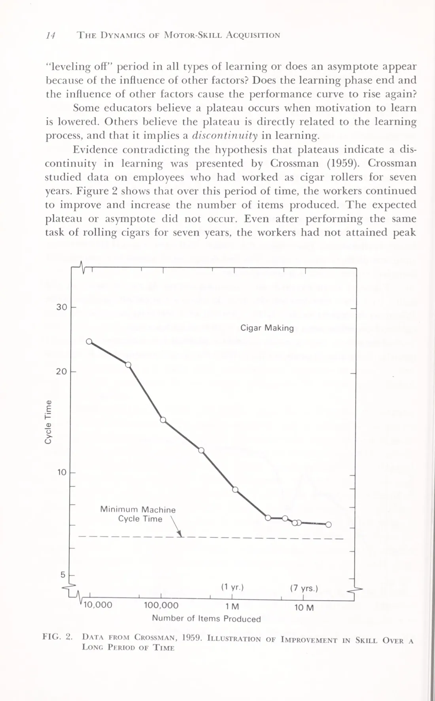
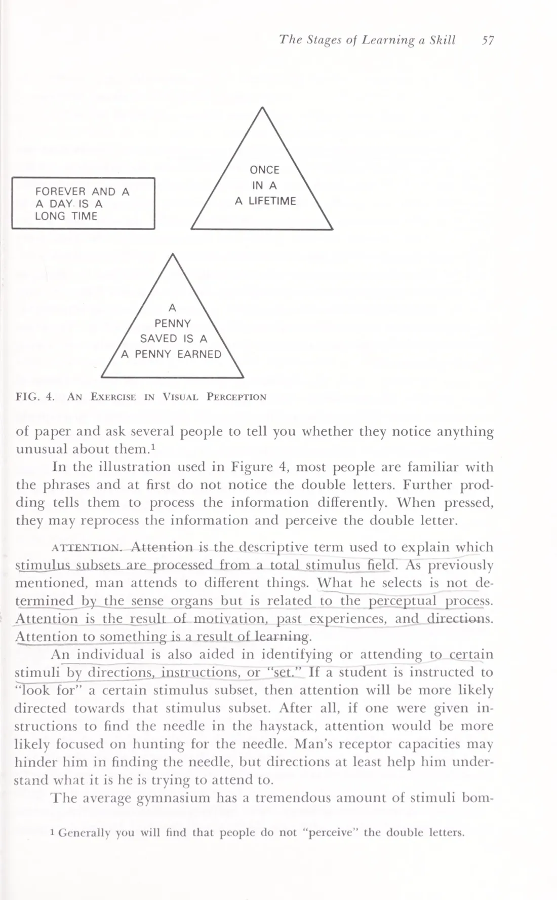
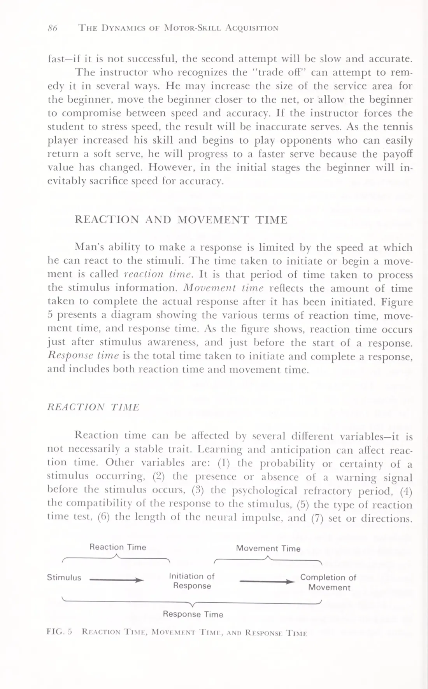
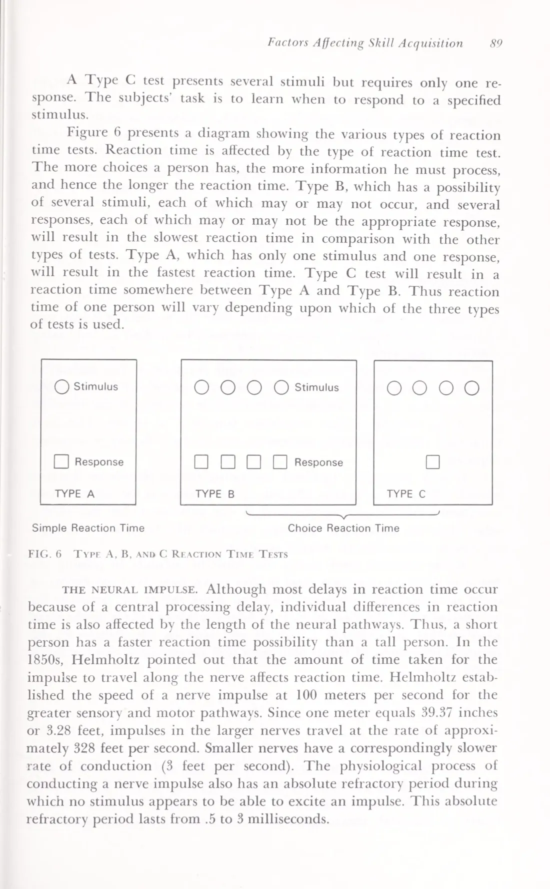
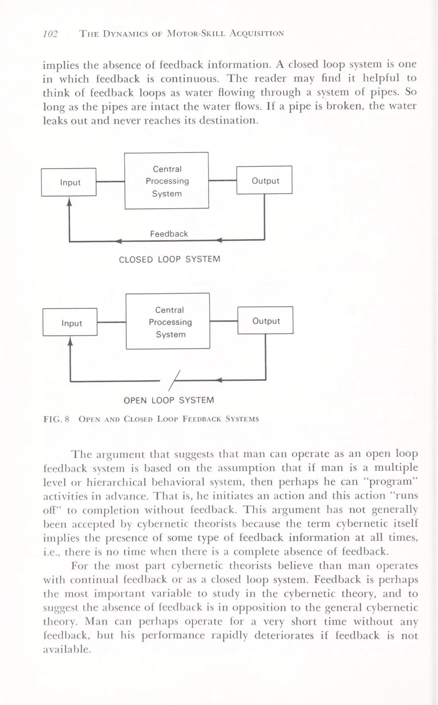
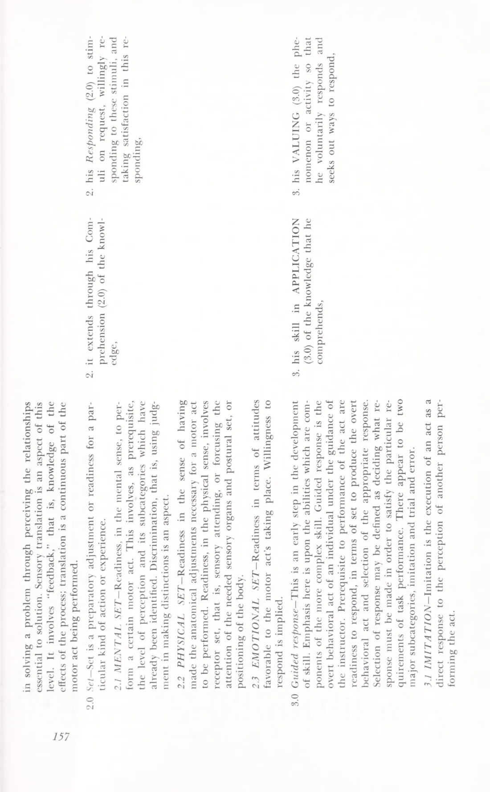
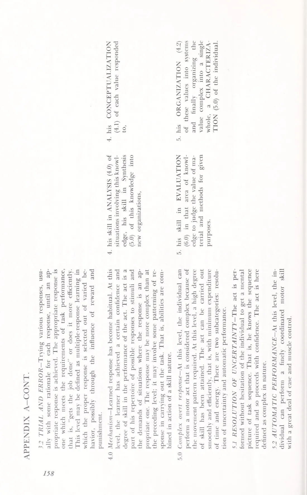

Mục lục
- Lời giới thiệu (xi)
- Lời nói đầu (xv)
Chương một: Giới thiệu (1)
- Những gì cần được nghiên cứu trong quá trình tiếp nhận kỹ năng (2)
- Lý thuyết điều khiển học (Cybernetic Theory) (3)
- Tóm tắt (4)
Chương hai: Học tập, năng lực và thực hiện vận động (6)
- Thực hiện vận động và học tập kỹ năng (7)
- Các biến số thuộc về cơ thể (Organismic Variables) (7)
- Sự trưởng thành và suy thoái (8)
- Các biến số nhiệm vụ (9)
- Các biến số động cơ (10)
- Các điều kiện học tập (10)
- Xác định các phân loại trong nghiên cứu (11)
- Đo lường việc học tập (13)
- Sự biến thiên cá nhân trong học tập (16)
- Năng lực và sự thành công (16)
- Các năng lực thể lực (17)
- Các năng lực chuyên biệt theo nhiệm vụ (18)
- Năng lực trí nhớ (19)
- Các năng lực vận động - tri giác (Perceptual-Motor Abilities) (21)
- Tóm tắt (21)
Chương ba: Các cấu trúc lý thuyết về học tập (23)
- Tổng quan về các lý thuyết học tập (24)
- Các lý thuyết học tập liên tưởng (Association Theories) (25)
- Các lý thuyết học tập nhận thức (Cognitive Theories) (28)
- Lý thuyết điều khiển học (30)
- Tóm tắt (36)
Chương bốn: Hiểu về thuật ngữ “kỹ năng” (38)
- Các định nghĩa về kỹ năng (38)
- Định nghĩa mô tả (39)
- Định nghĩa thao tác (Operational Definitions) (39)
- Các cơ chế của một hành động có kỹ năng (40)
- Các đặc điểm của một hành động có kỹ năng (42)
- Tổ chức phân cấp (42)
- Chương trình điều hành (Executive Programs) và chương trình con (Subroutines) (43)
- Sự tiếp nhận các chương trình con (44)
- Cấu trúc thời gian của kỹ năng (47)
- Tóm tắt (49)
Chương năm: Các giai đoạn học một kỹ năng (51)
- Giai đoạn I: Hình thành kế hoạch (52)
- Năng lực và giới hạn của cơ quan thụ cảm ở con người (53)
- Năng lực và giới hạn tri giác ở con người (56)
- Tóm tắt Giai đoạn I (59)
- Giai đoạn II: Thực hành (60)
- Các tín hiệu thụ cảm trong quá trình thực hành (61)
- Lịch trình và phân bổ thực hành (62)
- Học toàn bộ và học từng phần (63)
- Xử lý liên tục và phản hồi (feedback) (64)
- Tóm tắt Giai đoạn II (66)
- Giai đoạn III: Thực hiện tự động (66)
- Thay đổi tổ chức tuần tự (67)
- Tóm tắt Giai đoạn III (71)
- Tóm tắt (72)
Chương sáu: Các yếu tố ảnh hưởng đến sự tiếp nhận kỹ năng (74)
- Lưu giữ (Retention) (74)
- Lưu giữ các kỹ năng vận động (76)
- Chuyển giao học tập (Transfer of Learning) (77)
- Chuyển giao và tiếp nhận kỹ năng (78)
- Động cơ (79)
- Đặt mục tiêu và mức độ kỳ vọng (79)
- Ảnh hưởng văn hóa và động cơ (82)
- Phân nhóm theo năng lực (83)
- Yêu cầu của nhiệm vụ và môi trường (84)
- Thời gian phản ứng (Reaction Time) và thời gian vận động (Movement Time) (86)
- Thời gian phản ứng (86)
- Thời gian vận động (90)
- Tóm tắt (90)
Chương bảy: Phản hồi và việc học kỹ năng (92)
- Các định nghĩa về phản hồi (93)
- Vai trò của phản hồi (94)
- Phản hồi hành động và phản hồi học tập (94)
- Phản hồi tạo động lực (95)
- Các yếu tố ảnh hưởng đến vai trò của phản hồi (96)
- Các vòng lặp phản hồi (Feedback Loops) (100)
- Vòng hở và vòng kín (Open and Closed Loops) (101)
- Các vòng lặp bên trong (Internal Loops) (103)
- Phản hồi tương tác nhóm (104)
- Nhiễu và phản hồi (105)
- Các mẫu tham chiếu (Reference Patterns) (106)
- Hàm ý đối với việc giảng dạy (108)
- Tương lai của phản hồi (111)
- Trở lại hiện tại (113)
- Tóm tắt (114)
Chương tám: Các hệ thống phân loại môn thể thao (116)
- Các tiêu chí cho một hệ thống phân loại (Taxonomy) (117)
- Các hệ thống phân loại truyền thống (118)
- Các hệ thống phân loại gần đây (121)
- Chuỗi liên tục kỹ năng của Knapp (121)
- Các mức độ khó của Fitts (129)
- Phân loại năng lực và trò chơi của Vanek và Cratty (132)
- Tóm tắt (134)
Chương chín: Quy trình giảng dạy (135)
- Đánh giá hành vi đầu vào của học viên (135)
- Phân tích nhiệm vụ (138)
- Một hệ thống phân loại (139)
- Phân tích các thành phần then chốt (141)
- Vai trò của giáo viên (146)
- Mã hóa thông tin (147)
- Phương thức thực hành và phương tiện huấn luyện (149)
- Cung cấp phản hồi (150)
- Đánh giá kết quả thực hiện đầu ra (151)
- Tóm tắt (152)
Phụ lục và Tài liệu tham khảo (156)
- Phụ lục A (156)
- Phụ lục B (159)
- Tài liệu tham khảo (163)
Bảng tra cứu thuật ngữ (Index) (169)
Lời giới thiệu
Trong lời nói đầu của cuốn sách xuất bản năm 1926, The Psychology of Coaching (Tâm lý học huấn luyện), Coleman R. Griffith tuyên bố rằng tác phẩm đó là sản phẩm của “chuyến du hành của một nhà tâm lý học vào lĩnh vực thi đấu thể thao”. Ngược lại, người ta có thể mô tả The Dynamics of Motor-Skill Acquisition (Động lực học của sự tiếp nhận kỹ năng vận động) là kết quả từ sự dấn thân của một nhà giáo dục thể chất vào lĩnh vực tâm lý học, cụ thể là nhánh tâm lý học nghiên cứu về thực hiện vận động của con người (human performance).
Vào thời của Griffith, việc một Giáo sư Tâm lý học Giáo dục trình bày quan điểm về các kỹ thuật huấn luyện ngay trong trang sách là điều khá khác thường. Quả thực, công trình xuất bản này có thể được xem là một trong những cầu nối hữu hình đầu tiên giữa tâm lý học và giáo dục thể chất. Không lâu sau đó, vào năm 1930, nhằm đáp ứng nhu cầu của sinh viên ngành tâm lý, Clarence Edwin Ragsdale đã biên soạn cuốn cẩm nang The Psychology of Motor Learning (Tâm lý học về học tập vận động), trong đó ông nỗ lực liên hệ một số quy luật và nguyên lý học tập với các hoạt động vận động. Tác phẩm này đã gắn kết Ragsdale với mối quan tâm của các nhà giáo dục thể chất, mặc dù bài đóng góp của ông mang tựa đề “How Children Learn the Motor Types of Activities” (Trẻ em học các loại hoạt động vận động như thế nào) trong Niên giám lần thứ bốn mươi chín của Hiệp hội Quốc gia về Nghiên cứu Giáo dục mới là công trình được các nhà lý thuyết học tập vận động biết đến rộng rãi hơn.
Việc có nhiều nhà nghiên cứu hành vi con người kể từ thời Ragsdale quan tâm đến các khía cạnh khác nhau của sự thực hiện có kỹ năng đã được khẳng định rõ ràng trong các tài liệu tâm lý học. Tuy nhiên, rất ít người trong số họ tập trung nỗ lực vào việc nghiên cứu kỹ năng khi nó diễn ra trong bối cảnh thi đấu thể thao. “Chuyến du hành” của Griffith cùng việc ghi chép lại các nghiên cứu tiến hành trong phòng thí nghiệm đặc biệt của ông dành cho nghiên cứu tâm lý học về con người trong thi đấu thể thao đã đứng vững trong một khoảng thời gian tương đối dài như một nỗ lực đơn độc.
John D. Lawther, một nhà tâm lý học mà niềm đam mê và thành công trong huấn luyện đã khiến ông chọn giáo dục thể chất làm sự nghiệp của mình, là một ví dụ tiêu biểu khác về người đã liên hệ hiệu quả việc nghiên cứu thực hiện kỹ năng của con người với mối quan tâm của các nhà giáo dục thể chất. Tầm ảnh hưởng của Lawther lan tỏa khắp giới chuyên môn thông qua các bài viết của ông và qua chính các học viên cao học của ông. Đặc biệt, ấn phẩm năm 1951 Psychology of Coaching đã mang đến cho những người dạy kỹ năng một cuốn sách kết hợp các nguyên lý từ nhiều ngành học thuật với các dữ liệu thực nghiệm rút ra từ huấn luyện và các tình huống học tập trình độ cao khác.
Trong những năm sau Thế chiến II, giai đoạn mà tên tuổi của John Lawther trở nên nổi bật với tư cách là một chuyên gia về học tập vận động, nhiều nhà giáo dục thể chất bắt đầu hướng việc nghiên cứu của mình nhiều hơn sang ngành tâm lý học chính quy. Việc sinh viên cao học theo đuổi các bằng cấp nâng cao về giáo dục thể chất “học thêm một vài môn tâm lý học” như trắc nghiệm tâm lý (psychometrics), lý thuyết học tập, tâm lý học sinh lý, v.v., trở nên khá phổ biến. Sức hấp dẫn đối với các nhà giáo dục thể chất trong việc thâm nhập vào tài liệu chuyên môn, các ý tưởng mới nổi và các phương thức thực nghiệm của tâm lý học ngày càng gia tăng. Đồng thời, bản thân tâm lý học với tư cách là một lĩnh vực nghiên cứu cũng đang trở nên phức tạp và tinh vi hơn. Các phân ngành mới đang hình thành: nhân cách học, động lực học nhóm, thực hiện vận động của con người, v.v. Rõ ràng, sự kết nối hành vi con người với kỷ nguyên công nghệ mà chúng ta đang bắt đầu bước vào đã đặt ra những thách thức to lớn cho các học giả thuộc khoa học hành vi. Theo nghĩa Margaret D. Robb đã theo đuổi tri thức trong một trong những phong trào tiên phong thuộc lĩnh vực tâm lý học này, “chuyến du hành” của bà có phần độc đáo. Sự cộng tác của bà với Paul M. Fitts trong “Lý thuyết thực hiện vận động của con người” (Human Performance Theory — như cách ông thường gọi trong giai đoạn hình thành khái niệm ban đầu) đã cung cấp cho bà khung tham chiếu cụ thể mà từ đó cuốn giáo trình này được phát triển.
Vì thế, khi viết cuốn sách này, Giáo sư Robb đã mang đến một sự hiểu biết nền tảng về con người đang thực hiện hành động như một bộ xử lý thông tin. Khi nền tảng lý thuyết này được đặt trên nhiều năm tham gia và giảng dạy các kỹ năng thể thao và hoạt động thể chất, có thể hiểu được rằng The Dynamics of Motor-Skill Acquisition mang lại một cách tiếp cận vô cùng phù hợp đối với một trong những mối quan tâm trung tâm của giáo dục thể chất — đó là việc hướng dẫn học tập và thực hiện kỹ năng.
Chủ đề chính của Robb, nói một cách đơn giản, là việc học tập và thực hiện kỹ năng phải được nghiên cứu như một tổng thể — một sự thống nhất mang tính tập hợp và tích hợp giữa môi trường, cá nhân, nhiệm vụ và mục tiêu. Cam kết của tác giả đối với quan niệm rằng cá nhân là trung tâm của một mạng lưới giao tiếp và điều khiển mà xung quanh đó mọi hành vi của người ấy diễn ra được nhắc lại xuyên suốt cuốn sách. Khi mô tả chức năng xử lý thông tin của con người, Tiến sĩ Robb liên tục rút ra các ví dụ từ thực tiễn hằng ngày trong nhà tập thể dục và trên sân chơi để làm rõ các điểm nhấn của mình. Ở đây, nền tảng phong phú của bà với tư cách là một giáo viên dạy các kỹ năng giáo dục thể chất, và có lẽ quan trọng hơn là vai trò người đào tạo các giáo viên dạy kỹ năng tương lai, giúp bà có thể gắn kết lý thuyết tâm lý học hiện đại với những vấn đề thường nhật của các nhà giáo dục thể chất một cách đầy ý nghĩa.
Phần thảo luận về phân tích nhiệm vụ cũng như các giai đoạn và cấp độ học tập phản ánh định hướng của Margaret Robb đối với điều khiển học hành vi (behavioral cybernetics). Trong khi hầu hết các giáo trình giáo dục thể chất đề cập đến chủ đề thực hiện có kỹ năng chủ yếu xoay quanh người học/người thực hiện và các biến số gắn với việc thi hành hành động có kỹ năng, Robb lại dành sự xem xét nghiêm túc cho việc khảo sát bản thân nhiệm vụ có kỹ năng và những khía cạnh hành vi gắn kết cá nhân với nhiệm vụ: phản hồi và các quá trình diễn ra bên trong việc học.
Là một người cùng theo đuổi ngành tâm lý học, tôi chia sẻ niềm tin của Margaret Robb rằng lý thuyết điều khiển học và các cách diễn giải về hành vi thể chất của con người hứa hẹn sẽ giải mã một số bí ẩn về “con người trong chuyển động” vốn vẫn luôn vượt khỏi tầm hiểu biết của chúng ta. Là một nhà giáo dục thể chất, tôi hết sức đồng cảm với mong muốn của Tiến sĩ Robb trong việc đưa những tri thức rút ra từ lý thuyết thực hiện vận động của con người vào dòng chảy tư tưởng chính thống của giáo dục thể chất. Do đó, tôi coi việc viết lời giới thiệu ngắn gọn này cho cuốn The Dynamics of Motor-Skill Acquisition là một vinh dự. Tôi đánh dấu dịp này như một cột mốc khi một ấn phẩm cần thiết và kịp thời từ lâu đã tìm được vị trí của mình trong kho tàng tài liệu của giáo dục thể chất.
PEARL BERLIN
Đại học Bắc Carolina
Greensboro, Bắc Carolina
Lời nói đầu
Trọng tâm của cuốn sách này là cách tiếp cận điều khiển học (cybernetics) nhằm thấu hiểu việc học tập. Tài liệu được biên soạn chủ yếu dành cho các nhà giáo dục thể chất quan tâm đến động lực học của sự tiếp nhận kỹ năng. Các giáo viên tương lai, cũng như những người hiện đang công tác trong ngành giáo dục thể chất có mong muốn thiết kế các phương pháp giảng dạy dựa trên lý thuyết xử lý thông tin, sẽ thấy tài liệu này hữu ích. Cuốn sách cũng có thể đóng vai trò là cơ sở cho việc nghiên cứu và tìm hiểu sâu hơn trong một lĩnh vực cụ thể thuộc bối cảnh tổng thể của sự thực hiện vận động và tiếp nhận kỹ năng ở con người.
Cuốn sách này không đưa ra một giải pháp đơn giản để xác định các phương pháp giảng dạy. Hiện chưa tồn tại một tri thức nào giải thích trọn vẹn cách con người học một kỹ năng, và do đó đây không phải là một cuốn sách hướng dẫn kiểu “làm thế nào để thực hiện”. Mặc dù nhiều giáo viên và sinh viên muốn được chỉ bảo phương pháp cần dùng để dạy hoặc để lĩnh hội kỹ năng, nhưng không có một phương pháp duy nhất nào cả. Có lẽ sai lầm lớn nhất mà những người đào tạo giáo viên đã mắc phải trong quá khứ là khiến sinh viên nghĩ rằng có những phương pháp giảng dạy nhất định bắt buộc phải sử dụng. Tốc độ thay đổi trong xã hội nhanh đến mức điều hiệu quả hôm nay có thể trở nên lỗi thời vào ngày mai. Các nhà giáo dục đã mắc lỗi khi không cho phép hoặc không khuyến khích sinh viên phát triển năng lực ra quyết định của riêng mình trong việc lựa chọn phương pháp giảng dạy. Trái ngược với các giáo trình trước đây về học tập vận động và phương pháp giảng dạy, cách tiếp cận của cuốn sách này là xem con người như một bộ xử lý thông tin với những giới hạn, năng lực và phẩm chất thích nghi. Nó cung cấp một số thông tin để bạn xử lý, điều này có thể hữu ích trong việc thấu hiểu các vấn đề phức tạp liên quan đến việc học một kỹ năng và trong việc cấu trúc môi trường học tập.
Một trong những nhiệm vụ khó khăn nhất gặp phải khi nghiên cứu sự thực hiện vận động của con người và học tập kỹ năng theo cách tiếp cận điều khiển học là làm quen với hệ thống thuật ngữ. Xuyên suốt văn bản, các thuật ngữ khác nhau đều được định nghĩa và giải thích. Cuốn sách được tổ chức theo cấu trúc phân cấp. Các chương mở đầu cung cấp cho người đọc tài liệu nền tảng về sự phân biệt giữa học tập và thực hiện vận động, các cấu trúc lý thuyết về học tập, cũng như nhiều định nghĩa khác nhau về thuật ngữ “kỹ năng” cùng các từ ngữ liên quan đến kỹ năng. Một trong những nội dung quan trọng hơn được xem xét là định nghĩa thao tác về kỹ năng. Ưu điểm chính của định nghĩa thao tác về kỹ năng là nó cho phép người ta phác họa rõ các đặc điểm, thuộc tính và cơ chế của một hành động có kỹ năng. Từ Chương một đến Chương bốn sẽ dẫn dắt từng bước vào các vấn đề của học tập kỹ năng cũng như tạo nền tảng để hiểu động lực học của sự tiếp nhận kỹ năng.
Chương năm trình bày thông tin về quá trình diễn ra khi học một kỹ năng. Năng lực và giới hạn thụ cảm - tri giác của con người được khảo sát. Chương này nhấn mạnh vào người học và việc học một chuyển động có kỹ năng. Các yếu tố bổ sung ảnh hưởng đến sự tiếp nhận kỹ năng, chẳng hạn như lưu giữ (trí nhớ vận động), động cơ, chuyển giao học tập và năng lực của cơ quan thực thi (effector), được trình bày trong Chương sáu.
Phản hồi (feedback), trái tim của quá trình học tập kỹ năng, liên tục được đề cập xuyên suốt cuốn sách. Chương bảy mở rộng chủ đề phản hồi và đi sâu hơn vào các vai trò, loại hình, phương thức và tương lai của phản hồi.
Trong khi mấy chương đầu tập trung vào người học và quá trình học một kỹ năng, Chương tám và Chương chín đề cập đến các loại nhiệm vụ cần học và quy trình giảng dạy thực tế. Một số cách tiếp cận khác nhau để xây dựng hệ thống phân loại nhiệm vụ (task taxonomy) được trình bày. Cần thừa nhận rằng mỗi hệ thống phân loại đều có những hạn chế. Tuy nhiên, cũng cần ghi nhận rằng mỗi hệ thống phân loại nhấn mạnh một mục đích khác nhau: (1) cải thiện việc giao tiếp... hoặc đặt trọng tâm vào một số mục tiêu hành vi và quy trình đánh giá nhất định, và (4) thiết kế các phương pháp giảng dạy.
Chương chín trình bày tài liệu liên quan đến quy trình xây dựng một kế hoạch giảng dạy. Các biến số nhiệm vụ và biến số cá nhân cũng như vai trò của giáo viên được xem xét. Bất cứ khi nào có thể, các ví dụ đều được đưa ra để hỗ trợ việc hiểu những kết quả có thể nảy sinh từ quá trình liên kết các biến số cá nhân, nhiệm vụ và giáo viên.
Thật vô cùng khó khăn để bày tỏ lòng biết ơn một cách trọn vẹn tới những người đã có ảnh hưởng trực tiếp hoặc gián tiếp đến quá trình chuẩn bị cuốn sách này. Các buổi hội thảo chuyên đề với cố Giáo sư Paul M. Fitts và những cuộc trao đổi với Richard Pew đã cung cấp cho tôi nguồn thông tin đầu vào ban đầu cho tài liệu trong cuốn sách này. Mặc dù sau đó đã được mã hóa thành các “đơn vị thông tin” (chunks), chuyển hóa thành ngôn từ và thể hiện trên trang giấy, quá trình này diễn ra chậm chạp bởi những quy tắc chuyển đổi mới cần phải được học, đồng thời thông tin cũ trong các kho lưu trữ trí nhớ phải được mã hóa lại. Tôi biết ơn vì việc học tập đó đã diễn ra trong một bầu không khí tôn trọng và thấu hiểu lẫn nhau đối với các vấn đề của việc học kỹ năng, bất kể thuộc lĩnh vực nào. Không hề có định kiến hay sự cục bộ giữa các ngành học. Đối với một phụ nữ trong ngành giáo dục thể chất, điều này quả thực là một niềm vui lớn.
Tôi cũng mang ơn các đồng nghiệp và sinh viên tại Cortland, những người đã ưu ái phản hồi cho tôi về tài liệu trong cuốn sách này và có thể đã phải vất vả trải qua những bản thảo thử nghiệm ban đầu. Tôi đặc biệt biết ơn Tiến sĩ Katherine Ley, người không chỉ khích lệ việc viết cuốn sách này mà còn kiên nhẫn đưa ra các góp ý và biên tập toàn bộ bản thảo. Bà, giống như những người thầy hiệu quả khác, sở hữu phẩm chất biết đòi hỏi, kiên quyết và truyền cảm hứng để người khác làm được nhiều hơn những gì họ nghĩ mình có thể làm. Sự chất vấn bền bỉ và nhãn quan sắc sảo của bà, cùng với óc phán xét thực tế, đã khiến sự giúp đỡ của bà trở nên vô giá.
Khi một người bắt đầu thử viết một cuốn sách, cần phải có một ai đó đặt niềm tin vào tài liệu ấy ngoài chính tác giả. Tiến sĩ Pearl Berlin đã đóng vai trò đó đối với cuốn sách này. Phản hồi của bà đối với đề cương sơ bộ và dàn ý cũng như phần đọc duyệt bản thảo cuối cùng của bà hết sức hữu ích, và tôi thực sự trân trọng điều đó.
Đối với bạn, người đọc, hy vọng của tôi là khi bạn xử lý thông tin trong cuốn sách này, bạn sẽ phản hồi, đề xuất, phản biện, mở rộng, và qua đó, sẽ có thể hoàn thành kế hoạch điều hành (executive plan) của chính mình.
M. ROBB
Cortland, New York
Chương 1: Giới thiệu
Những vấn đề liên quan đến cách thức một người tiếp nhận kỹ năng vốn rất nhiều và phức tạp. Thực tế, bản thân thuật ngữ kỹ năng (skill) cũng là một từ khó nắm bắt và dễ gây nhầm lẫn. Các nhà giáo dục thể chất thường có xu hướng dùng từ kỹ năng để mô tả phẩm chất trong hoạt động thực hiện vận động của một người. Người đã đạt đến một mức độ thành thạo nhất định có thể được gọi là "có kỹ năng cao" hoặc "kỹ năng kém". Chúng ta có thể nói một người có kỹ năng trung bình. Chúng ta mô tả một người là "có kỹ năng tốt" nếu người đó vận động một cách hiệu quả và tiết kiệm sức lực, hoặc nếu người đó tỏ ra có tiềm năng tốt để hoàn thành một động tác cụ thể.
Kỹ năng cũng được dùng để chỉ các nhiệm vụ vận động cụ thể. Khi nói đến một kỹ năng, chúng ta muốn nói tới một động tác thực hiện riêng lẻ cần phải được học. Cú đập bóng trong bóng chuyền và động tác dẫn bóng trong bóng rổ là những kỹ năng cụ thể. Chúng ta cũng nói rằng một số kỹ năng nhất định phải được học rồi sau đó kết hợp lại nếu muốn tham gia một trò chơi hay môn thể thao nào đó. Theo nghĩa này, chúng ta muốn nói đến sự kết hợp của nhiều động tác phức tạp.
Mọi người đều đã từng thử thực hiện một loại kỹ năng nào đó vào lúc này hay lúc khác; đó có thể là lái ô tô, đánh bóng chày hoặc buộc dây giày. Tất cả những động tác này đều là các kỹ năng cần phải học. Một câu hỏi hợp lý được đặt ra là: "Những nhiệm vụ này được học như thế nào?" Việc nghiên cứu cách con người học các động tác trong thể thao và khiêu vũ là mối quan tâm của các nhà giáo dục thể chất. Giúp con người học cách vận động tiết kiệm và hiệu quả nhằm hoàn thành một nhiệm vụ cụ thể là một trong những mục tiêu của họ. Nhà giáo dục thể chất chuyên nghiệp sử dụng các phương thức thể thao, trò chơi và khiêu vũ để đạt được những mục tiêu giáo dục rộng lớn.
Các lĩnh vực chuyên môn khác cũng quan tâm đến việc tiếp nhận kỹ năng. Bác sĩ phẫu thuật phải thực hiện các thao tác khéo léo và sử dụng những động tác phức tạp trong một ca mổ. Phi công hàng không phải vận dụng nhiều kỹ năng khác nhau để điều khiển máy bay thành công. Một lần nữa, thuật ngữ kỹ năng có thể dùng để mô tả mức độ thành thạo đạt được hoặc được dùng như một danh từ để cho chúng ta biết chính xác nhiệm vụ vận động mà người đó đang cố gắng thực hiện. Người ta cũng phải tiếp nhận kỹ năng để lái ô tô, đọc màn hình ra-đa hoặc đánh một quả bóng quần vợt.
Bất kể chúng ta định dùng từ kỹ năng theo nghĩa nào, những ý nghĩa có thể hoán đổi cho nhau này khiến việc viết về quá trình tiếp nhận kỹ năng trở nên cực kỳ rối rắm. Khi nói đến việc tiếp nhận kỹ năng, chúng ta phải mô tả quá trình và sự tương tác của nhiều lực lượng khác nhau mà một cá nhân gặp phải khi cố gắng hoàn thành một nhiệm vụ cụ thể. Do đó, kỹ năng trong ngữ cảnh này hàm ý việc hoàn thành một nhiệm vụ chứ không đề cập đến phẩm chất mang tính hàm nghĩa của động tác. Cần nhiều giờ luyện tập trước khi một động tác có kỹ năng được thực hiện một cách trôi chảy và hiệu quả. Đôi khi các động tác vẫn còn vụng về ngay cả sau nhiều giờ luyện tập. Nhiệm vụ đó, nếu có hoàn thành được, cũng có thể được thực hiện theo một cách rất kém hiệu quả. Một điều vừa thú vị vừa kỳ lạ là một số người học cách thực hiện một số động tác rất khéo léo trong khi những người khác dường như không thể. Những động tác có thể được thực hiện một cách có kỹ năng khác nhau ở từng người, và dường như không ai có thể thực hiện tất cả mọi hành động tốt ngang nhau.
Những gì cần nghiên cứu trong việc tiếp nhận kỹ năng
Kiến thức cần thiết để hiểu về sự tiếp nhận kỹ năng đến từ nhiều nguồn. Các nhà giáo dục thể chất phải dựa vào kinh nghiệm thực tiễn của chính mình trong việc giúp người khác tiếp nhận kỹ năng trong các hoạt động vận động và thể thao. Giống như các chuyên gia trong bất kỳ lĩnh vực nào khác, họ gặp phải vấn đề khi áp dụng các cấu trúc lý thuyết và kết quả nghiên cứu vào những vấn đề thực tiễn của việc học kỹ năng. Các phát hiện và lý thuyết từ các lĩnh vực tâm lý học, xã hội học, sinh lý học và nhân học, cũng như các nghiên cứu ngay trong lĩnh vực giáo dục thể chất, làm phong phú thêm hiểu biết về sự tiếp nhận kỹ năng. Các nhà giáo dục thể chất có xu hướng tìm kiếm những nghiên cứu có thể áp dụng ngay lập tức. Hầu hết các nhà nghiên cứu nhận ra điều này không phải lúc nào cũng khả thi, và việc khám phá tri thức, dù chưa thể áp dụng ngay lập tức, vẫn vô cùng quan trọng.
Vai trò của nhà nghiên cứu trong bất kỳ lĩnh vực nào là khám phá tri thức và sự kiện mới cũng như kiểm chứng các đổi mới và thực hành hiện hành. Vai trò của nhà giáo dục là áp dụng các phát hiện từ những nghiên cứu đáng tin cậy; họ đảm nhận nhiệm vụ khó khăn là xác định các phương pháp giảng dạy phù hợp nhất. Các phương pháp hoặc kỹ thuật nhằm cải thiện việc học được phát hiện thông qua nghiên cứu, phát minh và đổi mới. Một sự đổi mới có thể là kết quả của quá trình thử và sai, quan sát, rồi lại tiếp tục thử và sai. Một số đổi mới nảy sinh từ sự bế tắc hoàn toàn. Trong mọi trường hợp, vai trò của nhà giáo dục kiêm nhà nghiên cứu là kiểm chứng tính đúng đắn của các đổi mới đó.
Giáo viên giáo dục thể chất phải chắt lọc kiến thức từ nhiều ngành khoa học cơ bản khác nhau, đồng thời phải vận dụng thực nghiệm và sáng chế trong chính lĩnh vực của mình.
Nhiều lời chỉ trích đã nhắm vào những giáo viên không đọc hoặc không áp dụng các kết quả nghiên cứu. Có thể dễ dàng hiểu vì sao giáo viên trở nên vỡ mộng với các kết quả nghiên cứu—tài liệu nghiên cứu tràn ngập những kết quả mâu thuẫn nhau. Nếu muốn việc ứng dụng diễn ra nhiều hơn, cần có một cách tiếp cận mới mẻ. Nền tảng lý thuyết của một ngành khoa học đang nổi lên mang tên điều khiển học (cybernetics) có thể mang lại cách tiếp cận mới mẻ này để hiểu về con người và sự điều tiết vận động.
Lý thuyết điều khiển học (Cybernetics)
Lĩnh vực điều khiển học khi áp dụng vào việc nghiên cứu hành vi con người dựa trên tiền đề rằng có thể rút ra sự tương đồng giữa hành vi con người và các cơ cấu servo (servomechanisms). Cơ cấu servo là những thiết bị tự điều tiết được sử dụng trong máy móc dựa trên nguyên lý phản hồi (feedback). Chẳng hạn, bộ điều nhiệt, tên lửa dẫn đường, vô-lăng lái hoặc bánh lái tàu thủy là những thiết bị tự điều tiết có tác động đến hiệu suất trong tương lai của thiết bị cụ thể liên quan. Hành vi con người giống với nguyên lý của cơ cấu servo ở chỗ phản hồi từ kinh nghiệm quá khứ giúp xác định hành vi trong tương lai.
Về cơ bản, con người là một hệ thống xử lý thông tin. Con người sử dụng dung lượng trí nhớ của mình, đưa ra quyết định và thực hiện các kỹ năng đơn giản cũng như phức tạp. Nếu muốn bắt đầu hiểu cách thức học một số nhiệm vụ phức tạp (như trong thể thao, y học, công nghiệp, v.v.), điều thiết yếu là phải xem xét cách con người xử lý thông tin và điều tiết hành vi. Lĩnh vực nghiên cứu sự kiểm soát và điều tiết môi trường của con người được gọi là hoạt động thực hiện của con người (human performance). Lĩnh vực hoạt động thực hiện của con người quan tâm đến con người với tư cách là một bộ xử lý thông tin và đề cập đến các chủ đề về quá trình cảm giác, tri giác và thực thi (effector processes). Năng lực, giới hạn và phẩm chất tích hợp của con người được nghiên cứu nhằm cải thiện cấu trúc của tình huống môi trường và qua đó rút ngắn quá trình học tập.
Sự quan tâm đến việc nghiên cứu hoạt động thực hiện của con người được các nhà tâm lý học khơi dậy trở lại trong Thế chiến thứ hai do nhu cầu cấp bách phải huấn luyện binh sĩ trong thời gian ngắn. Con người cần thực hiện các động tác mang tính kỹ thuật cao như lái máy bay, bắn súng và phát hiện tín hiệu trên màn hình ra-đa. Các phương pháp học thử và sai "kiểu cũ" không còn đáp ứng được.
Các nghiên cứu và thực nghiệm được tiến hành trong thời kỳ này là khởi đầu cho việc áp dụng các phát hiện vào việc tiếp nhận kỹ năng thể thao. Những khảo cứu này đã thúc đẩy thêm nhiều nghiên cứu và thực nghiệm trong lĩnh vực học tập kỹ năng vận động.
Weiner (1961) đã xem xét toàn bộ lĩnh vực lý thuyết điều khiển và truyền thông liên quan đến cả máy móc lẫn động vật, và đặt tên cho việc nghiên cứu lĩnh vực này là điều khiển học (cybernetics).
Weiner và các cộng sự là những người đầu tiên sử dụng thuật ngữ cybernetics. Thuật ngữ của các lý thuyết hiện có về sự kiểm soát và/hoặc điều tiết vận động và hành vi quá thiên lệch. Từ cybernetics bắt nguồn từ từ tiếng Hy Lạp kybernetike, dịch theo nghĩa đen là "nghệ thuật cầm lái". Smith và Smith (1966) chỉ ra rằng việc nghiên cứu học tập phải dựa trên sự hiểu biết về tổ chức "phản hồi cảm giác" (sensory-feedback) của hành vi. Phản hồi là một khái niệm cực kỳ quan trọng trong điều khiển học.
Bản thân điều khiển học không phải là một lý thuyết về máy móc tự động hay điện tử học. Khoa học điều khiển học không hàm ý cách đối xử "phi nhân tính" đối với con người hay cho rằng con người đồng nghĩa với máy móc. Hàm nghĩa của từ điều khiển học rất đa dạng và mang tính chủ quan. Tuy nhiên, việc lạm dụng từ này cũng tương tự như những đánh giá mang tính giá trị áp đặt lên các máy dạy học. Nhiều nhà giáo dục tin rằng việc sử dụng máy dạy học đồng nghĩa với việc loại bỏ người thầy. Những nỗi sợ hãi này là vô căn cứ. Công nghệ không tự động hàm ý việc sử dụng con người một cách phi nhân tính. Chắc chắn rằng điện thoại, ô tô, máy bay và máy in từng bị một số người e sợ khi mới xuất hiện. Con người là một cơ thể sống cực kỳ phức tạp. Dù máy tính có thể thực hiện nhiều phép toán tinh vi, chỉ con người mới có khả năng ra quyết định. Máy tính không có khả năng "tự điều tiết"; con người thì có. Việc nghiên cứu máy tính đã chứng tỏ tính hữu ích trong việc xác định các nguyên lý giúp giải thích hành vi và đặc điểm học tập của con người.
Tiền đề được đề xuất trong giáo trình này là các vấn đề về thực hiện kỹ năng chủ yếu là vấn đề tri giác (perceptual problems) hơn là vấn đề vận động (motor problems). Các vấn đề tri giác là những vấn đề liên quan đến việc xử lý, diễn giải và sử dụng các kích thích cảm giác. Con người được nhìn nhận như một bộ xử lý thông tin có khả năng tự điều tiết.
Tóm tắt
Mỗi người có liên quan đến quá trình học tập—dù là học sinh đang học một kỹ năng, nhà nghiên cứu đang kiểm chứng các ý tưởng và/hoặc lý thuyết mới, nhà giáo dục đang áp dụng các nguyên lý từ lý thuyết và nghiên cứu, hay giáo viên đang xác định phương pháp giảng dạy và cấu trúc tình huống môi trường học tập—đều sẽ thấy lý thuyết và khoa học điều khiển học hữu ích để hiểu đầy đủ hơn những phức tạp liên quan đến việc tiếp nhận kỹ năng.
Mỗi chúng ta đều đã trải qua sự bối rối và thất vọng khi học một kỹ năng. Điều khiển học, thông qua hệ thống thuật ngữ và sự tương đồng với các nguyên lý cũng như cấu trúc vận hành của một máy tính tự động, có thể hỗ trợ chúng ta trong việc tiếp tục khảo cứu hành vi của con người khi tiếp nhận kỹ năng.
Động lực học của việc tiếp nhận kỹ năng vận động bắt đầu từ việc nghiên cứu chính con người—năng lực, giới hạn và các đặc điểm vận hành của con người. Kiến thức này cùng với nhận thức về các thành phần của nhiệm vụ sẽ hỗ trợ cho việc cấu trúc môi trường học tập.
Chương 2: Học tập, Năng lực và Hiệu suất
Thuật ngữ học tập (learning), dù được sử dụng phổ biến, lại là một từ phức tạp với nhiều hàm ý sâu rộng. Người nghiên cứu về tiếp nhận kỹ năng (skill acquisition) phải xem xét nhiều khía cạnh của kỹ năng và các yếu tố liên quan đến việc học kỹ năng trước khi có thể bắt đầu hiểu được quá trình này và diễn giải các kết quả.
Kỹ năng là thứ được học. Phần lớn những gì chúng ta biết về học tập đều được ngoại suy từ các nghiên cứu trên động vật bậc thấp. Quá trình học tập của con người khác với quá trình học tập của động vật. Việc rút ra kết luận về các đặc điểm hành vi của con người từ kiến thức thu được qua các nghiên cứu trên động vật có thể gây nguy hiểm và sai lệch. Mối quan tâm của chúng ta ở đây là việc học tập như một chức năng của con người.
Con người khác nhau về năng lực học tập. Những khác biệt cá nhân này là một yếu tố cân nhắc thiết yếu trong toàn bộ môi trường học tập. Không phải tất cả các cá nhân đều bắt đầu việc học ở cùng một vị trí trên dải liên tục của kỹ năng, và tốc độ tiến bộ của họ cũng khác nhau tương ứng.
Học tập bao hàm một phạm vi hành vi rộng lớn, và cách duy nhất để chúng ta chắc chắn rằng việc học đã diễn ra là quan sát và/hoặc đo lường sự thay đổi trong hành vi. Sự thay đổi trong hành vi này được phản ánh qua sự thay đổi trong hiệu suất (performance). Tuy nhiên, một sự thay đổi trong hiệu suất không phải lúc nào cũng chỉ ra rằng việc học đã diễn ra. Một màn trình diễn xuất sắc có thể xảy ra một lần và không bao giờ lặp lại được nữa. Học tập hàm ý một sự thay đổi trong hành vi mang tính tương đối bền vững. Do đó, chúng ta đo lường sự lưu giữ (retention) của một hành vi nhất định.
Trong khi một số biến số có tác động chủ yếu đến việc học kỹ năng, những biến số khác lại ảnh hưởng đến hiệu suất vận động (motor performance). Sự phân biệt giữa các thuật ngữ học tập kỹ năng (skill learning) và hiệu suất vận động là cần thiết để hiểu thấu đáo về quá trình tiếp nhận kỹ năng.
Hiệu suất vận động và Học tập kỹ năng
Thuật ngữ vận động (motor), khi dùng chung với thuật ngữ hiệu suất (performance), hàm ý một hành động của cơ quan thực thi (effector action), một hành động thể chất, hoặc một hành động đòi hỏi sử dụng các nhóm cơ lớn. Hiệu suất có thể mang tính chất tạm thời, và thuật ngữ hiệu suất vận động đề cập đến một hành động thực thi có thể chưa được "cố định" lâu dài trong kho tàng chuyển động của một cá nhân.
Thuật ngữ kỹ năng (skill), khi dùng chung với thuật ngữ học tập (learning), hàm ý sự tái tổ chức các mẫu chuyển động cơ bản dẫn đến một sự thay đổi bền vững trong hành vi thực thi. Học tập kỹ năng đề cập đến một sự thay đổi trong hành vi thực thi xảy ra do kết quả của việc luyện tập. Sự thay đổi hành vi thu được sẽ tiếp tục thể hiện rõ qua mỗi lần lặp lại kỹ năng, và do đó, mang tính nhất quán và tương đối bền vững.
Việc thực hiện một nhiệm vụ đòi hỏi kỹ năng có thể bị biến đổi bởi một số biến số học tập nhất định. Trong số các biến số ảnh hưởng chủ yếu đến việc học kỹ năng có phản hồi (feedback), sự lưu giữ (retention), lịch trình luyện tập và chuyển giao học tập (transfer). Hiệu suất vận động bị ảnh hưởng bởi các biến số khác, chẳng hạn như các yếu tố cơ thể, sự trưởng thành hoặc thoái hóa, yêu cầu của nhiệm vụ và các yếu tố động cơ thúc đẩy. Mỗi yếu tố này đều có thể ảnh hưởng lớn đến hiệu suất của một người khi thực hiện nhiệm vụ.
Đôi khi rất khó để phân biệt các biến số học tập với các biến số hiệu suất. Các biến số gây ra một sự thay đổi tạm thời trong hành vi không thể được quy cho việc học. Quá trình học diễn ra liên tục trong một khoảng thời gian dài và có thể biểu hiện ra bên ngoài rất chậm. Nhìn bề ngoài, có vẻ như một cá nhân học được rất ít, trong khi thực tế, sự cải thiện đang diễn ra dần dần. Toàn bộ hiệu suất của cá nhân phải được xem xét trước khi xác định xem người đó đã học được bao nhiêu. Sự phân biệt giữa các biến số học tập và biến số hiệu suất giúp giáo viên cải thiện cấu trúc của môi trường học tập và nhận thức được điều gì đang xảy ra với học sinh. Các phương pháp giảng dạy, cũng như các kỹ thuật đánh giá, có thể được xác định một cách sáng suốt hơn nhờ sự hiểu biết về các thuật ngữ học tập kỹ năng và hiệu suất vận động.
Các mô tả và ví dụ sau đây về các biến số hiệu suất và sự thay đổi hành vi sẽ giúp làm rõ sự phân biệt giữa các thuật ngữ học tập kỹ năng và hiệu suất vận động.
Các biến số cơ thể (Organismic Variables)
Các biến số cơ thể liên quan đến hoạt động chức năng thể chất của một cá nhân. Sự gia tăng sức bền tim mạch, độ dẻo dai hoặc sức mạnh là những biến số cơ thể ảnh hưởng đến hiệu suất. Một người biểu diễn bước vào quá trình tập luyện có thể thay đổi chức năng thể chất của mình và nhờ đó cải thiện hiệu suất. Tương tự như vậy, cá nhân nào để bản thân mất phong độ thể lực sẽ thấy hiệu suất của mình suy giảm nhanh chóng.
Giả sử một học sinh muốn ném một quả bóng đi xa nhất có thể. Em ấy biết mẫu động tác ném cơ bản, nhưng muốn tăng khoảng cách ném bóng. Em có thể đạt được mục tiêu bằng cách tăng sức mạnh cánh tay và vai hoặc bằng cách tái tổ chức mẫu động tác ném của mình. Nếu khoảng cách ném tăng lên nhờ sự gia tăng sức mạnh, sự cải thiện đó là do một biến số cơ thể. Ngược lại, nếu sự gia tăng đó là do một sự thay đổi nào đó trong mẫu chuyển động cơ bản, nó có thể được quy cho việc học kỹ năng.
Theo lập luận trên, việc tăng khoảng cách ném bóng có thể là hoặc không phải là kết quả của việc học. Trong trường hợp này, người ném trước tiên phải tăng độ dẻo dai để mở rộng biên độ chuyển động (biến số cơ thể); sau đó người đó phải học một mẫu ném khác để tận dụng sự gia tăng về biên độ và độ dẻo dai đó. Như vậy, người đó vừa cải thiện được hiệu suất vừa đã học được kỹ năng.
Nếu một cá nhân thay đổi khoảng cách ném bóng nhờ sự gia tăng kiến thức, chẳng hạn người đó học được cách thả bóng ở góc 45° để tăng khoảng cách, sự thay đổi này có thể được quy cho việc học. Một người có thể biết góc thả bóng tốt nhất là 45°, nhưng nếu không thể thả bóng chính xác ở góc đó, thì không có bằng chứng nào cho thấy người đó biết hay đã học được nguyên lý này, trừ khi một bài kiểm tra viết được đưa ra.
Nhà giáo dục thể chất coi thể lực là mục tiêu chính của giáo dục thể chất và giáo viên đặt trọng tâm lớn vào việc cải thiện hiệu suất đặc biệt quan tâm đến các biến số cơ thể. Cá nhân có thể trạng kém do bệnh tật hoặc lười vận động không thể cải thiện nhanh chóng trong khoảng thời gian dành cho các học phần thể thao. Kiểu người này gặp bất lợi so với người có thể chất khỏe mạnh và sẽ cần khoảng thời gian luyện tập dài hơn. Theo quy luật chung, người có kỹ năng cao và thể lực tốt có thể thực hiện tốt mà cần ít luyện tập — một viễn cảnh rất dễ gây nản lòng cho học sinh thiếu kinh nghiệm, kỹ năng hoặc thể lực, nhưng vẫn phải bị so sánh với những học sinh có kỹ năng tốt.
Trưởng thành và Thoái hóa (Maturation and Degeneration)
Khi một đứa trẻ trưởng thành, trẻ có được khả năng sử dụng các hệ thống cơ bắp khác nhau vốn ảnh hưởng đến hiệu suất của mình. Trẻ không thể thực hiện nhiều chuyển động đòi hỏi kỹ năng cho đến khi trưởng thành đầy đủ. Một đứa trẻ không thể đi xe đạp cho đến khi chân đủ dài để chạm tới bàn đạp. Trẻ không thể bắt bóng cho đến khi sự phối hợp tay-mắt phát triển. Các nguyên lý về tăng trưởng và phát triển rất quan trọng trong việc hiểu những thay đổi về hiệu suất. Tầm quan trọng của những trải nghiệm sớm với các mẫu chuyển động nhằm chuẩn bị cho trẻ học các kỹ năng là điều không thể nhấn mạnh đủ.
Vượt qua một độ tuổi nhất định, hiệu suất nhìn chung sẽ suy giảm. Trong một số trường hợp, sự thay đổi hiệu suất này có thể liên quan trực tiếp đến sự thay đổi trong tình trạng cơ thể của cá nhân. Như vậy, biến số thoái hóa, cũng như các biến số tăng trưởng và phát triển, có liên quan trực tiếp đến hiệu suất vận động.
Yêu cầu của nhiệm vụ (Task Requirements)
Các yêu cầu cụ thể của một nhiệm vụ nhất định ảnh hưởng đến hiệu suất thực hiện nhiệm vụ đó. Loại dụng cụ mà người thực hiện sử dụng, những giới hạn do luật lệ đặt ra, và các điều kiện thi đấu — bao gồm thời tiết, khán giả và trọng tài — là những ví dụ về yêu cầu nhiệm vụ có ảnh hưởng đến việc thực hiện một kỹ năng.
Có vô số ví dụ về ảnh hưởng của dụng cụ đối với các yêu cầu thực hiện nhiệm vụ. Dụng cụ không vừa vặn, ở trong tình trạng mất an toàn, không phù hợp về trọng lượng, v.v., đều cản trở hiệu suất tốt. Dụng cụ hiện đại được cải tiến đã mang lại những tác động tích cực. Những kỷ lục nhảy sào mới được thiết lập nhờ việc sử dụng sào sợi thủy tinh phản ánh những thay đổi trong yêu cầu nhiệm vụ. Trong môn trượt tuyết, vật liệu kim loại hoặc sợi thủy tinh dùng để chế tạo ván trượt, việc bổ sung cạnh thép vào ván trượt gỗ, việc ép lớp gỗ và kim loại, cùng sự biến đổi về chiều dài, trọng lượng và độ uốn dẻo đều đòi hỏi sự thay đổi trong hiệu suất thực hiện.
Tầm quan trọng không kém là những thay đổi do luật lệ và điều kiện thi đấu áp đặt. Các vận động viên vốn quen thuộc với luật bóng rổ đại học đã thi đấu khác đi khi họ tranh tài ở các giải đấu quốc tế theo luật quốc tế. Các nữ vận động viên điền kinh phải điều chỉnh hiệu suất của mình khi cự ly chạy ở các nội dung khác nhau bị thay đổi. Hãy tưởng tượng hiệu suất sẽ phải thay đổi thế nào nếu bảng rổ được nâng lên độ cao mười hai feet so với mặt sàn hoặc lưới quần vợt cao bốn feet thay vì chiều cao hiện tại!
Bất kỳ sự thay đổi hiệu suất nào như vậy đều được quy cho sự thay đổi trong yêu cầu nhiệm vụ. Tuy nhiên, một người chuyển từ loại dụng cụ hoặc điều kiện này sang loại khác, chẳng hạn từ ván trượt gỗ sang ván trượt kim loại, sẽ thực hiện những điều chỉnh trong mẫu chuyển động của mình mang tính tương đối bền vững. Theo nghĩa này, sự thay đổi như vậy có thể được quy cho việc học, nhưng sự thay đổi chính vẫn là do sự thay đổi ở biến số hiệu suất.
Các yếu tố động cơ thúc đẩy (Motivational Factors)
Động cơ hay khát khao là một điều kiện tiên quyết sống còn đối với việc học và hiệu suất. Nếu một người không có động cơ học tập, việc học sẽ không diễn ra; một người không có động cơ sẽ không thể hiện tốt. "Anh ấy có thể đã trở thành nhà vô địch nếu muốn, nhưng anh ấy không đủ 'khao khát'" hay "họ là đội 'cửa dưới' bước vào giải đấu và thực sự muốn giành chiến thắng" là những câu nói phản ánh khả năng của con người trong việc đáp ứng thử thách gia tăng và vượt trội lên khi có khát khao. Vô số kỷ lục đã bị phá vỡ và những cột mốc mới được thiết lập nhờ khát khao vươn tới đỉnh cao mãnh liệt của con người. Nhiều lần một cá nhân đã phá kỷ lục bằng một màn trình diễn ngoạn mục mà sau đó anh ta không thể lặp lại được nữa. Các huấn luyện viên nhận ra rằng khát khao hay động cơ có thể giúp một người có kỹ năng trung bình trở nên xuất sắc. Do đó, động cơ ảnh hưởng đến cả hiệu suất vận động tức thời lẫn quá trình học tập bền vững hơn. (Động cơ như một yếu tố ảnh hưởng đến việc học kỹ năng được thảo luận trong Chương 6.)
Các loại hình học tập
Theo truyền thống, học tập được chia thành ba phạm trù: (1) học tập nhận thức (cognitive learning), (2) học tập tình cảm – thái độ (affective learning), và (3) học tập thực thi (effective learning). Mặc dù mỗi phạm trù có thể được phân biệt bởi loại hình học tập đạt được hoặc lĩnh vực chịu ảnh hưởng nhiều nhất, quá trình nền tảng cho tất cả các loại hình học tập dường như là giống nhau. Quan điểm này đã được Bilodeau và Bilodeau (1961) bày tỏ trong bản tổng kết các nghiên cứu về học tập kỹ năng vận động của họ. Họ sử dụng thuật ngữ học tập kỹ năng vận động để thuận tiện cho việc phân loại nghiên cứu chứ không có ý rằng học tập kỹ năng vận động khác với các loại hình học tập khác.
Fitts đã bình luận về quá trình liên quan trong các loại hình học tập khác nhau như sau:
Các quá trình nền tảng cho hiệu suất tri giác – vận động có kỹ năng về cơ bản rất giống với những quá trình nền tảng cho hành vi ngôn ngữ cũng như các quá trình liên quan đến giải quyết vấn đề, hình thành khái niệm, v.v. Nếu vậy, các quy luật học tập cũng phải tương tự nhau... sự phân biệt giữa các quá trình ngôn ngữ và quá trình vận động không phục vụ mục đích đặc biệt nào.1
1 P. M. Fitts, "Perceptual-Motor Skill Learning," Categories of Human Learning, ed. A. W. Melton (New York: Academic Press, 1964), p. 243.
Học tập nhận thức đề cập đến những thay đổi trong hành vi của một người ở các lĩnh vực giải quyết vấn đề, hình thành khái niệm, suy luận và tiếp thu kiến thức thông qua trí nhớ và/hoặc sự thấu hiểu. Học tập nhận thức liên quan đến nhận thức có ý thức và bao gồm các quá trình tâm trí gắn liền với tư duy.
Học tập tình cảm – thái độ áp dụng cho những thay đổi về thái độ. Trong khi thái độ có thể được thay đổi thông qua các sự kiện hoặc kiến thức gắn liền với học tập nhận thức, sự thay đổi hành vi thu được lại liên quan đến cấu trúc giá trị của cá nhân. Vì lý do này, học tập tình cảm – thái độ có lẽ là loại hình khó đạt được nhất ở người trưởng thành.
Học tập tình cảm – thái độ phụ thuộc vào các yếu tố môi trường. Những ảnh hưởng như gia đình, bạn bè và môi trường xung quanh, cả trong quá khứ lẫn hiện tại, rất khó để chống lại, do đó sự thay đổi thái độ diễn ra rất chậm. Thái độ có thể thay đổi ở mọi lứa tuổi, nhưng người ta càng lớn tuổi thì càng ít có khả năng thay đổi thái độ của mình. Khi một người già đi, cần một khoảng thời gian dài hơn và sự tác động liên tục hơn để tạo ra một sự thay đổi thái độ.
Những thay đổi về thái độ là khó đo lường nhất vì người học có thể dễ dàng biểu hiện "hành vi được kỳ vọng" bất kể họ có ý định cư xử như vậy một lần nữa hay không. Các nghiên cứu về thái độ và học tập tình cảm – thái độ nhiều hơn các nghiên cứu về những loại hình học tập khác và nằm trong số những chủ đề phổ biến nhất trong nghiên cứu giáo dục thể chất.
Lĩnh vực học tập thực thi (effective learning) liên quan cụ thể đến đầu ra vận động (motor output) của một cá nhân. Xét về mặt phân loại, việc tiếp nhận kỹ năng thể chất hay học tập vận động được xếp vào loại học tập thực thi. Cũng giống như học tập tình cảm – thái độ gắn liền với học tập nhận thức, học tập thực thi cũng có sự tham gia của học tập nhận thức. Học tập nhận thức và học tập thực thi đều đòi hỏi một hành động thể chất nào đó để chứng minh rằng việc học đã diễn ra. Người học phải nói, viết, di chuyển hoặc thực hiện một hành động thể chất nào đó để truyền đạt những gì mình nghĩ, hiểu, tin tưởng hoặc biết.
Xác định phân loại học tập trong nghiên cứu
Bất kỳ ai theo đuổi việc nghiên cứu về học tập, và cụ thể là học tập kỹ năng, đều phải có khả năng xác định nhãn phân loại phù hợp cho các nghiên cứu về học tập. Việc phân loại chính xác là điều thiết yếu để đưa ra những diễn giải thỏa đáng về nghiên cứu. Biết được một nghiên cứu được thực hiện trong bối cảnh học tập nhận thức, tình cảm – thái độ hay thực thi sẽ mang lại cái nhìn sâu sắc hơn khi diễn giải kết quả nghiên cứu.
Loại hình học tập đang được điều tra có thể được xác định bằng cách nhận diện biến phụ thuộc (dependent variable) trong nghiên cứu. Điều này thường có thể thực hiện được bằng cách đặt câu hỏi: "Phương tiện chính mà nhà thực nghiệm sử dụng để xác định sự thay đổi hành vi là gì?" Khi nghiên cứu tác động của một yếu tố nào đó (gọi là biến thực nghiệm — experimental variable) lên một yếu tố khác (gọi là biến phụ thuộc), điều thiết yếu là phải kiểm soát hoặc giảm thiểu các yếu tố hay biến số khác nhằm loại trừ ảnh hưởng của chúng lên biến phụ thuộc. Chỉ bằng cách này mới có thể xác định được tác động thực sự của biến thực nghiệm. Ví dụ, nếu một nghiên cứu khảo sát tác động của việc luyện tập lên một loại mẫu chuyển động nào đó (biến phụ thuộc), thì nghiên cứu đó liên quan đến học tập thực thi.
Các mẫu chuyển động liên quan có thể là chuyển động vận động tinh (fine motor) hoặc vận động thô (gross motor). Chuyển động vận động tinh bao gồm các điều chỉnh tinh vi và nhỏ trong hành vi như bật công tắc, nhấn nút, hoặc các chuyển động tương tự của bàn tay. Chuyển động lớn hay vận động thô là những chuyển động trong đó cơ thể di chuyển qua không gian và sử dụng các nhóm cơ lớn của cơ thể.
Các nhà giáo dục thể chất có xu hướng phê phán những nghiên cứu về học tập thực thi chỉ sử dụng các chuyển động vận động tinh, trong khi các nhà tâm lý học lại có xu hướng sử dụng các phối hợp vận động tinh trong các nghiên cứu phòng thí nghiệm. Để đánh giá ưu nhược điểm tương đối của việc sử dụng chuyển động vận động thô so với các đáp ứng vận động tinh, cần phải xem xét số lượng biến số tham gia vào nghiên cứu. Bất kỳ yếu tố nào có thể ảnh hưởng đến hiệu suất của một kỹ năng vận động thô đều phải được xác định. Chẳng hạn, sức mạnh có ảnh hưởng quan trọng đến hiệu suất của một kỹ năng vận động thô. Lý do chính cho việc sử dụng các đáp ứng vận động tinh trong nghiên cứu học tập có thể là để loại bỏ ảnh hưởng của sức mạnh lên kết quả nghiên cứu.
Theo quy luật chung, các nghiên cứu mang nhãn "học tập kỹ năng vận động" đòi hỏi đối tượng nghiên cứu thực hiện các nhiệm vụ liên quan đến một loại chuyển động phi ngôn ngữ nào đó. Do vậy, biến phụ thuộc mang bản chất vận động, còn biến độc lập thuộc loại phi ngôn ngữ. Lái máy bay, thao tác với thiết bị lớn, học một kỹ năng thể thao và thực hiện các chuyển động thô là những ví dụ về các nhiệm vụ được sử dụng trong nghiên cứu học tập kỹ năng vận động, tức là lĩnh vực thực thi.
Các nghiên cứu thuộc lĩnh vực tình cảm – thái độ liên quan đến một loại biến phụ thuộc khác; ví dụ: mối quan hệ của một cá nhân với nhóm được đo bằng biểu đồ xã hội (sociogram), phản ứng đối với các kỹ thuật động lực nhóm, hoặc phản hồi đối với các khái niệm như sự trung thực, tinh thần thể thao, hay việc giảng dạy một môn học cụ thể. Ví dụ sau cùng bao gồm các nghiên cứu giáo dục thể chất về thái độ của học sinh đối với môn giáo dục thể chất và phản ứng của các em đối với một loại khóa học hoặc chương trình cụ thể. Hiệu quả của một khóa học thường được đánh giá qua kết quả của những nghiên cứu như vậy.
Lĩnh vực nhận thức bao gồm những nghiên cứu trong đó việc học được đo lường bằng một đáp ứng bằng lời nói hoặc chữ viết cho thấy mức độ, chất lượng, phạm vi hoặc chiều sâu của thành tích trí tuệ. Các bài kiểm tra thành tích khác nhau, bài kiểm tra loại suy, kỳ thi tuyển sinh đại học, v.v., là những công cụ đo lường học tập nhận thức.
Kỹ năng của con người chịu ảnh hưởng bởi thái độ, giá trị và kiến thức cũng như các khả năng thể chất của người đó, nhưng điều quan trọng cần nhớ là quá trình học tập, hay cách thức việc học diễn ra, dường như là giống nhau bất kể loại hình học tập nào.
Đo lường việc học tập
Tiến bộ trong học tập được đo lường bằng cách ghi lại những thay đổi trong hiệu suất. Những thay đổi này có thể được đánh giá theo nhiều cách khác nhau, một số được coi là thước đo khách quan và số khác được gọi là đánh giá chủ quan. Trong đa số các nghiên cứu, sự tin cậy thường được dành cho những nghiên cứu chỉ sử dụng các thước đo khách quan. Khi các kỹ thuật chủ quan buộc phải sử dụng vì chưa có công cụ đo lường khách quan, các nghiên cứu đó thường bị nhiều người coi là "hạng hai", mặc dù các nhà nghiên cứu đã vận dụng mọi quy trình hiện có để lượng hóa dữ liệu một cách khách quan nhất có thể.
Các nghiên cứu có kết quả được biểu diễn bằng đồ thị thường xuyên được báo cáo trong tài liệu nghiên cứu. Đáp ứng của mỗi lần thử (trial) trong một khoảng thời gian xác định được vẽ lên đồ thị. Đường cong thu được cho thấy tiến trình học tập và được gọi là đường cong học tập (learning curve).
Hình 1 là một ví dụ về đường cong học tập. Như có thể thấy, tại lần thử thứ chín, đường cong đã đi ngang. Sự đi ngang này được gọi là đường tiệm cận (asymptote). Khi một đường tiệm cận xuất hiện trong việc vẽ đường cong học tập, một số nhà thực nghiệm giáo dục gọi đó là một giai đoạn chững lại (plateau) trong học tập.

Nguyên nhân dẫn đến sự xuất hiện của giai đoạn chững lại đã khiến các nhà giáo dục hết sức quan tâm. Liệu giai đoạn chững lại có chỉ ra rằng việc học đã dừng lại? Liệu có một giai đoạn "đi ngang" trong mọi loại hình học tập hay đường tiệm cận xuất hiện là do ảnh hưởng của các yếu tố khác? Liệu giai đoạn học tập có kết thúc và ảnh hưởng của các yếu tố khác lại làm cho đường cong hiệu suất tăng lên trở lại không?
Một số nhà giáo dục tin rằng giai đoạn chững lại xảy ra khi động cơ học tập bị suy giảm. Những người khác tin rằng giai đoạn chững lại liên quan trực tiếp đến quá trình học tập và nó hàm ý một sự gián đoạn trong việc học.
Bằng chứng bác bỏ giả thuyết cho rằng các giai đoạn chững lại chỉ ra sự gián đoạn trong học tập đã được Crossman (1959) trình bày. Crossman đã nghiên cứu dữ liệu về những công nhân làm nghề cuốn xì gà trong bảy năm. Hình 2 cho thấy trong suốt khoảng thời gian này, các công nhân tiếp tục cải thiện và tăng số lượng sản phẩm làm ra. Giai đoạn chững lại hay đường tiệm cận như dự đoán đã không xảy ra. Ngay cả sau khi thực hiện cùng một nhiệm vụ cuốn xì gà suốt bảy năm, các công nhân vẫn chưa đạt đến giới hạn năng lực học tập tối đa. Sự đi ngang duy nhất xảy ra là khi máy móc liên quan giới hạn năng suất.

Có thể giả định một cách an toàn rằng các cá nhân hiếm khi đạt đến giới hạn năng lực học tập của họ. Nếu các giai đoạn chững lại thực sự xuất hiện trên đường cong học tập, chúng hẳn phải do các biến số khác ngoài năng lực học tập gây ra. Các biến số này là: (1) động cơ không đầy đủ, (2) sự mệt mỏi, (3) thiếu công cụ đo lường chính xác, hoặc (4) các hạn chế của môi trường.
Bằng chứng do Crossman trình bày (xem Hình 2) gợi ý rằng việc học sẽ tiếp tục trong một khoảng thời gian dài miễn là người học tiếp tục có động cơ. Nếu không có các hạn chế từ môi trường, việc học sẽ tiếp diễn vô thời hạn, có lẽ đến mức năng lực học tập toàn phần của một cá nhân không bao giờ đạt tới giới hạn.
Nhiều người gặp khó khăn khi chấp nhận lập luận này, bởi lẽ rất khó để xác định năng lực của mỗi cá nhân. Chưa ai có thể nghĩ ra cách đo lường chính xác hay thậm chí ước lượng năng lực bẩm sinh của một cá nhân trong việc học tập hoặc thực hiện. Mặc dù thuật ngữ năng lực vận động (motor capacity) xuất hiện trong tài liệu giáo dục thể chất, việc xác định năng lực học các nhiệm vụ vận động và/hoặc thực hiện các kỹ năng vận động của một cá nhân cũng khó khăn tương tự. Chúng ta có thể nghĩ rằng mình biết năng lực sinh lý của con người, nhưng các kỷ lục hiệu suất vẫn bị phá vỡ (chạy một dặm dưới bốn phút và nhảy sào mười bảy feet). Tuy nhiên, trong những kỳ tích như vậy, chính hiệu suất đang được gia tăng. Thuật ngữ năng lực vận động trong một số trường hợp biểu thị sự kết hợp giữa học tập và thực hiện; tức là, năng lực vận động của một cá nhân có thể là năng lực học tập cộng với năng lực sinh lý và thể chất để thực hiện.
Trong nỗ lực tìm ra các phương pháp chính xác để đo lường năng lực học tập, các chuyên gia đã quan tâm đến các quy trình nhằm biến những đánh giá chủ quan trở nên khách quan nhất có thể. Các đánh giá chủ quan là những bước sơ bộ dẫn tới việc phát triển các công cụ đo lường phù hợp. Do đó, việc học cách biểu đạt các đánh giá chủ quan bằng đơn vị số để có thể xử lý thống kê là điều cấp thiết.
Nhiều nhà giáo dục cho rằng có một số thành tựu giáo dục quan trọng hoàn toàn không thể đo lường được, đặc biệt là trong lĩnh vực học tập tình cảm – thái độ. Khi xác định những điều này, họ phải xem xét câu hỏi: "Những thành tựu quan trọng nào không thể quan sát được về sự hiện diện hay vắng mặt của chúng?" Nếu một thành tựu có thể được nhận biết là đang hiện diện, và sự hiện diện của nó có thể được xác minh bởi các người quan sát khác, thì nó chắc chắn tồn tại. Nếu một thành tựu không thể được xác định là có hiện diện, thì chính sự tồn tại cũng như tầm quan trọng của nó phải bị đặt dấu hỏi.
Thực tế rằng mức độ hiện diện hiện nay chưa thể đo lường được không có nghĩa là nó không bao giờ có thể đo lường được. Điều đó đơn giản có nghĩa là chúng ta chưa khám phá hoặc chưa phát triển được các công cụ cần thiết để đo lường. Các nhà giáo dục thể chất phải dành nhiều thời gian và tâm sức hơn cho việc nghiên cứu và khám phá các kỹ thuật lượng hóa thành tựu nếu muốn chứng minh những kết quả đạt được ở các lĩnh vực mà họ vốn có xu hướng phân loại là không thể đo lường, nhưng lại tuyên bố là mục tiêu. Những yếu tố tình cảm – thái độ như tinh thần thể thao, tinh thần đồng đội và các biểu hiện hành vi tương tự nằm trong lĩnh vực này.
Sự khác biệt cá nhân trong học tập
Cuộc thảo luận ở trên đòi hỏi phải xem xét vấn đề khác biệt cá nhân. Các nhà giáo dục từ lâu đã nhận thức được sự tồn tại của sự khác biệt cá nhân và luôn nói suông về sự cần thiết phải cân nhắc những khác biệt cá nhân khi thiết kế các trải nghiệm học tập. Chỉ gần đây chúng ta mới bắt đầu hiểu phần nào về một số yếu tố con người có thể gây ra phạm vi biến thiên bình thường. Trước đây, chúng ta tập trung vào các mẫu học tập không điển hình hoặc các khuyết tật. Kiến thức thu được từ những nguồn đó cùng những cải tiến trong việc xử lý và sử dụng dữ liệu cho phép nghiên cứu kỹ hơn những biến thiên trong phạm vi bình thường. Các giới hạn và năng lực của con người sẽ được thảo luận chi tiết hơn ở phần sau; tất cả những gì cần nói tại thời điểm này là các cá nhân thực sự khác nhau về những năng lực mà họ mang vào tình huống học tập.
Khi việc học một nhiệm vụ cụ thể bắt đầu, một số câu hỏi nảy sinh về quá trình học tập sẽ được thể hiện bởi các cá nhân trong nhóm. Liệu họ có nhiều khả năng giống nhau hay khác nhau về tốc độ học? Việc luyện tập một nhiệm vụ xác định sẽ làm giảm hay làm tăng mức độ khác biệt cá nhân?
Bằng chứng từ các nghiên cứu chỉ ra rằng khi nhiệm vụ vận động phức tạp, sự khác biệt giữa các cá nhân tăng lên theo quá trình luyện tập. Khi các cá nhân tiếp tục luyện tập một nhiệm vụ vận động phức tạp, sự biến thiên giữa các cá nhân trong nhóm trở nên lớn hơn. Một nhóm vốn có thể đồng nhất ở thời điểm ban đầu nhiều khả năng sẽ gia tăng tính không đồng nhất. Do đó, chúng ta có thể giải thích tại sao việc hướng dẫn theo nhóm lại có giá trị hơn trong các giai đoạn đầu của quá trình học tập so với các giai đoạn sau. Khi việc luyện tập tiếp diễn, sự khác biệt trong nhóm trở nên lớn hơn, và việc hướng dẫn cá nhân trở nên đáng mong muốn hơn cũng như mang lại nhiều lợi ích hơn cho người học. Lời giải thích là tốc độ học tập và năng lực học tập khác nhau ở mỗi cá nhân. Khi các cá nhân luyện tập, mỗi người dường như tiến bộ theo tốc độ riêng của mình.
Thành công
Vai trò của các năng lực và giới hạn về cơ quan thụ cảm (receptor), tri giác (perceptual) và cơ quan thực thi (effector) của con người là cực kỳ quan trọng trong việc hiểu quá trình tiếp nhận kỹ năng. Các nhà lý thuyết về hiệu suất con người nghiên cứu những năng lực và giới hạn của con người nhằm tìm kiếm câu trả lời cho các câu hỏi như: "Con người có thể ghi nhớ bao nhiêu? Xử lý bao nhiêu? Chú ý đến bao nhiêu?" Các nhà giáo dục thể chất nhìn nhận năng lực của con người dưới góc độ các năng lực vận động của người đó.
Năng lực vận động (Motor Abilities)
Thuật ngữ năng lực (ability) được định nghĩa là "một nét tính cách hoặc đặc điểm tương đối bền vững." Năng lực vận động (motor ability) đề cập đến những nét tính cách hoặc đặc điểm bền vững ảnh hưởng đến các phẩm chất thực thi hay đầu ra của một cá nhân. Trong khi một số năng lực mang tính di truyền, những năng lực khác là kết quả của trải nghiệm sớm và sự tiếp xúc với môi trường. Các năng lực vận động cụ thể được nhiều nhà nghiên cứu khảo sát bao gồm cảm giác vận động (kinesthetic sense), thăng bằng, phối hợp tay-mắt và các chuyển động toàn thân. Việc có tồn tại một nét năng lực vận động "tổng quát" hay không vẫn còn là điều đáng nghi ngờ. Mặc dù một số vận động viên tỏ ra thành thạo ở nhiều môn thể thao, sự tồn tại của cái gọi là "vận động viên bẩm sinh" vẫn còn gây hoài nghi. Thành công trong nhiều môn thể thao có lẽ là do những mẫu chuyển động tương tự nhau được sử dụng trong nhiều môn thể thao của chúng ta.
Các mẫu chuyển động cơ bản là những tiền đề cần thiết cho nhiều nhiệm vụ thể thao. Vì lý do này, điều quan trọng đối với trẻ em trai và trẻ em gái là phải học càng nhiều chuyển động nền tảng càng tốt trong giai đoạn trước tuổi trưởng thành. Chạy, nhảy bước sáo, nhảy lò cò, bật nhảy và đi bộ là những chuyển động di chuyển nền tảng. Cá nhân nào đã tiếp thu được một loạt các mẫu chuyển động đa dạng từ thuở nhỏ sẽ có nhiều khả năng thực hiện các mẫu chuyển động phức tạp trong những năm sau này.
Năng lực thể chất (Physical Fitness Abilities)
Thể lực (physical fitness) là thuật ngữ thường được dùng để chỉ tình trạng cơ thể của một cá nhân và nó ảnh hưởng đến hiệu suất. Fleishman (1966) cùng các cộng sự đã khảo sát hơn sáu mươi loại bài kiểm tra thể lực khác nhau và tổng hợp danh sách tám năng lực thể chất sau đây dưới tên gọi "thể lực vận động" (motor fitness):
- Độ dẻo giãn tối đa (Extent Flexibility). Khả năng gập hoặc kéo giãn các cơ thân mình và lưng xa nhất có thể theo hướng về phía trước, sang bên hoặc ra sau.
- Độ dẻo động (Dynamic Flexibility). Khả năng thực hiện các chuyển động gập nhanh, lặp đi lặp lại, trong đó độ đàn hồi của cơ bắp khi phục hồi sau căng giãn hoặc biến dạng giữ vai trò then chốt.
- Sức mạnh tĩnh (Static Strength). Lực tối đa mà một đối tượng có thể phát ra trong một khoảng thời gian ngắn, khi lực được phát ra liên tục cho đến mức tối đa này. Trái ngược với các yếu tố sức mạnh khác, đây là lực có thể tác động lên các vật thể bên ngoài (ví dụ: nâng tạ nặng, kéo lực kế), hơn là dùng để nâng đỡ hoặc đẩy trọng lượng của chính cơ thể.
- Sức mạnh thân mình (Trunk Strength). Đây là một yếu tố sức mạnh động thứ hai, hạn chế hơn, đặc thù cho các cơ thân mình, đặc biệt là cơ bụng.
- Phối hợp toàn thân (Gross Body Coordination). Khả năng phối hợp các hành động đồng thời của các bộ phận khác nhau trên cơ thể trong khi thực hiện các chuyển động toàn thân.
- Thăng bằng toàn thân (Gross Body Equilibrium). Khả năng của một cá nhân duy trì trạng thái thăng bằng, bất chấp các lực kéo mình mất thăng bằng, khi người đó phải dựa chủ yếu vào các tín hiệu phi thị giác (ví dụ: tiền đình và cảm giác vận động). Cũng thường được đo bằng các bài kiểm tra thăng bằng thực hiện khi nhắm mắt.
- Sức bền (Stamina). Khả năng duy trì nỗ lực tối đa đòi hỏi sự gắng sức kéo dài theo thời gian. Yếu tố này còn có tên gọi khác là sức bền tim mạch (cardiovascular endurance).
- Sức mạnh động (Dynamic Strength). Khả năng phát lực cơ bắp lặp đi lặp lại hoặc liên tục theo thời gian. Nó đại diện cho sức bền cơ bắp và nhấn mạnh khả năng chống lại sự mệt mỏi của cơ. Trọng tâm chung của các bài kiểm tra đo lường yếu tố này là sức mạnh của cơ bắp để đẩy, nâng đỡ hoặc di chuyển cơ thể lặp đi lặp lại, hoặc nâng đỡ cơ thể trong thời gian kéo dài.2
2 E. A. Fleishman, "Human Abilities and the Acquisition of Skill," Acquisition of Skill, ed. E. A. Bilodeau (New York: Academic Press, 1966), pp. 156–157.
Hiểu biết về các thành phần thể lực mà một cá nhân sở hữu sẽ giúp dự đoán thành công của người đó trong những nhiệm vụ liên quan hoặc đòi hỏi mức độ thể lực cao. Nếu tồn tại mối quan hệ hay tương quan cao giữa các thành phần sức bền và một số nội dung chạy điền kinh nhất định, chúng ta có thể dự đoán thành công cuối cùng mà một cá nhân có thể đạt được dựa trên khả năng chịu đựng hoạt động thể chất kéo dài của người đó.
Năng lực chuyên biệt theo nhiệm vụ (Specific Task Abilities)
Khi quá trình học tiến triển, một yếu tố chuyên biệt liên quan đến nhiệm vụ có thể đóng vai trò quyết định đối với thành công cuối cùng. Việc học thành công đòi hỏi sử dụng đúng các năng lực được chọn lọc vào đúng thời điểm. Trong những giai đoạn học tập cụ thể, một số năng lực nhất định dường như đóng vai trò quan trọng hơn những năng lực khác. Ví dụ, sự thấu hiểu bằng lời nói có thể quan trọng hơn trong các giai đoạn đầu của việc học một kỹ năng so với các giai đoạn sau. Năng lực này phải sẵn có vào thời điểm cần thiết để việc học tiến triển đúng hướng.
Một nghiên cứu của Fleishman và Hempel (1955) chỉ ra rằng một năng lực chuyên biệt đối với nhiệm vụ trở nên quan trọng hơn cho thành công khi việc luyện tập tiến triển. Như vậy, trong nhiệm vụ cụ thể được sử dụng ở nghiên cứu này, trong những giai đoạn đầu của luyện tập, các đặc điểm không gian dường như là yếu tố đóng góp chính vào sự khác biệt cá nhân về thành công. Về sau trong quá trình học, các năng lực chuyên biệt hơn đối với nhiệm vụ lại tỏ ra quan trọng hơn.
Fleishman (1966) cũng khái quát hóa rằng những tổ hợp năng lực nhất định đóng góp vào việc học thành công các nhiệm vụ ở các giai đoạn học tập khác nhau. Chẳng hạn, các năng lực phi vận động như khả năng diễn đạt bằng lời có thể đóng vai trò quan trọng hơn trong các giai đoạn học ban đầu, trong khi ở giai đoạn sau của quá trình học, các yếu tố liên quan trực tiếp đến nhiệm vụ có thể giữ vai trò sống còn.
Năng lực trí nhớ (Memory Capacities)
Cách thức con người ghi nhớ có tầm quan trọng cực lớn đối với thành công cuối cùng trong việc thực hiện một kỹ năng. Waugh và Norman (1965) đã đề xuất rằng con người có một hệ thống trí nhớ sơ cấp và thứ cấp. Theo mô hình của họ, mọi mục thông tin (kích thích) đi vào trí nhớ sơ cấp, nơi chúng bị lãng quên hoặc được nhẩm lại (rehearsed). Nếu quá trình nhẩm lại xảy ra, các mục thông tin có thể đi vào kho trí nhớ thứ cấp. Ngược lại, Melton (1963) lập luận cho một cấu trúc lý thuyết giải thích năng lực trí nhớ là một hệ thống trí nhớ ngắn hạn và dài hạn vận hành trên một dải liên tục và thực chất chỉ gồm một cơ chế lưu trữ duy nhất.
Trí nhớ ngắn hạn (short term memory) đề cập đến năng lực của một người trong việc ghi nhớ một số lượng đối tượng nhất định ngay sau khi chúng được trình bày. Một người thường có thể nhắc lại một chuỗi các con số ngay sau khi chúng được đưa ra. Tuy nhiên, sau khi chờ một khoảng thời gian, các con số đó có thể nhớ được hoặc không. Nếu nhớ được, đó là vì chúng đã được chuyển giao vào hệ thống lưu trữ dài hạn hoặc hệ thống thứ cấp. Việc nhẩm lại ảnh hưởng đến khả năng lưu trữ và do đó là khả năng hồi tưởng tài liệu. Sự lãng quên thực sự xảy ra do không sử dụng, nhưng hoạt động diễn ra trong khoảng thời gian giữa lúc học và lúc hồi tưởng ảnh hưởng rất lớn đến sự lưu giữ. Nếu một người được phép nhẩm lại các con số mà không có hoạt động gây nhiễu, nhiều khả năng người đó sẽ lưu giữ được các con số đó.
Lượng tài liệu cần học có liên quan trực tiếp đến năng lực trí nhớ ngắn hạn. Hiện chưa có bằng chứng rõ ràng về cách thức trí nhớ ngắn hạn vận hành. Trí nhớ ngắn hạn được kiểm tra bằng việc hồi tưởng tức thời, điều này ngăn cản việc nhẩm lại hoặc mã hóa lại (recoding) tài liệu. Nếu có một khoảng thời gian dài hơn trước khi hồi tưởng, các tài liệu cần học có thể được nhẩm lại hoặc mã hóa lại và gửi vào hệ thống lưu trữ dài hạn. Dung lượng trí nhớ đối với lưu trữ ngắn hạn đã được Miller (1956) nghiên cứu. Ông đề xuất rằng "con số kỳ diệu" bảy cộng trừ hai (7 ± 2) đại diện cho lượng thông tin hay dung lượng lưu trữ của hệ thống trí nhớ ngắn hạn. Tuy nhiên, con người có thể nhớ nhiều mục hơn bảy cộng trừ hai vì có khả năng mã hóa lại tài liệu và chuyển giao vào kho lưu trữ dài hạn. Chúng ta mã hóa lại bằng cách "phân khối" (chunking) tài liệu hoặc xếp chúng vào các phạm trù lớn hơn. Do vậy, lượng tài liệu học được chịu ảnh hưởng lớn bởi năng lực mã hóa hay năng lực "phân khối" tài liệu của cá nhân. Rất có thể lưu trữ ngắn hạn có dung lượng hạn chế và chỉ có thể nhớ được từ bốn đến sáu mục nếu không có sự trợ giúp của việc nhẩm lại hoặc mã hóa lại. Tuy nhiên, vì con người có năng lực nhẩm lại và/hoặc mã hóa lại nên có thể ghi nhớ nhiều mục hơn.
Khả năng mã hóa lại tài liệu có liên quan đến tính có ý nghĩa (meaningfulness) của tài liệu đó. Nếu người học không thể thấy bất kỳ mối liên hệ nào giữa tài liệu cần học với các phạm trù phân khối sẵn có của mình, thì người đó khó có khả năng ghi nhớ tài liệu. Người đó đã không "tri giác" được tài liệu vì nó mang lại ít ý nghĩa đối với bản thân.
Tính có ý nghĩa cũng bao hàm sự nhận thức của người thực hiện rằng tài liệu đã học sẽ được tái sử dụng trong tương lai. Điều này liên quan đến đòi hỏi của học sinh về tính thiết thực của việc học. Ghi nhớ một số điện thoại sẽ không bao giờ dùng đến không mang lại tính thiết thực nào cho người học, đặc biệt nếu người đó biết mình có thể tra cứu trong danh bạ điện thoại. Tương tự, việc ghi nhớ áp suất tính bằng pound của một quả bóng chuyền là vô nghĩa nếu học sinh tin rằng mình khó có khả năng phải tự bơm hơi cho bóng chuyền. Vì thế, người học sẽ ghi nhớ dữ kiện này để trả lời trong bài kiểm tra, nhưng vì nó mất đi tính thiết thực sau kỳ kiểm tra, chắc chắn người đó sẽ quên nó.
Tổng thời lượng luyện tập dường như cũng hỗ trợ sự lưu giữ của cá nhân vì việc luyện tập có ý nghĩa giúp cá nhân gia tăng các "khối" (chunks) tài liệu đã học. Trải nghiệm lặp đi lặp lại cho phép cá nhân học được cách thức tổ chức trình tự của mẫu chuyển động. Nhờ đó, người đó có thể xử lý thông tin đầu vào theo những đơn vị lớn hơn.
Vì những gì được ghi nhớ là kết quả từ sự diễn giải của một người đối với các kích thích được trình bày, việc luyện tập cho phép tinh chỉnh và sửa chữa các diễn giải đó. Trí nhớ không lưu trữ thông tin thực tế do các giác quan tiếp nhận, mà đúng hơn là lưu trữ tri giác của chúng ta về dữ liệu đó. Do vậy, luyện tập có phản hồi cho phép một người kiểm chứng độ chính xác của tri giác so với thế giới thực.
Rất có thể chúng ta lưu giữ thông tin mới lạ hoặc tươi mới đơn giản vì chúng ta tri giác được nó. Nghĩa là, các giác quan chuyển tiếp thông tin tới hệ thống xử lý trung tâm (central processing system) vì đó là "thứ gì đó thu hút ánh nhìn của chúng ta." Sự lưu giữ thực sự đối với thông tin mới lạ phụ thuộc vào việc nhẩm lại tài liệu này và mã hóa nó vào kho lưu trữ dài hạn. Chúng ta cũng có thể lưu giữ thông tin mới lạ vì trở nên hứng thú với nó và nhờ đó có động cơ xử lý thông tin cũng như ghi nhớ nó.
Purdy và Lockhart (1962) đã tìm thấy một số dấu hiệu cho thấy hiệu suất ban đầu ở một kỹ năng vận động thô là một chỉ số có giá trị đối với hiệu suất tương lai và do đó là sự lưu giữ. Trình độ kỹ năng ban đầu càng cao thì sự lưu giữ càng lớn vì tài liệu được tổ chức chặt chẽ hơn và do đó được cố định vững chắc hơn trong hệ thống lưu trữ dài hạn. Vì vậy, cực kỳ khó để quên cách đi xe đạp bởi toàn bộ cấu trúc tổ chức của mẫu chuyển động đã được tinh chỉnh qua nhiều lần luyện tập. Mức độ thành thạo có thể liên quan đến sự lưu giữ nhờ mức độ tổ chức cao của các quá trình thụ cảm – phản hồi – thực thi (receptor-feedback-effector). Một khi một người đã trở nên thành thạo trong việc thực hiện một kỹ năng, rất khó có chuyện người đó quên mất nó.
Năng lực tri giác – vận động (Perceptual-Motor Abilities)
Nói ngắn gọn, thuật ngữ tri giác (perception) có nghĩa là sự diễn giải các kích thích cảm giác. Các năng lực tri giác – vận động (perceptual-motor abilities) đề cập đến khả năng của một cá nhân trong việc xử lý, diễn giải và sử dụng các kích thích cảm giác để thực hiện một loại nhiệm vụ nào đó.
Một số năng lực ảnh hưởng đến mức độ thành thạo ở đầu ra vận động và có liên quan đến việc học tri giác – vận động được gọi là các năng lực tri giác – vận động. Chẳng hạn, khả năng phân biệt giữa hình và nền (figure and ground) liên quan đến việc diễn giải đầu vào (input). Nếu một đứa trẻ không thể tri giác được quả bóng tách khỏi nền sàn nhà, trẻ sẽ gặp khó khăn cực độ khi bắt bóng. Khả năng phân biệt hình–nền của cá nhân đó có thể bị khiếm khuyết và phải được phát triển trước khi trẻ có thể tiếp tục việc học. Đứa trẻ phải học cách chú ý đến các thông tin cảm giác được chọn lọc trước khi có thể bắt đầu quá trình tích hợp cảm giác và cuối cùng là hành động thực thi thành công.
Các năng lực tri giác cũng liên quan đến những khâu như xử lý thông tin thông qua mã hóa (encoding), giải mã (decoding) và ra quyết định (decision making). Thuật ngữ mã hóa đề cập đến việc phân loại thông tin cảm giác. Quá trình mã hóa sử dụng thông tin trong kho lưu trữ (trí nhớ). Thông qua một quá trình rà quét, con người phân loại và/hoặc nhận diện thông tin đầu vào.
Sau khi thông tin được truy xuất từ hệ thống lưu trữ cảm giác, hay được giải mã, một quyết định phải được đưa ra để điều chỉnh hành động hoặc đầu ra (output). Khả năng ra quyết định của con người là một quá trình cực kỳ phức tạp. Nói tóm lại, con người đưa ra quyết định dựa trên những kinh nghiệm trước đó, thông tin mới và các hệ quả dự đoán của hành động. Năng lực trí nhớ bị giới hạn, và nhiều khi các quyết định được đưa ra dựa trên sự truy xuất hạn chế các sự kiện trong quá khứ. Nhận thức được giới hạn này của con người dẫn đến kết luận rằng một trong những giá trị của máy tính nằm ở dung lượng lưu trữ thông tin. Các quyết định của con người có lẽ sẽ hiệu quả và hữu hiệu hơn nếu không phải lúc nào con người cũng phụ thuộc vào năng lực trí nhớ tương đối "kém" của mình.
Tóm tắt
Trong chương này, các thuật ngữ học tập và hiệu suất đã được xem xét. Học tập là một sự thay đổi tương đối bền vững trong hành vi và được đo lường bằng cách ghi lại các thay đổi trong đáp ứng. Mặc dù các giới hạn đối với việc học được quy định về mặt di truyền, con người dường như có một năng lực học tập rộng lớn.
Tiến bộ trong việc học một nhiệm vụ được xác định bởi sự thay đổi hiệu suất của một người đối với nhiệm vụ cụ thể đó. Điều quan trọng là phải nhận ra rằng trong khi các kỹ năng được học, hiệu suất của một nhiệm vụ có thể bị ảnh hưởng bởi các biến số khác ngoài những biến số gắn liền với việc học. Vì lý do này, giáo viên cần phải hiểu rõ sự phân biệt giữa học tập và hiệu suất.
Trong hầu hết các cuộc thảo luận về học tập, cần phải phân chia chủ đề theo một cách hợp lý nào đó để tạo thuận lợi cho việc giải thích. Điều này đúng với bất kỳ chủ đề nào phức tạp và có mối liên hệ chằng chịt như quá trình học tập. Theo truyền thống, học tập được phân biệt thành ba tiểu mục để tiện thảo luận. Quá trình thực tế diễn ra dường như giống nhau bất kể việc học thuộc lĩnh vực nhận thức, tình cảm – thái độ hay thực thi.
Việc nghiên cứu học tập có thể được tiếp cận theo nhiều cách khác nhau. Có thể nghiên cứu học tập bằng cách xác định tốc độ học và vẽ đồ thị tiến trình đạt được, như trong một đường cong học tập. Sự khác biệt về tốc độ học giữa các cá nhân có thể được khảo sát, cũng như đáp ứng của từng cá nhân đối với các phương pháp giảng dạy khác nhau. Cũng có thể so sánh hành vi trung bình của một nhóm với hành vi trung bình của một nhóm tương tự nhưng khác biệt.
Một sự diễn giải xác đáng đối với các nghiên cứu học tập thường khó khăn bởi cần phải phân biệt giữa các yếu tố bẩm sinh với những yếu tố là kết quả của môi trường, luyện tập, kinh nghiệm và nhân cách. Việc diễn giải một nghiên cứu có thể dễ dàng bị thiếu sót nếu không nhận ra và tính đến những khác biệt cá nhân giữa các đối tượng nghiên cứu.
Các cá nhân khác nhau về năng lực thực hiện một nhiệm vụ. Một số cá nhân rõ ràng đã học được hoặc thừa hưởng những phẩm chất nhất định giúp họ đạt được thành công, trong khi những người khác phải bù đắp cho sự thiếu hụt năng lực chuyên biệt đối với nhiệm vụ.
Tất cả giáo viên đều quen thuộc với nhận định "giáo dục phải tính đến sự khác biệt cá nhân." Dù không ai phủ nhận điều đó, người ta thường tự hỏi làm thế nào để xử lý hiệu quả một lớp học đông người. Khi việc luyện tập tiếp diễn, sự khác biệt cá nhân tăng lên và việc sử dụng các kỹ thuật chuyên biệt để hỗ trợ từng cá nhân là điều cần thiết. Giáo viên cũng phải đối mặt với bài toán xác định những điểm chung giữa các học sinh và dự đoán thành công cuối cùng trong học tập. Một số năng lực nhất định đóng vai trò quan trọng hơn ở các giai đoạn khác nhau của quá trình học tập. Năng lực là những nét tính cách hoặc đặc điểm tương đối bền vững và giữ vai trò khác nhau tùy thuộc vào giai đoạn học tập.
Hầu như mọi hành vi đều mang bản chất vận động. Con người đáp ứng bằng các chuyển động tự ý và không tự ý. Đáp ứng này phản ánh phản ứng của một cá nhân đối với tri giác về các kích thích được chọn lọc. Nghiên cứu về học tập kỹ năng chính là nghiên cứu quá trình diễn ra sự chọn lọc đó.
Chương 3: Các cấu trúc lý thuyết về học tập
Các lý thuyết thường được phát triển thông qua thực nghiệm và đưa ra lời giải thích khái quát về việc một hiện tượng xảy ra như thế nào hoặc tại sao nó lại xảy ra. Lý thuyết được xây dựng từ các giả thuyết (hypotheses). Giả thuyết là một lý thuyết mang tính thăm dò do nhà nghiên cứu đề xuất như một lời giải thích tạm thời về cách thức hoặc nguyên nhân xảy ra một hiện tượng. Một khi giả thuyết đã được phát biểu, nhà nghiên cứu tiến hành thiết kế và thực hiện một thí nghiệm nhằm ủng hộ hoặc bác bỏ giả thuyết đó. Do nghiên cứu được tiến hành một cách có trật tự, trong đó càng nhiều biến số (các yếu tố ảnh hưởng) càng tốt được kiểm soát, nên những tri thức khái quát về tính đúng đắn của giả thuyết sẽ được tích lũy.
Một giả thuyết phải được kiểm chứng bằng thực nghiệm theo nhiều cách thức và từ nhiều hướng tiếp cận khác nhau. Những giả thuyết tiếp tục được chấp nhận hoặc được củng cố sẽ trở thành lý thuyết. Nếu một lý thuyết có thể đứng vững qua các thử nghiệm bổ sung, sự thẩm định kỹ lưỡng và điều tra chuyên sâu, nó sẽ trở thành định luật (law), tức là một quy tắc vận hành. Các nguyên lý (principles) gần với định luật hơn là giả thuyết; chúng đã trải qua thử nghiệm và đứng vững trước thử thách của thời gian.
Trong những năm gần đây, các nhà nghiên cứu bắt đầu sử dụng thuật ngữ mô hình (model) như một phương tiện để kiểm chứng các lý thuyết. Mô hình là một lời giải thích tạm thời về cách thức một hiện tượng xảy ra. Mặc dù mô hình thường được trình bày bằng một sơ đồ "khối" (block diagram) mang tính lược đồ, các mô tả bằng lời dưới dạng phép loại suy (analogies) cũng được dùng để giải thích một số hiện tượng nhất định.
Có thể nói mô hình là một "mã vận hành" (operating code) mang tính lý thuyết. Điều này có nghĩa là có thể thực hiện những điều chỉnh hoặc biến đổi nhỏ trong mô hình bất cứ khi nào thông tin bổ sung hoặc kết quả thực nghiệm cho thấy điều đó là cần thiết. Một mô hình dường như dễ được sửa đổi hoặc biến đổi hơn một lý thuyết, có lẽ vì trọng tâm của nó đặt vào chức năng hoặc cơ chế vận hành của sự vật. Do thường quan tâm đến quá trình, một mô hình có thể bao gồm "dòng chảy" (flow) của hành động hoặc chỉ ra hướng sắp xếp trật tự của các sự kiện, như trong một sơ đồ khối.
Các nhà tâm lý học nghiên cứu về học tập đã đề xuất nhiều lý thuyết học tập; tuy nhiên, vẫn chưa tồn tại một tri thức nào giải thích trọn vẹn cách thức con người học tập. Thay vào đó, người ta đã nhận diện được những "ốc đảo" tri thức về quá trình học tập của con người, một số trong đó đã dẫn đến việc hình thành các cấu trúc lý thuyết hoặc mô hình. Các lý thuyết học tập tạo thành nền tảng cho sự hiểu biết toàn diện về động lực học của quá trình tiếp nhận kỹ năng (skill acquisition), bởi vì các kỹ năng đều được hình thành thông qua học tập.
Các lý thuyết học tập được phân chia thành ba nhóm lớn: (1) liên tưởng (association), (2) nhận thức (cognitive), và (3) điều khiển học (cybernetic). Các nhà lý thuyết liên tưởng nhấn mạnh tầm quan trọng của những đáp ứng mà cơ thể tạo ra và sự liên tưởng hay kết nối giữa đáp ứng với các kích thích. Họ đề cao vai trò của kinh nghiệm trước đó và sự củng cố (reinforcement) đối với các đáp ứng.
Các nhà tâm lý học nhận thức tin rằng học tập là một quá trình qua đó người học khám phá và thấu hiểu các mối quan hệ. Những trải nghiệm cảm giác được khơi gợi bởi hoàn cảnh bên ngoài được tổ chức thành những ý nghĩa xác định. Học tập diễn ra từ sự thay đổi trong cách một người tri giác môi trường xung quanh như là kết quả của sự bừng ngộ (insight).
Điều khiển học (cybernetics) là một lĩnh vực hay cấu trúc lý thuyết mới cũng nỗ lực giải thích hành vi học tập của con người. Các nhà lý thuyết điều khiển học không hoàn toàn bác bỏ các phát hiện thực nghiệm của những lý thuyết học tập khác. Thay vào đó, họ tiếp thu các ý tưởng và phát hiện từ nhiều lý thuyết và cố gắng xem xét những phát hiện đó dưới góc nhìn máy tính hóa. Lý thuyết điều khiển học cũng cố gắng giải thích những hoạt động tinh vi của não bộ và quá trình học tập bằng cách so sánh cơ chế và sự vận hành của hệ thần kinh với cơ chế của các máy tính điện tử phức tạp.
Phản hồi (feedback) là một khía cạnh cực kỳ quan trọng của tình huống học tập trong lý thuyết điều khiển học. Nó không chỉ đơn thuần là một hình thức củng cố hay chỉ là việc biết kết quả (knowledge of results). Trong lý thuyết điều khiển học, phản hồi được nhìn nhận như thông tin về sai số (error information) và là một trong những biến số quan trọng bậc nhất kiểm soát và điều chỉnh hành vi con người.
Tổng quan về các lý thuyết học tập
Ý nghĩa và những hệ luận của các lý thuyết học tập khác nhau cần được làm rõ để giúp giáo viên giao tiếp và thấu hiểu học sinh, đồng thời giúp họ cải thiện phong cách giảng dạy của mình. Các phương pháp giảng dạy được rút ra từ cấu trúc lý thuyết hình thành khi người ta đưa ra lời giải thích lý thuyết về cách thức diễn ra việc học. Phương pháp giảng dạy kỹ năng thể thao nhìn chung dựa trên sự kết hợp giữa các quy luật học tập liên tưởng và nhận thức. Những yếu tố này, cùng với phán đoán chuyên môn và/hoặc những suy đoán có cơ sở, đã cung cấp cho giáo viên các phương pháp hướng dẫn.
Singer (1968) đã sử dụng thuật ngữ thuyết chức năng (functionalism) của Hilgard để mô tả quan điểm chiết trung mà nhiều giáo viên giáo dục thể chất nắm giữ. Người theo thuyết chức năng sử dụng sự am hiểu và các ý tưởng từ cả lý thuyết học tập nhận thức lẫn liên tưởng, tùy thuộc vào ý tưởng nào dường như mang lại kết quả mong muốn. Chẳng hạn, người dạy cầu lông có thể dùng các ý tưởng của phương pháp thử-và-sai (trial and error) để dạy các kỹ năng cơ bản, và dùng các ý tưởng của cách tiếp cận nhận thức để giúp học sinh học chiến thuật của trận đấu. Đây có thể gọi là cách tiếp cận thực dụng (pragmatic approach) đối với việc giảng dạy, vì những ý tưởng và nguyên lý nào "phát huy hiệu quả" sẽ được áp dụng vào việc dạy kỹ năng thực tế.
Đối với mỗi lý thuyết học tập, nhiều tên gọi, nhánh nhỏ hoặc ý tưởng lai ghép đã phát triển. Lý thuyết kiểu liên tưởng từng được một số người gọi là lý thuyết liên kết (bond theory), thuyết kết nối (connectionism), thử-và-sai (trial and error), hoặc kích thích–đáp ứng (stimulus-response). Các nhà lý thuyết học tập kiểu nhận thức đã sử dụng tên gọi và ý tưởng từ tâm lý học Gestalt, tâm lý học toàn thể (holistic psychology) và tâm lý học hiện tượng (phenomenal psychology). Lý thuyết điều khiển học gắn liền với các thuật ngữ như hiệu suất con người (human performance), xử lý thông tin (information processing) và thực nghiệm tự điều chỉnh (self-regulatory experimentation).
Các lý thuyết liên tưởng về học tập
Một số nhà thực nghiệm có đóng góp cho các lý thuyết học tập liên tưởng là Thorndike, Watson, Guthrie và Skinner. Các nhà lý thuyết liên tưởng, hay các nhà hành vi học (behaviorists), tin rằng thói quen (habits) là chìa khóa để khám phá xem cái gì đã được học. Để hiểu cách thức các thói quen được hình thành, cần phải nghiên cứu (1) những gì xảy ra trước khi thực hiện hành vi (performance), (2) bản thân hành vi thực hiện, và (3) các hệ quả của hành vi thực hiện.
Một kích thích (stimulus) luôn đi trước hành vi thực hiện. Các kích thích có thể nảy sinh từ nhiều nguồn bên trong khác nhau. Những cảm giác hay kích thích nội tạng, chẳng hạn như cơn đói cồn cào, được gọi là cơ quan thụ cảm nội tạng (interoceptors). Những cảm giác bắt nguồn từ các hoạt động của chính cơ thể được gọi là cơ quan cảm thụ bản thể (proprioceptors). Chúng bao gồm các cơ, gân và khớp, giúp xác định các chuyển động và vị trí của các phần cơ thể. Các kích thích bắt nguồn từ bên ngoài cơ thể, hay cơ quan thụ cảm ngoại vi (exteroceptors), đặc biệt quan trọng trong các lý thuyết liên tưởng.
Các nhà lý thuyết liên tưởng không chỉ tìm cách xác định vùng giác quan nơi kích thích phát sinh, mà còn cho rằng việc đo lường cường độ kích thích là rất quan trọng. Ví dụ, lượng kích thích ánh sáng có thể đo bằng đơn vị foot-candle; kích thích thính giác có thể đo bằng decibel; và cơn đói có thể đo bằng số ngày bị bỏ đói. Một số kích thích dễ đo lường hơn những kích thích khác, nhưng để tiến hành các thí nghiệm thành công, các nhà lý thuyết liên tưởng cố gắng đo lường cẩn thận mọi kích thích cũng như xác định rõ các vùng giác quan chịu tác động của kích thích.
Phản ứng đối với một kích thích được gọi là đáp ứng (response). Đáp ứng có thể rất phức tạp hoặc khá đơn giản. Một đáp ứng phức tạp có thể là việc thực hiện một cú nhảy cầu, trong khi một đáp ứng đơn giản là nhấn nút để tắt một kích thích ánh sáng. Trong một số trường hợp, bản thân đáp ứng lại trở thành kích thích cho đáp ứng kế tiếp. Do đó, thuật ngữ kích thích do đáp ứng tạo ra (response-produced stimulus) được sử dụng. Khi một kích thích do đáp ứng tạo ra xuất hiện, dường như có một sự "mắc xích" (chaining) của các đơn vị kích thích–đáp ứng, tạo nên nền tảng cho việc học tập.
Đáp ứng có thể được đo lường bằng nhiều phương pháp khác nhau. Phép đo đơn giản và trực tiếp nhất là đếm số lần một đáp ứng đúng xuất hiện. Đáp ứng "đúng" được xác định theo các tiêu chí của nhiệm vụ do người làm thí nghiệm đặt ra. Số lần một đáp ứng xuất hiện được gọi là tần suất đáp ứng (frequency of response). Một loại phép đo khác thường được sử dụng là khoảng thời gian trôi qua trước khi đáp ứng được khởi phát. Loại phép đo này được gọi là thời gian tiềm tàng của đáp ứng (latency of response). Trong một số trường hợp, tốc độ đáp ứng hoặc tổng thời gian đáp ứng (response time) cũng được đo lường.
Một hệ quả của hành vi thực hiện sẽ theo sau đáp ứng. Vào thời điểm này, một phần thưởng hoặc sự củng cố (reinforcement) có thể được đưa vào. Trong nghiên cứu trên động vật, phần thưởng thường là một loại thức ăn viên hoặc phương tiện khác nhằm làm giảm một nhu cầu sinh lý. Trong trường hợp con người, không phải lúc nào cũng rõ người học sẽ diễn giải phần thưởng được trao như thế nào. Vì vậy, các nhà liên tưởng học đã lập luận rằng phần thưởng không phải lúc nào cũng cần thiết để việc học diễn ra. Thay vào đó, người ta tin rằng việc học xảy ra khi kích thích và đáp ứng xuất hiện đồng thời.
Thuật ngữ học tập theo tính cận kề (contiguity learning) được dùng khi một sự liên tưởng hoặc kết nối hình thành từ việc một kích thích và một đáp ứng thường xuyên xuất hiện đồng thời. Các nhà liên tưởng học tin rằng mặc dù phần thưởng sẽ giúp sự liên tưởng tiến triển nhanh hơn và có lẽ sẽ làm mạnh thêm kết nối, nhưng một sự liên tưởng vẫn sẽ xảy ra, bất kể có phần thưởng hay không, nếu kích thích và đáp ứng nằm kề nhau về mặt thời gian.
Trong lý thuyết liên tưởng, điều kiện hóa (conditioning) là một hiện tượng quan trọng. Có hai loại điều kiện hóa: điều kiện hóa cổ điển (classical conditioning) và điều kiện hóa tạo tác (operant conditioning). Trong điều kiện hóa cổ điển, một đáp ứng vốn xảy ra tự nhiên ở cấp độ phản xạ được ghép cặp với một kích thích vốn không tự động gọi ra đáp ứng bình thường đó, nhưng cuối cùng sẽ gợi lên đáp ứng ấy thông qua quá trình điều kiện hóa và luyện tập. Như vậy, một kích thích trung tính, sau khi được ghép cặp với một kích thích thích hợp, thực sự có thể gợi lên đáp ứng mà trước đây chỉ có kích thích thích hợp mới gợi lên được. Thí nghiệm nổi tiếng nhất về điều kiện hóa cổ điển do Pavlov thực hiện trên chó.
Trong điều kiện hóa tạo tác, một đáp ứng xuất hiện mà không cần bất kỳ sự thúc đẩy nào từ một kích thích cụ thể do người làm thí nghiệm áp đặt. Khi đáp ứng mong muốn xảy ra, nó được củng cố. Điều này làm tăng khả năng đáp ứng đó xuất hiện khi kích thích được trình bày. Tất nhiên, đáp ứng đó phải nằm trong vốn hành vi sẵn có của động vật hoặc con người. Chẳng hạn, chim bồ câu đã được dạy chơi một trò giống như bóng bàn thông qua điều kiện hóa tạo tác. Khi chúng mổ vào quả bóng bàn, hành động đó được củng cố bằng thức ăn viên. Việc củng cố lặp đi lặp lại khiến chim bồ câu tiếp tục mổ hoặc đánh quả bóng.
Cũng giống như việc các đáp ứng có thể được điều kiện hóa, chúng cũng có thể bị dập tắt (extinguished) khi thiếu sự củng cố. Do đó, để "phá bỏ" một thói quen xấu, sự củng cố sẽ bị rút lại.
Điểm nhấn chính trong lý thuyết liên tưởng là việc phát triển một đơn vị hay mối liên kết giữa một kích thích và một đáp ứng sẽ làm tăng xác suất đáp ứng đó xuất hiện khi kích thích được đưa ra. Các thói quen phức tạp được xây dựng thông qua sự mắc xích các đơn vị kích thích–đáp ứng như vậy. Các khái niệm được học sau nhiều lần sửa sai và củng cố.
Các quy luật học tập nổi tiếng của Thorndike dựa trên những nguyên lý của lý thuyết liên tưởng. Quy luật luyện tập (law of exercise) phát biểu rằng sự lặp lại sẽ củng cố các kết nối giữa kích thích và đáp ứng và làm tăng xác suất một đáp ứng được gợi lên. Quy luật hiệu quả (law of effect) nhấn mạnh tầm quan trọng của phần thưởng: những đáp ứng được theo sau bởi một sự củng cố mang lại hài lòng sẽ có xu hướng được củng cố mạnh hơn. Trong quy luật sẵn sàng (law of readiness), Thorndike nhấn mạnh động lực hay tầm quan trọng của việc người học ở trạng thái "sẵn sàng" để học. Ông cũng khẳng định rằng học tập diễn ra thông qua thử-và-sai, và việc luyện tập là cực kỳ quan trọng.
Các nhà hành vi học hay nhà lý thuyết liên tưởng tin rằng con người hành xử để đáp ứng lại những lực tác động lên họ. Trong mọi hành vi luôn có cả một đáp ứng và một kích thích. Đơn vị của hành vi là mối liên kết S–R (kích thích–đáp ứng). Những người phê bình quan điểm của các nhà liên tưởng học đã chỉ ra rằng nếu hành vi là kết quả của các lực tác động lên con người, thì việc học là vấn đề thao túng các lực tác động lên người học. Để sử dụng lý thuyết này một cách hiệu quả, người ta phải biết con người nên hành xử như thế nào nếu giả định rằng có một đáp ứng đúng. Sau đó, giáo viên hoặc nhà thực nghiệm, giả định rằng mình biết đáp ứng đúng, phải kết nối nó với một kích thích để làm thay đổi hành vi.
Những giáo viên sử dụng các nguyên lý và quy luật của lý thuyết liên tưởng tán thành quan điểm rằng rèn luyện lặp lại (drill) và thiết lập thói quen là những yếu tố rất quan trọng trong mỗi bài học. Người học phải luyện tập để học. Mặc dù một mức độ thử-và-sai được cho phép, giáo viên theo trường phái liên tưởng vẫn tìm cách ngăn chặn sự hình thành các thói quen "xấu". Việc chỉnh sửa đáng kể các kỹ thuật thực hiện diễn ra trong giai đoạn học tập ban đầu nhằm giúp học sinh học được "cách đúng" hoặc "cách tốt nhất". Rất nhiều sự chú trọng được đặt vào "tư thế/động tác chuẩn" (correct form), nhưng việc học được đáp ứng đúng không nhất thiết đi kèm với sự thấu hiểu.
Chẳng hạn, giáo viên quần vợt áp dụng lý thuyết học tập liên tưởng sẽ ưu tiên các bài tập lặp đi lặp lại về cú thuận tay (forehand), trái tay (backhand) và giao bóng (serve) trước khi cho chơi một trận đấu. Việc luyện tập liên tục kèm theo củng cố sẽ rất quan trọng. Vai trò của giáo viên là sắp xếp các kích thích, hay tình huống, nhằm gợi ra một đáp ứng đúng từ học sinh. Chỉ sau khi các đáp ứng thích hợp đã được thực hiện trước một quả bóng nảy, học sinh mới được phép sử dụng các kỹ năng đó trong một trận đấu.
Một điểm quan trọng trong mọi lý thuyết học tập là lời giải thích về cách thức diễn ra sự chuyển giao học tập (transfer of learning). Nghĩa là, những gì chúng ta học được trong các tình huống khác giúp ích gì cho chúng ta trong một tình huống mới? Theo quan điểm của nhà liên tưởng học, sự chuyển giao chỉ xảy ra nếu các yếu tố trong một tình huống giống hệt các yếu tố trong tình huống kia. Học tập mang tính đặc thù, và những yếu tố giống nhau ở môn thể thao này sẽ chuyển giao sang môn thể thao khác. Không có một mô thức chuyển giao khái quát nào.
Các lý thuyết nhận thức về học tập
Những người ủng hộ các lý thuyết học tập nhận thức bao gồm các nhà tâm lý học như Tolman, Lewin, Combs, Snygg và Rogers, cùng nhiều người khác. Để trả lời câu hỏi "Cái gì được học?", các nhà lý thuyết nhận thức đáp rằng các cấu trúc nhận thức (cognitive structures) được học. Từ tri giác (perception) thường xuyên được sử dụng để giải thích cách người học nắm bắt được các mối quan hệ có ý nghĩa nhằm giải quyết vấn đề.
Các nhà lý thuyết này không chấp nhận mối liên kết S–R là đơn vị hành vi thỏa đáng nhất. Họ phủ nhận việc điều kiện hóa hay sự liên tưởng máy móc giữa kích thích và đáp ứng có thể áp dụng để hiểu hành vi con người. Thay vào đó, quá trình tri giác—tức sự diễn giải các kích thích cảm giác và sự tổ chức cũng như tái tổ chức kinh nghiệm—mới giải thích tốt nhất sự điều chỉnh hành vi.
Các nhà lý thuyết nhận thức giả định rằng hành vi được biểu hiện ra luôn phù hợp với trường hiện tượng (phenomenal field) của một người. Combs và Snygg (1949) định nghĩa trường hiện tượng là cá nhân và vũ trụ của người đó, như được chính cá nhân ấy tri giác tại thời điểm diễn ra hành vi. Họ còn đặt ra tiên đề rằng mọi hành vi đều được quyết định bởi, và phù hợp với, trường hiện tượng như được chủ thể hành vi tri giác.
Hành vi là kết quả của việc sự vật hiện ra như thế nào đối với con người. Điều này khác với lý thuyết S–R hay liên tưởng vốn nhấn mạnh hành vi là kết quả của kích thích hoặc lực mà một người phải chịu. Trong lý thuyết nhận thức, sự kiểm soát tối hậu đối với hành vi luôn nằm trong cấu trúc nhận thức của chính con người đó.
Học tập diễn ra thông qua sự bừng ngộ (insight). Con người, vì là sinh vật thông minh nhất, có nhiều khả năng đạt được sự bừng ngộ nhất. Sự bừng ngộ được hỗ trợ bởi sự sắp xếp có tổ chức của môi trường thành các mô thức cấu trúc. Một số cách sắp xếp dường như thúc đẩy sự bừng ngộ thuận lợi hơn những cách khác. Các quá trình vốn có bên trong con người, sự tương tác giữa cơ thể và môi trường, và ở một mức độ nào đó, kinh nghiệm quá khứ đều phải được tính đến. Việc thấu hiểu tình huống là cực kỳ quan trọng. Do đó, sự bừng ngộ chỉ có thể xảy ra nếu tình huống học tập được sắp xếp sao cho hỗ trợ người học tri giác được tất cả các khía cạnh cần thiết của tình huống. Trong một tình huống học tập tốt, vấn đề được cấu trúc sao cho các đặc điểm quan trọng được tri giác trong những mối quan hệ đúng đắn, còn các đặc điểm gây nhiễu hoặc gây nhầm lẫn được đặt xuống hàng thứ yếu. Sự bừng ngộ dẫn đến việc giải quyết vấn đề. Giáo viên liên tục giúp học sinh cấu trúc hóa các vấn đề để đạt được sự bừng ngộ hay tri giác ra lời giải.
Sự mò mẫm và tìm kiếm là bước tiền đề của sự bừng ngộ. Điều này vượt xa kiểu thử-và-sai mà các nhà liên tưởng học thừa nhận. Thay vào đó, theo các nhà lý thuyết nhận thức, đó là sự thử nghiệm có mục đích (purposeful experimentation). Người học phải hiểu vấn đề cần giải quyết và phải sử dụng một cách tiếp cận khoa học đối với việc học.
Một vấn đề được các nhà lý thuyết nhận thức đặc biệt quan tâm là ý niệm về bản thân (self-concept). Theo quan điểm tri giác, con người hành xử để bảo tồn và/hoặc nâng cao ý niệm về bản thân của họ. Ý niệm về bản thân liên quan đến trường tri giác ở chỗ người học tiếp nhận vào trường tri giác của mình bất cứ điều gì giúp bảo tồn và/hoặc nâng cao ý niệm này.
Tri giác của một cá nhân về bản thân mình phụ thuộc vào (1) bản chất cơ thể sinh học mà người đó sở hữu, (2) khoảng thời gian người đó đã sống, (3) những trải nghiệm người đó đã có, (4) sự vận hành của nhu cầu hiện tại (con người tri giác những gì họ cần tri giác), (5) các mục tiêu và giá trị mà cá nhân đó nắm giữ.
Do đó, học tập là vấn đề giúp con người tri giác một cách khác đi. Bầu không khí lớp học, nhịp độ trình bày tài liệu, thảo luận nhóm, v.v., là những phương pháp được các giáo viên theo lý thuyết học tập nhận thức nhấn mạnh. Ý nghĩa cá nhân trong học tập cũng rất quan trọng. Những người ủng hộ các lý thuyết nhận thức tin rằng các vấn đề của giáo dục không bắt nguồn từ việc thiếu cung cấp thông tin và sự kiện, mà từ việc thiếu giúp đỡ con người tri giác theo cách khác.
Các nhà lý thuyết nhận thức giải thích sự chuyển giao học tập khác với các nhà lý thuyết liên tưởng. Theo lý thuyết nhận thức, chuyển giao diễn ra nhờ các mô thức tương đồng (similar patterns). Một khi các nhiệm vụ đã được học với sự thấu hiểu, những thử thách lặp đi lặp lại với các nhiệm vụ mới sẽ dẫn đến sự cải thiện từng bước trong hiệu suất thực hiện. Những người ủng hộ thuyết nhận thức sẽ nhấn mạnh việc học các nguyên lý, khái niệm và sự thấu hiểu hơn là học các sự kiện rời rạc và sự khái quát hóa đáp ứng.
Thông tin được truyền đạt qua phương tiện ngôn từ, chẳng hạn như bài giảng, cung cấp cho học sinh nguyên liệu thô để lấp đầy những khoảng trống trong trường tri giác của họ. Lời nói chỉ có hiệu quả cho việc học nếu chúng "làm xáo trộn" hoặc phá vỡ trường tri giác. Theo cách này, việc học diễn ra khi trường tri giác bị mất tổ chức đến mức một tri giác mới phải được tìm kiếm như một phương tiện để khôi phục và nâng cao trường tri giác.
Vai trò của giáo viên trong học tập nhận thức là xác định mục tiêu của học sinh. Học sinh được tự do khám phá và bày tỏ tri giác của riêng mình về tình huống mà không sợ bị sỉ nhục hay trả đũa. Giáo viên sắp xếp tình huống sao cho học sinh có cơ hội tốt hơn để giải quyết vấn đề mà không cần hướng dẫn trực tiếp về đáp ứng "đúng". Trong một số trường hợp, các nhà lý thuyết nhận thức tin rằng không có một đáp ứng "đúng" nào phù hợp cho mọi tình huống. Giáo viên giúp làm xáo trộn trường tri giác của học sinh để từ đó học sinh phải tri giác khác đi và tái tổ chức nó.
Rogers (1956) phát biểu rằng trọng tâm trong lý thuyết nhận thức đặt vào quá trình hơn là vào sự thao túng các lực. Các mục tiêu mang tính định hướng giá trị. Theo Rogers, các nhà lý thuyết nhận thức:
coi trọng con người như một quá trình trở thành, như một quá trình đạt tới giá trị và phẩm giá thông qua việc phát triển các tiềm năng của mình; cá nhân con người [được coi trọng] như một quá trình tự hiện thực hóa...1
Các nhà lý thuyết nhận thức nhấn mạnh "quá trình tự hiện thực hóa" (self-actualizing process); tức là giúp con người trở thành những cá nhân đủ năng lực và vận hành hiệu quả chính là mục đích của giáo dục và do đó là của việc học tập. Con người luôn ở trong "quá trình trở thành". Vì vậy, giáo dục là một công việc gắn bó suốt đời với cuộc sống.
1 Carl Rogers và B. F. Skinner, "Some Issues Concerning the Control of Human Behavior," Science 124, số 3231 (ngày 30 tháng 11 năm 1956): 1063.
Lý thuyết điều khiển học
Trọng tâm trong lý thuyết điều khiển học (cybernetic theory) đặt vào tổng thể năng lực thực hiện, những giới hạn và các phẩm chất thích nghi của con người. Những người ủng hộ lý thuyết điều khiển học không bỏ qua thông tin môi trường mà cá nhân tiếp nhận và các đáp ứng tạo ra. Họ quan tâm đến cách thức thông tin môi trường tiếp nhận từ các kích thích bên ngoài và bên trong được các giác quan mã hóa thành các mô thức năng lượng thần kinh và quan tâm đến đáp ứng vận động cuối cùng tạo ra. Đây là những thành tố cốt yếu trong việc nghiên cứu con người.
Trong khi các nhà lý thuyết liên tưởng tin rằng đơn vị hành vi cần nghiên cứu là mối liên kết kích thích–đáp ứng, và các nhà lý thuyết nhận thức nhấn mạnh cấu trúc tri giác, thì các nhà lý thuyết điều khiển học nhấn mạnh vòng phản hồi (feedback loop) như là khối cấu trúc cơ bản của hệ thần kinh. Như Wiener (1961) và những người khác đã chỉ ra, thuật ngữ phản hồi (feedback) không phải là mới. Wiener đã dẫn lại một bài báo do Clerk Maxwell xuất bản năm 1868, trong đó nguyên lý phản hồi đã được thảo luận. Ngày nay có một nhận thức mới mẻ và ngày càng tăng về sức mạnh và tầm quan trọng của nguyên lý phản hồi.
Thật thú vị khi ghi nhận điểm chung tồn tại giữa các lý thuyết khác nhau. Theo Mowrer (1960), có thể nói quy luật hiệu quả đã đặt ra tiền đề cho nguyên lý phản hồi. Lý thuyết điều khiển học và ý tưởng về vận động tự điều chỉnh đưa quy luật hiệu quả tiến thêm một bước nữa. Quy luật hiệu quả nhấn mạnh sự biến đổi hành vi nhờ tác động của sự củng cố. Mặc dù một loại phản hồi có thể mang lại sự củng cố, nhưng có nhiều loại phản hồi khác nhau. Nguyên lý phản hồi hay nguyên lý trợ động (servo principle) hàm ý rằng hành vi của một cơ thể được kiểm soát, điều chỉnh và thích nghi một cách tự động theo phương thức có tầm quan trọng tối cao đối với sự tồn tại liên tục. Nói cách khác, nguyên lý phản hồi suy ra rằng đáp ứng của một cơ thể là kết quả của phản hồi từ các đáp ứng trước đó. Do đó, không phải cứ luyện tập là hoàn hảo, mà chính luyện tập đi kèm với phản hồi thích hợp mới tạo nên sự hoàn hảo. Tầm quan trọng của nguyên lý này được hàm ẩn ngay trong quan điểm điều khiển học.
Theo Annett (1969), quy luật hiệu quả đã bị bác bỏ cả trên cơ sở thực nghiệm lẫn logic với tư cách là nguyên lý trung tâm của học tập. Quy luật hiệu quả phát biểu rằng chúng ta lặp lại những trải nghiệm dễ chịu hoặc thỏa mãn. Chúng ta có thể chất vấn điều này bằng cách đặt câu hỏi: "Có bao nhiêu sinh viên muốn học lại một môn học mà họ đã đạt điểm A?" Trải nghiệm đó hẳn là rất thỏa mãn, nhưng nói chung, con người thích dùng kiến thức học được từ một trải nghiệm làm bàn đạp cho những thử thách mới.
Trong khi các nhà liên tưởng học mô tả bộ não như một máy tính kỹ thuật số thụ động tiếp nhận kích thích và cắm vào một đường dẫn cụ thể, thì các nhà lý thuyết điều khiển học hình dung bộ não như một hệ thống xử lý thông tin có dung lượng lưu trữ lớn cùng các chiến lược hoặc chương trình phức tạp. Mowrer (1960) đã nhận xét về việc chấp nhận những bước phát triển tương đối mới mẻ như vậy trong lý thuyết học tập như sau:
Bởi vì chúng ta đã quá quen với việc tư duy về hành vi theo các cơ chế của thế kỷ 19, nên thật khó để tiếp thu những hệ luận của các quan niệm mới do các "hệ thống điều khiển" cơ khí và điện tử thế kỷ 20 gợi ý; nhưng những hệ thống này, chỉ cần nghiên cứu một chút sẽ thấy, phù hợp hơn rất nhiều để hiểu hành vi của các sinh vật sống so với các mô hình "nút bấm" của thời kỳ trước.2
2 O. H. Mowrer, Learning Theory and the Symbolic Process (New York: John Wiley & Sons, 1960), tr. 12.
Các nhà nghiên cứu người Anh gồm Welford, Bartlett và Goody đã tiến hành nhiều nghiên cứu dẫn đến phần lớn tri thức chứa đựng trong các lý thuyết điều khiển học về học tập. K. U. Smith tại Đại học Wisconsin đã thực hiện một khối lượng nghiên cứu đồ sộ về điều khiển học hành vi (behavioral cybernetics). Welford (1951) đã tiến hành nghiên cứu trên những công nhân lớn tuổi trong công nghiệp và nhận thấy rằng các mục tiêu vận động đạt được theo nhiều cách khác nhau. Ông phát hiện ra rằng dù kỹ năng có thể suy giảm, sản lượng đầu ra vẫn có thể không đổi vì người công nhân sẽ tìm ra những cách thức mới để hoàn thành cùng một nhiệm vụ. Hellebrandt (1958) gợi ý rằng một dấu vết ký ức (memory engram) được thiết lập khi một nhiệm vụ được học, nhưng khi nhiệm vụ đó được thực hiện lặp đi lặp lại, không phải lúc nào cùng một tổ hợp cơ cũng được sử dụng mỗi lần. Tuy nhiên, cùng một kết quả vẫn có thể đạt được bất chấp sự đa dạng trong cách thức thực hiện nhiệm vụ.
Các mô hình hành vi trong điều khiển học
Lý thuyết điều khiển học đôi khi được mô tả bằng các mô hình. Mô hình là một phép loại suy giúp hiểu khái quát một lý thuyết. Trong trường hợp của lý thuyết điều khiển học, ba mô hình do Fitts (1964) đề xuất dường như mô tả tốt nhất hành vi học tập của con người. Ba mô hình này là: (1) mô hình truyền thông (communication model), (2) mô hình hệ thống điều khiển (control system model), và (3) mô hình tổng hợp (composite model).
Mô hình truyền thông
Trong một mô hình truyền thông, hành vi của con người được quan niệm là một hoạt động "xử lý thông tin" được dẫn dắt bởi một kế hoạch hoặc mục tiêu trung tâm. Xét về hành vi vận động hay tiếp nhận kỹ năng, con người xử lý thông tin liên quan đến toàn bộ quá trình thực hiện kỹ năng vận động. Trái ngược với các lý thuyết liên tưởng vốn quan niệm học tập là sự kết nối một chuỗi các đơn vị kích thích–đáp ứng, mô hình truyền thông xem học tập là quá trình xử lý thông tin bên ngoài và bên trong trong mối liên hệ với kế hoạch hoặc mục tiêu tổng thể.
Một mô hình truyền thông mô tả việc học tập theo cách sau đây. Thông tin đi vào qua các cơ quan thụ cảm (receptors) và được hệ thống xử lý trung tâm (central processing system) mã hóa hoặc chuyển đổi thành các ký hiệu. Việc lắng nghe ai đó nói là một hình thức xử lý thông tin. Học nói bao gồm việc học các mã ký hiệu. Khi ai đó trò chuyện với bạn, bạn xử lý thông tin bằng cách mã hóa ký hiệu. Thông tin được phiên dịch và lưu giữ trong hệ thống trí nhớ hoặc được chuyển hướng đến khu vực đầu ra (output).
Các nhà tâm lý học làm việc trong lĩnh vực mô hình truyền thông đã phát triển một lý thuyết gọi là lý thuyết thông tin (information theory), trong đó lượng thông tin được truyền tải có thể đo lường một cách khách quan. Thuật ngữ bit thông tin (bits of information) được dùng để chỉ định lượng thông tin. Các bit được chuyển đổi thông qua mã hóa ký hiệu thành các mảnh thông tin (chunks of information). Thuật ngữ chunk chỉ một số bit thông tin đã được tổ chức thành một nhóm có ý nghĩa. Việc nhóm thông tin thành các phạm trù lớn hơn hay các mảnh như vậy giúp con người lưu giữ được nhiều thông tin hơn.
Việc mã hóa thông tin và đo lường thông tin theo trình tự là những mối quan tâm của các nhà lý thuyết điều khiển học. Hệ thống lưu trữ "giữ" các mảnh dữ liệu. Do đó, một người có thể nhanh chóng học cách ghi nhớ ngày càng nhiều thông tin nếu người đó có khả năng mã hóa các kích thích đi vào và phân bổ dữ liệu này vào đúng mảnh hoặc phạm trù. Chúng ta thường không lưu trữ các bit thông tin rời rạc mà lưu trữ dưới dạng các mảnh tri giác có tổ chức.
Các vấn đề trong học tập có thể liên quan đến việc một người không có khả năng tổ chức hợp lý các mảnh dữ liệu. Ví dụ, khả năng thấu hiểu kém có thể bắt nguồn từ việc thiếu thông tin nền tảng mang tính phân loại để xử lý dữ liệu đi vào.
Trong một ví dụ khác, học sinh thường thấy rất khó ghi nhớ các bit thông tin cô lập. Bit thông tin có vẻ càng kém quan trọng, học sinh càng có xu hướng dán nhãn nó là "vặt vãnh" hoặc "không liên quan". Chỉ khi các bit được kết hợp thành những mảnh có ý nghĩa thì thông tin mới có khả năng được lưu giữ.
Những ý tưởng từ các mô hình truyền thông rất hữu ích trong việc lý giải tại sao các vấn đề về thực hiện kỹ năng có thể là vấn đề tri giác hơn là vấn đề vận động. Khi một người hoạt động bình thường (bình thường theo nghĩa các đơn vị vận động của họ đang làm việc tốt) gặp khó khăn trong việc thực hiện một mô thức vận động có kỹ năng, chúng ta phải xem xét các cơ chế tri giác hoặc xử lý trung tâm để xác định khó khăn. Theo thuật ngữ điều khiển học, cá nhân đó có thể không học được mô thức vận động vì họ không xử lý thông tin cảm giác cần thiết, hoặc không phiên dịch thông tin đó một cách hiệu quả, hoặc không có hệ thống lưu trữ theo mảnh cho phép họ phân loại thông tin một cách chính xác.
Khi áp dụng mô hình truyền thông trong môi trường trường học, giáo viên truyền tải thông tin để học sinh xử lý. Giáo viên cũng đặt câu hỏi cho học sinh để xác định xem thông tin nào đang được xử lý. Người học thực sự đang nhìn thấy, nghe thấy hoặc mã hóa thông tin gì? Khi hỏi một học sinh xem em ấy đang cố gắng làm gì, không có gì ngạc nhiên khi thường thấy em ấy đang xử lý sai thông tin.
Hãy hỏi một người mới tập chơi bowling xem người đó vừa ném loại bóng nào (bóng xoáy móc hook, bóng xoáy ngược back-up, v.v.), và thường thì họ không thể trả lời bạn. Nói cách khác, họ đã không xử lý bất kỳ thông tin nào về chuyển động của quả bóng mà họ nhìn thấy đang lăn xuống đường băng. Nếu được hỏi họ đã cố gắng ném loại bóng nào, có thể họ chưa có đủ hệ thống lưu trữ để nhận diện và mô tả loại bóng đã ném. Chỉ sau một loạt câu hỏi và luyện tập, người mới chơi bowling mới học được cách "tri giác" chuyển động của quả bóng.
Mô hình hệ thống điều khiển
Cấu trúc lý thuyết hay mô hình của một hệ thống điều khiển liên quan đến việc kiểm soát và/hoặc định hướng hành vi. Có hai loại hệ thống điều khiển: (1) hệ thống điều hòa (regulator system) và (2) hệ thống bám theo (follow-up system).
Một hệ thống điều hòa được đặc trưng bởi một mục tiêu cố định hoặc đầu vào cố định; điều này tương tự như bộ điều chỉnh nhiệt độ (thermostat) trên lò sưởi. Một khi nhiệt độ đã được "cài đặt", hoạt động của lò sưởi được kiểm soát bởi mức cài đặt này.
Việc duy trì tư thế đứng thẳng đòi hỏi phải sử dụng một hệ thống điều hòa. Khi một em bé đang tập đi ở tư thế thẳng đứng, em đang thiết lập bộ điều khiển ổn định này. Em bước đi một hoặc hai bước rồi ngồi xuống. Quá trình này tiếp tục cho đến khi em có thể đi ngang qua phòng. Sau khi tư thế thẳng đứng đã được "cài đặt", cơ thể tự động điều chỉnh để giữ cho mình đứng thẳng. Khi thăng bằng bị xáo trộn hoặc tư thế cơ thể thay đổi, các cơ chế kiểm soát chống trọng lực lập tức đi vào hoạt động mà cá nhân không cần phải suy nghĩ xem làm thế nào để tự lấy lại thăng bằng.
Một hệ thống bám theo không có mục tiêu hay đầu vào cố định mà thay đổi khi hành vi thay đổi. Các hệ thống như vậy còn được gọi là hệ thống thích nghi (adaptive systems). Trong khi hệ thống điều hòa hàm ý một mô hình hành vi tĩnh và không thay đổi, hệ thống thích nghi hàm ý một hệ thống không cố định.
Con người dường như vận hành như cả một hệ thống bám theo lẫn một hệ thống điều hòa. Mục đích hay mục tiêu lớn của con người được chi phối bởi hành vi của hệ thống điều hòa. Tuy nhiên, con người cũng thích nghi và thay đổi mục tiêu của mình thông qua trải nghiệm. Nếu mục tiêu hay đích đến là cố định, con người nỗ lực điều chỉnh đầu ra hoặc hành vi để tương ứng với mục tiêu. Nếu nhận thấy mình không đạt được mục tiêu, đôi khi con người sẽ thay đổi nó.
Ba quá trình diễn ra khi con người điều chỉnh hành vi để đạt mục tiêu hoặc thay đổi mục tiêu của mình. Các quá trình này là: (1) phát hiện tiến độ bằng cách lấy mẫu (sampling), (2) chẩn đoán mức độ đạt mục tiêu, và (3) điều chỉnh các đáp ứng hoặc mục tiêu. Con người lấy mẫu thông tin định kỳ để đo lường tiến độ hướng tới mục tiêu của mình. Nhờ khả năng thích nghi tuyệt vời, con người có thể nhanh chóng điều chỉnh đáp ứng nếu từ mẫu thu được, họ xác định rằng mình sẽ không đạt được mục tiêu.
Các mô hình điều khiển có liên quan trực tiếp đến động lực và mức độ khát vọng, những nội dung sẽ được thảo luận trong Chương 6.
Mô hình tổng hợp
Fitts (1964) đã đề xuất một mô hình thứ ba có tính đến các ý tưởng từ cả mô hình điều khiển lẫn mô hình truyền thông. Mô hình tổng hợp này đặc biệt hữu dụng đối với các vấn đề học tập kỹ năng, cũng như các lĩnh vực học tập khác.
Con người học cách thực hiện một kỹ năng thông qua việc xử lý thông tin cũng như thông qua các cơ chế kiểm soát hành vi được chọn lọc. Việc xem xét quá trình học tập các kỹ năng vận động như một sự tổng hợp giữa kiểm soát truyền thông, các hoạt động xử lý dữ liệu và các phẩm chất tri giác cho phép mô tả sự tiếp nhận kỹ năng dưới góc độ trình tự các sự kiện, sự tạo khuôn mẫu theo thời gian và không gian, và chức năng phản hồi.
Một mô hình tổng hợp tính đến các đặc tính vận hành của con người. Khi mô tả những đặc tính này, các nhà lý thuyết hiệu suất con người và điều khiển học đã nghiên cứu các lĩnh vực như tổ chức phân cấp của hành vi, dung lượng kênh để xử lý thông tin cảm giác, và các vòng phản hồi. Mỗi lĩnh vực này đều đề cập đến các giả thuyết và mô tả về toàn bộ tổ chức hành vi của con người.
Tổ chức phân cấp của hành vi. Con người tổ chức và định hướng hành vi thông qua một hệ thống đa cấp hoặc phân cấp. Các cấp độ hành vi thấp hơn được kiểm soát bởi cấp độ cao hơn. Vỏ não (cortex) là cấp độ cao hơn có nhiệm vụ tiếp nhận và lưu trữ thông tin, đồng thời đưa ra các mệnh lệnh.
Có thể dễ hình dung hơn về khái niệm hệ thống đa cấp nếu chúng ta xem xét hoạt động đi bộ. Khi đi bộ, một người chắc chắn không có ý thức chỉ đạo từng động tác thực hiện. Tuy nhiên, chuyển động có mục đích vẫn diễn ra. Theo giả thuyết đa cấp, não bộ giám sát và định hướng việc đi bộ; còn các chuyển động thực tế, bao gồm cả việc duy trì tư thế thẳng đứng, được thực hiện bởi các trung khu cấp thấp hơn—những trung khu nắm vững công việc của mình đến mức không cần sự trợ giúp trực tiếp từ các trung khu cấp cao hơn.
Giả sử một người vấp phải một hòn đá. Một cách tự động, người đó tự lấy lại thăng bằng; sau đó mới nhận thức được chướng ngại vật và nhận ra mình suýt ngã. Nói cách khác, các trung khu cấp thấp đảm nhiệm việc hiệu chỉnh, và các trung khu cấp cao chỉ nhận thức được sự hiệu chỉnh đó sau khi nó đã xảy ra. Điều này giống như vị tướng chỉ huy những người lính bộ binh được huấn luyện bài bản: họ thực thi mệnh lệnh với sự hỗ trợ và định hướng của ông, đồng thời phản ứng một cách tự động như đã được huấn luyện.
Giả thuyết kênh đơn. Khi xem xét việc xử lý thông tin cảm giác, những người ủng hộ giả thuyết kênh đơn (single channel hypothesis) tin rằng cơ chế trung tâm chỉ cho phép một người chú ý đến một sự kiện kích thích tại một thời điểm. Một sự kiện thứ hai đến cùng lúc sẽ bị bỏ qua hoặc bị giữ lại chờ đến lượt cho đến khi kênh thông thoáng để được xử lý. Có lẽ câu ngạn ngữ cũ về "tâm trí một đường ray" (a one-track mind) phần nào đúng với tất cả mọi người.
Các thí nghiệm liên quan đến xử lý đa nhiệm (multiplexing) hay khả năng thực hiện hai nhiệm vụ cùng một lúc đã được tiến hành để kiểm chứng giả thuyết kênh đơn. Chúng ta đã biết được từ những thí nghiệm này rằng khả năng làm hai việc cùng lúc không phải do cơ chế đa kênh, mà thay vào đó là do sự học tập quá mức (overlearning) đối với một trong hai nhiệm vụ, giúp một người có thể phân chia sự chú ý của mình giữa hai nhiệm vụ. Như vậy, hệ thống hành vi phân cấp của con người và vấn đề kênh đơn hay đa kênh trong xử lý thông tin có mối liên hệ trực tiếp với nhau. Con người học rất nhiều nhiệm vụ một cách thành thạo, và những nhiệm vụ được học đủ tốt sẽ được chuyển giao xuống cấp độ thấp hơn. Khả năng bề ngoài của con người trong việc thực hiện hai nhiệm vụ cùng lúc là do một nhiệm vụ được thực hiện bởi trung khu cấp thấp hơn trong khi nhiệm vụ mới hơn được kiểm soát bởi trung khu cấp cao hơn. Con người không thể xử lý hoặc thực hiện nhiều nhiệm vụ mới cùng một lúc.
Những mô hình này có thể được áp dụng trực tiếp vào việc giảng dạy các kỹ năng thể thao. Học sinh quá thường xuyên phàn nàn: "Có quá nhiều thứ phải nhớ." Giáo viên lại phàn nàn rằng học sinh không chịu lắng nghe đủ kỹ, hoặc học sinh không tập trung chú ý vào những hướng dẫn đang được đưa ra. Theo các nhà lý thuyết điều khiển học, lỗi có khả năng nằm ở giáo viên—người đã đưa ra quá nhiều thông tin mới để xử lý cùng một lúc. Giáo viên chỉ nên truyền đạt một mảnh thông tin chính yếu, có liên quan tại một thời điểm. Chẳng hạn, những huấn luyện viên giỏi tập trung vào việc thực hiện sự điều chỉnh quan trọng nhất giúp cải thiện hiệu suất. Giáo viên mới vào nghề nhìn chung chưa thành thạo nghệ thuật chọn lọc điều quan trọng nhất để dạy trước hoặc nghệ thuật truyền đạt từng chỉnh sửa một tại một thời điểm. Thực ra, phần lớn giáo viên dạy học sinh mới bắt đầu thấy cực kỳ khó khăn trong việc hạn chế lượng thông tin đưa ra, đặc biệt nếu họ bị chi phối bởi mong muốn ngăn ngừa sai sót—một điều không tương thích với giả thuyết kênh đơn.
Tóm tắt
Việc tập hợp các tri thức và thông tin thực nghiệm về học tập vào các cấu trúc lý thuyết giúp chúng ta hiểu cách thức con người học tập và hành xử. Các lý thuyết học tập ảnh hưởng sâu sắc đến phương pháp giảng dạy. Giáo viên giáo dục thể chất nhìn chung hoạt động như những người theo thuyết chức năng hoặc thuyết thực dụng. Lý do của việc dựa vào thực hành theo tiêu chí "cái gì phát huy hiệu quả" bắt nguồn từ thực tế là không có lý thuyết học tập nào giải thích trọn vẹn cách thức con người thực sự học.
Trong khi các nhà liên tưởng học tin rằng mối liên kết giữa kích thích và đáp ứng là lĩnh vực quan tâm trọng yếu để hiểu hành vi học tập, thì các nhà lý thuyết nhận thức quan tâm đến tri giác, và các nhà lý thuyết điều khiển học quan tâm đến việc xác định các mô hình mô tả hành vi con người bằng việc sử dụng thuật ngữ máy tính.
Các thuật ngữ được các nhà lý thuyết điều khiển học sử dụng bao gồm những cụm từ như đơn cấp hay đa cấp, dung lượng kênh và phản hồi. Các đặc điểm hành vi của con người được mô tả như một hệ thống kênh đơn, vận hành ở nhiều cấp độ, và bao gồm các hệ thống điều hòa cùng các hệ thống bám theo bổ sung. Một người không quen thuộc với ngôn ngữ máy tính sẽ gặp khó khăn khi nắm bắt ý nghĩa của câu vừa rồi. Hệ thống thuật ngữ trong lý thuyết điều khiển học đặc biệt hữu ích vì tính mới mẻ của nó giúp loại bỏ những thiên kiến trước đây vốn gắn liền với các thuật ngữ cũ hơn được sử dụng trong nghiên cứu hành vi học tập của con người.
Kết quả của các nghiên cứu tiến hành trong một cấu trúc lý thuyết hoặc mô hình không nhất thiết có thể khái quát hóa để giải thích việc học theo định nghĩa hay lý thuyết của một lĩnh vực khác. Việc rút ra kết luận từ một thí nghiệm đơn lẻ về học tập, hoặc thậm chí từ một loạt thí nghiệm, rồi khái quát hóa kết quả đó để giải thích cho mọi quá trình học tập cũng là điều nguy hiểm và dễ gây hiểu lầm. Các thí nghiệm được thực hiện nhằm bác bỏ hoặc ủng hộ những lập trường lý thuyết nhất định có thể phù hợp hoặc không phù hợp với tất cả các lý thuyết.
Chương 4: Hiểu về thuật ngữ Kỹ năng
Một trong những thuật ngữ được sử dụng phổ biến nhất trong giáo dục thể chất là từ kỹ năng (skill). Chúng ta nói về một người có kỹ năng, các kỹ năng cơ bản, kỹ năng tri giác, kỹ năng vận động (motor skills) và các đáp ứng có kỹ năng. Mỗi người trong chúng ta đều từng chứng kiến một vận động viên golf thực hiện cú gạt bóng vào lỗ, một cầu thủ bóng rổ ném bóng vào rổ, một vận động viên bơi lội lướt nhẹ nhàng trong nước qua hàng loạt động tác hoặc kiểu bơi, hay một vận động viên chạy vượt rào băng qua các chướng ngại vật trên đường chạy một cách uyển chuyển. Khi theo dõi những màn trình diễn như vậy, hẳn chúng ta đã trầm trồ trước trình độ kỹ năng cao mà vận động viên thể hiện, nhưng thực chất chúng ta hiểu kỹ năng là gì? Mỗi người đều gán những định nghĩa và sắc thái nghĩa riêng của mình cho thuật ngữ này. Trong một số trường hợp, từ này và các biến thể của nó được dùng như thể mọi người đều đồng thuận về định nghĩa. Tuy nhiên, từ kỹ năng có rất nhiều định nghĩa và cách sử dụng khác nhau.
Các định nghĩa về kỹ năng
Kỹ năng có thể được định nghĩa từ hai góc độ. Một góc độ bao gồm các định nghĩa theo quan điểm mô tả (descriptive perspective), góc độ kia bao gồm các định nghĩa theo quan điểm vận hành (operational perspective).
Các định nghĩa mô tả mang tính định hướng mục tiêu và xác nhận việc hoàn thành các nhiệm vụ cụ thể. Chúng tập trung vào việc mô tả cách một cá nhân hành xử trong khi đạt được một mục tiêu xác định. Nói một cách ngắn gọn, các định nghĩa mô tả đặt câu hỏi: “Mục tiêu đã đạt được như thế nào?”
Các định nghĩa vận hành đề cập đến các cơ chế và phẩm chất của một hành động có kỹ năng. Chúng xem xét sự tạo khuôn mẫu theo thời gian và không gian của các cơ chế tham gia vào việc thực hiện một chuyển động có kỹ năng. Hệ thuật ngữ của lý thuyết điều khiển học (cybernetics) đặc biệt hữu ích trong việc đi đến một định nghĩa vận hành về kỹ năng, bởi vì các năng lực và giới hạn của cơ chế cơ quan thụ cảm – cơ quan thực thi – phản hồi (receptor-effector-feedback) được xem xét kỹ lưỡng, cũng như toàn bộ hành vi tổ chức của con người.
Định nghĩa mô tả
Các nhà giáo dục thể chất có thói quen định nghĩa kỹ năng theo quan điểm mô tả bởi vì các kỹ năng trong giáo dục thể chất thường được giảng dạy bằng cách mô tả việc cần làm, cách thức thực hiện và kết quả mà người thực hiện cần hướng tới. Knapp (1963) đã sử dụng một định nghĩa mô tả về kỹ năng khi bà chỉ ra rằng kỹ năng là thứ được học, và nó biểu thị khả năng mang lại các kết quả đã định trước với độ chắc chắn tối đa. Bà cũng đề cập rằng có sự tiêu tốn thời gian và năng lượng ở mức tối thiểu khi thực hiện một kỹ năng. Cratty (1964) phát biểu rằng một kỹ năng vận động có thể được gọi là một màn thực hiện vận động tương đối phức tạp. Việc đã lĩnh hội được kỹ năng biểu thị rằng một quá trình học tập nào đó đã diễn ra và kết quả là hành vi trở nên mượt mà hoặc được tích hợp hơn.
Theo quan điểm mô tả rộng rãi, kỹ năng là việc hoàn thành một nhiệm vụ một cách dễ dàng và chính xác. Mặc dù nhiệm vụ có thể mang tính thể chất hoặc tinh thần, người ta thường nghĩ đến kỹ năng như một dạng thành thạo về thao tác. Một chuyển động có kỹ năng là chuyển động trong đó một mục tiêu đã định trước được hoàn thành với hiệu suất tối đa và mức tiêu hao năng lượng tối thiểu. Một chuyển động khéo léo không tự nhiên xảy ra. Phải có nỗ lực có ý thức và sự luyện tập có mục đích từ phía người thực hiện để có thể thực hiện một kỹ năng.
Các định nghĩa mô tả nhấn mạnh một điểm quan trọng: việc thực hiện kỹ năng có được là thông qua học tập. Các năng lực của một cá nhân có thể hỗ trợ người đó trong việc thực hiện kỹ năng. Tuy nhiên, việc tổ chức các khuôn mẫu chuyển động mới là kết quả của quá trình học tập. Các định nghĩa mô tả thường nhấn mạnh rằng kỹ năng là một chuyển động tự chủ liên quan đến sự phối hợp của các cơ bắp trong việc thực hiện một hành động có mục đích.
Một định nghĩa mô tả về kỹ năng thiếu sự chính xác và dường như chỉ tập trung vào bằng chứng thực nghiệm về sự hiện diện hay vắng mặt của nó. Một điều cũng đáng quan ngại không kém là mức độ kỹ năng đạt được phần lớn dựa trên sự phán đoán chủ quan.
Định nghĩa vận hành
Một định nghĩa vận hành về kỹ năng rất hữu ích để hiểu đầy đủ hơn về toàn bộ hành động học và thực hiện một chuyển động. Bất kỳ nỗ lực nào nhằm định nghĩa một hành động có kỹ năng theo các thuật ngữ vận hành đều đòi hỏi phải xem xét các cơ chế có liên quan.
Trong một trong những định nghĩa vận hành đầy đủ nhất về kỹ năng, Fitts đã định nghĩa một đáp ứng có kỹ năng là:
một đáp ứng trong đó các quá trình cơ quan thụ cảm – cơ quan thực thi – phản hồi được tổ chức ở mức độ cao, cả về mặt không gian lẫn thời gian. Vấn đề cốt lõi đối với việc nghiên cứu kỹ năng là sự tổ chức hay tạo khuôn mẫu như vậy diễn ra hoặc hình thành như thế nào.1
Phát biểu này của Fitts cung cấp một manh mối về tính hữu ích của một định nghĩa vận hành về kỹ năng. Sự tương tác qua lại của các cơ chế cơ quan thụ cảm – cơ quan thực thi – phản hồi và các tính đồng nhất trong việc tạo khuôn mẫu hay trình tự các hoạt động là những quá trình quan trọng cần nghiên cứu. Khi thực hiện một hành động có kỹ năng trong thể thao, người thực hiện tích hợp thành công trình tự các hành động và liên tục sử dụng cũng như chuyển dịch thông tin từ các giác quan đến các cơ quan thực thi (effectors). Tổ chức không gian – thời gian cũng đạt hiệu quả cao. Chẳng hạn, cầu thủ ném bóng (quarterback) trong bóng bầu dục Mỹ sử dụng thông tin từ môi trường, huy động dữ liệu quá khứ và chuyển dịch dữ liệu đầu vào để thực hiện một đường chuyền thành công. Anh ta cũng sử dụng phản hồi (feedback) và tổ chức hiệu quả trình tự các hoạt động. Trong trường hợp này, hành động có kỹ năng đòi hỏi nhận thức không gian cũng như tổ chức thời gian để có một màn thực hiện tốt.
Nếu chấp nhận định nghĩa vận hành của Fitts, thuật ngữ kỹ năng cho thấy tầm quan trọng của các phẩm chất tri giác, đầu vào cảm giác và hành động của cơ quan thực thi. Liên quan đến việc nhấn mạnh sai lệch vào các nhóm cơ vốn bị ngụ ý bởi nhãn gọi “kỹ năng vận động”, Fitts nhận xét:
Vấn đề nhóm cơ nào tham gia vào một chuỗi hành vi cụ thể hoàn toàn mang tính thứ yếu và chắc chắn không quan trọng hơn câu hỏi các phần tử võng mạc nào hay các phân đoạn màng nền nào tham gia vào việc phát hiện một khuôn mẫu kích thích.2
Các cơ chế của một hành động kỹ năng
Định nghĩa vận hành của Fitts nhấn mạnh các cơ chế tham gia vào các màn thực hiện có kỹ năng. Hình 3 trình bày sơ đồ các cơ chế của các quá trình cơ quan thụ cảm – cơ quan thực thi – phản hồi.

Cũng được thể hiện trong Hình 3 là hệ thống xử lý trung tâm (central processing system), nơi xử lý thông tin từ môi trường bên ngoài và bên trong, tức là các cơ quan thụ cảm (receptors). Các cơ quan thụ cảm gồm các giác quan thính giác, thị giác, khứu giác, xúc giác và cơ quan cảm thụ bản thể (proprioceptors). Thông tin từ môi trường bên ngoài được tiếp nhận qua năm giác quan: nhìn, nghe, ngửi, chạm và nếm. Thông tin từ môi trường bên trong được tiếp nhận qua các cơ quan cảm thụ bản thể. Trong khi các nhà lý thuyết liên tưởng gọi các cơ quan thụ cảm là tác nhân kích thích (stimuli), các nhà lý thuyết điều khiển học gọi các cơ quan thụ cảm là thông tin đầu vào (input information).
Chỉ vài năm trước, não bộ được hình dung như một tổng đài điện thoại hoặc một trống ghi nhớ. Hiện nay, các nhà lý thuyết điều khiển học tư duy theo thuật ngữ máy tính; nghĩa là não bộ mã hóa và tổ chức thông tin thành các phạm trù, lưu trữ thông tin và dữ liệu, đồng thời chuyển dịch thông tin đầu vào cho các cơ quan thực thi.
Các cơ quan thực thi là các cơ bắp của toàn bộ hệ cơ. Nhiều nhà giáo dục thể chất đã tập trung nỗ lực vào lĩnh vực này nhằm cố gắng cải thiện kỹ năng. Tuy nhiên, như có thể thấy từ sơ đồ ở Hình 3, toàn bộ cơ chế cơ quan thụ cảm – cơ quan thực thi – phản hồi phải được xem xét trong sự thấu hiểu tổng thể về quá trình tiếp nhận kỹ năng (skill acquisition).
Phản hồi là thông tin sai lệch (error information), hay thông tin về cách các cơ quan thực thi đã hoạt động như thế nào, được gửi trở lại các cơ quan thụ cảm và hệ thống xử lý trung tâm. Theo Fitts và Posner (1967), phản hồi phục vụ ba chức năng: (1) tạo động lực, (2) thay đổi màn thực hiện tức thời, và (3) củng cố việc học. Để hiểu rõ hơn ba chức năng này, cần xem lại phần đề cập đến sự khác biệt giữa học tập và thực hiện (Chương 2). Phản hồi được thảo luận chi tiết hơn trong Chương 7.
Các đặc điểm của một hành động kỹ năng
Điều gì phân biệt một chuyển động có kỹ năng với một chuyển động chưa có kỹ năng? Người có xu hướng dùng thuật ngữ mô tả chắc chắn sẽ trả lời rằng người có kỹ năng trông rất đẹp mắt. Tuy nhiên, định nghĩa này khiến nhà giáo dục thể chất cổ vũ “tư thế chuẩn” (good form), hay nhấn mạnh vào việc một người trông như thế nào khi thực hiện kỹ năng thay vì tiến hành một cuộc điều tra thấu đáo về những phẩm chất phân biệt chuyển động có kỹ năng với chuyển động chưa có kỹ năng.
Như Fitts đã được trích dẫn ở trên, “vấn đề cốt lõi đối với việc nghiên cứu kỹ năng là sự tổ chức hay tạo khuôn mẫu như vậy diễn ra như thế nào.” Do đó, cần phải xem xét các đặc điểm hoặc phẩm chất phân biệt hành động có kỹ năng với hành động chưa có kỹ năng. Hai đặc điểm đặc biệt thích hợp để xem xét. Đặc điểm thứ nhất, tổ chức phân cấp (hierarchical organization) của việc học kỹ năng, bao gồm chương trình điều hành (executive program), các chương trình con (subroutines) và tổ chức nối tiếp (serial organization). Đặc điểm thứ hai là sự tạo khuôn mẫu thời gian (temporal patterning) hay sự phối hợp của khuôn mẫu chuyển động.
Mỗi đặc điểm của một chuyển động có kỹ năng, khi đặt đối lập với một chuyển động chưa có kỹ năng, đều có thể được định nghĩa theo các thuật ngữ vận hành. Việc hiểu rõ các phẩm chất của một hành động có kỹ năng đặc biệt quan trọng đối với nhà giáo dục thể chất – người phải thấu hiểu các vấn đề liên quan đến tiếp nhận kỹ năng – và đối với người học đang cố gắng trở nên thành thạo.
Tổ chức phân cấp
Như đã nêu trước đó, các nhà lý thuyết điều khiển học tin rằng sự kiểm soát hành vi của con người được tổ chức như một quá trình đa tầng bậc. Theo đó, một hành động có kỹ năng được học thông qua một tổ chức phân cấp và được tổ chức theo kiểu phân cấp. Một hành động chưa có kỹ năng thiếu loại hình tổ chức này.
Người ta có thể hình dung rõ nhất về thuật ngữ phân cấp (hierarchy) bằng cách nghĩ đến một sơ đồ tổ chức trong đó chủ tịch hội đồng điều hành đứng ở trên cùng, với các cán bộ của các đơn vị trực thuộc và các thành viên ở các cấp thấp hơn. Chủ tịch và hội đồng điều hành chỉ đạo và ủy thác trách nhiệm cho các đơn vị cấp dưới.
Miller, Galanter và Pribram (1960) đã sử dụng thuật ngữ Kế hoạch (Plan) để ngụ ý bản chất phân cấp của tổ chức hành vi. Một Kế hoạch, theo định nghĩa của Miller và cộng sự, là “quá trình mà qua đó tổ chức kiểm soát thứ tự thực hiện một chuỗi các thao tác.”3 Khái niệm về tổ chức phân cấp của hành vi dựa trên giả định rằng mọi hành động có kỹ năng phải được xem xét trong mối liên hệ với một mục đích hoặc kế hoạch, cũng như với quá trình thực hiện thực tế.
Bryan và Harter (1899) là những người đầu tiên đưa ra bằng chứng về bản chất phân cấp của một hành động có kỹ năng. Họ đã tiến hành một thí nghiệm về việc học hệ thống mã hóa phức tạp của mã Morse. Họ quan sát thấy rằng các đối tượng thí nghiệm của mình sử dụng sự kiểm soát có ý thức khi học từng mã riêng lẻ trong những giai đoạn đầu của quá trình học. Ở các giai đoạn tiếp nhận kỹ năng đánh điện tín sau đó, các đối tượng đã có thể gộp các mã hoặc chữ cái lại với nhau. Cuối cùng, hành động gửi một thông điệp phần lớn trở nên tự động. Như vậy, các đối tượng đã có một kế hoạch. Khi kế hoạch được hoàn thành, một số hành động nhất định đã được ủy thác xuống các cấp độ thấp hơn.
Học viên đang học một kỹ năng phải xử lý nhiều chuyển động hoặc phân đoạn phức tạp. Một số khuôn mẫu chuyển động có thể đã được tiếp nhận thông qua kinh nghiệm và luyện tập trước đó và có thể đã được ủy thác xuống một cấp độ thấp hơn. Bất kỳ chuyển động mới hoặc sự kết hợp chuyển động mới nào cũng sẽ đòi hỏi sự chú ý của hệ thống xử lý trung tâm, tức là các cấp độ cao hơn. Trong quá trình học một nhiệm vụ có kỹ năng, nhiều phân đoạn khác nhau của nhiệm vụ phải trở nên tự động và được ủy thác cho một trung tâm cấp thấp hơn. Một khi các phân đoạn nhất định của nhiệm vụ có thể được xử lý ở các cấp độ thấp hơn, hệ thống xử lý trung tâm sẽ được giải phóng để giải quyết các yêu cầu bổ sung của nhiệm vụ.
Chương trình điều hành và các chương trình con
Thay vì dùng thuật ngữ Kế hoạch như Miller và cộng sự đề xuất, các thuật ngữ chương trình điều hành (executive program) và chương trình con (subroutines) sẽ được sử dụng ở đây để giúp hiểu rõ hơn về tổ chức phân cấp của kỹ năng. Chương trình điều hành là mục đích hoặc kế hoạch tổng thể của hành động, trong khi các chương trình con là các đơn vị chuyển động mà sau khi được học thuần thục quá mức (overlearned), có thể được ủy thác xuống một cấp độ thấp hơn. Chúng là những chuyển động mà cuối cùng phần lớn trở nên tự động. Nói cách khác, một kỹ năng được chỉ đạo bởi một kế hoạch điều hành và các chương trình con nhất định tạo thành những khuôn mẫu chuyển động mà qua đó kế hoạch điều hành được thực hiện.
Các chương trình điều hành có thể được phân biệt rõ hơn bằng cách định nghĩa phương thức hoạt động của chúng. Các chương trình điều hành có khả năng làm gì? Điều gì phân biệt một chương trình điều hành với một chương trình con? Các kế hoạch điều hành thực hiện các chức năng sau: (1) chúng cung cấp một logic tổng thể hoặc định hướng cho chuyển động có kỹ năng; (2) chúng sắp xếp thứ tự thực hiện các chương trình con nhất định; (3) chúng đưa ra các quyết định và điều chỉnh, đồng thời có bản chất khá linh hoạt; và (4) chúng đóng vai trò như một mục tiêu, mục đích hoặc đích đến.
Các chương trình con có thể được coi là những phần, hoặc những đơn vị ít nhiều tách biệt của toàn bộ chương trình điều hành. Thay vì linh hoạt và có khả năng thích ứng, các chương trình con mang tính cố định và vận hành một cách tự động ngay khi trình tự đã được thiết lập. Chúng thể hiện những đặc tính cho phép chúng được lặp đi lặp lại hết lần này đến lần khác trừ khi bị gián đoạn hoặc thay đổi bởi kế hoạch điều hành.
Một minh họa cho một loại chương trình điều hành là kiểu bơi trườn sấp (crawl stroke) trong bơi lội. Chương trình tổng thể bao gồm các chương trình con là động tác đạp chân, quạt tay và thở. Hành động có kỹ năng hoàn chỉnh đòi hỏi một kế hoạch điều hành để sắp xếp thứ tự các chương trình con khác nhau, tức là việc thực hiện tuần tự và phối hợp những chương trình con phải hoạt động trong mối liên hệ với nhau.
Có một nguy cơ là minh họa về kiểu bơi trườn sấp ngụ ý rằng việc thực hiện một hành động có kỹ năng chỉ đơn thuần đòi hỏi việc nối chuỗi (chaining) hoạt động này với hoạt động tiếp theo. Sự tích hợp của các đơn vị hoặc chương trình con phức tạp hơn nhiều so với việc nối chuỗi như các nhà thuyết liên tưởng đề xuất. Như Lashley (1951) đã chỉ ra: “Thứ tự phải được áp đặt lên các yếu tố vận động từ một tổ chức nào đó chứ không phải từ các kết nối liên tưởng trực tiếp giữa chúng.”4
Kế hoạch điều hành thường phụ thuộc vào việc thực hiện nhiều chương trình con. Một kỹ năng lặp lại không bao giờ được thực hiện giống hệt nhau trong mỗi lần thực hiện. Thay vào đó, cùng một hiệu quả hoặc kế hoạch điều hành có thể đạt được theo nhiều cách. Tuy nhiên, người có kỹ năng đã thu hẹp phạm vi biến thiên xuống trong khuôn khổ các chương trình con mà người đó sử dụng để hoàn thành nhiệm vụ. Ngược lại, người mới bắt đầu hoặc người chưa có kỹ năng có xu hướng sử dụng độ biến thiên lớn hơn; và đôi khi sử dụng nhiều chương trình con hơn mức cần thiết. Không chỉ các chương trình con mà người đó lựa chọn có thể không phù hợp, mà còn có khả năng các chương trình con cần thiết không có sẵn trong kho tàng khuôn mẫu chuyển động của người mới học. Kết quả là người học có khả năng thất bại trong việc hoàn thành chương trình điều hành.
Sự tiếp nhận các chương trình con
Vì các chương trình con cực kỳ quan trọng trong việc thực hiện tổng thể một kỹ năng, câu hỏi đặt ra là: “Con người thu nhận các chương trình con hiệu quả bằng cách nào?” Fitts và Posner (1967) gợi ý rằng người lớn học các kỹ năng mới bằng cách tổ chức lại hoặc tái tạo khuôn mẫu các chương trình con sẵn có. Nếu điều này đúng, sự cần thiết của việc thiết lập một kho tàng các chương trình con trong thời thơ ấu là điều hiển nhiên. Việc tiếp xúc với đa dạng các trải nghiệm vận động trong những năm đầu đời cung cấp cho người trưởng thành đủ các chương trình con để lựa chọn khi phải đối mặt với một nhu cầu cụ thể hoặc một vấn đề thực hiện vận động. John Anderson (1958), chuyên gia uy tín về tăng trưởng và phát triển trẻ em, đã bày tỏ cùng quan điểm khi ông nói: “Người đang lớn lên xây dựng một chuỗi các kỹ năng, hết kỹ năng này đến kỹ năng khác. Các khuôn mẫu được xây dựng vào hệ thần kinh của người đó... một người trưởng thành là một tập hợp biết đi gồm nhiều kỹ năng luôn sẵn sàng hoạt động dù chỉ một vài trong số đó được sử dụng vào bất kỳ dịp cụ thể nào.”5
Các chương trình con có thể được hình dung như những chương trình điều hành “đã qua thời” (has-been). Việc thắt dây giày từng có lúc là một chương trình điều hành. Sau đó, nó trở thành một chương trình con vận hành tự động. Các chương trình con là những đơn vị hoặc khuôn mẫu chuyển động đã được chuyển xuống một cấp độ kiểm soát thấp hơn.
Nhiều cá nhân gặp trở ngại khi thực hiện một chuyển động có kỹ năng đơn giản vì họ không có một kho lưu trữ lớn các chương trình con để huy động, hoặc các chương trình con mà họ có không hiệu quả. Các kỹ năng cơ bản được tiếp nhận từ sớm trong đời. J. B. Nash đã thực hiện một khảo sát không chính thức về các hoạt động giải trí của các học viên cao học. Ông phát hiện ra rằng đại đa số lần đầu tiên trải nghiệm các kỹ năng của họ trước năm mười hai tuổi. Tiến sĩ Nash đã gọi giai đoạn từ tám đến mười hai tuổi là “những năm học kỹ năng” (skill-learning years).
Nếu một người trưởng thành có số lượng chương trình con hạn chế, người đó phải bù đắp cho sự thiếu hụt này. Nếu người đó không thể bù đắp và không thể tự rèn giũa để học các chương trình con mới, cơ hội thực hiện một chuyển động có kỹ năng của họ là cực kỳ thấp.
Có thể lấy một ví dụ từ môn khúc côn cầu trên cỏ (field hockey). Một người không thể trở thành cầu thủ khúc côn cầu trên cỏ giỏi nếu chương trình con chạy của người đó kém hiệu quả. Nếu cá nhân đó chạy khá tốt nhưng không nhanh lắm, họ có thể phù hợp với vị trí hậu vệ (fullback). Nếu kỹ năng chạy của họ cực kỳ kém, cá nhân đó nên chơi ở vị trí thủ môn (goalie), nơi chương trình con chạy không quá quan trọng.
Tổ chức các chương trình con
Việc thực hiện một hành động có kỹ năng mang tính chất nối tiếp (serial). Các chương trình con phải được thực hiện theo một trình tự cụ thể để hoàn thành chương trình điều hành. Chẳng hạn, cú đánh bóng golf phải được thực hiện theo một trình tự nối tiếp để có cú đánh thành công. Các chuyển động của bàn chân, hông, vai, cánh tay và cổ tay phải nối tiếp nhau. Nếu thứ tự chuyển động này bị thay đổi, hành động thường trông lúng túng và chuyển động thiếu phối hợp. Kết quả rất có thể sẽ không đạt yêu cầu. Tốt nhất thì kết quả cũng sẽ kém hiệu quả hơn so với khi chuyển động nối tiếp được thực hiện một cách thích hợp.
Annett và Kay (1956) gợi ý rằng người có kỹ năng có sự hiểu biết về trình tự các sự kiện, nghĩa là người đó hiểu tổ chức nối tiếp của nhiệm vụ cần thực hiện. Người chưa có kỹ năng thiếu sự hiểu biết này.
Bản chất nối tiếp của một chuyển động có kỹ năng có thể được phát hiện theo nhiều cách. Hầu hết các chuyển động đều có giai đoạn chuẩn bị (preparatory phase) cũng như giai đoạn thực hiện (execution phase). Woodworth (1938) đã sử dụng thuật ngữ “đơn vị vận động hai pha” (two-phase motor units) để nhấn mạnh các chuyển động đặc trưng của sự chuẩn bị và thực hiện. Ví dụ, trong động tác nhảy, người ta khuỵu gối (chuẩn bị) và bật duỗi (thực hiện). Giai đoạn chuẩn bị cũng có thể được coi là giai đoạn “tiền lập trình” (preprogram). Trong trường hợp nhảy, giai đoạn chuẩn bị có những lợi thế cơ học nhất định giúp đảm bảo màn thực hiện tốt hơn.
Cũng giống như có những sự chuẩn bị cần thiết phải hoàn thành trước khi chuỗi chương trình con có thể vận hành hiệu quả, một số người thực hiện lại hình thành những chuyển động chuẩn bị không cần thiết. Mặc dù một số chuyển động là không cần thiết và có thể gây bất lợi, chúng vẫn có thể trở thành những hành động chuẩn bị thiết yếu cho sự vận hành của chương trình con. Một ví dụ phổ biến là cầu thủ bóng rổ không thể ném rổ cho đến khi đã đập bóng xuống sàn. Một hành động tương tự tồn tại ở những người chơi golf tin rằng họ phải lắc nhẹ đầu gậy (waggle) trước khi bắt đầu vung gậy.
Việc tiền lập trình hoặc chuẩn bị cho việc thực hiện một kỹ năng thể thao rất quan trọng. Hầu hết các nhà giáo dục thể chất đều nhận thức được tầm quan trọng của việc “vào tư thế sẵn sàng” (getting set) để hành động. Những vận động viên có kỹ năng tốt đã học được sự cần thiết của giai đoạn này. Những người chơi chưa có kỹ năng thường thiếu sự tiền lập trình. Việc học và thực hiện giai đoạn chuẩn bị có thể hỗ trợ giai đoạn thực hiện, từ đó giúp người học tổ chức toàn bộ hành động theo trình tự nối tiếp.
Ý tưởng về tiền lập trình cũng chỉ ra sự cần thiết của việc một hành động có kỹ năng phải được “bắt đầu đúng cách”. Chỉ cần quan sát một vận động viên có kỹ năng, ta sẽ nhận thấy tầm quan trọng của việc khởi đầu chuỗi vận hành nối tiếp của hành động một cách chính xác. Ví dụ, vận động viên bowling luôn cố gắng bắt đầu bước chạy đà cho quả bóng đầu tiên ở cùng một vị trí. Anh ta cố gắng đứng cùng một khoảng cách tính từ vạch phạm lỗi nhằm sử dụng nhất quán cùng một kích thước bước chân trong lúc chạy đà. Nếu anh ta lỡ bước bước đầu tiên quá dài thay vì bước nửa bước ngắn như thường lệ, phần còn lại của trình tự thường bị sai lệch. Tuy nhiên, anh ta có thể thành công nếu biết bù trừ trong quá trình chạy đà cho cú khởi đầu sai lệch đó. Nếu vận động viên bowling không bù trừ, hành động sẽ thiếu kỹ năng và kém hiệu quả. Người tự học thường học phải trình tự sai lệch. Do đó, họ thường gặp nhiều khó khăn hơn trong việc học cách bù trừ và đòi hỏi khoảng thời gian dài hơn để học đúng kỹ năng.
Một kế hoạch điều hành tốt hoặc đúng đắn có thể hữu ích trong việc xác định trình tự của các chương trình con. Người mới bắt đầu sớm nhận ra rằng để phát triển kỹ năng, họ phải bắt đầu bằng một kế hoạch, và mỗi chương trình con phải được sắp xếp theo trình tự nhằm đạt được kế hoạch đó.
Các cá nhân khác nhau về khả năng tổ chức các chương trình con. Một số người dường như có khả năng sắp xếp các thành phần theo tính chất nối tiếp tốt hơn những người khác. Những cá nhân khác gặp khó khăn trong việc sắp xếp các chương trình con phù hợp và cần tham chiếu nhiều hơn đến kinh nghiệm quá khứ hoặc một loại đầu vào cảm giác khác để hỗ trợ họ tổ chức các chương trình con. Ba nguồn có thể tham gia vào việc tổ chức các chương trình con để chúng đi vào vận hành. Người học có thể phản ứng thuận lợi với (1) đầu vào cảm giác, (2) một kế hoạch điều hành, hoặc (3) việc học trước đó. Cách thức một hành động có kỹ năng được tổ chức có thể bị chi phối bởi các tín hiệu tức thời hay đầu vào cảm giác, hiểu biết về hình mẫu lý tưởng hoặc mục tiêu của hành động, và sự sẵn có của các chương trình con đã học trong quá khứ hoặc qua các trải nghiệm trước đó.
Một số giáo viên dạy kỹ năng thấy cần thiết phải giải thích, đưa ra các ví dụ mô tả và đặt câu hỏi nhằm giúp người học hoàn thành việc tổ chức vận hành các kỹ năng. Khi làm như vậy, các tín hiệu cảm giác tức thời cũng quan trọng ngang với việc giúp người học hiểu được mục đích hoặc kế hoạch tổng thể.
Một người thực hiện có kỹ năng biết trình tự các sự kiện cần thiết để thực hiện một chuyển động nhất định. Người đó cũng biết trân trọng giá trị của thông tin dư thừa (redundant information). Tính dư thừa (redundancy) ngụ ý các sự kiện có thể lặp lại và có khả năng nối tiếp nhau. Nghiên cứu của Annett và Kay (1956) đã chỉ ra nhận thức này ở những người thực hiện có kỹ năng. Người có kỹ năng cũng học cách phớt lờ các thông tin không liên quan. Một ví dụ về hành động dư thừa giúp giải thích phẩm chất này. Nếu bạn gọi món “bánh pie à la mode kèm kem lạnh” trong nhà hàng, bạn đang sử dụng một cụm từ dư thừa (vì à la mode đã có nghĩa là ăn kèm kem). Cô phục vụ “có kỹ năng” đã học cách phớt lờ thông tin dư thừa. Cô ấy hiểu “pie à la mode” và bỏ qua từ “kèm kem lạnh”. Cô ấy có thể đã bắt đầu ghi giá tiền hoặc đưa cho bạn bộ dao dĩa hay làm bất cứ việc gì tiếp theo trong chuỗi hành động mình thực hiện. Người thực hiện có kỹ năng biết cần hướng sự chú ý vào đâu và thông tin nào là không liên quan hoặc thừa thãi, cũng như cần chú ý đến những tín hiệu nào để thu được thông tin cần thiết cho việc thực hiện nhiệm vụ.
Tạo khuôn mẫu thời gian của kỹ năng
Tạo khuôn mẫu thời gian (temporal patterning), một phẩm chất khác của hành động có kỹ năng, dựa trên năng lực của người thực hiện trong việc tích hợp tổ chức nối tiếp của khuôn mẫu chuyển động. Tổ chức thời gian ngụ ý sự mượt mà trong việc kết nối các chương trình con kế tiếp nhau. Nó không có nghĩa là tốc độ thực hiện một chuyển động hay tổng thời gian cần thiết để hoàn thành một chuyển động. Thuật ngữ thời gian (temporal) trong ngữ cảnh này có nghĩa là độ dài thời gian hoặc khoảng thời gian giữa mỗi chương trình con kế tiếp nhau.
Người thực hiện càng thành thạo hoặc có kỹ năng, thời gian chuyển tiếp từ chương trình con này sang chương trình con khác càng ngắn và càng mượt mà. Người chưa có kỹ năng thường di chuyển một cách giật cục hoặc máy móc vì họ chưa làm chủ được sự căn chỉnh thời gian (timing) chính xác giữa từng chương trình con. Như Bartlett (1958) đã chỉ ra, một phẩm chất quan trọng của màn thực hiện có kỹ năng là người thực hiện dường như có “tất cả thời gian trên đời” để làm điều mình muốn. Nói cách khác, một màn thực hiện có kỹ năng trông có vẻ nhẹ nhàng không tốn sức, chủ yếu là nhờ sự uyển chuyển hay tính trôi chảy khi vận hành toàn bộ số lượng chương trình con cần thiết để thực hiện chương trình điều hành.
Nhịp độ (Pacing)
Khái niệm nhịp độ (pacing) có liên quan và ảnh hưởng lớn đến việc tạo khuôn mẫu thời gian. Nhịp độ được dùng trong ngữ cảnh này đề cập đến cách thức mà toàn bộ khuôn mẫu thời gian được điều tiết. Trong một số trường hợp, người thực hiện không có quyền kiểm soát đối với việc khởi phát khuôn mẫu chuyển động. Các yếu tố bên ngoài kiểm soát chuyển động ở một mức độ lớn. Ví dụ, trong một trận đấu bóng rổ, cầu thủ liên tục điều chỉnh và căn thời gian cho các bước di chuyển của mình trong mối tương quan với các tác nhân kích thích bên ngoài (các cầu thủ khác và quả bóng). Trong những trường hợp như vậy, các khuôn mẫu chuyển động mang tính nhịp độ bên ngoài (externally paced). Tương tự, một vận động viên quần vợt không nhất thiết kiểm soát được tốc độ của thông tin đi tới và do đó đang thực hiện một nhiệm vụ có nhịp độ bên ngoài. Chuỗi chuyển động của đối thủ và vị trí đánh bóng của đối thủ quyết định thời điểm khởi phát chuỗi chuyển động tiếp theo.
Ở các môn thể thao khác, việc khởi phát chuyển động mang tính tự điều nhịp (self-paced). Vận động viên thể dục dụng cụ thường thực hiện một nhiệm vụ tự điều nhịp. Trong một nhiệm vụ tự điều nhịp, người thực hiện có thể xác định tốc độ của thông tin đi vào. Lái ô tô là một nhiệm vụ tự điều nhịp vì người lái có thể kiểm soát tốc độ của thông tin ập tới bằng cách tự thiết lập tốc độ tăng tốc của mình. Hành động vừa mang nhịp độ bên ngoài vừa mang nhịp độ bên trong khi một người lái xe giữa dòng giao thông. Các kỹ năng thể thao, chẳng hạn như trượt tuyết, có thể được gọi là nhiệm vụ tự điều nhịp vì cá nhân có thể khởi phát chuyển động và/hoặc kiểm soát ở một mức độ nào đó tốc độ của thông tin đi vào. Người trượt tuyết có thể giảm tốc độ và thực hiện các khúc cua theo nhịp độ riêng của mình, trừ khi người đó bị mất thăng bằng và do đó mất quyền kiểm soát. Tuy nhiên, trượt tuyết trên một sườn dốc đông người lại làm thay đổi phương thức điều nhịp.
Trong một số môn thể thao, cuộc chơi diễn ra theo cách thức song song (parallel manner). Người chơi lần lượt thay phiên nhau với đối thủ. Trong các môn thể thao có hình thức chơi song song (golf, bowling, bắn cung, v.v.), nhịp độ bên ngoài đóng một vai trò quan trọng. Ví dụ, người chơi golf cố tình làm chậm nhịp độ của mình để chọc tức đối thủ là đang sử dụng khái niệm nhịp độ nhằm “làm chệch” nhịp thời gian của đối thủ. Dù một số người có thể gọi đây là tiểu xảo (gamesmanship) hơn là tinh thần thể thao (sportsmanship), nhưng hành vi này vẫn xảy ra. Người thực hiện có kỹ năng nhận thức được chiến thuật này và học cách tập trung vào ván đấu của riêng mình. Người đó không thể để kiểu chiến thuật này phá hủy cảm giác tự điều nhịp của bản thân.
Nguyên tắc điều nhịp này cũng được áp dụng trong các môn thể thao đồng đội, theo đó một đội tìm cách buộc đối thủ phải chơi theo nhịp độ của mình. Một huấn luyện viên có thể nói: “Chúng tôi đã có thể buộc họ phải chơi theo lối chơi của chúng tôi”, nếu một đội thiết lập thành công nhịp độ của trận đấu.
Dự đoán (Anticipation)
Một yếu tố khác ảnh hưởng đến tổ chức thời gian là sự dự đoán (anticipation). Một người chơi có kỹ năng có “tất cả thời gian trên đời” để thực hiện khuôn mẫu chuyển động của mình vì người đó đã học được cách dự đoán.
Theo Poulton (1952, 1957), có hai loại dự đoán sẵn có đối với người thực hiện: dự đoán thụ cảm (receptor anticipation) và dự đoán tri giác (perceptual anticipation). Hai thuật ngữ này ngụ ý nguồn gốc của thông tin giúp người thực hiện dự đoán các chuyển động cần thiết trong tương lai.
Dự đoán thụ cảm là thông tin được tiếp nhận từ môi trường tức thời và nằm bên ngoài người thực hiện. Đây là một dạng phản hồi dự báo (anticipatory feedback) giúp người học lập trình đáp ứng của mình. Trong quần vợt, người chơi nhìn thấy đối thủ đang định thực hiện một cú lốp bóng (lob) sẽ tiếp nhận thông tin thụ cảm thị giác giúp anh ta dự đoán đường bay của quả bóng, và do đó cho phép anh ta điều chỉnh chuỗi chuyển động tiếp theo cũng như khuôn mẫu thời gian một cách phù hợp.
Dự đoán tri giác liên quan đến thông tin từ các nguồn bên trong và phụ thuộc nhiều vào dữ liệu được lưu trữ. Vận động viên quần vợt gọi ra dữ liệu lưu trữ về màn trình diễn trong quá khứ của đối thủ và lập kế hoạch chiến thuật tương ứng là đang sử dụng dự đoán tri giác. Các báo cáo trinh sát (scouting reports) cung cấp cho huấn luyện viên và cầu thủ những thông tin giúp họ dự đoán các nước đi khả dĩ của đối thủ. Dự đoán tri giác chủ yếu dựa vào trí nhớ và kinh nghiệm quá khứ.
Sự dự đoán cực kỳ quan trọng để tổ chức thời gian đạt được thành công cuối cùng. Rất nhiều lần các huấn luyện viên kỹ năng thể thao đã vận dụng khái niệm dự đoán mà không nhận ra điều đó. Trong quần vợt, một câu nhắc nhở đơn giản như “Kéo vợt ra sau ngay khi di chuyển vào vị trí” chính là một phương tiện hỗ trợ dự đoán tổ chức nối tiếp.
Tóm tắt
Các kỹ năng được tổ chức theo kiểu phân cấp. Trong quá trình học một kỹ năng, các cơ chế cơ quan thụ cảm – cơ quan thực thi – phản hồi được sử dụng. Thông tin liên quan đến khuôn mẫu chuyển động đi đến qua các cơ quan thụ cảm khác nhau hoặc các cơ chế đầu vào. Hệ thống xử lý trung tâm tổ chức tri giác, chuyển dịch và lưu trữ thông tin này trong mối liên hệ với kế hoạch hoặc chương trình điều hành mà người học mong muốn hoàn thành. Cơ quan thực thi hay đầu ra thực hiện chương trình điều hành. Thông tin liên quan đến việc thực hiện thành công chuyển động được chuyển ngược lại hệ thống xử lý trung tâm thông qua các cơ chế phản hồi.
Trong khi các chương trình điều hành cung cấp sự định hướng và giám sát tổng thể, các chương trình con là những thói quen tương đối tự động hoặc các khuôn mẫu chuyển động cố định. Chẳng hạn, đi bộ là một trình tự cố định hoặc chương trình con ở người trưởng thành và được sử dụng để thực hiện một số kế hoạch điều hành nhất định. Các kế hoạch điều hành quyết định thứ tự và hướng đi của các chương trình con. Những trải nghiệm thời thơ ấu rất quan trọng trong việc thiết lập các chương trình con hiệu quả vì các chương trình con vốn dĩ từng là các kế hoạch điều hành rồi trở thành thói quen. Trẻ em phải học cách điều chỉnh các chuyển động của mình nhằm phát triển một “kho dự trữ” các chương trình con hiệu quả để sử dụng trong việc hoàn thành các chuyển động có kỹ năng khi trưởng thành. Người trưởng thành học các kỹ năng bằng cách tái tạo khuôn mẫu các chương trình con hiện có. Nếu các chương trình con của họ không hiệu quả và những chương trình cần thiết không có sẵn, họ sẽ gặp rất nhiều khó khăn để hoàn thành các nhiệm vụ có kỹ năng.
Những người thực hiện có kỹ năng, trái ngược với những người chưa có kỹ năng, có sự trân trọng đối với tính dư thừa và chú ý đến các tín hiệu phù hợp trong môi trường để sắp xếp các chương trình con theo trình tự nối tiếp. Các kỹ năng được tổ chức nối tiếp thông qua đầu vào cảm giác, kế hoạch điều hành và việc học trước đó. Mọi kỹ năng đều thể hiện các đặc điểm thời gian cũng như tổ chức nối tiếp. Sự tạo khuôn mẫu thời gian đề cập đến độ dài của khoảng thời gian giữa từng chương trình con kế tiếp nhau. Sự tạo khuôn mẫu thời gian chịu ảnh hưởng bởi loại nhịp độ (nhịp độ bên ngoài hoặc tự điều nhịp) có trong nhiệm vụ. Sự dự đoán giúp người thực hiện nhận ra thông tin dư thừa. Cả các cơ quan thụ cảm lẫn các ngân hàng trí nhớ xử lý trung tâm đều cung cấp thông tin dự đoán.
Định nghĩa của Fitts về một đáp ứng có kỹ năng bao gồm sự tương tác năng động của các quá trình cơ quan thực thi – cơ quan thụ cảm – phản hồi, cũng như tổ chức thời gian và không gian. Nó hữu ích trong việc đạt được một sự hiểu biết vận hành đầy đủ về quá trình tham gia vào tiếp nhận kỹ năng. Những người sử dụng định nghĩa này phải xem xét cách thức tạo khuôn mẫu vận động diễn ra và phải mô tả các phẩm chất của một hành động có kỹ năng.
Nghiên cứu trong giáo dục thể chất phản ánh việc sử dụng rộng rãi các định nghĩa mô tả của các nhà giáo dục thể chất, trong khi công trình của các nhà lý thuyết về hiệu năng con người lại quan tâm nhiều hơn đến các đặc điểm vận hành tham gia vào việc học kỹ năng. Cả hai định nghĩa đều phải được xem xét trong giảng dạy giáo dục thể chất. Tuy nhiên, định nghĩa vận hành dường như hữu ích hơn trong lĩnh vực động lực học của sự tiếp nhận kỹ năng.
- P. M. Fitts, “Perceptual-Motor Learning,” Categories of Human Learning, ed. Arthur W. Melton (New York: Academic Press, 1964), tr. 244.
- Sđd.
- G. A. Miller, E. Galanter, và K. Pribram, Plans and the Structure of Behavior (New York: Henry Holt and Company, 1960), tr. 16. In lại theo sự cho phép.
- K. Lashley, “The Problem of Serial Order in Behavior,” Cerebral Mechanisms in Behavior, ed. Lloyd A. Jeffress (New York: John Wiley & Sons, Inc., 1951).
- J. Anderson, “Growth and Development Today: Implication for Physical Education,” Social Changes & Sports (Washington, D.C.: AAHPER, 1958), tr. 39.
Chương 5: Các giai đoạn học một kỹ năng
Chương 4 đã đề cập đến các đặc tính của một hành động thành thạo, bao gồm tổ chức phân cấp (hierarchical organization), tạo mẫu tuần tự và tạo mẫu thời gian (sequential and temporal patterning), cũng như các khái niệm liên quan đến chương trình điều hành (executive plans), chương trình con (subroutines) và sự dự đoán (anticipation). Nhiều câu hỏi nảy sinh từ cuộc thảo luận này: Con người tiếp nhận các đặc tính của một hành động thành thạo như thế nào? Các cơ chế khác nhau (cảm giác, tri giác và cơ quan thực thi) phải có những năng lực gì để thực hiện một kỹ năng? Con người trải qua quá trình hoặc các giai đoạn nào khi học một kỹ năng? Khi nào thì trình tự trở nên quan trọng? Khi nào chương trình điều hành được truyền đạt cho người học? Ở giai đoạn nào thì các chương trình điều hành trở thành thói quen? Khi nào thì tạo mẫu thời gian trở nên quan trọng?
Fitts (1965) đã đưa ra lý thuyết rằng việc học kỹ năng hay quá trình học một kỹ năng có thể được nghiên cứu bằng cách chia quá trình này thành ba giai đoạn. Ông đặt tên cho ba giai đoạn này là (1) giai đoạn nhận thức (cognitive phase), (2) giai đoạn cố định (fixation phase) và (3) giai đoạn tự động (autonomous phase). Ba giai đoạn này được xác định từ thông tin trong một nghiên cứu chưa được công bố do Alfred Smode thực hiện. Các cuộc phỏng vấn đã được tiến hành với các giáo viên giáo dục thể chất và huấn luyện viên. Trong số các câu hỏi đặt ra cho các nhà giáo dục có: Điều gì là khó nhất đối với người mới bắt đầu, người ở trình độ trung bình và vận động viên trình độ cao khi học một môn thể thao? Bạn dạy chiến thuật như thế nào? Một người mới bắt đầu phải luyện tập bao lâu trước khi biết một kỹ năng?
Nghiên cứu phỏng vấn — vốn cung cấp cho Fitts thông tin để xây dựng các giai đoạn học kỹ năng — chỉ ra rằng có bốn lĩnh vực nhận được sự chú trọng đặc biệt trong giảng dạy. Những lĩnh vực này là khía cạnh nhận thức của việc học, khía cạnh tri giác, sự phối hợp vận động và căng cơ – thư giãn. Việc học một kỹ năng bao gồm hình thành một chương trình điều hành, cũng như hướng sự chú ý vào các kích thích được chọn lọc, phân biệt giữa các tín hiệu (cues) trong môi trường và liên tục xử lý thông tin phản hồi (feedback).
Sử dụng công trình của Fitts, các giai đoạn học một kỹ năng được mở rộng trong chương này, bao gồm thảo luận về (1) hình thành chương trình (plan formation), (2) buổi thực hành (the practice session) và (3) giai đoạn thực hiện (the execution phase). Mỗi giai đoạn này được xem xét bằng cách xác định những gì cần học, cũng như xem xét năng lực của con người trong việc xử lý và tiếp nhận thông tin sẵn có trong từng giai đoạn.
Giai đoạn I: Hình thành chương trình
Fitts (1965) gọi giai đoạn đầu tiên của việc học một kỹ năng là "giai đoạn nhận thức". Trong giai đoạn khởi đầu này, người học phải hiểu nhiệm vụ hoặc kỹ năng đòi hỏi điều gì; tức là bản chất của nhiệm vụ và mục tiêu hay mục đích của nó. Người học phải xây dựng một chương trình điều hành (executive plan), và nắm bắt kỹ năng ở một mức độ nhất định trong Giai đoạn I.
Trong quá trình hình thành chương trình điều hành, khi đang có được bức tranh tổng quát về mục tiêu của kỹ năng, người học cũng phải hiểu trình tự của các thành phần trong động tác. Do đó, điều được học trong Giai đoạn I chính là tổ chức nối tiếp hay tổ chức tuần tự (serial or sequential organization) của nhiệm vụ.
Việc làm mẫu (demonstrations) thường được sử dụng để giúp người học hiểu mục tiêu hoặc mục đích của kỹ năng, cũng như tổ chức tuần tự của các chương trình con. Ngoài việc làm mẫu, giáo viên thường mô tả hành động đó nữa. Phim ảnh có thể được dùng để hỗ trợ thêm cho học sinh hiểu những gì các em cần học. Như vậy, giáo viên sử dụng các phương thức thính giác, thị giác và tri giác trong giai đoạn đầu tiên này nhằm giúp người học hoàn thành chương trình điều hành. Nói cách khác, các cơ chế thụ cảm (receptor) và tri giác (perceptual) được sử dụng rất nhiều trong các giai đoạn đầu của việc học kỹ năng.
Khi sử dụng các cơ chế này, giáo viên phải nhận thức được năng lực hoạt động của các cơ quan thụ cảm. Chúng có khả năng làm gì? Cần huy động bao nhiêu cơ quan? Một số người gợi ý rằng mọi loại cơ quan thụ cảm sẵn có đều nên được sử dụng để truyền đạt chương trình điều hành cho người học: người học nên nhìn thấy động tác, nghe hướng dẫn bằng lời nói và cảm nhận động tác. Câu trả lời cho việc nên huy động bao nhiêu cơ quan thụ cảm không nằm ở số lượng sẵn có, mà nằm ở năng lực và giới hạn của hệ thống thụ cảm ở con người. Dung lượng kênh (channel capacity) đã được thảo luận trước đó (xem Chương 3); tuy nhiên, còn có những năng lực và giới hạn khác của con người cần được xem xét.
Năng lực và giới hạn của các cơ quan thụ cảm ở con người
Các nguyên lý rút ra từ những thí nghiệm trong lĩnh vực phát hiện và nhận diện tín hiệu (signal detection and recognition) có thể áp dụng để hiểu về năng lực và giới hạn của cơ quan thụ cảm ở con người. Một nguyên lý như vậy liên quan đến mối quan hệ giữa cường độ của kích thích với nền (background). Nếu kích thích nổi bật, hoặc có độ tương phản sâu với nền, nó có nhiều khả năng được phát hiện hơn. Điều này ngụ ý rằng nếu muốn mọi người chú ý đến một kích thích nào đó, phải có sự tương phản giữa kích thích và nền. Bối cảnh xung quanh trở nên cực kỳ quan trọng.
Có lẽ một ví dụ sẽ giúp giải thích ý nghĩa của nguyên lý liên quan đến phát hiện tín hiệu. Một người mới chơi quần vợt có thể gặp khó khăn khi nhìn quả bóng quần vợt màu trắng trong lúc xem làm mẫu hoặc khi tự mình cố gắng đánh bóng, vì quả bóng trắng lẫn vào nền xi măng màu xám. Bởi vì kích thích bị hòa lẫn vào nền, giải pháp cho vấn đề có thể là tăng cường mối quan hệ giữa kích thích và nền. Việc sử dụng bóng quần vợt màu đỏ trên nền xi măng xám có thể giúp người học chú ý đến kích thích dễ dàng hơn. Các bề mặt nhân tạo mới cho sân quần vợt có màu xanh lá cây hoặc đỏ có thể mang lại những lợi thế bất ngờ cho người mới tập. Tương tự như vậy, những "người chơi golf câu lạc bộ vùng cực" — những người chơi golf vào mùa đông — thấy cần thiết phải sơn bóng golf màu đỏ hoặc cam để phân biệt quả bóng golf với tuyết trắng.
Độ nhạy cảm giác (Sensory Acuity). Hiệu quả của các cơ quan cảm giác cũng phải được xem xét. Năng lực cảm giác có thể tăng cường hoặc hạn chế khả năng thụ cảm của con người. Khả năng hạn chế về tri giác chiều sâu, thị trường ngoại vi, thị lực và chức năng thính giác có thể làm giảm đáng kể khả năng học kỹ năng của con người.
Độ nhạy cảm giác đề cập đến hoạt động chức năng của các cơ quan cảm giác khác nhau. Dù con người có luyện tập lâu hay thường xuyên đến đâu, độ nhạy cảm giác cũng không thể được cải thiện. Việc liên tục luyện tập nhìn một vật thể sẽ không cải thiện được thị lực. Thị lực phải được điều chỉnh bằng các thiết bị hỗ trợ nhân tạo, chẳng hạn như kính mắt, giúp thay đổi sự khúc xạ ánh sáng lên võng mạc.
Mặc dù độ nhạy cảm giác không thể cải thiện qua luyện tập, một số cơ quan cảm giác lại hữu ích hơn trong việc phát hiện kích thích so với các cơ quan khác. Chẳng hạn, các loại thiết bị cảnh báo hiệu quả nhất sử dụng phương thức thính giác thay vì phương thức thị giác vì thính giác không phụ thuộc vào hướng (non-directional). Tương tự, một cách trình bày kích thích mới lạ hoặc bất thường sẽ dễ được phát hiện hơn những sự kiện thông thường hàng ngày. Đèn nhấp nháy trên bảng điều khiển của ô tô sẽ thu hút sự chú ý nhiều hơn đèn sáng liên tục. Tiếng ồn lớn sẽ thu hút sự chú ý. Việc phát hiện cũng có thể được cải thiện thông qua việc sử dụng phần thưởng. Do đó, việc khen ngợi ai đó vì đã nhận ra một kích thích nhất định sẽ tác động đến khả năng phát hiện.
Tính đặc hiệu của việc phát hiện (Specificity of Detection). Khả năng phát hiện một số kích thích nhất định không thể chuyển giao sang việc phát hiện các kích thích khác. Trong Thế chiến thứ hai, một câu hỏi đã được đặt ra: liệu các trọng tài bóng chày — những người đã học cách phát hiện và phân biệt giữa bóng ném chuẩn (strikes) và bóng lỗi (balls) — có trở thành những người phát hiện máy bay giỏi hay không? Để trả lời câu hỏi này, người ta phải xác định xem nguyên lý phát hiện là đặc hiệu hay tổng quát. Khả năng phát hiện bóng ném là một nhiệm vụ có tính đặc hiệu rất cao và người ta nhận thấy khả năng này không thể chuyển giao sang các nhiệm vụ phân biệt khác. Chỉ vì một người đã học được cách phát hiện một kích thích trong nhiệm vụ này không có nghĩa là họ sẽ có thể phát hiện các kích thích trong các nhiệm vụ khác. Việc học mỗi nhiệm vụ mới đều phải bắt đầu bằng việc phát hiện kích thích trong mối quan hệ với nền.
Học thuyết về quyền ưu tiên nhập (The Doctrine of Prior Entry). Con người không thể chú ý đến các kích thích đến đồng thời từ nhiều hơn một nguồn giác quan. Nếu các tín hiệu đến cả tai và mắt cùng một lúc, con người sẽ xử lý hoặc chú ý đến các tín hiệu theo trình tự nối tiếp. Chúng ta đã lưu ý rằng con người hoạt động như một hệ thống kênh đơn (single channel system) (xem trang 35, Chương 3). Khi đối phó với các tín hiệu đến đồng thời, con người có hai lựa chọn: chúng có thể bị bỏ qua hoặc lọc bỏ, hoặc được giữ lại trong bộ nhớ cảm giác ngắn hạn (short term sensory storage) trước khi được xử lý. Giả thuyết kênh đơn ủng hộ quan điểm rằng con người có khả năng lọc thông tin.
Bạn đã bao giờ nghe một đoạn băng ghi âm được thực hiện trong một căn phòng đông đúc, ồn ào chưa? Các âm thanh rất hỗn tạp vì máy ghi âm không lọc bỏ bất kỳ âm thanh nào; mọi âm thanh đều được ghi lại. Tương tự, người lần đầu tiên sử dụng máy trợ thính thấy rất khó chịu cho đến khi học được cách lọc bỏ bớt "tiếng ồn". Con người có thể và thực sự lọc bỏ thông tin không liên quan. Trên thực tế, con người không xử lý tất cả thông tin kích thích sẵn có. Như sẽ thấy sau này, sự chú ý có chọn lọc đối với một số sự kiện kích thích nhất định là cực kỳ quan trọng trong việc học kỹ năng.
Chúng ta đã thấy rằng con người dường như sở hữu một loại hệ thống lưu trữ cảm giác ngắn hạn. Nhờ đó, một tín hiệu có thể được "giữ lại" trong vài giây và chờ đến lượt được xử lý. Khả năng giữ một tín hiệu trong bộ nhớ ngắn hạn của con người có liên quan đến khả năng phân chia sự chú ý giữa hai đầu vào giác quan. Thuật ngữ chỉ sự phân chia thời gian này là chia sẻ thời gian (time sharing).
Vấn đề chia sẻ thời gian đã được Bahrick, Noble và Fitts (1954) nghiên cứu. Trong nghiên cứu của họ, hai nhóm nghiệm thể học một kỹ năng đơn giản là đáp ứng với các ánh đèn bằng cách nhấn các phím nhất định. Một nhóm đáp ứng với các ánh đèn bật sáng theo khoảng thời gian đều đặn; nhóm thứ hai đáp ứng với các ánh đèn bật sáng theo khoảng thời gian ngẫu nhiên. Nhiệm vụ nhấn các phím nhất định khi đèn xuất hiện được gọi là nhiệm vụ chính (primary task). Như một nhiệm vụ phụ (secondary task), cả hai nhóm đều giải các bài toán số học đơn giản trong khi thực hành đáp ứng với đèn.
Bài kiểm tra tiêu chuẩn là quan sát xem nhóm nào đạt điểm cao hơn ở nhiệm vụ phụ. Kết quả cho thấy nhóm đáp ứng với các ánh đèn xuất hiện đều đặn có điểm số cao hơn ở các bài toán số học. Giải thích cho thành công của họ là nhiệm vụ chính đã trở nên tự động, giải phóng hệ thống xử lý trung tâm (central processing system) để xử lý các tín hiệu khác như giải toán số học. Nhóm đáp ứng với các ánh đèn xuất hiện ở những khoảng thời gian ngẫu nhiên bị buộc phải chia sẻ thời gian giữa hai nhiệm vụ. Cả nhiệm vụ chính lẫn nhiệm vụ phụ đều không trở nên tự động. Do đó, thời gian cần thiết để xử lý thông tin giác quan lớn hơn.
Phát hiện cảnh giác (Vigilance Detection). Phát hiện cảnh giác liên quan đến những nhiệm vụ trong đó cá nhân phải giữ sự chú ý tập trung để phát hiện khi nào một số sự kiện được xác định trước xảy ra. Khả năng thực hiện các nhiệm vụ kiểu cảnh giác của con người phụ thuộc vào năng lực giám sát (monitoring capacity) của họ.
Một trọng tài điều khiển trận đấu bóng thực hiện một nhiệm vụ cảnh giác. Ông ta phải phát hiện và nhận diện các lỗi vi phạm luật khi chúng xảy ra. Nếu chỉ có một lỗi vi phạm cần nhận diện, nhiệm vụ sẽ đơn giản hơn nhiều so với khi có nhiều loại lỗi vi phạm khác nhau. Bất cứ nơi nào hoặc bất cứ khi nào có nhiều kích thích, nhiệm vụ đều trở nên khó khăn hơn.
Năng lực giám sát của con người không chỉ phụ thuộc vào số lượng nguồn kích thích sẵn có mà còn phụ thuộc vào tốc độ thời gian của thông tin đầu vào. Hiệu quả giám sát của con người phụ thuộc vào dung lượng trí nhớ, yếu tố đóng vai trò trong khả năng so sánh một kích thích đang đến với một tiêu chuẩn. Nói chung, con người có thể nhận diện từ năm đến mười kích thích dọc theo một chiều duy nhất. Việc đánh giá màn trình diễn của một động tác thành thạo là một dạng nhiệm vụ cảnh giác mà trong đó số lượng đầu vào kích thích rất quan trọng. Giáo viên giáo dục thể chất liên tục đánh giá màn trình diễn vận động để đưa ra các biện pháp điều chỉnh.
Bởi vì con người bị giới hạn về lượng thông tin giác quan có thể chú ý trong một khoảng thời gian nhất định, tốc độ của thông tin đầu vào đóng vai trò sống còn đối với hiệu quả của con người. Nếu các sự kiện diễn ra chậm, con người có thể nhận diện và xử lý đầu vào giác quan. Tốc độ nhanh chóng mà hầu hết các kỹ năng được hoàn thành đòi hỏi giáo viên phải sử dụng các phương tiện hỗ trợ bổ sung để xử lý thông tin giác quan. Bảng kiểm (check lists) là một phương pháp như vậy. Phát lại băng ghi hình (video-tape replay) là một phương pháp giá trị khác giúp con người điều chỉnh tốc độ thời gian của thông tin giác quan.
Năng lực và giới hạn tri giác của con người
Rất khó để tách rời năng lực cảm giác của con người khỏi các quá trình tri giác (perceptual processes). Đầu vào nào mà con người thực sự xử lý phụ thuộc rất nhiều vào cơ chế tri giác. Tất cả các kỹ năng đều liên quan đến việc trình diện các kích thích từ môi trường, và đáp ứng thu được đối với các kích thích là khả thi nhờ quá trình xử lý do cơ chế tri giác thực hiện.
Tri giác (Perception) — được định nghĩa một cách rộng rãi — là sự diễn giải thông tin cảm giác. Con người liên tục bị oanh tạc bởi các kích thích. Có quá nhiều kích thích từ quá nhiều nguồn đến nỗi con người không thể và không tri giác tất cả các kích thích khác nhau đến từ tất cả các cơ quan thụ cảm. Con người phải chọn lọc một số kích thích nhất định trong số mọi khả năng.
Quá trình tri giác bao gồm một chuỗi các thao tác mã hóa (coding operations). Ví dụ, khi chúng ta nhìn thấy một vật gì đó, sóng ánh sáng được phản xạ bởi vật thể. Năng lượng ánh sáng này chiếu vào mắt gây ra những thay đổi hóa học trong võng mạc. Những thay đổi này kích hoạt các tế bào thần kinh, và các xung thần kinh truyền lên não. Một chuỗi các xung thần kinh liên tục đi qua giữa mắt và não. Ở cuối dòng xung thần kinh này, quá trình tri giác xảy ra. Điều này không nên được hiểu là tri giác có một điểm bắt đầu và kết thúc tách biệt; đúng hơn, tri giác là một quá trình "đang diễn ra liên tục" (ongoing).
Một khi các xung thần kinh đến hệ thống xử lý trung tâm, một loạt các kiểu phân loại thông tin khác nhau diễn ra. Việc truy xuất dữ liệu đã lưu trữ và mã hóa thông tin hoàn tất quá trình này. Khi một người nhìn thấy một con vật bốn chân, các xung thần kinh truyền lên não được mã hóa và hệ thống lưu trữ về các loài động vật được kiểm tra cho đến khi chúng ta nhận ra con vật đó là một con chó.
Các cá nhân tri giác khác nhau. Như Leibowitz (1965) đã chỉ ra, các cá nhân có thể đưa ra những báo cáo trung thực nhưng khác nhau về cùng một cảnh tượng khách quan. Nhận thức được sự thật này giúp chúng ta rất nhiều trong việc hiểu những giới hạn của con người khi học kỹ năng. Khi một học sinh nói rằng em không thể "nhìn thấy" hoặc "hiểu" mình phải làm gì trong một trình tự mẫu vận động, rõ ràng là trên thực tế em đang "nhìn thấy" một điều gì đó khác với điều mà người hướng dẫn muốn em nhìn thấy. Nhiều học sinh có thể xem cùng một màn làm mẫu và có những tri giác khác nhau về những gì mình phải làm. Giáo viên có thể nghĩ rằng mình đang trình diễn một thứ trong khi học sinh lại nhìn thấy một thứ khác. Ví dụ, giáo viên có thể nghĩ mình đang làm mẫu cách ném rổ, còn học sinh có thể chỉ nhìn xem bóng có vào rổ hay không.
Hình 4 trình bày một số câu nói quen thuộc nhưng khác nhau. Hãy nhìn vào từng câu nói. Bạn có nhận thấy điều gì đặc biệt ở các cụm từ đó không? Như một thử nghiệm, hãy chép lại những câu nói quen thuộc này lên một tờ giấy và hỏi vài người xem họ có nhận thấy điều gì bất thường ở chúng không.1

1 Thông thường bạn sẽ thấy mọi người không "tri giác" được các chữ cái bị lặp đôi.
Trong minh họa được sử dụng ở Hình 4, hầu hết mọi người đều quen thuộc với các cụm từ này và thoạt đầu không nhận ra các chữ cái bị lặp đôi. Việc thúc giục thêm sẽ khiến họ xử lý thông tin theo cách khác. Khi bị thúc ép, họ có thể xử lý lại thông tin và tri giác được chữ cái lặp đôi.
Sự chú ý (Attention). Chú ý là thuật ngữ mô tả được dùng để giải thích tập hợp con kích thích nào được xử lý từ trường kích thích tổng thể. Như đã đề cập trước đó, con người chú ý đến những thứ khác nhau. Những gì họ chọn lọc không phải do các cơ quan cảm giác quyết định mà liên quan đến quá trình tri giác. Chú ý là kết quả của động lực, kinh nghiệm quá khứ và sự chỉ dẫn. Việc chú ý vào một điều gì đó là kết quả của sự học hỏi.
Một cá nhân cũng được hỗ trợ trong việc nhận diện hoặc chú ý đến các kích thích nhất định nhờ vào chỉ dẫn — các hướng dẫn, hoặc "tâm thế" (set). Nếu một học sinh được hướng dẫn "tìm kiếm" một tập hợp con kích thích nhất định, thì sự chú ý sẽ có nhiều khả năng hướng về tập hợp con kích thích đó hơn. Xét cho cùng, nếu một người được hướng dẫn đi tìm cây kim trong đống cỏ khô, sự chú ý sẽ có nhiều khả năng tập trung vào việc săn lùng cây kim. Năng lực thụ cảm của con người có thể cản trở việc tìm thấy cây kim, nhưng ít nhất các chỉ dẫn cũng giúp người đó hiểu mình đang cố gắng chú ý đến điều gì.
Một phòng tập thể dục thông thường có một lượng kích thích khổng lồ oanh tạc người học mới trung bình. Không có gì ngạc nhiên khi học sinh không hiểu mình phải làm gì trong khi có quá nhiều thứ thú vị để tri giác trong phòng tập. Vì con người không thể chú ý đến mọi kích thích, họ sẽ có sự chọn lọc trong việc hướng sự chú ý của mình.
Động lực hoặc hứng thú thực sự ảnh hưởng đến sự chú ý. Nhiều lúc học sinh có động lực chú ý đến các kích thích khác với những kích thích quan trọng để hiểu kỹ năng. Ví dụ, khi xem làm mẫu, giáo viên thường cố gắng định hướng sự chú ý của học sinh bằng cách bảo các em nên nhìn vào đâu. Giáo viên có thể thành công hoặc không. Trong một trường hợp, khi một nữ vận động viên golf ăn mặc lôi cuốn đang làm mẫu, các nữ sinh lại mải nhìn bộ trang phục đồng bộ mà cô ấy mặc thay vì nhìn động tác đánh bóng (swing) làm mẫu. Mặc dù các tín hiệu thính giác về việc nên nhìn vào đâu có thể hữu ích cho một số người, nhưng trong trường hợp này các nữ sinh lại có động lực nhìn sang chỗ khác. Cũng phải thừa nhận rằng học sinh có khả năng nhìn chăm chú vào giáo viên và/hoặc màn làm mẫu nhưng lại chẳng thấy gì cả. Các em có vẻ như đang hướng sự chú ý đúng cách, nhưng thực tế lại không chú ý chút nào.
Khi học một kỹ năng, học sinh mới bắt đầu không phải lúc nào cũng biết mình phải chú ý vào điều gì. Một số người mới tập sẽ không thể nhìn ra một mẫu vận động; đối với họ, các kích thích thính giác thông qua mô tả bằng lời có thể hữu ích. Những người khác có thể phải tự mình thử nghiệm mẫu vận động đó và nhận thông tin bên trong từ mẫu tuần tự của các chương trình con trước khi họ có thể hiểu biết về nó. Trong khi có nguy cơ khi sử dụng nhiều phương pháp hoặc quá nhiều nguồn đầu vào cùng lúc vì khả năng làm "quá tải kênh", thì một cách tiếp cận quá hạn hẹp có thể ngăn cản học sinh tìm kiếm sự thấu hiểu thông qua nhiều phương pháp khác nhau.
Trong những giai đoạn đầu của việc học kỹ năng, học sinh chưa có khả năng phân biệt giữa thông tin liên quan và thông tin không liên quan. Nếu giáo viên cung cấp quá nhiều thông tin về cách thực hiện một kỹ năng nhất định, một số thông tin sẽ được xử lý và một số sẽ bị lọc bỏ. Nếu học sinh lọc bỏ quá nhiều tài liệu liên quan, giáo viên sẽ phàn nàn rằng học sinh đơn giản là không chịu lắng nghe. Giáo viên cung cấp quá nhiều thông tin hoặc giải thích quá nhiều có thể làm quá tải kênh đến mức tạo ra "nhiễu" (noise). Nhiễu, trong trường hợp này, là thông tin không liên quan gây xao nhãng cho người học.
Khi một học sinh được chỉ cho thấy cách làm một việc gì đó cùng lúc với việc được giải thích, em có thể không xử lý hoặc tri giác hết toàn bộ thông tin sẵn có. Giáo viên phải học cách chọn lọc những tín hiệu mà mình muốn người học chú ý và phải nỗ lực hết sức để giúp học sinh nhìn thấy những gì mình muốn các em thấy.
Giá trị của phim ảnh và video trong việc giúp học sinh tập trung sự chú ý vào thông tin thiết yếu cần được xem xét tại điểm này. Theo nguyên tắc chung, các nhà giáo dục thể chất đã dựa rất nhiều vào việc sử dụng các phương tiện nghe nhìn trong các giai đoạn học tập khác nhau. Phim thể thao nên được đánh giá trước khi sử dụng để giáo viên có thể chọn thời điểm tốt nhất để dùng một bộ phim cụ thể. Phim phải được sử dụng vào lúc chúng thực sự có thể hỗ trợ cho việc học. Một bộ phim không nhất thiết là tốt chỉ vì nó trình chiếu động tác hoặc chuyển động. Một bộ phim có thể là một trải nghiệm choáng ngợp đối với người mới học nếu nó cung cấp quá nhiều thông tin cùng một lúc — nhiều hơn mức người học có thể xử lý với tốc độ đầu vào tối đa và sự thiếu hụt kinh nghiệm quá khứ của mình. Nhiều bộ phim thể thao nhập môn mắc phải vấn đề cố hữu dạng này.
Không khó để hiểu tại sao phim vòng lặp (loop films) lại phổ biến như một công cụ hỗ trợ học tập. Lượng thông tin có thể được kiểm soát; tốc độ đầu vào có thể được hạn chế và thông tin có thể được lặp lại chừng nào người học còn cần. Hơn nữa, các đoạn phim vòng lặp có thể được chọn theo nhu cầu của từng học sinh. Có giá trị tương tự, nhưng phục vụ các nhu cầu khác nhau, là các thiết bị băng ghi hình, bao gồm phát lại tức thì (instant replay). Tuy nhiên, loại thiết bị này phù hợp hơn cho mục đích sửa lỗi và do đó, thích hợp hơn để sử dụng trong Giai đoạn II và III.
Để các thiết bị hỗ trợ trực quan có giá trị đối với người học, chúng (1) phải phù hợp với giai đoạn học tập và (2) phải được sử dụng vào thời điểm thích hợp nhất trong giai đoạn đó. Nếu bỏ qua những điều kiện này, các thiết bị như vậy có thể gây bất lợi cho việc học. Hơn nữa, việc chiếu một bộ phim khi nó có sẵn thay vì khi nó cần thiết chủ yếu chỉ mang tính giải trí và lãng phí thời gian học tập. Cần chú ý nhiều hơn đến việc phát triển các phương tiện hỗ trợ trực quan dựa trên các giai đoạn học tập, thay vì chuẩn bị các tài liệu có thể dùng trong nhiều tình huống rộng rãi.
Tóm tắt Giai đoạn I
Trong Giai đoạn I của việc học một kỹ năng, học sinh phải cố gắng hình thành một chương trình điều hành. Em thực hiện điều này trong phạm vi năng lực và giới hạn của các cơ chế thụ cảm và tri giác của mình.
Việc làm mẫu có thể phục vụ một mục đích chính trong giai đoạn học tập này bằng cách cho thấy trật tự tuần tự của các chương trình con, cũng như cung cấp thông tin về chương trình điều hành, mục đích hoặc mục tiêu tổng thể đang hướng tới. Làm mẫu truyền đạt cho người học chính xác những gì em phải học.
Để xác định giá trị và hạn chế của việc làm mẫu, cần phải hiểu cách con người phân biệt, nhận diện hoặc chú ý đến các kích thích được chọn lọc. Phần lớn người làm mẫu dựa nhiều vào đầu vào thị giác hơn bất cứ thứ gì khác. Do đó, tri giác thị giác là một hiện tượng cực kỳ quan trọng mà giáo viên cần hiểu. Tri giác thị giác là khả năng của một người trong việc tổ chức và diễn giải thông tin nhận được từ thị giác. Mắt không giống như một chiếc máy ảnh ghi lại mọi thứ một cách thụ động; con người tổ chức và diễn giải thông tin thị giác theo động lực, chỉ dẫn và kinh nghiệm quá khứ. Những người xem làm mẫu tri giác những gì họ thấy theo những cách khác nhau. Hơn nữa, họ tri giác những gì họ muốn tri giác.
Mặc dù trong các giai đoạn đầu của việc học, điều thiết yếu là người mới bắt đầu phải hiểu trình tự của các chương trình con vận động, nhưng không nhất thiết em phải bắt chước hình thức (form) của một chuyên gia. Thay vào đó, người mới bắt đầu phải xây dựng kế hoạch vận động của riêng mình theo khả năng thực hiện các chương trình con của bản thân. Tuy nhiên, em phải làm chủ trình tự của các thành phần liên quan nếu muốn thực hiện kỹ năng thành công. Ví dụ, người chơi golf phải học cách tích hợp chuỗi lực kế tiếp cần thiết để thực hiện thành thạo một cú đánh golf. Tương tự, người bơi phải học cách tích hợp thành công việc thở, quạt tay và đập chân.
Thuật ngữ "hình thức" (form) được dùng để chỉ kỹ thuật tốt và việc sử dụng cơ thể hợp lý về mặt cơ học. Kỹ thuật tốt và cơ sinh học cơ thể phù hợp giúp một cá nhân hoàn thành chương trình điều hành. Nếu người đó chỉ đơn thuần bắt chước chuyên gia, rất có khả năng họ sẽ không thể hoàn thiện các chương trình con của riêng mình và hoàn thành chương trình điều hành độc đáo của bản thân.
Giai đoạn đầu tiên của việc học một kỹ năng — hiểu chương trình điều hành — đôi khi có thể hoàn thành trong vài phút, vài giờ hoặc vài ngày. Khoảng thời gian cần thiết để hoàn thành chương trình điều hành và sắp xếp trình tự các chương trình con sẽ thay đổi tùy theo nhiệm vụ cần học. Điểm quan trọng mà giáo viên cần nhớ là mục tiêu trong Giai đoạn I là đảm bảo người học hiểu mình phải làm gì. Điều này không có nghĩa là em có thể hoặc phải làm được điều đó ngay, bởi vì việc thực hiện và thực hành thực tế diễn ra ở giai đoạn học tập tiếp theo.
Giai đoạn II: Thực hành
Sau khi người học đã tiếp nhận và hiểu chương trình điều hành, em phải thực hành để cố định trình tự thực hiện trong hệ thống con người. Fitts (1965) gọi thời kỳ thực hành này là "giai đoạn cố định" (fixation phase) của việc học kỹ năng. Lượng thực hành cần thiết sẽ thay đổi tùy theo độ phức tạp của hoạt động cũng như năng lực và kinh nghiệm quá khứ của từng cá nhân. Chính trong giai đoạn học tập thứ hai này, người học phải tham gia vào việc thực hành có ý nghĩa với trọng tâm là tạo mẫu thời gian (temporal patterning) của các chương trình con.
Các đặc tính thời gian của một kỹ năng phải được làm chủ trong Giai đoạn II. Sự định thời (timing) và khả năng kiểm soát tinh tế cần thiết để đưa từng chương trình con của nhiệm vụ vào đúng thời điểm thích hợp phải được phát triển, mặc dù việc tinh chỉnh sự phối hợp vào lúc này có thể cực kỳ khó khăn đối với người học.
Người thực hiện muốn giỏi đến mức nào — tức là mức độ kỹ năng mà người đó đặt ra cho bản thân — sẽ quyết định người đó cần phải luyện tập lâu và chăm chỉ đến đâu. Những người ở các lứa tuổi khác nhau tiếp cận giai đoạn này khác nhau. Trẻ em thực hành để xem mình có thể làm được gì. Chúng dường như không có tham vọng cụ thể nào nhưng lại cực kỳ tò mò và do đó dễ bị thách thức. Chúng dường như rất thích thực hành. Mặt khác, người lớn muốn có kết quả nhanh chóng và thường tìm cách đạt được thành quả mà không bỏ ra nhiều công sức. Nếu một thành phần cụ thể của nhiệm vụ đòi hỏi rất nhiều thực hành, nếu kết quả đến quá chậm, hoặc nếu bằng chứng về sự thành công không làm họ hài lòng, người lớn có xu hướng mất hứng thú và động lực.
Các cơ chế thụ cảm và tri giác của con người đóng một vai trò quan trọng trong giai đoạn thực hành của việc học kỹ năng không kém gì trong giai đoạn hình thành chương trình điều hành. Cách con người phát hiện và xử lý thông tin kích thích trong giai đoạn học tập này cũng quan trọng như trong giai đoạn nhận thức hoặc giai đoạn khởi đầu của việc học. Do đó, người đọc cần ghi nhớ những kiến thức đã trình bày trước đó về năng lực và giới hạn thụ cảm cũng như tri giác của con người khi bổ sung thêm các thông tin sau đây.
Các tín hiệu thụ cảm trong quá trình thực hành
Trong giai đoạn thực hành của việc học một kỹ năng, việc làm mẫu đóng một vai trò khác so với trong Giai đoạn I. Trong giai đoạn đầu, làm mẫu giúp người học thiết lập trình tự của các chương trình con. Việc làm mẫu được sử dụng trong Giai đoạn II của việc học nên hỗ trợ người học làm mượt màn trình diễn của mình; tức là giúp người học làm chủ tạo mẫu thời gian của động tác thành thạo. Định thời các chương trình con thành phần và khoảng thời gian giữa chúng là một đặc tính quan trọng cần được phát triển trong giai đoạn học tập thứ hai này.
Các tín hiệu thính giác có thể giúp người học nhận thức được những tín hiệu mà trước đây không để ý. Tiếng "vút" của cây vợt, hay tiếng "ping" khi quả bóng chạm vào "điểm ngọt" (sweet spot) trên vợt quần vợt là những ví dụ về các tín hiệu thính giác hữu ích giúp người học nắm bắt tạo mẫu thời gian, cũng giống như âm thanh của gậy golf chạm bóng, gậy bóng chày đánh trúng bóng và quả bóng rổ nảy từ sàn gỗ cứng.
Các tín hiệu thị giác — vốn được sử dụng chủ yếu trong việc làm mẫu trình tự của động tác trong quá trình hình thành chương trình điều hành — đòi hỏi mắt phải tập trung vào một điểm nhất định, và do đó yêu cầu đầu phải ở một tư thế nhất định. Mặt khác, các tín hiệu thính giác không đòi hỏi tính định hướng để xử lý. Học sinh có thể vừa nghe vừa thực hiện.
Cú đánh golf thường được dạy bằng cách làm mẫu tư thế đứng, cách đặt cơ thể, cách cầm gậy, vị trí đầu, v.v. và yêu cầu học sinh lặp lại từng bước tiến triển sau khi quan sát người hướng dẫn. Học sinh không thể nào vừa "nhìn" màn làm mẫu vừa duy trì đúng tư thế. Các tín hiệu thính giác hoặc chỉ dẫn bằng lời có thể cực kỳ hữu ích vì người học không phải ngẩng đầu lên hoặc di chuyển ra khỏi tư thế đúng để xử lý thêm thông tin.
Việc làm mẫu trong giai đoạn này có thể phục vụ mục đích chỉ ra lỗi sai. Một màn làm mẫu của người hướng dẫn nhằm so sánh trình tự sai với trình tự đúng đôi khi có thể giúp người học nhìn thấy lỗi của mình xảy ra ở đâu. Thông thường trong giai đoạn học tập này, người học đã lặp lại trình tự sai quá nhiều lần đến mức nhận thức về nó bị suy giảm. Do đó, việc làm mẫu trình tự sai có thể giúp tập trung sự chú ý vào trình tự không mong muốn và dẫn đến việc sửa chữa nó.
Lịch trình và phân bố thực hành
Một buổi thực hành nên kéo dài bao lâu? Việc thực hành nên được phân tán (distributed) hay tập trung (massed)? Khi nào nên đưa các quãng nghỉ vào? Đây là những câu hỏi phải được trả lời trong quá trình lập kế hoạch cho Giai đoạn II của việc học một kỹ năng.
Ebbinghaus vào cuối những năm 1800 đã chứng minh rằng các lượt thực hành phân tán mang lại hiệu quả học tập cao hơn các lượt thực hành tập trung. Wheeler và Perkins (1932) đề xuất rằng vấn đề hiệu quả của việc phân bố thực hành phụ thuộc rất nhiều vào độ tuổi và sự trưởng thành của cá nhân. Cũng có vẻ như độ dài của các khoảng thời gian thực hành phụ thuộc vào động lực hoặc khao khát. Những quan sát trẻ em khi chơi cho thấy miễn là có động lực, trẻ em dường như có thể duy trì nhiệm vụ trong những khoảng thời gian dài.
Kientzle (1946) nhận thấy rằng sự phân bố thực hành có thể ảnh hưởng đến biểu hiện thực hiện (performance) hơn là việc học (learning), và do đó, một khi tác động ức chế của sự mệt mỏi đã tan biến, biểu hiện thực hiện được tăng cường nhờ thực hành tập trung. Người có thể lực kém và phải bỏ ra nhiều nỗ lực — ví dụ như người mới bắt đầu — có thể hưởng lợi nhiều hơn từ các khoảng thực hành ngắn, thường xuyên. Nếu sự mệt mỏi và nhàm chán xuất hiện trong buổi thực hành, việc giãn cách các lần thực hành rõ ràng sẽ tạo điều kiện thuận lợi cho việc học. Xu hướng sử dụng các chương trình con sai lệch trong lúc thực hành tăng lên khi các nhóm cơ bắt đầu mỏi. Do đó, các quãng nghỉ thường xuyên là rất quan trọng nếu xảy ra mệt mỏi hoặc nhàm chán.
Rõ ràng là không có một lịch trình tối ưu duy nhất cho việc học tất cả các kỹ năng. Mỗi kỹ năng hoặc nhiệm vụ phải được phân tích, và các khoảng thời gian thực hành phải được lên kế hoạch theo năng lực, giới hạn, động lực và giai đoạn học tập của người học. Chẳng hạn, các nhiệm vụ đòi hỏi độ chính xác hoặc tinh xảo cao được học dễ dàng hơn với các quãng nghỉ thường xuyên. Điều này có thể quan sát thấy ở những người quan sát máy bay trên màn hình radar — hiệu quả của họ cải thiện khi có các quãng nghỉ thường xuyên. Các nhiệm vụ kiểu cảnh giác, chẳng hạn như chấm điểm thể dục dụng cụ, làm trọng tài trận bóng rổ hoặc bắn súng, có thể được tiếp thu dễ dàng hơn với các quãng nghỉ thường xuyên.
Học toàn phần và học từng phần
Không thể thảo luận về phân bố thực hành mà không đề cập đến học toàn phần (whole learning) và học từng phần (part learning). Khi chúng ta chia một nhiệm vụ thành các phần, tức là chúng ta đang phân tán buổi thực hành. Việc thực hành mỗi phần là một đơn vị thực hành ngắn hơn so với việc thực hành toàn phần.
Một khó khăn gặp phải khi nghiên cứu hiệu quả của việc học toàn phần hay từng phần là vấn đề phân biệt giữa cái toàn phần và cái từng phần. Đối với một số người, định nghĩa về toàn phần phụ thuộc vào cách cá nhân tri giác cái toàn phần đó, tức là toàn phần là lượng lớn nhất mà cá nhân có thể xử lý được.
Annett và Kay (1956) chỉ ra rằng việc xác định đâu là phần và đâu là toàn phần chưa được tiến hành theo một cách thức thực sự logic. Theo họ, quy trình được dùng để "phân chia" nhiệm vụ trong một số trường hợp cũng phi logic như việc một bác sĩ phẫu thuật chia cơ thể con người thành các đoạn có chiều dài bằng nhau. Họ gợi ý thêm rằng danh pháp "từng phần" và "toàn phần" rất dễ gây hiểu lầm. Việc sử dụng các thuật ngữ chương trình điều hành và chương trình con cùng quy trình phân tích nhiệm vụ (task analysis) có thể giải quyết vấn đề học toàn phần và từng phần một cách hiệu quả hơn. Phân tích nhiệm vụ là việc xác định các yếu tố quan trọng của nhiệm vụ cần học, dựa trên cách tổ chức tổng thể của nhiệm vụ đó.
Naylor và Briggs (1961) khuyến nghị rằng các phương pháp dạy kỹ năng vận động phụ thuộc vào mối quan hệ giữa độ phức tạp của nhiệm vụ (task complexity) và tổ chức nhiệm vụ (task organization). Độ phức tạp của nhiệm vụ đề cập đến mức độ khó khăn mà nhiệm vụ đặt ra cho người học. Tổ chức nhiệm vụ là quá trình mà qua đó mỗi chương trình con được đưa vào đúng thời điểm tối ưu. Tổ chức nhiệm vụ có thể được xác định bằng cách làm rõ mối quan hệ của các chương trình con trong nhiệm vụ. Một số chuỗi chương trình con cần thiết để thực hiện một chương trình điều hành có tính độc lập cao với nhau và thường không được thực hiện cùng lúc. Các chương trình con khác lại phụ thuộc lẫn nhau cao độ và dường như "đi cùng nhau" một cách tự động.
Các chuỗi độc lập phải được thực hành như một "toàn phần" để người học cố định hoặc học được trật tự của các chương trình con. Chúng không chịu sự kiểm soát của nhau, do đó nếu chương trình điều hành đòi hỏi những chương trình con độc lập này thì chúng phải được thực hành cùng nhau.
Các chương trình con phụ thuộc lẫn nhau (interdependent or mutually dependent) được học tốt nhất bằng cách chia nhỏ nhiệm vụ và thực hành từng phần. Điều này đặc biệt đúng nếu các lỗi xảy ra trong các chương trình con có thể gây ra những lỗi lớn hơn trong toàn bộ trình tự. Nếu người học không thể thực hiện hiệu quả một chương trình con vốn có vai trò sống còn đối với sự thành công của chương trình điều hành, em sẽ được hưởng lợi từ việc thực hành từng phần đối với chương trình con cụ thể này. Các chương trình con phụ thuộc cũng phải được thực hành riêng rẽ khi chương trình điều hành yêu cầu chúng phải được thực hiện một cách độc lập.
Một phân tích ngắn gọn về một nhiệm vụ thể thao sẽ giúp giải thích tổ chức nhiệm vụ và sự phụ thuộc của các chương trình con. Chương trình điều hành hoàn chỉnh của kiểu bơi trườn sấp (crawl stroke) bao gồm các chương trình con là động tác tay, động tác chân và nhịp thở. Đây là những chương trình con độc lập phải được thực hành như một toàn phần để học được toàn bộ mẫu tuần tự của kiểu bơi trườn sấp. Tuy nhiên, nếu một người chưa học được cách thực hiện một trong các chương trình con — chẳng hạn như động tác chân — thì chương trình con này phải được thực hành riêng rẽ. Các thành phần bên trong chương trình con này phụ thuộc lẫn nhau rất cao, và có một sự đồng bộ giữa các động tác chân nối tiếp nhau. Do đó, động tác đập chân phải được thực hành bằng cả hai chân. Nếu chương trình con đập chân không được thực hiện hiệu quả (ví dụ: lực đẩy chân hướng "xuống" thay vì hướng "lên"), thì việc thực hành toàn bộ trình tự tay, chân và thở sẽ không sửa được lỗi này. Vì chương trình con đập chân phần lớn mang tính tự động, việc xử lý thông tin một cách có ý thức liên quan đến động tác chân sẽ là cần thiết để sửa lỗi sau này.
Phân tích nhiệm vụ được ưa chuộng hơn so với việc cắt nhỏ nhiệm vụ một cách máy móc (task fractionation). Việc phân tích một nhiệm vụ bao gồm xem xét sự phụ thuộc của các chương trình con khác nhau và nghiên cứu các thành phần. Nhiều khi một nhiệm vụ bị làm cho phức tạp thêm khi tách nó thành các phần. Bản chất phân cấp của kỹ năng, cũng như tạo mẫu thời gian, đều phải được xem xét.
Xử lý liên tục và phản hồi (feedback)
Tầm quan trọng của phản hồi trong giai đoạn thực hành của việc học không thể nào bị đánh giá quá cao. Bởi vì phản hồi đại diện cho sự tương tác năng động giữa đầu vào và đầu ra, nó hiện diện liên tục trong quá trình tiếp nhận và thực hiện các động tác thành thạo. Chủ đề về phản hồi như một quá trình diễn ra liên tục trong hành vi thành thạo được xem xét kỹ lưỡng hơn ở Chương 7.
Nếu người học biết chương trình điều hành hoặc mục tiêu của kỹ năng, em sẽ biết khi nào mình đạt được kết quả mong đợi. Ví dụ, trong việc dạy cú đập bóng (spike) ở môn bóng chuyền, nếu giáo viên mô tả các tiêu chí đo lường được cho một cú đập bóng thành công, người học sẽ biết khi nào một cú đập bóng thành công đã đạt được. Một người chơi golf thường biết mình đánh bóng tốt đến đâu bằng cách nhìn xem quả bóng đi về đâu: người đó biết bóng đi quá xa hay chưa đủ xa, hướng đi có đạt yêu cầu hay không, và cũng biết cú đánh có bị xoáy phải (sliced) hay xoáy trái (hooked) hay không.
Nếu màn trình diễn không như ý muốn, người học có lẽ không biết mình đã mắc lỗi ở đâu trong trình tự của mẫu vận động. Em có thể có một ý niệm nhưng không thể chắc chắn tại thời điểm nào trong quá trình thực hiện mình đã phạm sai lầm dẫn đến cú chạm bóng, hướng đi hoặc kết quả kém đạt yêu cầu. Tự phân tích không chỉ cực kỳ khó khăn mà còn thường xuyên thiếu chính xác. Do đó, giáo viên phải có khả năng cung cấp phản hồi có ý nghĩa cho những học sinh không đạt được kết quả tốt. Theo nguyên tắc chung, việc nói cho học sinh biết lỗi xảy ra khi nào hoặc tại sao — tức là nguyên nhân gây ra lỗi — và đưa ra gợi ý để sửa chữa màn trình diễn sẽ có ý nghĩa hơn nhiều so với việc chỉ bảo rằng mục tiêu đã không đạt được.
Thực hành có ý nghĩa kèm theo phản hồi thích hợp là điều cần thiết trong các giai đoạn thực hành hoặc cố định của việc học. Chỉ thực hành đơn thuần là chưa đủ; cần phải thực hành có phản hồi. Hãy xem xét chữ viết tay của một người. Sau nhiều năm viết tên mình, nét chữ của người đó có cải thiện không? Có lẽ là không. Thực tế, nó có thể còn tệ hơn năm hay mười năm trước đó. Mỗi lần ký tên, người đó đều thực hành quá trình này, nhưng sự lặp lại như vậy không cấu thành việc thực hành có ý nghĩa kèm theo phản hồi.
Phản hồi và sai sót (Feedback and Errors). Một số giáo viên cố gắng ngăn ngừa sai sót xảy ra. Họ muốn học sinh chỉ thực hành mẫu vận động đúng. Họ nên nhớ rằng mọi người thực hiện đều mắc sai sót vào một lúc nào đó. Người thực hiện càng thành thạo, sai sót càng ít thường xuyên hơn, hoặc phạm vi sai sót xảy ra càng thu hẹp lại. Sai sót là cần thiết cho việc học. Sai sót cung cấp phản hồi và đóng vai trò sống còn đối với thành công sau này. Nếu sai sót được định nghĩa là sự khác biệt giữa đầu ra mong muốn và đầu ra thực tế, thì mọi phản hồi đều có thể được coi là thông tin về sai sót (error information). Trong giai đoạn thực hành, người thực hiện cố gắng thu hẹp phạm vi sai sót giữa mẫu vận động mong muốn và mẫu vận động tạo ra.
Để giáo viên cung cấp cho học sinh những phản hồi hữu ích, họ phải rèn luyện một con mắt tinh tường và một cảm giác đồng cảm đối với mẫu vận động. Tức là, họ cần biết trình tự đúng của động tác, cũng như thời gian, tốc độ và cách vận dụng lực của mẫu vận động để có thể đưa ra phản hồi có ý nghĩa cho học sinh. Điều này không có nghĩa là tất cả giáo viên phải chơi thật giỏi môn thể thao mình đang dạy. Tuy nhiên, giáo viên phải phát triển một con mắt biết phân biệt để phát hiện lỗi trong các mẫu vận động, và một cách để phát triển khả năng này là tự mình học nhiệm vụ mà học sinh đang cố gắng học. Giáo viên chưa làm chủ được nhiệm vụ ít nhất cũng phải từng nỗ lực hết mình để học và qua đó đã trực tiếp trải nghiệm động tác.
Một cách khác để giáo viên phát triển con mắt tinh tường giúp cung cấp phản hồi cho học sinh là nghiên cứu cơ sinh học và kỹ thuật của mẫu vận động. Phương pháp này cực kỳ hữu ích trong việc hiểu bản chất tuần tự của động tác thể thao. Tất cả các động tác, dù thành thạo hay chưa thành thạo, đều bao gồm các đặc tính về không gian, thời gian và nỗ lực (lực). Do đó, các đặc tính thời gian của động tác cũng phải được nghiên cứu. Quá thường xuyên, dường như các giáo viên giáo dục thể chất chỉ quan tâm đến vẻ ngoài của động tác hơn là các đặc tính thời gian của động tác đó.
Tóm tắt Giai đoạn II
Giai đoạn thứ hai của việc học một kỹ năng bao gồm việc thực hành có ý nghĩa kèm theo phản hồi thích hợp, và nó nhấn mạnh vào việc tạo mẫu thời gian của các chương trình con. Trong các giai đoạn đầu của việc học kỹ năng, người mới bắt đầu phải tập trung vào tổ chức nối tiếp. Tạo mẫu thời gian và tinh chỉnh sự phối hợp diễn ra trong các giai đoạn thực hành thứ hai. Mặc dù chương trình điều hành có thể được truyền đạt cho người học trong một thời gian ngắn, quá trình cố định lại mất một khoảng thời gian dài hơn. Chính trong giai đoạn thực hành của việc học, câu hỏi về thời lượng thực hành tối ưu trở nên phù hợp nhất. Câu trả lời cho các buổi thực hành phải được xác định thông qua phân tích nhiệm vụ, năng lực của người học, hứng thú và khao khát, cũng như sự mệt mỏi. Rõ ràng không có một lịch trình tối ưu duy nhất cho việc học tất cả các nhiệm vụ.
Phản hồi có lẽ là yếu tố đơn lẻ quan trọng nhất trong các buổi thực hành. Trong Giai đoạn II, người học đang làm chủ tạo mẫu thời gian của các chương trình con, và phụ thuộc vào phản hồi để giúp mình hoàn thành điều này.
Giai đoạn III: Thực hiện tự động
Giai đoạn thứ ba của việc học một kỹ năng được đặc trưng bởi sự gia tăng tốc độ và hiệu quả thực hiện nhiệm vụ hoặc kỹ năng, cùng với sự suy giảm các sai sót. Fitts (1965) gọi giai đoạn này là giai đoạn tự động (autonomous phase), ngụ ý rằng người học giờ đây có thể thực hiện toàn bộ chương trình điều hành hầu như không cần nỗ lực có ý thức. Người thực hiện đã đạt được trình tự của động tác thông qua thực hành có ý nghĩa, đã thu hẹp phạm vi sai sót, đã hoàn thiện tạo mẫu thời gian, và giờ đây thực hiện toàn bộ mẫu vận động một cách tự động với các kết quả khá ổn định.
Chính trong giai đoạn học tập này, trình tự có thể được coi là đã được chuyển giao xuống một trung tâm thấp hơn (lower center). Đặc tính tổ chức phân cấp đã đạt được. Việc chuyển giao xuống trung tâm thấp hơn này giải phóng hệ thống xử lý trung tâm, cho phép nó xử lý các thành phần khác của nhiệm vụ.
Khi mẫu vận động phần lớn đã tự động, người thực hiện có thể tập trung vào các yếu tố khác liên quan đến môn thể thao. Cầu thủ bóng rổ, sau khi đã học cách ném rổ, có thể tập trung vào việc né tránh người kèm để giành vị trí tốt hơn cho cú ném. Người chơi bowling có bước chạy đà (approach) tự động có thể tập trung vào mũi tên chỉ hướng (dart) trên sàn để ném bóng theo điểm (spot bowling) thay vì phải nghĩ về bốn bước chạy đà.
Sau khi người thực hiện đã đạt đến giai đoạn tự động của việc học, phong độ của họ đôi khi bị "sa sút" (slumps). Đôi khi có thể khắc phục vấn đề này bằng nhiều giờ luyện tập tận tâm. Ví dụ, người chơi bowling có quả bóng không đi vào đúng khe giữa các ky (pocket) để ghi điểm strike hiệu quả, có thể khắc phục bằng cách luyện tập hàng giờ trên "làn ném quen thuộc" (home lane), tức là làn ném mà người đó rất quen thuộc. Tuy nhiên, trong những trường hợp khác, có thể cần đến một con mắt được đào tạo bài bản để xác định lỗi và gợi ý cách sửa. Câu nhận xét "Anh ta là bậc thầy của các bậc thầy" (He's a pro's pro) dùng để chỉ cá nhân giỏi phân tích đến mức ngay cả các vận động viên chuyên nghiệp cũng tìm đến để xin giúp đỡ. Cầu thủ bóng chày đang sa sút phong độ có thể chọn xem lại phim về màn trình diễn của mình. Anh ta cần kiểm tra chi tiết tổ chức thời gian cho mẫu vận động và xử lý phản hồi để nhận diện những biến đổi có thể là nguyên nhân làm tăng phạm vi sai sót. Nếu thành công, anh ta có thể lấy lại được màn trình diễn được thực hiện tự động của mình. Thỉnh thoảng, người ta nghe chuyện một người hâm mộ, khi xem phát lại video, phát hiện ra một biến đổi trong động tác của cầu thủ yêu thích và cung cấp manh mối giải quyết cơn "sa sút" phong độ.
Thay đổi tổ chức tuần tự
Trong các ví dụ trên, việc thiếu tạo mẫu thời gian hiệu quả là nguyên nhân gây ra sự sa sút phong độ. Tuy nhiên, một người thực hiện có thể muốn thay đổi điều gì đó trong tổ chức tuần tự của mẫu vận động. Việc thay đổi cách cầm vợt trong quần vợt, số bước chạy đà trong bowling, hoặc kiểu thả bóng trong bowling là những ví dụ trong đó các chương trình con và/hoặc trật tự tuần tự của các chương trình con bị điều chỉnh. Những người thực hiện thay đổi trật tự tuần tự khi thực hiện một kỹ năng nhất định có thể thấy sự thay đổi này rất khó khăn. Các cá nhân thường trở nên nản lòng trước khi họ kịp đạt lại mức độ biểu hiện trước đây của mình, chứ chưa nói đến việc trải nghiệm sự tiến bộ.
Một thay đổi lớn (major change) là thay đổi trong đó hoặc trật tự của các chương trình con bị điều chỉnh, hoặc một chương trình con hoàn toàn mới được sử dụng. Giáo viên muốn thực hiện một thay đổi lớn cần cân nhắc vấn đề một cách cẩn thận. Vấn đề nên được xem xét từ góc độ của học sinh cũng như từ góc độ của giáo viên. Thông thường, khôn ngoan nhất là thảo luận vấn đề với học sinh và cùng nhất trí về sự cần thiết của một sự thay đổi. Có lẽ học sinh hài lòng với biểu hiện hiện tại của mình và không có mong muốn bỏ ra nỗ lực cần thiết để thay đổi. Nếu học sinh không muốn thay đổi, việc giáo viên khăng khăng đòi thay đổi sẽ là một phán đoán tồi. Sự khăng khăng có thể mang lại những kết quả không mong muốn, bao gồm việc ghét bỏ môn thể thao đó đến mức người đó từ chối tham gia lại lần nữa. Đó là trường hợp của một nữ vận động viên quần vợt mà giáo viên khăng khăng bắt cô sử dụng cách cầm vợt thuận tay kiểu Đông (eastern forehand grip) thay vì cách cầm vợt kiểu Lục địa (continental grip) vốn được cô ưa thích và sử dụng hiệu quả.
Còn có những cân nhắc quan trọng khác. Có thể không có đủ thời gian trên lớp để người học đạt được tiến bộ thỏa đáng. Nếu sự tiến bộ trong biểu hiện được tính vào quy trình chấm điểm, học sinh khó có khả năng muốn mạo hiểm chất lượng màn trình diễn của mình. Có lẽ học sinh đã sử dụng kỹ thuật hiện tại của mình trong nhiều năm. Vì người tham gia thể thao trung bình hiếm khi đạt đến giai đoạn tự động cuối cùng của việc học kỹ năng trước khi luyện tập vài năm, nên cực kỳ khó để thay đổi một mẫu vận động chỉ trong vài tuần.
Có lẽ người học sẽ dễ dàng thực hiện các điều chỉnh nhỏ hoặc thay đổi nhỏ trong một chương trình con hơn là thay đổi sự sắp xếp tuần tự. Ví dụ, một người chơi bowling có thể điều chỉnh vị trí bàn tay dễ dàng hơn so với việc chuyển từ bước chạy đà ba bước sang bước chạy đà bốn bước. Việc đầu tiên liên quan đến một thay đổi nhỏ trong một chương trình con, trong khi việc thứ hai liên quan đến một thay đổi lớn trong sắp xếp tuần tự, cũng như việc bổ sung thêm một chương trình con.
Một thay đổi nhỏ trong một chương trình con có thể góp phần hoàn thiện tạo mẫu thời gian. Sử dụng một ví dụ khác từ môn bowling, nếu người thực hiện rút ngắn bước đầu tiên (đây là một thay đổi nhỏ trong một chương trình con), nó sẽ ảnh hưởng đến thời gian phối hợp giữa động tác vung tay và mẫu bước chân. Việc rút ngắn bước đầu tiên thường khắc phục được lỗi thả bóng "muộn" — khi bóng được thả trước vạch phạm lỗi thay vì sau vạch phạm lỗi.
Một phân tích tương tự có thể được thực hiện đối với động tác đẩy bóng ra trước (push-away) trong bowling. Việc tăng khoảng cách đẩy bóng thường dẫn đến tăng độ dài của cú vung tay ra sau (back swing), miễn là độ dài của bước đầu tiên tăng nhẹ. Rõ ràng, toàn bộ tạo mẫu thời gian đều bị ảnh hưởng.
Khi một cá nhân đã đạt đến giai đoạn tự động trong quá trình học, chỉ nên khuyến khích những thay đổi nhỏ. Khốn khổ thay cho người giáo viên nào khăng khăng đòi thực hiện một thay đổi lớn rồi sau đó phát hiện ra rằng học sinh không thể đạt lại được mức độ biểu hiện cao như trước khi thay đổi.
Cũng dễ dàng hơn khi thực hiện các thay đổi ở phần đầu của trình tự. Vì vậy, nếu một người chơi bowling có một bước nhảy nhỏ (hop) ở giữa bước chạy đà thay vì một bước sải đầy đủ, giáo viên phải nhìn vào phần đầu của trình tự để tìm tín hiệu sửa lỗi khả dĩ. Trong trường hợp này, người thực hiện đang có một chương trình con thừa trong toàn bộ mẫu vận động. Mặc dù thoạt nhìn điều này có vẻ là một vấn đề tuần tự, nhưng trên thực tế, nó là một vấn đề về thời gian. Người chơi bowling phải dùng đến chương trình con thừa đó vì tạo mẫu thời gian ban đầu của anh ta bị lệch.
Một thay đổi nhỏ trong một chương trình con, chẳng hạn như điều chỉnh động tác đẩy bóng khi vung bóng, có thể cải thiện màn trình diễn của người chơi bowling này. Nếu anh ta đẩy bóng lên trên và ra xa — tức là hướng lên trần nhà — cú vung quá dài có thể làm chậm cú vung tay ra sau. Nó cũng có thể khiến anh ta hạ bóng xuống phía sàn và hạ thấp vai, điều này lần lượt làm ngắn cú vung tay ra sau và ảnh hưởng đến sự phối hợp thời gian giữa chân và tay vung. Anh ta phải "nhảy" ở giữa bước chạy đà vì không đủ thời gian cho một bước sải đầy đủ — bước nhảy giúp mọi thứ bắt kịp nhau. Như vậy, anh ta thực chất đang làm chậm hoạt động của chân để tay kịp bắt nhịp. Nếu được bảo đẩy bóng về phía các ky (pins) thay vì hướng lên trần nhà, người chơi bowling thực sự sẽ thay đổi tạo mẫu thời gian của động tác. Việc thay đổi hướng đẩy bóng ở phần đầu của bước chạy đà sẽ sửa được lỗi ở giữa trình tự.
Chiến lược mới cho các mẫu vận động cũ
Khi người thực hiện đạt đến giai đoạn thực hiện của việc học, chương trình điều hành của họ đã trở nên gần như tự động. Khi các kỹ năng hoặc chương trình điều hành trở nên tự động, chúng có thể được coi là thói quen. Những thay đổi nhỏ trong cách thực hiện có thể cải thiện biểu hiện. Tuy nhiên, tại thời điểm này trong quá trình học, nhìn chung tốt hơn là bổ sung các chiến lược mới sử dụng các phương pháp thực hiện hiện có thay vì đề xuất một thay đổi lớn về kỹ thuật.
Các giảng viên giáo dục thể chất thường không nhận thức được nhận định trên. Một cách tất yếu, các giảng viên trung học và đại học bắt đầu dạy một kỹ năng bằng cách thảo luận và làm mẫu hình thức "chuẩn" cần sử dụng. Tổ chức tuần tự được nhấn mạnh. Nếu một học sinh đã phát triển các chương trình con kém (hãy nhớ rằng các chương trình con từng là các chương trình điều hành đã trở nên tự động), giáo viên cố gắng thay đổi chúng. Ví dụ, nhiều nữ sinh khi vào đại học có mẫu động tác ném bóng kém hiệu quả. Tuy nhiên, những mẫu động tác ném này, vào thời điểm đó, rất có thể đã trở thành các chương trình con tự động và cố định. Việc thay đổi những chương trình con này khó đến mức hầu hết các nữ sinh có lẽ không thể có đủ động lực để cố gắng thay đổi.
Vì các chương trình con rất có thể không thể thay đổi được, cần phải thực hiện sự điều chỉnh khác. Có lẽ chiến lược sử dụng trong trò chơi hoặc môn thể thao có thể được thay đổi và các chiến lược khác được nhấn mạnh. Bằng cách này, học sinh có thể học cách sử dụng các chiến thuật phù hợp với các chương trình con cụ thể của mình.
Tất nhiên, điều quan trọng là người thực hiện và giáo viên phải đặt ra các mục tiêu hợp lý. Ít người có thể đạt được kỹ năng của các vận động viên chuyên nghiệp trên truyền hình. Cũng có sự khác biệt về các mục tiêu hợp lý đặt ra cho các lứa tuổi khác nhau. Ví dụ, có thể là hợp lý khi đặt mục tiêu đánh trúng bóng golf cho trẻ em, đánh bóng lên vùng green cho người lớn, và đánh bóng sát lỗ cờ cho vận động viên chuyên nghiệp.
Không phải ai trong lớp giáo dục thể chất cũng có mong muốn trở thành một vận động viên xuất sắc. Nếu một người chơi muốn học bóng chuyền để trở thành một người chơi bóng chuyền giải trí "sân sau", thì mục tiêu của họ nên được người hướng dẫn chấp nhận. Trách nhiệm của người hướng dẫn là làm mọi thứ có thể để giúp học sinh đạt được mục tiêu của mình. Người hướng dẫn cũng có thể làm mọi thứ để khuyến khích học sinh đặt ra những mục tiêu mới và cao hơn. Tuy nhiên, nếu giáo viên giữ những mục tiêu khác với mục tiêu mà học sinh tự đặt ra cho bản thân, sẽ có xung đột trong lớp học.
Khi chúng ta nói về sự khác biệt cá nhân trong biểu hiện thực hiện, chúng ta cũng phải ghi nhớ sự khác biệt cá nhân về mặt các chương trình con sẵn có. Không phải ai cũng có những chương trình con hiệu lực và hiệu quả. Nếu người chơi muốn trở thành chuyên gia, họ sẽ phải làm việc chăm chỉ để cải thiện các chương trình con của mình. Những người chơi có khao khát nhưng thiếu các chương trình con hiệu quả phải bù đắp cho sự thiếu hụt kỹ năng bằng cách cải thiện chiến lược của mình. Tuy nhiên, người chơi thành thạo đồng thời cũng là một nhà chiến lược giỏi sẽ có lợi thế lớn nhất.
Có một số thắc mắc về việc nên đưa chiến lược vào lúc nào trong quá trình tiếp nhận kỹ năng. Một số nhà giáo dục thể chất tin rằng học sinh chỉ nên tiếp xúc với chiến lược sau khi đã tiếp nhận được kỹ năng. Tuy nhiên, có vẻ hợp lý hơn khi khẳng định rằng các chiến lược đơn giản áp dụng cho các kỹ năng đơn giản và các chiến lược phức tạp đi kèm với các kỹ năng phức tạp. Do đó, các chiến lược phù hợp để sử dụng một kỹ năng phải được dạy ngay khi dạy kỹ năng đó.
Việc sử dụng băng ghi hình (Video)
Truyền hình và băng ghi hình đang được sử dụng với tần suất ngày càng tăng trong các môi trường giáo dục thể chất. Các huấn luyện viên đã nhiệt tình đón nhận quy trình băng ghi hình như một phương tiện để cải thiện kỹ năng cá nhân của các vận động viên trong nhiều môn thể thao. Khi tự xem mình trên màn hình, vận động viên có thể quan sát các lỗi trong kỹ thuật của mình và nhờ đó được trang bị tốt hơn để sửa chữa chúng. Trong giai đoạn hình thành chương trình điều hành, người học mới bắt đầu không biết phải nhìn vào đâu. Trong các giai đoạn thực hành sau này, người học trở nên thông thạo và hiểu biết hơn về toàn bộ mẫu tuần tự và thời gian. Việc xem lại phim về những lần thực hiện trước đây có thể giúp họ hiểu và định hướng sự phát triển của mình.
Một trong nhiều yếu tố có thể ảnh hưởng đến lợi ích thu được từ việc xem màn trình diễn của chính mình là tự nhận thức bản thân (self-concept). Mặc dù chưa được khám phá thấu đáo, về mặt lý thuyết, người thực hiện và huấn luyện viên có thể chỉ nhìn thấy trên băng những gì họ mong đợi nhìn thấy theo những ý niệm định sẵn của mình. Người xem có thể bị hạn chế bởi tự nhận thức hoặc "tâm thế" (set) mà họ mang theo vào tình huống xem băng.
Một nghiên cứu do tác giả thực hiện (Robb và Teeple, 1969) đã điều tra vấn đề tự quan sát bản thân một cách khách quan trên băng ghi hình. Một bảng câu hỏi đã được sử dụng để xác định sự tự tri giác của mỗi sinh viên về các loại động tác mà mỗi người thực hiện trong bước chạy đà môn bowling. Bảng câu hỏi bao gồm một số câu hỏi. Một vài ví dụ là:
- Bước đầu tiên trong bước chạy đà của bạn có phải là bước ngắn nhất không?
- Các bước của bạn trong bước chạy đà bowling có nhanh dần lên không?
- Bạn có trượt chân để hoàn thành bước chạy đà không?
Mỗi sinh viên được quay phim, và ngày hôm sau mỗi người xem lại bước chạy đà của mình qua phát lại băng ghi hình. Các sinh viên lại điền vào cùng một bảng câu hỏi đó sau khi đã tự xem mình trên băng ghi hình. Kết quả cho thấy rất ít hoặc không có sự thay đổi đáng kể nào trong sự tự tri giác về bước chạy đà bowling. Mặc dù rõ ràng đối với các nhà thực nghiệm rằng các câu trả lời trên bảng câu hỏi không phải lúc nào cũng phản ánh đúng màn trình diễn thực tế, người chơi bowling vẫn duy trì tri giác ban đầu của mình, ngay cả sau khi quan sát bước chạy đà của bản thân nhiều lần trên băng ghi hình.
Một giảng viên cũng đánh giá từng người chơi bowling trong lúc ném bóng thực tế và sau khi xem sinh viên trên băng ghi hình. Đánh giá của ông đã thay đổi sau khi xem băng ghi hình. Điều này gợi ý việc sử dụng băng ghi hình để thiết lập độ tin cậy cho các đánh giá và xếp loại của giáo viên. Việc ghi hình cho phép kiểm tra lặp đi lặp lại cùng một động tác, trong khi biểu hiện "trực tiếp" (on-line) thì không. Do đó, nếu có một mẫu đã ghi lại để nghiên cứu, người hướng dẫn có nhiều khả năng xác định được nhiều lỗi vận động hơn với độ chính xác cao hơn.
Thực tế là các sinh viên không thay đổi quan điểm của mình cho thấy có lẽ việc tự xem lại bản thân gây ra một rào cản tâm lý đối với việc phát hiện lỗi của chính mình, hoặc thiếu sự quan tâm đến việc xem để tìm lỗi trong màn trình diễn, hoặc cả hai. Có lẽ sinh viên quan tâm nhiều hơn đến những thứ như biểu cảm khuôn mặt và số lượng ky bị đổ hay các động tác đúng thay vì phân tích lỗi của màn trình diễn. Nếu điều này đúng, việc xem băng kèm theo sự tư vấn (viewing with consultation) có thể hỗ trợ hướng sự chú ý của người thực hiện vào các lỗi trong động tác.
Tóm tắt Giai đoạn III
Sau khi người học đã nhận thức được chương trình điều hành trong Giai đoạn I và đã cố định trật tự tuần tự trong tâm trí, em thực hành thực hiện kỹ năng trong Giai đoạn II. Trong buổi thực hành này, em đạt được sự thành thạo về tạo mẫu thời gian, và em hoàn thành Giai đoạn III khi toàn bộ mẫu tuần tự trở nên tự động. Tuy nhiên, chúng ta phải nhớ rằng việc học diễn ra trong một khoảng thời gian rất dài và hiếm khi dừng lại. Do đó, giai đoạn thực hiện của việc học kỹ năng đòi hỏi phải áp dụng thêm các thành phần kỹ năng bổ sung, đó là chiến lược và sự tập trung.
Mặc dù mẫu tuần tự đã trở nên tự động và được chuyển giao xuống một trung tâm thấp hơn, một dạng giám sát nào đó vẫn luôn diễn ra. Khi một người thực hiện đã cố định trong tâm trí tạo mẫu tuần tự và tạo mẫu thời gian của một động tác, trong giai đoạn thực hiện, người đó không thể suy nghĩ về những gì mình đang làm. Thực tế, đôi khi tín hiệu tốt nhất có thể đưa ra cho người đó là: "Ngừng suy nghĩ đi!" Điều này là do hầu hết các kỹ năng được thực hiện với tốc độ nhanh đến mức hệ thống xử lý trung tâm không thể xử lý thông tin trong khi màn trình diễn đang diễn ra. Tuy nhiên, một dạng giám sát nào đó vẫn phải đang hoạt động vì nhiều lần người thực hiện có thể thay đổi trình tự của mình (tự động thực hiện các điều chỉnh nhỏ) ngay giữa lúc đang thực hiện kỹ năng.
Mặc dù người thực hiện được cảnh báo không nên suy nghĩ trong lúc thực hiện, nhưng em nên được dạy cách suy nghĩ thấu đáo về mẫu vận động tuần tự và thời gian của mình trước khi thực hiện. Một khi đã sẵn sàng bắt đầu, em phải tập trung vào việc khởi đầu đúng cách, điểm ngắm hoặc chiến lược của mình. Em không thể nghĩ về toàn bộ mẫu vận động.
Nếu thực hiện các thay đổi lớn trong giai đoạn thực hiện của việc học, điều đó liên quan đến sự thay đổi trong sắp xếp tuần tự của kỹ năng. Những thay đổi lớn chỉ nên được tiến hành nếu cả học sinh và giáo viên đều nhận thức được khó khăn liên quan đến việc hoàn thành sự thay đổi đó và nếu học sinh mong muốn thay đổi phong cách hoặc kỹ thuật của mình. Nếu không, vai trò của giáo viên là gợi ý những thay đổi nhỏ trong một chương trình con và tăng cường hiểu biết của học sinh về việc sử dụng kỹ năng trong trận đấu bằng cách nhấn mạnh vào chiến lược. Chiến lược có thể cực kỳ hữu ích cho một vận động viên cần bù đắp cho các chương trình con kém.
Việc chiến lược được đề cập trong Giai đoạn III không ngụ ý rằng đây là lúc nên dạy chiến lược. Ngược lại, chiến lược dành cho mọi giai đoạn và mọi trình độ. Chiến lược sơ cấp nên được dạy cho những người chơi đang ở giai đoạn đầu của việc học thực hiện một kỹ năng. Tương tự, chiến lược trung cấp nên được dạy trong các giai đoạn trung bình và chiến lược nâng cao nên được dạy cho những người chơi có các chương trình con thành thạo hơn.
Tóm tắt chương
Trong chương này, con người được xem xét như một hệ thống xử lý thông tin kênh đơn. Việc học một động tác thành thạo liên quan đến việc sử dụng các năng lực và giới hạn thụ cảm và tri giác. Những cơ chế này chú ý và chọn lọc để xử lý một số kích thích nhất định trong môi trường. Con người bị giới hạn về tốc độ và số lượng phương thức cảm giác để xử lý thông tin.
Các tín hiệu đầu vào được chuyển hóa thành hành động của cơ quan thực thi khi một người học một kỹ năng. Vì năng lực thực hiện đồng thời nhiều nhiệm vụ của con người bị giới hạn, người đó phải chia sẻ thời gian. Thông qua học tập, các nhiệm vụ được tổ chức thành các đơn vị lớn hơn và các chương trình con khác nhau được chuyển giao xuống các trung tâm thấp hơn.
Quá trình học một kỹ năng được chia một cách tương đối thành ba giai đoạn tương tự như các giai đoạn nhận thức, cố định và tự động của Fitts. Giai đoạn I bao gồm việc hình thành chương trình điều hành và học trình tự của các chương trình con cần thiết trong nhiệm vụ. Người học bận rộn trong giai đoạn này với việc phân loại các tín hiệu liên quan và không liên quan để xử lý. Em đang tinh chỉnh và giảm thiểu các lỗi tuần tự của mình. Để hoàn thành tổ chức tuần tự, con người phải quyết định thông tin kích thích nào cần chú ý và xử lý.
Việc thực hành kèm theo phản hồi thích hợp diễn ra trong Giai đoạn II. Năng lực và giới hạn của người học phải được xem xét khi xác định các buổi thực hành, và nhiệm vụ phải được phân tích để xác định các chương trình con hoặc các phần phải được thực hành riêng rẽ hay cùng nhau. Nếu nhiệm vụ chứa các chương trình con có tính độc lập cao hoặc đòi hỏi sự đồng bộ của hành động, nó được học tốt nhất như một toàn phần. Tuy nhiên, nếu các chương trình con phụ thuộc lẫn nhau, chúng nên được thực hành riêng rẽ.
Phản hồi cung cấp thông tin về sai sót. Việc điều chỉnh các đáp ứng trong tương lai phụ thuộc vào kiến thức về sai sót. Giáo viên có thể đóng vai trò là một nguồn phản hồi nếu họ phát triển được một con mắt biết phân biệt để phát hiện các lỗi trong tạo mẫu tuần tự và/hoặc tạo mẫu thời gian.
Có một sự chuyển tiếp dần dần sang cái gọi là giai đoạn tự động của việc học. Phải mất nhiều năm luyện tập để thực sự hoàn thiện một mẫu vận động tuần tự và việc học tiếp tục trong một khoảng thời gian dài. Khi các chương trình điều hành khác nhau trở nên tự động, hệ thống xử lý trung tâm được giải phóng để xử lý các lĩnh vực chiến lược và các kỹ thuật nâng cao hơn. Điều quan trọng là phải dạy các chiến lược phù hợp cho các mức độ biểu hiện khác nhau. Trong nhiều trường hợp, chiến lược có thể được sử dụng để khắc phục các chương trình con kém hoặc thiếu hiệu quả.
Con người tiếp nhận thông tin và đưa ra các quyết định được chuyển dịch thành những hành động có thể quan sát được. Thông tin được trình bày trong chương này mang lại một số hiểu biết sâu sắc về sự phức tạp liên quan đến quá trình học và/hoặc tiếp nhận kỹ năng này.
Chương 6: Các yếu tố ảnh hưởng đến quá trình lĩnh hội kỹ năng
Chương 5 đã thảo luận các yếu tố liên quan đến những giai đoạn cụ thể trong quá trình học một kỹ năng; chương này sẽ bàn về các yếu tố giữ vai trò quan trọng trong suốt mọi giai đoạn của việc học kỹ năng. Nghiên cứu về quá trình tiếp nhận kỹ năng (skill acquisition) không chỉ nhằm hiểu “làm thế nào” để thực hiện một kỹ năng, mà còn nhằm hiểu “tại sao” một hành vi nhất định lại xảy ra. Tại sao có những màn trình diễn xuất sắc trong khi những màn trình diễn khác lại tầm thường? Tại sao con người lại phấn đấu vì sự xuất sắc? Tại sao một số người “nhớ” được khuôn mẫu trình tự và thời gian của một cử động thuần thục, còn những người khác lại quên mất? Khi nào thì nên vận dụng sự chuyển giao các khuôn mẫu cử động vào tình huống học tập?
Câu trả lời cho những câu hỏi này được xem xét dưới các chủ đề về lưu giữ (retention), chuyển giao học tập (transfer of learning) và động lực (motivation). Các chủ đề này được bàn luận trong mối liên hệ với những vấn đề cụ thể gặp phải trong quá trình lĩnh hội kỹ năng vận động. Ở đây chỉ trình bày một cái nhìn tổng quan ngắn gọn về mặt lý thuyết đối với từng khái niệm, nhưng người đọc được khuyến khích mở rộng hiểu biết của mình về lưu giữ, chuyển giao và động lực qua việc đọc thêm tài liệu bên ngoài.
Chương này cũng bao gồm phần thảo luận về thời gian phản ứng (reaction time) và thời gian vận động (movement time). Khả năng phản ứng và/hoặc cử động của con người cùng sự thấu hiểu hai yếu tố này có tầm quan trọng đặc biệt. Nhiều môn thể thao đòi hỏi các quyết định hoặc phản ứng nhanh chóng cũng như tốc độ.
Lưu giữ (Retention)
Sự lưu giữ hay trí nhớ được đo lường trong phòng thí nghiệm bằng một trong ba phương pháp khác nhau: (1) nhớ lại (recall), (2) nhận diện (recognition) và (3) học lại (relearning). Nhớ lại đòi hỏi một người phải nhớ ra những gì mình đã học trước đó. Chẳng hạn, các bài thi tự luận đòi hỏi việc sử dụng phương pháp nhớ lại. Nhận diện liên quan đến việc phân biệt giữa nhiều kích thích khác nhau. Do đó, một bài kiểm tra trắc nghiệm là một bài kiểm tra nhận diện. Học lại bao gồm việc yêu cầu người tham gia học một nội dung nào đó, chẳng hạn như một bài thơ hoặc một danh sách các âm tiết vô nghĩa. Sau đó, qua một khoảng thời gian nghỉ, người đó được yêu cầu học lại tài liệu ban đầu. Thời gian cần thiết để học lại tài liệu đó chính là thước đo của sự lưu giữ. Các bài kiểm tra nhớ lại và nhận diện cho ra thước đo về lượng tài liệu được tái hiện sau một khoảng nghỉ, trong khi phương pháp học lại yêu cầu người học phải “học lại” toàn bộ tài liệu và do đó là một thước đo về thời gian.
Có nhiều lý thuyết cố gắng giải thích cách con người lưu giữ thông tin. Các giải thích lý thuyết về sự lưu giữ có thể được chia thành ba nhóm: (1) lý thuyết nhiễu (interference theory), (2) lý thuyết dấu vết trí nhớ (memory trace theory) và (3) lý thuyết dồn nén (repression theory).
Lý thuyết nhiễu dựa trên giả định rằng sự quên xảy ra vì kích thích không còn duy trì được mối liên hệ với một đáp ứng. Nếu các đáp ứng thay thế được gắn kết với kích thích ban đầu, sự quên sẽ xảy ra. Theo những người ủng hộ lý thuyết nhiễu, hoạt động diễn ra trong khoảng thời gian giữa lúc học và lúc nhớ lại đóng vai trò quan trọng trong việc giải thích sự quên. Vì vậy, nếu hệ thống xử lý trung tâm tham gia vào một hoạt động khác trong khoảng thời gian đó, tài liệu sẽ ít có khả năng được ghi nhớ hơn. Lý do có thể là việc xen vào một hoạt động khác trong khoảng thời gian giữa lúc học và lúc nhớ lại đã ngăn cản người học nhẩm lại tài liệu cần học. Sự lưu giữ có thể bị ảnh hưởng nghiêm trọng nếu tài liệu được đưa vào trong khoảng thời gian xen kẽ đó tương tự với tài liệu cần lưu giữ.
Hai dạng nhiễu đã được xác định hoặc đặt tên để mô tả sự nhiễu trong quá trình lưu giữ do việc học xen kẽ gây ra. Thuật ngữ ức chế ngược (retroactive inhibition) mô tả tình huống trong đó một người học nhiệm vụ A rồi sau đó học nhiệm vụ B nhưng lại gặp khó khăn khi nhớ lại nhiệm vụ A. Nhiệm vụ B đã xen vào khoảng thời gian giữa lúc học và lúc nhớ lại, và gây nhiễu cho việc lưu giữ nhiệm vụ A. Nhiệm vụ B càng giống nhiệm vụ A bao nhiêu thì mức độ nhiễu có khả năng xảy ra càng lớn bấy nhiêu. Chẳng hạn, nếu một người đếm ngược sau khi học một nhóm các con số, việc nhớ lại các con số ban đầu sẽ là một nhiệm vụ khó khăn do sự tương đồng của hoạt động xen kẽ đã gây nhiễu cho việc lưu giữ tài liệu gốc. Nếu nhiệm vụ B là nhiệm vụ cần nhớ lại, và việc lưu giữ gặp khó khăn do đã học nhiệm vụ A trước đó, thì thuật ngữ ức chế xuôi (proactive inhibition) được sử dụng. Trong cả hai trường hợp, một dạng nhiễu nào đó đã khiến tài liệu bị quên.
Lý thuyết dấu vết trí nhớ về sự lưu giữ cho rằng mỗi lần lặp lại một màn trình diễn sẽ khắc sâu hơn một đường dẫn truyền thần kinh. Đường dẫn truyền càng ít được sử dụng, hoặc khoảng thời gian giữa các lần nhớ lại đáp ứng càng dài, thì các dấu vết giữa kích thích và đáp ứng càng trở nên đơn giản hóa hoặc mờ nhạt đi. Như vậy, sự quên là kết quả của việc không sử dụng.
Lý thuyết dồn nén giải thích sự lưu giữ là kết quả của nội dung cảm xúc gắn liền với tài liệu cần lưu giữ. Chúng ta nhớ những trải nghiệm dễ chịu và quên đi những trải nghiệm gây lo âu. Những sự kiện gây lo âu bị dồn nén hoặc đẩy vào tiềm thức. Chúng vẫn nằm trong hệ thống lưu trữ trí nhớ, nhưng đã bị dồn nén nên không dễ dàng được nhớ lại. Vì những sự kiện này vẫn còn trong hệ thống lưu trữ, giả thuyết trí nhớ vĩnh viễn (permanent memory hypothesis) đã được đề xuất. Mặc dù khó kiểm chứng bằng thực nghiệm, bằng chứng kinh nghiệm cho thấy con người nhớ lại được những sự kiện đã qua rất lâu mà rõ ràng đã được lưu trữ ở đâu đó. Một tín hiệu gợi ý hoặc một sự liên tưởng nhất định sẽ khiến những sự kiện này được nhớ lại.
Lưu giữ kỹ năng vận động
Mặc dù một số nghiên cứu cho rằng các kỹ năng vận động dễ được lưu giữ hơn tài liệu ngôn từ, nhưng sẽ không thỏa đáng nếu lập luận rằng tài liệu được lưu giữ chủ yếu vì nó mang tính chất vận động. Thay vào đó, có vẻ hợp lý hơn khi cho rằng tài liệu được nhớ lại là nhờ vào cấu trúc tổ chức của nhiệm vụ (task organization) hoặc sự tạo khuôn mẫu có ý nghĩa của các đáp ứng.
Dường như có một mối liên hệ giữa sự lưu giữ và mức độ tích hợp hay tổ chức của nhiệm vụ. Mối liên hệ này được chỉ ra qua thực tế đã thảo luận trước đó rằng trình độ thành thạo của người thực hiện ảnh hưởng rất lớn đến khả năng lưu giữ của họ. Như chúng ta còn nhớ, khuôn mẫu trình tự và khuôn mẫu thời gian (sequential and temporal patterning) phải được học trong quá trình lĩnh hội kỹ năng. Khuôn mẫu này có thể được xem như là cấu trúc tổ chức của nhiệm vụ. Đạt đến trình độ thành thạo cao ngụ ý rằng nhiệm vụ đã được tổ chức ở mức độ cao cả về mặt thời gian lẫn không gian. Những kỹ năng được lưu giữ bền vững là những kỹ năng đã đạt được mức độ cao về khuôn mẫu trình tự và thời gian, hay nói cách khác là trình độ thành thạo cao.
Có một số dấu hiệu cho thấy trình tự của các chương trình con (subroutines) khác nhau trong một khuôn mẫu cử động dễ được lưu giữ hơn so với khuôn mẫu thời gian. Ví dụ, một vận động viên thực hiện cú đập bóng trong môn bóng chuyền sau một thời gian không tập luyện thường vẫn giữ được trình tự của toàn bộ khuôn mẫu cử động nhưng lại thấy “nhịp thời gian bị lệch”. Tương tự như vậy, sau nhiều năm không tập, một người đã học đi xe đạp từ thời thơ ấu nhìn chung vẫn có thể đạp xe khi trưởng thành, nhưng lần thử đầu tiên của họ thường có đặc điểm là chao đảo hoặc không vững. Có lẽ điều họ đã quên chính là khuôn mẫu thời gian. Nhịp thời gian (timing) hay độ dài của các khoảng thời gian giữa những chương trình con kế tiếp nhau là một thành phần cực kỳ khó học. Do đó, khuôn mẫu thời gian có thể bị quên vì nó chưa được “cố định” vững chắc trong hệ thống lưu trữ.
Nếu đúng như vậy, lý thuyết này cần được cân nhắc khi tổ chức các học phần giảng dạy. Nó hàm ý rằng học sinh đang ôn lại một kỹ năng đã lĩnh hội trước đó cần tập trung rèn luyện khuôn mẫu thời gian, vì ít có khả năng các em đã quên cấu trúc trình tự của kỹ năng đó. Do đó, việc bắt đầu một học phần giảng dạy bằng cách ôn lại cấu trúc trình tự có thể không giúp ích hiệu quả cho người học trong việc lấy lại khuôn mẫu thời gian của mình.
Chuyển giao học tập (Transfer of Learning)
Khả năng vận dụng những gì đã học được từ một tình huống trước đó sang một tình huống thứ hai được gọi là chuyển giao học tập. Nếu không có sự chuyển giao học tập, con người sẽ gặp trở ngại cực kỳ lớn trong việc tiếp thu kiến thức và kỹ năng.
Các lý thuyết về cách thức diễn ra sự chuyển giao trải dài từ lý thuyết rèn luyện hình thức (formal discipline theory) đến đề xuất về các yếu tố đồng nhất (identical elements) và quan điểm khái quát hóa (generalization). Lý thuyết rèn luyện hình thức, vốn gần như đã bị bác bỏ, cho rằng việc rèn luyện các năng lực tinh thần thông qua một số môn học chính quy nhất định sẽ tạo điều kiện cho sự chuyển giao. Theo đó, học toán giúp cải thiện khả năng suy luận, học khoa học hỗ trợ óc phán đoán và trí nhớ, còn học văn học nuôi dưỡng trí tưởng tượng và óc sáng tạo. Thông qua các môn học chính quy, con người có thể rèn luyện và kỷ luật các năng lực tinh thần của mình tốt hơn. Lý thuyết này phần lớn đã bị bác bỏ dựa trên cơ sở rằng không có môn học nào giữ đặc quyền tiên quyết trong việc rèn luyện những năng lực nhất định.
Thorndike, một trong những người ủng hộ hàng đầu của lý thuyết các yếu tố đồng nhất, tin rằng sự chuyển giao diễn ra khi tồn tại các yếu tố giống hệt nhau. Những yếu tố tương đồng hoặc đồng nhất với các yếu tố khác trong một tình huống học tập sẽ hỗ trợ tích cực cho người học, trong khi những yếu tố không giống nhau sẽ cản trở sự chuyển giao học tập.
Các nhà lý thuyết Gestalt nhấn mạnh rằng sự chuyển giao xảy ra thông qua sự thấu hiểu (insight) vào “toàn thể” của một tình huống được tri giác. Người ta học các khuôn mẫu tổng quát, và những tín hiệu gợi ý liên quan đến các khuôn mẫu đã hình thành trước đó sẽ hỗ trợ cho sự chuyển giao.
Nhiều nhà giáo dục thể chất đã nhấn mạnh việc giảng dạy các nguyên lý và sự khái quát hóa nhằm hỗ trợ cho quá trình tiếp nhận kỹ năng trong tương lai. Nghiên cứu của Judd (1908) về việc học ném phi tiêu vào các mục tiêu dưới nước là một trong những nghiên cứu đầu tiên ủng hộ việc giảng dạy các nguyên lý và sự khái quát hóa. Trong nghiên cứu này, một nhóm đối tượng được dạy các nguyên lý về sự khúc xạ ánh sáng; nhóm còn lại thực hành mà không được hướng dẫn về nguyên lý. Mặc dù ban đầu cả hai nhóm đều thực hiện tốt khi tập ném phi tiêu vào mục tiêu dưới nước, nhóm đã học các nguyên lý về khúc xạ ánh sáng lại thể hiện tốt hơn đáng kể sau khi mục tiêu được dời xuống một độ sâu mới trong nước.
Broer (1958) nhận thấy việc giảng dạy các hoạt động thể thao sẽ hiệu quả hơn nếu trước đó có phần hướng dẫn về các cử động cơ bản tổng quát và các nguyên lý của cử động. Tuy nhiên, Colville (1957) lại không tìm thấy bằng chứng cho thấy việc hiểu và vận dụng nguyên lý giúp thúc đẩy quá trình học ban đầu của ba kỹ năng vận động. Mặc dù có những bằng chứng trái ngược nhau, nhiều giáo viên vẫn tiếp tục giả định rằng việc dạy các nguyên lý cơ bản của cử động sẽ tạo thuận lợi cho việc học và hiểu quá trình tiếp nhận kỹ năng, qua đó hỗ trợ sự chuyển giao về sau. Các nhà lý thuyết Gestalt ủng hộ niềm tin này. Tầm quan trọng của các nguyên lý tổng quát và sự thành công cuối cùng của phương pháp này phụ thuộc vào bản chất của nhiệm vụ, cũng như khả năng hiểu và vận dụng nguyên lý của người học. Nói cách khác, trẻ em có thể không học thông qua nguyên lý; các em có thể học bằng cách bắt chước. Ngược lại, người lớn có thể tận dụng các nguyên lý trong giai đoạn nhận thức (cognitive phase) của việc học và sẽ hưởng lợi từ kiến thức về các nguyên lý.
Kiến thức về các nguyên lý cử động cực kỳ quan trọng và hữu ích đối với giáo viên vì nó giúp họ nhận diện những cử động nào là nền tảng trong một khuôn mẫu cử động nhất định, phân biệt với những cử động mang tính thói quen cá nhân riêng biệt của người thực hiện. Những nguyên lý này cũng giúp giáo viên lựa chọn thành phần cốt lõi để nhấn mạnh khi giảng dạy một nhiệm vụ.
Chuyển giao và lĩnh hội kỹ năng
Để hiểu rõ hơn vai trò của sự chuyển giao trong quá trình lĩnh hội kỹ năng, sẽ rất hữu ích nếu xác định loại thông tin được sử dụng để hỗ trợ sự chuyển giao.
Nếu chúng ta yêu cầu học sinh sử dụng một khuôn mẫu cử động đã học trước đó để thực hiện một kỹ năng mới, tức là chúng ta đang yêu cầu các em tạo ra một đáp ứng cũ đối với một kích thích hoặc nhiệm vụ mới. Điều này được gọi là chuyển giao tích cực (positive transfer). Việc học đánh bóng trong môn bóng mềm (softball) chuyển giao tích cực sang việc học đánh bóng trong môn bóng chày (baseball). Đáp ứng là giống nhau nhưng kích thích (quả bóng) thì khác nhau.
Mặt khác, nếu chúng ta yêu cầu học sinh thực hiện một đáp ứng khác với đáp ứng đã học trước đó, hoặc thực hiện một đáp ứng mới đối với một kích thích cụ thể, chúng ta đang áp dụng các nguyên lý của chuyển giao tiêu cực (negative transfer). Học đánh bóng bằng tay trái sau khi đã học đánh bóng bằng tay phải là một ví dụ về chuyển giao tiêu cực. Mặc dù vẫn có thể làm được, nhưng điều này rất khó khăn vì chúng ta đang yêu cầu người thực hiện phải tổ chức lại khuôn mẫu cử động của mình.
Những khuôn mẫu cử động đã trở nên tự động hóa rất khó thay đổi. Dưới áp lực căng thẳng, người ta thường quay trở lại thói quen cũ. Bằng chứng cho điều này có thể thấy khi cố gắng thay đổi khuôn mẫu cử động của một cầu thủ bóng rổ luôn có thói quen nhồi bóng trước khi ném rổ. Chương trình con này có thể được loại bỏ thông qua tập luyện. Tuy nhiên, dưới áp lực của trận đấu, cầu thủ đó lại dễ quay về thói quen cũ của mình. Một lời giải thích cho sự khó khăn trong việc phá bỏ thói quen là người đó đang cố gắng tạo ra một đáp ứng khác đối với cùng một kích thích. Đây chính là chuyển giao tiêu cực.
Một cách giúp sự chuyển giao diễn ra dễ dàng hơn là người hướng dẫn chỉ ra những điểm tương đồng giữa đáp ứng cũ và đáp ứng mới bằng cách hướng sự chú ý của người học vào các tín hiệu gợi ý (cues) nhất định. Đây chính là ý nghĩa của câu “Chúng ta phải dạy để chuyển giao”. Khi những tín hiệu gợi ý nhất định được chỉ ra cho người học, vòng lặp phản hồi (feedback loop) của họ được mở rộng. Những thông tin nhất định trong kho lưu trữ trí nhớ được huy động ra để hỗ trợ người học hoàn thành một nhiệm vụ mới. Chẳng hạn, việc chỉ ra những điểm tương đồng trong việc phân biệt các tín hiệu thị giác được sử dụng trong các nhiệm vụ theo dõi bóng, hoặc những điểm tương đồng trong chiến thuật và khả năng phán đoán đón đầu (anticipation) có thể giúp người học chuyển giao kiến thức một cách hiệu quả từ tình huống này sang tình huống khác.
Người đọc hẳn còn nhớ rằng người lớn học các nhiệm vụ cử động mới bằng cách tổ chức lại những chương trình con đã học trước đó. Thông tin và sự chỉ dẫn sẽ giúp người học gợi nhớ lại các tài liệu đã học trước đây. Những tín hiệu gợi ý cụ thể do giáo viên đưa ra có thể giúp người học nhớ lại những khuôn mẫu đã học trước đó có nét tương đồng với kỹ năng mới cần học. Việc nói rằng khuôn mẫu cử động sẽ có “cảm giác” giống như một khuôn mẫu nào đó khác có thể mở rộng vòng lặp thông tin phản hồi của người học và qua đó hỗ trợ họ trong quá trình lĩnh hội kỹ năng.
Động lực (Motivation)
Các lý thuyết về động lực tập trung giải thích “tại sao” con người lại hành xử như vậy. Động lực không phải là thứ mà giáo viên có thể ban phát cho học sinh—đó không phải là công việc của giáo viên. Giáo viên không có sẵn một “túi” động lực để phát cho học sinh. Vai trò của giáo viên là cố gắng thấu hiểu cách con người được thúc đẩy và áp dụng các phương pháp, kỹ thuật hợp lý để giúp học sinh sử dụng và thấu hiểu chính động lực của bản thân mình.
Động lực là điều kiện tiên quyết cho mọi hoạt động học tập và đóng vai trò quan trọng trong suốt toàn bộ quá trình lĩnh hội một kỹ năng. Động lực của con người vô cùng phức tạp. Những nghiên cứu rất sớm về động lực chỉ đề cập đến bản năng; các giải thích lý thuyết ngày nay công nhận tầm quan trọng của các nhu cầu học được hoặc nhu cầu xã hội cũng như các nhu cầu sinh lý.
Thiết lập mục tiêu và mức độ kỳ vọng
Từ tiếng Đức anspruchsniveau được sử dụng trong công trình gốc của Lewin và được dịch sang tiếng Anh là level of aspiration (mức độ kỳ vọng). Trong cách dùng nguyên thủy, mức độ kỳ vọng đề cập đến mục tiêu hay sự mong đợi chủ quan bên trong của một người. Các thực nghiệm về sau đã cố gắng định lượng thuật ngữ này và xem mức độ kỳ vọng là mức độ thành tích tương lai trong một nhiệm vụ do chính cá nhân đó xác định. Cần lưu ý rằng có thể có sự khác biệt giữa điều một người thực sự mong muốn làm và điều người đó sẽ công khai tuyên bố mình sẽ làm. Do đó, mức độ kỳ vọng được sử dụng trong hầu hết các thực nghiệm không nhất thiết phản ánh khát vọng thực sự của một người, mà phản ánh sự chỉ báo mang tính định lượng mà cá nhân đó đưa ra về thành tích tương lai của mình trong một nhiệm vụ.
Thành công và thất bại ảnh hưởng sâu sắc đến hành vi của một người. Những khái niệm này cực kỳ phức tạp—người ta không thể chỉ đơn giản nói rằng thành công tạo ra xu hướng muốn lặp lại trải nghiệm tương tự. Chỉ vì một người từng thành công khi thực hiện một nhiệm vụ trong lớp học không có nghĩa là người đó sẽ muốn lặp lại đúng lớp học đó, những bài học đó và những bài tập rèn luyện đó. Tương tự, thất bại mang ý nghĩa khác nhau đối với những người khác nhau. Một vận động viên ném đĩa ném được 40 yard có thể cảm thấy thành công. Tuy nhiên, nếu ngày hôm sau anh ta ném được 50 yard và ngày tiếp theo ném 40 yard, anh ta có thể cảm thấy mình đã thất bại vào ngày thứ ba, mặc dù chính thông số đó đã mang lại cảm giác thành công ở ngày đầu tiên.
Cũng có thể không có mức độ kỳ vọng khách quan nào được đặt ra khi một người lần đầu thử sức với một nhiệm vụ. Vì vậy, người đó chỉ “thử xem sao” mà không đặt ra mức chuẩn nào trong đầu, và do đó không cảm thấy thành công hay thất bại.
Khái niệm “thế nào là thành công” và “thế nào là thất bại” gắn liền với cách diễn giải chủ quan của mỗi người về hai thuật ngữ này. Do đó, khái niệm bản thân (self-concept) có sự can dự vào đây. Khái niệm bản thân được định nghĩa là cách một người nhìn nhận về chính mình trong mối quan hệ với thế giới bên ngoài. Đó là “tôi”, “chính tôi” và “bản thân tôi”. Khái niệm bản thân của một người có thể nhất quán hoặc không nhất quán với cách thế giới bên ngoài nhìn nhận về người đó.
Theo Syngg và Combs (1959), con người hình thành những khuôn mẫu hành vi nhất định nhằm bảo vệ và/hoặc nâng cao khái niệm bản thân của mình. Đó là: (1) làm chủ một điều gì đó hoặc một ai đó, (2) đồng nhất hóa với những người hoặc tổ chức thành công, và (3) sử dụng ma túy hoặc rượu bia. Khi một người thành công trong việc học một kỹ năng, khái niệm bản thân của họ được nâng cao nhờ sự làm chủ đối với nhiệm vụ đó.
Việc khái niệm bản thân của một người có được nâng cao trong giờ học giáo dục thể chất hay không phụ thuộc vào tiêu chuẩn được dùng để đo lường thành công. Việc lấy tiêu chuẩn trình diễn thuần thục của một chuyên gia để đo lường màn trình diễn của người mới bắt đầu sẽ dẫn đến sự suy giảm khái niệm bản thân. Các nhà giáo dục thể chất thường mắc lỗi khi đặt ra những tiêu chuẩn khắt khe dựa trên thành tích của các nhà vô địch. Cần có những tiêu chuẩn thực tế để đánh giá sự tiến bộ của người mới bắt đầu. Chính xác hơn, chúng ta phải xác định các tiêu chuẩn mà những người thực hiện ở mức trung bình có thể đạt được sau mỗi chuỗi bài học. Vì thất bại làm tổn hại đến khái niệm bản thân của học sinh, những học sinh tin rằng mình không thành công (và do đó thất bại) sẽ ít có khả năng muốn tiếp tục tham gia một môn thể thao.
Việc thiết lập mục tiêu lũy tiến (progressive goal setting) trong giáo dục thể chất có thể cực kỳ hữu ích trong việc áp dụng nguyên lý “thành công nối tiếp thành công”. Thay vì đặt màn trình diễn thuần thục của chuyên gia làm nhiệm vụ cuối cùng, giáo viên có thể giúp học sinh đi đến thành công bằng cách thiết lập các mục tiêu ngắn hạn ở nhiều cấp độ khác nhau, tức là các mục tiêu lũy tiến.
Một ví dụ có thể minh họa cho ý tưởng về các mục tiêu lũy tiến. Nhiệm vụ đầu tiên cho người mới học bowling có thể là thực hiện bước chạy đà và thả bóng sao cho bóng đi trúng khe giữa chai số 1 và số 3 (1-3 pocket). Nếu học sinh làm được điều này bảy lần trên mười lượt, em ấy đang tiến bộ thành công trong việc học khuôn mẫu cử động. Đối với nhiệm vụ thứ hai, học sinh nên nhắm đến việc đánh đổ chai số 5 bằng cách đưa bóng xuyên qua khe 1-3. Nhiệm vụ của mỗi ngày có thể khó hơn và đòi hỏi cao hơn một cách lũy tiến để việc học kỹ năng tăng lên theo từng thử thách mới.
Mức độ kỳ vọng có thể liên hệ với hầu hết mọi hình thức trình diễn thể thao. Người chơi golf khi thành công trong việc phá mốc 100 gậy sẽ nâng mức độ kỳ vọng của mình lên và bắt đầu phấn đấu cho một điểm số khác, hay trong trường hợp này là một điểm số thấp hơn. Nhưng nếu lúc nào người đó cũng ghi điểm 99, anh ta có thể không muốn tiếp tục chơi golf nữa. Như vậy, việc nâng cao khái niệm bản thân có liên quan trực tiếp đến mức độ kỳ vọng và nhu cầu thành đạt của mỗi người.
Nhiều khi một học sinh cảm thấy khá hài lòng với màn trình diễn mà giáo viên cho là trung bình hoặc kém. Sự khác biệt giữa kỳ vọng của giáo viên và kỳ vọng của học sinh có thể là nguyên nhân chính gây ra sự bất mãn và thất vọng cho cả hai phía, đặc biệt nếu cả hai không hiểu bên kia đang tìm kiếm điều gì. Giáo viên phải nhớ rằng mức độ kỳ vọng của học sinh mới là điều quan trọng, chứ không phải mức độ kỳ vọng của giáo viên.
Điều này đã hiện ra rất rõ đối với tác giả khi dạy môn bóng quần (squash) cho các nữ sinh viên đại học: nhận thấy mặc dù một số nữ sinh không hề bộc lộ một đặc điểm nào của người chơi chuyên nghiệp, các em thực tế vẫn đang tiến bộ dần lên. Khi quan sát một nữ sinh cố gắng giao bóng vào đúng khu vực quy định, có người đã nói: “Có lẽ bóng quần không phải môn dành cho em đâu!”, lập tức cô gái quay lại và thốt lên: “Nhưng em thích bóng quần lắm! Lần này em đã giao bóng vào ô được một lần trong hai mươi lượt thử. Và lần tới em sẽ đánh vào được hai lần trong hai mươi lượt!” Rõ ràng là khi nói về động lực, mức độ kỳ vọng và khái niệm bản thân, chúng ta phải làm nhiều hơn là chỉ nói suông về các lý thuyết này. Thực tế, chúng ta phải hỗ trợ học sinh bằng cách lắng nghe các em mô tả mục tiêu của chính mình.
Cũng giống như việc giáo viên đôi khi không hiểu được những kỳ vọng của học sinh dù chưa đạt đến trình độ chuyên gia, một số huấn luyện viên lại có xu hướng bỏ qua kỳ vọng hướng tới màn trình diễn xuất sắc để chạy theo thành tích thắng trận. Thật không may, chúng ta thường đồng nhất chiến thắng với sự xuất sắc trong trình diễn; đây không hẳn là một sự liên kết xác đáng. Các trận đấu có thể thắng vì những lý do khác ngoài màn trình diễn xuất sắc. Tuy nhiên, trong sổ ghi thành tích, cách thức giành chiến thắng không được ghi lại. Mục tiêu tối thượng của mọi huấn luyện viên và mọi đội tuyển phải là sự xuất sắc trong trình diễn. Các huấn luyện viên cần được đánh giá dựa trên khả năng giúp những vận động viên giỏi trở thành những vận động viên xuất sắc. Đáng tiếc là quá nhiều huấn luyện viên chỉ tìm kiếm và tận hưởng sự thỏa mãn cá nhân từ việc huấn luyện những người chiến thắng. Nhiều người ít quan tâm đến sự thỏa mãn mà các cá nhân trong đội đạt được, trừ khi điều đó phản ánh vinh quang của chính huấn luyện viên.
Ảnh hưởng văn hóa và động lực
Các nhà nhân học văn hóa đã nhấn mạnh tầm quan trọng của việc nghiên cứu hành vi con người trong mối liên hệ với môi trường văn hóa của họ. Theo đó, xã hội góp phần định hình những mục tiêu mà một người “nên” hướng tới. Hoa Kỳ đề cao thành tựu. Chúng ta ngưỡng mộ những người đạt được thành công trong học tập, trong các sự kiện thể thao và trong cuộc sống.
Theo Atkinson (1965), các cá nhân khác nhau về nhu cầu thành đạt (need to achieve). Ông đã đề xuất công thức sau để giải thích các thành phần liên quan đến nhu cầu thành đạt:
Ts = Ms × Ps × Is
(Ts) biểu thị hứng thú của một cá nhân đối với một nhiệm vụ và là một hàm số của (Ms), động cơ đạt được thành công, (Ps), xác suất thành công chủ quan, và (Is), giá trị khích lệ (incentive value). Trong công thức của Atkinson, động cơ đạt được thành công là một khuynh hướng tương đối ổn định của con người. Nếu điều này đúng, thì xác suất thành công và giá trị khích lệ cho thành công có thể được điều chỉnh dễ dàng hơn so với động cơ thành đạt.
Giáo viên có thể tác động phần nào đến xác suất thành công và giá trị khích lệ. Xác suất thành công phụ thuộc phần lớn vào độ khó tương đối của nhiệm vụ. Một nhiệm vụ quá dễ hoặc quá khó sẽ không khơi dậy hứng thú hay thách thức cá nhân nhiều bằng một nhiệm vụ có độ khó trung bình. Tương tự, một nhiệm vụ không có giá trị khích lệ hoặc không được coi trọng sẽ không tạo động lực cho người thực hiện nhiều bằng một nhiệm vụ có giá trị ở mức trung bình.
Trong khi một số cá nhân có khuynh hướng ổn định hướng về động cơ đạt được thành công, những cá nhân khác lại có động cơ né tránh thất bại (Maf). Công thức của Atkinson cho xu hướng né tránh thất bại như sau:
Taf = Maf × Pf × If
Xu hướng né tránh thất bại (Taf) là một hàm số của động cơ né tránh thất bại (Maf), xác suất thất bại (Pf) và giá trị khích lệ (If). Mức độ khó của nhiệm vụ và giá trị khích lệ ảnh hưởng lớn đến động lực của cá nhân. Thất bại ở một nhiệm vụ rất khó không gây xấu hổ bằng thất bại ở một nhiệm vụ rất dễ. Người muốn né tránh thất bại có thể chọn—nếu được quyền lựa chọn giữa các nhiệm vụ có giá trị khích lệ rất cao—một nhiệm vụ rất dễ hoặc một nhiệm vụ rất khó. Người đó kỳ vọng sẽ hoàn thành nhiệm vụ rất dễ, qua đó tránh được thất bại. Nếu chọn và thất bại ở nhiệm vụ rất khó, điều đó sẽ không gây xấu hổ cho họ bằng việc thất bại ở một nhiệm vụ có độ khó trung bình. Trong trường hợp nhiệm vụ rất khó, người đó có một cái cớ chính đáng.
Những thành công và thất bại trước đó góp phần hình thành động cơ thành đạt. Đứa trẻ trong lớp giáo dục thể chất liên tục thất bại ở các môn thể thao sẽ ít có khả năng tham gia các nhiệm vụ thể thao trong tương lai. Việc liên tục chấm điểm bằng cách so sánh sẽ chỉ khiến những học sinh kém hơn tìm cách né tránh thất bại. Sự né tránh thất bại đến lượt nó dẫn đến sự né tránh vận động. Điều này không có nghĩa là phải cho mọi người điểm cao, bởi lẽ cách làm đó dẫn đến động lực kém. Làm cho một nhiệm vụ quá dễ không tạo ra sự thách thức thỏa đáng. Một lần nữa, cần có một mức độ khó trung bình.
Học sinh học giáo dục thể chất thường có những ý niệm định sẵn về mục tiêu trong một môn thể thao nào đó. Xem bowling trên truyền hình khiến môn thể thao này trông có vẻ dễ dàng, nhưng học sinh cần nhận ra rằng nhiều năm tập luyện và nỗ lực đã diễn ra trước khi đạt được màn trình diễn đỉnh cao đó. Giúp học sinh đặt ra các mục tiêu thực tế (hoặc ở mức trung bình) là trách nhiệm của giáo viên.
Phân nhóm theo năng lực
Việc xếp cặp học sinh theo năng lực có lẽ được thực hiện hiệu quả hơn trong thi đấu thể thao so với trong các tình huống lớp học. Người ta hết sức chú trọng đảm bảo sự bình đẳng giữa các đối thủ thông qua các giải đấu phân hạng, điểm chấp (handicaps) và xếp hạt giống (seeding). Xác suất thành công được điều chỉnh sao cho mỗi người chơi hoặc mỗi đội có cơ hội chiến thắng gần như ngang nhau. Hệ thống này không phải là hoàn hảo tuyệt đối nhưng nó giúp cân bằng tính cạnh tranh.
Lập luận lý thuyết cho việc phân nhóm theo năng lực dựa trên công trình của Atkinson. Trong một lớp học không đồng nhất, mọi trình độ năng lực đều hiện diện. Thành công dường như là điều bất khả thi đối với người có năng lực thấp hoặc ít kinh nghiệm trước đó. Ngược lại, học sinh khéo léo gần như chắc chắn sẽ thành công. Theo công thức của Atkinson (xem trang 82), xác suất thành công quá thấp hoặc quá cao sẽ không khơi dậy hứng thú đạt thành tích lẫn nỗi lo âu về thất bại. Do đó, chỉ những học sinh có năng lực trung bình mới có nhiều khả năng có động lực. Điều này góp phần giải thích tại sao giáo viên thường có xu hướng giảng dạy hướng tới mức trung bình—vì những học sinh trung bình tỏ ra hứng thú hơn.
Các nhóm được xếp theo năng lực hoặc kinh nghiệm trước đó trở nên đồng nhất và xác suất thành công vào khoảng 50 phần trăm. Nhờ vậy, những học sinh có năng lực thấp trước đây nay được ở trong một nhóm tương đồng nơi các em có cơ hội thành công, còn các nhóm năng lực cao cũng được thử thách vì tương tự, các em được ở trong một nhóm ngang tầm.
Mặc dù lập luận trên hữu ích cho việc cân bằng cạnh tranh, nhưng nó không phải lúc nào cũng phát huy tác dụng đối với việc phân nhóm theo năng lực trong lớp học. Về mặt lý thuyết thì điều này đáng lẽ phải hiệu quả; tuy nhiên, bản thân lớp học không phải là nguồn tạo động lực duy nhất. Do đó, nếu một học sinh bị xếp vào lớp đọc hiểu năng lực thấp, bản thân em, cha mẹ và bạn bè đồng trang lứa đều nhận thức được nhãn mác “thấp” này. Ngay cả khi chữ “thấp” được đổi thành “Cấp độ I”, học sinh và phụ huynh cũng sớm nhận ra Cấp độ I thấp hơn Cấp độ II trong các nhóm đọc hiểu. Mặc dù học sinh có thể đạt được thành công trong lớp, em vẫn có thể bị nhắc nhở ở nhà rằng mình vẫn đang ở lớp “thấp”. Thực tế là học sinh nhận thức rất rõ về các nhóm năng lực thấp và năng lực cao đã tạo ra một tình huống giả tạo. Một khi bước ra khỏi lớp học đồng nhất đó, học sinh, phụ huynh và giáo viên đều nhận diện sự thành công (và qua đó làm triệt tiêu) mục đích ban đầu của việc phân nhóm.
Việc thiết lập mục tiêu lũy tiến và các tiêu chuẩn thực tế có thể giải quyết phần nào những vấn đề về động lực trong các lớp giáo dục thể chất. Đối với người mới bắt đầu, việc đạt được tiêu chuẩn của chuyên gia là điều bất khả thi và do đó gây tổn hại đến lòng tự trọng. Trong một số trường hợp, các tiêu chuẩn được đặt ra dưới dạng con số hoặc điểm số thay vì theo chất lượng thực hiện. Khi các nhà giáo dục thể chất nêu mục tiêu lớp học, họ cần chỉ rõ loại hành vi nào phải được thể hiện để đạt được các mục tiêu đã đề ra cho lớp. Giáo viên dạy bowling cần giúp đỡ những người mới chơi từng xem các chuyên gia thi đấu trên truyền hình. Người mới bắt đầu cần hiểu rằng trình độ chơi bowling như vậy chỉ có được sau nhiều năm tập luyện.
Yêu cầu của nhiệm vụ và môi trường
Một điều cực kỳ quan trọng để hiểu lý do tại sao con người hành xử như cách họ làm là xem xét các yêu cầu của nhiệm vụ và/hoặc môi trường. Việc đưa ra chỉ dẫn cho một nhiệm vụ không chỉ truyền đạt các tiêu chuẩn mà còn định hướng cho hành vi tương lai. Tương tự, áp lực căng thẳng từ các yêu cầu của nhiệm vụ ảnh hưởng đến màn trình diễn và góp phần giải thích tại sao một hành vi nhất định lại xảy ra.
Thông tin đầu vào dưới dạng chỉ dẫn có thể gây ra căng thẳng, điều này có thể cản trở hoặc hỗ trợ người đang cố gắng thực hiện nhiệm vụ. Việc tăng tốc độ đưa thông tin nhìn chung sẽ khiến một người làm việc ngày càng nhanh hơn cho đến khi sai sót gia tăng. Việc tăng lượng thông tin cũng có thể gây căng thẳng—người đọc hẳn còn nhớ rằng khả năng xử lý thông tin của con người là có hạn (xem giả thuyết kênh đơn, trang 35). Do đó, tình trạng quá tải thông tin khiến con người hoặc phớt lờ một số thông tin nhất định (có thể gây ra sai sót), hoặc ngừng hoàn toàn việc thực hiện nhiệm vụ. Hành vi của con người chịu ảnh hưởng rất lớn bởi loại thông tin mà họ lựa chọn để xử lý.
Việc loại bỏ hoàn toàn đầu vào cảm giác cũng gây bất lợi cho hành vi không kém gì việc làm quá tải kênh xử lý. Các nghiên cứu về sự tước đoạt cảm giác (sensory deprivation) đã chỉ ra rằng trong điều kiện hoàn toàn không có đầu vào cảm giác, con người trở nên cực kỳ kích động. Ảo giác có thể xuất hiện. Rõ ràng tồn tại một lượng đầu vào tối ưu tạo ra kết quả mong muốn—con người thực hiện tốt hơn dưới các mức độ đầu vào trung bình.
Liên quan trực tiếp đến thông tin đầu vào là vấn đề tốc độ và độ chính xác. Fitts (1966) đã thực hiện một nghiên cứu chỉ ra cách con người xử lý các chỉ dẫn liên quan đến tốc độ và độ chính xác. Trong nghiên cứu của ông, các đối tượng thuộc ba nhóm thực hiện một nhiệm vụ thời gian phản ứng lựa chọn. Một nhóm được hướng dẫn phải chính xác nhất có thể trong nhiệm vụ thời gian phản ứng và được thưởng cho độ chính xác. Nhóm thứ hai được bảo phải nhanh nhất có thể và nhận được điểm thưởng thêm khi đưa ra đáp ứng nhanh. Nhóm thứ ba, nhóm đối chứng, được bảo phải vừa nhanh vừa chính xác nhất có thể. Kết quả nghiên cứu cho thấy các đối tượng ở nhóm tốc độ đạt tốc độ nhanh nhất, và nhóm chính xác mắc ít lỗi nhất. Nhóm đối chứng nằm giữa hai nhóm kia về cả chỉ số tốc độ lẫn sai số. Rõ ràng con người có khả năng “đánh đổi” (trade off) giữa tốc độ và độ chính xác, và kết quả là một sự dung hòa giữa cử động nhanh nhất và cử động chính xác nhất.
Kết quả nghiên cứu của Fitts có thể áp dụng cho nhiều đòi hỏi của các nhiệm vụ thể thao. Một trong những ví dụ rõ ràng nhất về chức năng đánh đổi của con người được thấy ở những người mới bắt đầu học thực hiện cú giao bóng quần vợt. Trong quần vợt, người mới học sớm nhận ra rằng để ghi điểm thì phải chính xác. “Phần thưởng” (payoff) là đưa được bóng vào đúng ô giao bóng quy định. Nếu không đưa được bóng vào ô giao bóng thì bóng đi nhanh đến đâu cũng vô nghĩa. Cú giao bóng của người mới tập thường chậm và chính xác vì giá trị phần thưởng nghiêng về độ chính xác.
Nhiều khi giáo viên hướng dẫn người mới chơi quần vợt phải thực hiện một cú giao bóng nhanh. Điều này chắc chắn xuất phát từ việc giáo viên nhận ra rằng về lâu dài tay vợt sẽ cần một cú giao bóng nhanh khó đỡ. Tuy nhiên, nếu người mới học chưa thấy được sự cần thiết trước mắt của cú giao bóng nhanh, một sự xung đột có thể nảy sinh giữa mục tiêu của giáo viên và nhận thức của học sinh về giá trị phần thưởng.
Thông thường, học sinh sẽ hành động giống như các đối tượng nhóm đối chứng trong nghiên cứu của Fitts. Em sẽ hy sinh một phần tốc độ để lấy độ chính xác nhằm đảm bảo đưa được bóng vào cuộc, nhưng đồng thời cũng hy sinh một phần độ chính xác để lấy tốc độ nhằm tuân theo chỉ dẫn của giáo viên. Khi mọi cách khác không ổn, em sẽ giao bóng nhanh khi giáo viên đang nhìn và giao bóng chậm khi đang thi đấu.
Kết quả của Fitts có thể áp dụng cho bất kỳ người chơi quần vợt trình độ trung bình nào. Vì người chơi có hai lượt giao bóng để thành công, sự dung hòa có lẽ sẽ diễn ra giữa lượt thứ nhất và lượt thứ hai. Lượt giao bóng đầu tiên sẽ nhanh—nếu không thành công, lượt thứ hai sẽ chậm và chính xác.
Người hướng dẫn nào nhận ra cơ chế “đánh đổi” này có thể tìm cách khắc phục theo nhiều cách. Thầy cô có thể mở rộng kích thước ô giao bóng cho người mới bắt đầu, đưa người mới học tiến lại gần lưới hơn, hoặc cho phép người mới học tự dung hòa giữa tốc độ và độ chính xác. Nếu người hướng dẫn ép học sinh phải nhấn mạnh vào tốc độ, kết quả sẽ là những cú giao bóng thiếu chính xác. Khi người chơi quần vợt nâng cao kỹ năng và bắt đầu thi đấu với những đối thủ có thể dễ dàng trả giao bóng nhẹ, người chơi sẽ tiến tới cú giao bóng nhanh hơn vì giá trị phần thưởng đã thay đổi. Tuy nhiên, trong những giai đoạn ban đầu, người mới học tất yếu sẽ hy sinh tốc độ để lấy độ chính xác.
Thời gian phản ứng và thời gian vận động
Khả năng tạo ra một đáp ứng của con người bị giới hạn bởi tốc độ mà họ có thể phản ứng với các kích thích. Khoảng thời gian cần thiết để khởi phát hoặc bắt đầu một cử động được gọi là thời gian phản ứng (reaction time). Đó là khoảng thời gian dành cho việc xử lý thông tin kích thích. Thời gian vận động (movement time) phản ánh lượng thời gian cần thiết để hoàn thành đáp ứng thực tế sau khi nó đã được khởi phát. Hình 5 trình bày một sơ đồ minh họa các thuật ngữ khác nhau gồm thời gian phản ứng, thời gian vận động và thời gian đáp ứng. Như hình vẽ cho thấy, thời gian phản ứng diễn ra ngay sau khi nhận biết kích thích và ngay trước khi bắt đầu một đáp ứng. Thời gian đáp ứng (response time) là tổng thời gian cần thiết để khởi phát và hoàn thành một đáp ứng, bao gồm cả thời gian phản ứng và thời gian vận động.

Thời gian phản ứng
Thời gian phản ứng có thể chịu ảnh hưởng của nhiều biến số khác nhau—nó không nhất thiết là một đặc điểm ổn định. Việc học tập và sự phán đoán đón đầu (anticipation) có thể ảnh hưởng đến thời gian phản ứng. Các biến số khác bao gồm: (1) xác suất hoặc mức độ chắc chắn xuất hiện của một kích thích, (2) sự có mặt hay vắng mặt của một tín hiệu cảnh báo trước khi kích thích xuất hiện, (3) thời kỳ trơ tâm lý (psychological refractory period), (4) tính tương thích giữa đáp ứng và kích thích, (5) loại hình kiểm tra thời gian phản ứng, (6) độ dài đường dẫn truyền của xung thần kinh, và (7) tâm thế chuẩn bị hoặc chỉ dẫn (set or directions).
Thời gian phản ứng phần lớn là kết quả của hoạt động xử lý trung tâm. Do đó, một người càng phải xử lý nhiều thông tin thì thời gian phản ứng càng dài.
Xác suất xuất hiện của kích thích
Nếu một người biết khi nào một kích thích sẽ xuất hiện, thời gian phản ứng có thể tiến gần đến bằng không nhờ vào sự phán đoán đón đầu. Nếu một người không thể phán đoán trước một kích thích, thời gian phản ứng sẽ dài hơn so với trường hợp kích thích xuất hiện theo những khoảng thời gian đều đặn.
Trong các kỹ năng thể thao, việc nắm được xác suất xảy ra của một sự kiện là cực kỳ quan trọng để có thời gian phản ứng nhanh. Ví dụ, một hậu vệ trong bóng rổ biết rằng tiền đạo đối phương luôn nhử sang phải rồi mới thực hiện cú ném rổ. Thời gian phản ứng của hậu vệ (tức là động tác phòng thủ trước tiền đạo) sẽ được cải thiện đáng kể nhờ kiến thức này. Hậu vệ sẽ có thể căn đúng thời điểm cho đáp ứng của mình để phản ứng vào đúng khoảnh khắc thích hợp nhằm cản phá bóng khỏi quỹ đạo hướng về rổ.
Các bài tập rèn luyện thời gian phản ứng có thực sự cải thiện thời gian phản ứng hay không phụ thuộc phần lớn vào cách tổ chức bài tập. Bài tập phải được cấu trúc sao cho người thực hiện học được khi nào một sự kiện có nhiều khả năng xảy ra nhất. Các bài tập thành công phải mô phỏng được tình huống thi đấu thực tế. Việc thổi còi chỉ kiểm tra thời gian phản ứng của một người đối với tiếng còi. Điều đó không nhất thiết chuyển giao sang tình huống thi đấu trừ khi xác suất xuất hiện của tiếng còi trong trận đấu cũng tương tự như vậy.
Nếu một cầu thủ đánh bóng trong môn bóng chày biết rằng cầu thủ ném bóng luôn ném một kiểu bóng nhất định sau cú ném đầu tiên, anh ta có thể cải thiện đáng kể thời gian phản ứng của mình. Các báo cáo trinh sát đối thủ có thể giúp ích rất lớn trong việc xác định lối chơi của đối phương. Kiến thức này và việc vận dụng kiến thức này sau đó để cải thiện thời gian phản ứng cho thấy tầm quan trọng của hệ thống xử lý trung tâm và ảnh hưởng của nó đến thời gian phản ứng.
Sự có mặt hay vắng mặt của tín hiệu cảnh báo
Một tín hiệu cảnh báo giúp báo trước cho một người về một kích thích cũng ảnh hưởng đến thời gian phản ứng. Trong các bài kiểm tra thời gian phản ứng, khoảng thời gian giữa tín hiệu cảnh báo và kích thích được gọi là thời kỳ chờ (foreperiod).
Trọng tài xuất phát trong các cuộc đua thường cố gắng giữ sự nhất quán rất cao trong khoảng dừng giữa khẩu lệnh “vào chỗ” (tín hiệu cảnh báo) và tiếng súng “chạy” (tín hiệu kích thích). Bất kỳ sự sai lệch nào về độ dài của thời kỳ chờ cũng sẽ gây ra lỗi xuất phát sớm và tạo ra cơ hội không công bằng cho các vận động viên.
Một cuộc điều tra về ảnh hưởng của độ dài thời kỳ chờ đối với thời gian phản ứng đã được Drazin (1961) thực hiện. Trong thí nghiệm này, thời kỳ chờ thay đổi từ 2 giây đến 0,125 giây. Kết quả chỉ ra rằng thời gian phản ứng chậm hơn đối với các thời kỳ chờ tương đối ngắn. Khi phạm vi thời kỳ chờ vượt quá 0,5 giây, thời gian phản ứng ban đầu có xu hướng giảm theo một hàm gia tốc âm của thời kỳ chờ. Thời gian phản ứng cũng phụ thuộc vào độ dài khoảng thời gian giữa hai lần trình chiếu kích thích và phản ứng, cũng như việc các kích thích là giống nhau hay khác nhau.
Thời kỳ trơ tâm lý
Fitts và Posner (1967) phát hiện ra rằng khi khoảng thời gian giữa các phản ứng đối với hai kích thích khác nhau là 0,5 giây hoặc ngắn hơn, thời kỳ trơ tâm lý sẽ giới hạn tốc độ mà con người có thể đáp ứng với các kích thích liên tiếp.
Lời giải thích cho thời kỳ trơ tâm lý là sự chậm trễ này bắt nguồn từ thời gian xử lý thông tin. Davis (1957) và Creamer (1963) đã đưa ra bằng chứng cho thấy sự chậm trễ trong thời gian phản ứng xảy ra ngay cả khi một tín hiệu là thị giác và tín hiệu kia là thính giác, cũng như khi các đáp ứng được thực hiện bằng hai tay đối diện nhau. Điều này chỉ ra rằng sự chậm trễ không hoàn toàn do độ dài đường dẫn truyền của xung thần kinh mà còn do năng lực có hạn của hệ thống xử lý trung tâm.
Tính tương thích kích thích–đáp ứng
Mức độ tương thích trong mối quan hệ giữa kích thích và đáp ứng cũng ảnh hưởng đến thời gian phản ứng của một người. Khi sử dụng bàn phím máy đánh chữ làm các phím đáp ứng, một bảng đèn được bố trí theo khuôn mẫu tương tự sẽ tạo ra thời gian phản ứng nhanh hơn so với trường hợp bảng đèn không tương thích với các phím đáp ứng. Điều này cho thấy việc học tập hoặc rèn luyện có ảnh hưởng đến thời gian phản ứng.
Tính tương thích kích thích–đáp ứng hiện diện trong các cử động định hình quen thuộc (stereotype movements). Ví dụ về cử động định hình quen thuộc là cách vận hành của công tắc đèn trên tường và chiều xoay của vòi nước nóng và nước lạnh. Nếu đáp ứng bị thay đổi sao cho không còn đúng như những gì chúng ta kỳ vọng hoặc đã quen thuộc, thời gian phản ứng sẽ chậm hơn.
Phần lớn hành vi của chúng ta khi thực hiện các nhiệm vụ vận động đơn giản được tổ chức theo chiều từ trái sang phải. Chúng ta đọc và viết theo cách này. Do đó, chúng ta có thể giả thuyết rằng thời gian phản ứng khi vặn các núm xoay sẽ nhanh hơn theo chiều từ trái sang phải so với chiều từ phải sang trái.
Các loại hình kiểm tra thời gian phản ứng
Có nhiều cách để bố trí một bài kiểm tra thời gian phản ứng. Hai phân loại được chấp nhận rộng rãi là thời gian phản ứng đơn giản (simple reaction time) và thời gian phản ứng lựa chọn (choice reaction time).
Trong bài kiểm tra thời gian phản ứng đơn giản (Loại A), đối tượng được yêu cầu phản ứng với một kích thích bằng cách thực hiện một đáp ứng đã được chỉ định. Chỉ có một kích thích và một đáp ứng. Nhấn một nút khi đèn bật sáng, hoặc gạt một công tắc sau một âm thanh quy định là những ví dụ về bài kiểm tra thời gian phản ứng đơn giản. Một thiết bị đo thời gian ghi lại độ trễ giữa lúc kích thích xuất hiện và lúc khởi phát đáp ứng.
Các bài kiểm tra thời gian phản ứng lựa chọn có thể chia làm hai loại khác nhau. Ở Loại B, đối tượng được yêu cầu đáp ứng với nhiều kích thích. Phản ứng với các đèn hiển thị trên bảng bằng cách nhấn phím đáp ứng tương ứng là một ví dụ. Đối tượng phải học đáp ứng phù hợp cho từng kích thích.
Bài kiểm tra Loại C đưa ra nhiều kích thích nhưng chỉ đòi hỏi một đáp ứng duy nhất. Nhiệm vụ của đối tượng là học khi nào cần đáp ứng với một kích thích đã được chỉ định.
Hình 6 trình bày sơ đồ minh họa các loại hình kiểm tra thời gian phản ứng khác nhau. Thời gian phản ứng chịu ảnh hưởng bởi loại hình kiểm tra thời gian phản ứng được sử dụng. Một người càng có nhiều lựa chọn thì càng phải xử lý nhiều thông tin hơn, và do đó thời gian phản ứng càng dài. Loại B—với khả năng xuất hiện nhiều kích thích mà mỗi kích thích có thể xảy ra hoặc không, cùng nhiều đáp ứng mà mỗi đáp ứng có thể phù hợp hoặc không—sẽ cho kết quả thời gian phản ứng chậm nhất so với các loại kiểm tra khác. Loại A, vốn chỉ có một kích thích và một đáp ứng, sẽ cho thời gian phản ứng nhanh nhất. Bài kiểm tra Loại C sẽ cho thời gian phản ứng nằm ở khoảng giữa Loại A và Loại B. Như vậy, thời gian phản ứng của cùng một người sẽ thay đổi tùy thuộc vào việc sử dụng loại nào trong ba loại kiểm tra trên.

Xung thần kinh
Mặc dù phần lớn sự chậm trễ trong thời gian phản ứng xảy ra do độ trễ xử lý trung tâm, sự khác biệt cá nhân về thời gian phản ứng cũng chịu ảnh hưởng bởi độ dài của các đường dẫn truyền thần kinh. Do đó, một người có vóc dáng thấp có khả năng sở hữu thời gian phản ứng nhanh hơn một người cao. Vào những năm 1850, Helmholtz đã chỉ ra rằng lượng thời gian cần thiết để xung động truyền dọc theo dây thần kinh ảnh hưởng đến thời gian phản ứng. Helmholtz đã xác định tốc độ của một xung thần kinh đạt 100 mét mỗi giây đối với các đường dẫn truyền cảm giác và vận động lớn. Vì một mét bằng 39,37 inch hay 3,28 feet, các xung động trong các dây thần kinh lớn di chuyển với tốc độ xấp xỉ 328 feet mỗi giây. Các dây thần kinh nhỏ hơn có tốc độ dẫn truyền chậm hơn tương ứng (3 feet mỗi giây). Quá trình sinh lý dẫn truyền xung thần kinh cũng có một thời kỳ trơ tuyệt đối (absolute refractory period), trong đó dường như không có kích thích nào có thể khơi phát được một xung động. Thời kỳ trơ tuyệt đối này kéo dài từ 0,5 đến 3 mili giây.
Tâm thế chuẩn bị hoặc chỉ dẫn
Những chỉ dẫn được đưa ra cho đối tượng trong các thí nghiệm cũng ảnh hưởng đến thời gian phản ứng. Chỉ dẫn đề cập đến lượng thông tin mà một người được cung cấp về việc đáp ứng với một nhiệm vụ. Nếu một người nhận thức được điều gì sắp xảy ra, họ có thể lên kế hoạch và điều chỉnh đáp ứng của mình. Việc bảo một cầu thủ bóng rổ đề phòng các động tác nhử bằng cách tập trung quan sát phần thân giữa (hông) của đối phương sẽ giúp cầu thủ đó phán đoán trước được một cú nhử có thể xảy ra. Nếu phần thân giữa của đối phương di chuyển, đối phương chắc chắn sẽ di chuyển theo hướng đó. Tương tự, việc nghiên cứu băng ghi hình các đối thủ sắp tới có thể giúp cầu thủ rút ngắn thời gian phản ứng của chính mình vì anh ta “biết phải quan sát điều gì”.
Thời gian vận động
Thời gian vận động là khoảng thời gian trôi qua sau khi cử động được khởi phát cho đến khi nó hoàn tất. Thời gian vận động phải được nghiên cứu bằng cách tách biệt nó khỏi thời gian phản ứng.
Fitts (1954) nhận thấy thời gian vận động có liên quan đến lượng thông tin đòi hỏi, cũng như các điều kiện cụ thể về biên độ cử động và kích thước mục tiêu. Nếu một cử động đòi hỏi độ chính xác cao ở điểm kết thúc cử động, thì thời gian vận động sẽ chậm hơn. Biến số quan trọng nhất ảnh hưởng đến thời gian vận động là độ khó hoặc độ chính xác được yêu cầu.
Nếu ít đòi hỏi độ chính xác, việc tăng biên độ hoặc khoảng cách di chuyển sẽ không bị ảnh hưởng nhiều đến thế. Nếu khoảng cách là như nhau đối với hai cử động và một cử động đòi hỏi độ chính xác còn cử động kia thì không, thì cử động đòi hỏi độ chính xác sẽ chậm hơn cử động không đòi hỏi độ chính xác.
Các vận động viên chạy tiếp sức trong điền kinh khi phải trao gậy chính xác cho đồng đội kế tiếp có thể có xu hướng giảm tốc độ ở cử động cuối cùng để đảm bảo độ chính xác khi chuyền gậy. Vì điều này không mong muốn đối với một vận động viên chạy hiệu quả, giải pháp thay thế là luôn đặt gậy ở cùng một vị trí cố định để người chạy có thể phán đoán trước và lên kế hoạch cho việc trao gậy. Sự ngẫu nhiên trong vị trí đặt gậy sẽ tất yếu làm các vận động viên phải chạy chậm lại.
Tóm tắt
Các chủ đề về lưu giữ, chuyển giao học tập và động lực trong mối liên hệ với việc học kỹ năng đã được xem xét ở phần đầu của chương này. Các lý thuyết khác nhau về sự lưu giữ đã được thảo luận ngắn gọn. Các biến số như độ dài tài liệu, tính có ý nghĩa, các hoạt động gây nhiễu, mức độ học quá mức (overlearning), tính mới lạ và trình độ thành thạo đạt được trong quá trình tập luyện đều ảnh hưởng đến sự lưu giữ.
Sự chuyển giao các kinh nghiệm trước đó để hỗ trợ cho việc lĩnh hội một kỹ năng mới là một yếu tố quan trọng cần cân nhắc trong quá trình tiếp nhận kỹ năng. Chuyển giao tiêu cực và chuyển giao tích cực dường như liên quan đến các thành phần cụ thể của một kỹ năng hoặc nhiệm vụ hơn là một khuôn mẫu tổng quát.
Chủ đề về động lực đã được thảo luận ngắn gọn với sự nhấn mạnh đặc biệt vào mức độ kỳ vọng, nhu cầu thành đạt và việc phân nhóm theo năng lực.
Hoạt động của cơ quan thực thi (effector action) được thể hiện qua khả năng phản ứng và cử động của con người. Thời gian phản ứng là kết quả của hoạt động xử lý trung tâm và do đó là một chỉ dấu cho khả năng ra quyết định. Các nhà giáo dục thể chất không phải lúc nào cũng phân biệt rạch ròi giữa các loại thời gian phản ứng khác nhau và phương pháp giảng dạy của họ đã phản ánh sự thiếu hụt kiến thức này.
Thời gian phản ứng là khoảng thời gian cần thiết để khởi phát một cử động, trong khi thời gian vận động là khoảng thời gian cần thiết để hoàn thành một cử động. Các biến số ảnh hưởng đến thời gian phản ứng khác với các biến số ảnh hưởng đến thời gian vận động. Thời gian phản ứng là thời gian dành cho việc xử lý thông tin, còn thời gian vận động là thời gian để hoàn tất một cử động. Độ chính xác sẽ ảnh hưởng đến thời gian vận động nhưng sẽ không ảnh hưởng đến thời gian phản ứng.
Chương 7: Phản hồi và Học tập Kỹ năng
Phản hồi (feedback) là một trong những khái niệm quan trọng nhất trong học tập. Wiener (1961) đã gợi ý rằng cái mà các kỹ sư điều khiển gọi là phản hồi là một yếu tố cực kỳ quan trọng trong việc điều khiển chuyển động và hành vi của con người. Bilodeau và Bilodeau (1961) đồng ý với Wiener về tầm quan trọng của phản hồi, đồng thời nhấn mạnh rằng đây là một trong những biến số mạnh mẽ và quan trọng nhất chi phối quá trình học tập và hành vi con người.
Cách tiếp cận điều khiển học (cybernetics) đối với học tập nhấn mạnh rằng con người vận hành như một hệ thống xử lý thông tin. Thông tin về trạng thái của môi trường liên tục được đưa vào hệ thống xử lý trung tâm. Thông tin này hoặc được lưu trữ, hoặc được sử dụng để định hướng các mẫu hành vi. Xử lý thông tin là một hoạt động diễn ra liên tục, và trạng thái đầu ra của hệ thống so với một kế hoạch hay mục tiêu (thuật ngữ điều khiển học chỉ những gì bạn đang làm) luôn được giám sát bên trong hệ thống con người. Hệ thống giám sát này tạo ra đầu vào mới cho hệ thống xử lý trung tâm.
Phản hồi có thể là dạng thông tin đầu vào đó, hoặc có thể là thông tin về hệ quả của một đáp ứng. Nhiều sách giáo khoa sử dụng thay thế cho nhau hai thuật ngữ phản hồi và tri thức về kết quả (knowledge of results). Tuy nhiên, cùng với sự gia tăng của các nghiên cứu và hiểu biết về phản hồi, việc sử dụng các thuật ngữ phân biệt rõ hơn loại hình, phương thức và vai trò của phản hồi tỏ ra phù hợp hơn là dùng chung một thuật ngữ “phản hồi” để chỉ mọi loại thông tin.
Các định nghĩa về phản hồi
Wiener (1961) đã định nghĩa phản hồi như sau:
khi chúng ta mong muốn một chuyển động tuân theo một mẫu hình cho trước, sự khác biệt giữa mẫu hình này và chuyển động thực tế được thực hiện sẽ được sử dụng làm đầu vào mới nhằm khiến bộ phận được điều chỉnh chuyển động theo cách đưa chuyển động của nó lại gần hơn với mẫu hình đã cho (tr. 6).1
Nhiều nhà tâm lý học nghiên cứu trong lĩnh vực thực hiện hành vi của con người đồng ý với Wiener và xem phản hồi như việc cung cấp thông tin sai số. Nói cách khác, phản hồi cung cấp thông tin dùng để so sánh đầu ra với một chuẩn tham chiếu (reference) hay tiêu chuẩn do người làm thí nghiệm, giáo viên hoặc người học thiết lập. Để hiệu chỉnh hành vi trong tương lai, một mức tham chiếu hoặc tiêu chuẩn phải được thiết lập, và đầu ra của người học phải được so sánh với tiêu chuẩn này.
Bilodeau (1966) ưa dùng thuật ngữ phản hồi thông tin (information feedback) hơn là chỉ gọi là phản hồi. Định nghĩa của bà về thông tin tương tự như định nghĩa của Wiener. Bà nêu rằng phản hồi thông tin là sự chênh lệch giữa mục tiêu và đáp ứng thu được—nói cách khác là thông tin sai số.
Theo quan điểm của nhiều người, thuật ngữ “tri thức về kết quả” đồng nghĩa với phản hồi. Rất dễ hiểu tại sao đặc biệt là các giáo viên lại coi phản hồi chính là tri thức về kết quả. Xét cho cùng, giáo viên khó có thể cung cấp nhiều thông tin sai số ngoại trừ sau khi quá trình thực hiện đã kết thúc, khi tri thức về kết quả có thể được xác định. Có nhiều loại phản hồi khác nhau. Để chính xác nhất có thể, các thuật ngữ phản hồi và phản hồi thông tin đang được sử dụng trong nghiên cứu học tập kỹ năng để chỉ tất cả các loại phản hồi chứ không chỉ riêng tri thức về kết quả.
Smith và Smith (1966) đã sử dụng thuật ngữ gắn liền với sự điều khiển chuyển động. Ngày càng trở nên rõ ràng rằng sự nhầm lẫn liên quan đến việc sử dụng đúng và sai thuật ngữ phản hồi một phần là do thiếu một định nghĩa rõ ràng. Do đó, trong phần thảo luận của chúng ta, phản hồi là thông tin đến một cách liên tục trong quá trình và như là hệ quả của chính đáp ứng của bản thân, hoặc đến như thông tin đầu vào mới từ các nguồn bên ngoài. Trong cả hai trường hợp, phản hồi được sử dụng để so sánh hành vi hiện tại với một đáp ứng tham chiếu hay mẫu chuyển động tham chiếu, tức là một mục tiêu hoặc tiêu chuẩn.
Vai trò của phản hồi
Hầu hết các chuyên gia đều đồng ý rằng phản hồi có thể tạo động lực, củng cố và/hoặc điều chỉnh hành vi. Nó điều chỉnh ở chỗ cung cấp thông tin từng khoảnh khắc liên quan đến việc tổ chức pha đáp ứng tiếp theo. Nó có thể có tính củng cố ở chỗ thông tin khen thưởng một lần thực hiện đạt yêu cầu sẽ làm tăng xác suất lặp lại một lần thực hiện tương tự. Nó tạo động lực theo nghĩa thông tin kích thích người thực hiện cố gắng hơn trong các lần thử tiếp theo.
Phản hồi hành động và phản hồi học tập
Miller (1953) đã sử dụng các thuật ngữ phản hồi hành động (action feedback) và phản hồi học tập (learning feedback) để mô tả các vai trò điều chỉnh và củng cố của phản hồi. Phản hồi hành động là thông tin về trạng thái đang thay đổi của một nỗ lực nhằm tạo ra một đáp ứng nhất định. Phản hồi hành động có thể không tạo ra sự thay đổi lâu dài trong hành vi. Phản hồi học tập hàm ý thông tin gây ra sự thay đổi ít nhiều mang tính lâu dài trong hành vi.
Adams (1964) sử dụng các thuật ngữ phản hồi củng cố (reinforcing feedback) và phản hồi điều chỉnh (regulating feedback) tùy theo cách mỗi loại ảnh hưởng đến việc học tập và việc thực hiện (performance). Phản hồi điều chỉnh, giống như phản hồi hành động, có thể ảnh hưởng đến việc thực hiện nhưng không ảnh hưởng đến việc học tập, trong khi phản hồi củng cố hay phản hồi học tập có thể tạo ra những ảnh hưởng sâu sắc đến việc học tập. Annett và Kay (1957) chỉ ra rằng sự phân biệt giữa phản hồi hành động (điều chỉnh) và phản hồi học tập (củng cố) không phải lúc nào cũng rõ ràng. Khó khăn nằm ở chỗ trong một số trường hợp, cái được gọi là phản hồi hành động thực chất lại là phản hồi học tập.
Phản hồi hành động và phản hồi học tập được sử dụng trong các hoạt động thể thao. Ví dụ, trong môn bowling, nhiều người chơi sử dụng băng đeo cổ tay. Băng đeo cổ tay đóng vai trò như một lời nhắc nhở người ném giữ thẳng cổ tay trong suốt cú vung tay và lúc thả bóng sau đó. Việc tháo băng đeo cổ tay có thể khiến người chơi “quên” và gập cổ tay lại. Trong trường hợp này, người chơi đã nhận được phản hồi hành động. Nếu sau khi tháo băng đeo cổ tay, người chơi vẫn có thể giữ thẳng cổ tay, thì băng đeo cổ tay đã có thể là nguyên nhân tạo nên một sự thay đổi ít nhiều lâu dài, tức là “học tập”. Phản hồi này nên được gọi là phản hồi học tập hoặc phản hồi củng cố.
Cần lưu ý rằng phản hồi luôn hiện diện và luôn điều chỉnh hành vi. Các thuật ngữ phản hồi hành động và phản hồi học tập là phù hợp để mô tả các tác động tạm thời (hành động) hoặc lâu dài (học tập) của phản hồi.
Phản hồi tạo động lực
Phản hồi cũng tạo động lực cho hành vi. Vai trò tạo động lực này cực kỳ phức tạp bởi vì bản thân phản hồi không có gì tự thân mang tính tạo động lực. Phản hồi tạo động lực cho người này có thể lại gây ức chế cho người khác. Theo quy luật chung, giáo viên rất khó biết khi nào phản hồi sẽ ức chế hay tạo động lực cho hành vi.
Như đã thảo luận trước đó, phản hồi có thể được xem như thông tin sai số. Thuật ngữ “sai số” (lỗi) có thể gây ức chế hành vi nếu cách hiểu của người học về lỗi là sự chỉ trích. Vì giáo viên là một nguồn cung cấp phản hồi, việc chỉ ra lỗi thực chất có thể gây ức chế hơn là tạo động lực cho người học. Có thể cần thiết lập một mối quan hệ gắn kết nhất định giữa học sinh và giáo viên trước khi thông tin sai số có thể đóng vai trò tạo động lực.
Việc chỉ ra lỗi trong các mẫu chuyển động có thể mang ý nghĩa đối với người học giống như sự trừng phạt. Mowrer (1960) đã sử dụng các thuật ngữ học tập né tránh thụ động (passive avoidance learning) và học tập né tránh chủ động (active avoidance learning). Học tập né tránh thụ động có nghĩa là học sinh học cách tránh thực hiện một đáp ứng mà vì đó em sẽ bị trừng phạt. Sự trừng phạt dường như hoạt động như một chất ức chế tạm thời và không phải lúc nào cũng làm suy yếu vĩnh viễn đáp ứng sai. Nếu người học diễn giải việc sửa lỗi là sự trừng phạt, mọi thay đổi trong hành vi có thể chỉ mang tính tạm thời, và tác động tạo động lực có thể bị mất đi.
Học tập né tránh chủ động hứa hẹn hơn nhiều so với né tránh thụ động. Học tập né tránh chủ động liên quan đến việc học cách thực hiện một đáp ứng nhằm ngăn chặn sự xuất hiện của một sự kiện khó chịu nào đó. Travers, Reid và Von Wagenen (1964) đã khuyến cáo cần thận trọng khi sử dụng các kích thích gây khó chịu vì nỗi sợ hãi và lo âu gắn liền với sự trừng phạt.
Smode (1958) tìm thấy một số dấu hiệu cho thấy thông tin phản hồi bổ sung có thể tỏ ra hữu ích trong việc tạo động lực thực hiện một nhiệm vụ. Một nghiệm thể có thể chú ý đến hoặc được thúc đẩy bởi thông tin hay phản hồi bổ sung buộc người đó phải tập trung vào một khía cạnh cụ thể của nhiệm vụ. Nhờ đó, người đó có thể gia tăng việc học thông qua sự gia tăng động lực. (Xem phần phản hồi tăng cường ở phần sau của chương này.)
Ammons (1956) đã trích dẫn nhiều nghiên cứu cho thấy tác động phổ biến nhất của tri thức về kết quả thực hiện là làm gia tăng động lực. Nhìn chung, thông tin về việc thực hiện của bản thân ảnh hưởng đến động cơ phấn đấu làm tốt của một người. Tuy nhiên, điều quan trọng là phải biết người học được thúc đẩy để làm gì khi tri thức về việc thực hiện được trình bày. Giáo viên cần đặc biệt cẩn trọng về những loại hành vi mà họ khen thưởng. Ví dụ, một hệ thống chấm điểm dựa trên mức độ tiến bộ thay vì kết quả cuối cùng có thể thúc đẩy học sinh cố tình làm kém ngay từ đầu để về sau thể hiện mức độ tiến bộ cao.
Thông tin về kết quả thực hiện có thể khiến một số học sinh coi trọng bản thân thông tin đó hơn là sử dụng thông tin để cải thiện việc thực hiện. Chẳng hạn, điểm số có thể thúc đẩy học sinh tìm cách “lách hệ thống” hoặc “lợi dụng hệ thống” thay vì cải thiện khả năng thực hiện của chính mình. Giáo viên phải cảnh giác trước những hành vi mà học sinh bị thúc đẩy thực hiện do loại phản hồi được đưa ra. Giáo viên phải hết sức cẩn thận để sử dụng phản hồi như một động lực nhằm cải thiện thực chất năng lực thực hiện.
Các yếu tố ảnh hưởng đến vai trò của phản hồi
Các yếu tố khác ảnh hưởng đến vai trò của phản hồi bao gồm: (1) giai đoạn học tập, (2) thời điểm đến của phản hồi, và (3) nhiệm vụ cần học. Những yếu tố này bổ sung vào cách người học diễn giải phản hồi như một nguồn động lực.
Giai đoạn học tập
Berlin (1959) đã nghiên cứu ảnh hưởng của các phương pháp giảng dạy khác nhau đối với giai đoạn đầu của việc học các kỹ năng vận động. Bà nhận thấy rằng sau một định hướng chung về nhiệm vụ, việc học các kỹ năng được chọn được thúc đẩy mạnh mẽ bởi sự kết hợp giữa các phương tiện trực quan, làm mẫu của người thực hiện thành thạo và chỉ dẫn bằng lời đi kèm với thực hành không gián đoạn. Bản thân các phương tiện trực quan và phân tích bằng lời đứng riêng lẻ xếp hạng thấp về giá trị hỗ trợ học tập. Kết quả được diễn giải để chỉ ra rằng việc làm mẫu đóng vai trò quan trọng giúp người học nắm bắt được mục tiêu của kỹ năng và tạo động lực cho họ.
Thực hành không gián đoạn là quá trình thực hành trong đó nguồn phản hồi duy nhất là kết quả từ cảm giác và sự quan sát của chính người học. Giáo viên không làm gì cả, không đưa ra chỉ dẫn hay gợi ý nào. Những thông tin thêm từ bên ngoài được gọi là phản hồi tăng cường (augmented feedback). Nó có thể mang nhiều hình thức và là thông tin bổ sung được cung cấp cho học sinh trong khi em đang học.
VonBuseck (1965) đã ủng hộ các phát hiện của Berlin khi ông nhận thấy rằng trong các giai đoạn đầu hoặc mới bắt đầu học, người học không hưởng lợi từ phản hồi tăng cường. Ông gợi ý rằng các nghiệm thể không thể xử lý thêm phản hồi hoặc thông tin bổ sung.
Phân tích kết quả của những nghiên cứu này dưới góc độ nghiên cứu phản hồi, có thể thấy người mới bắt đầu không được hỗ trợ nhiều bởi phản hồi tăng cường trong giai đoạn đầu của việc học. Điều này dẫn đến việc đặt câu hỏi về phương pháp dạy kỹ năng thông thường trong giáo dục thể chất. Giáo viên luôn có mặt và dường như cảm thấy cần phải cung cấp thông tin hoặc phản hồi tăng cường liên tục. Có lẽ học sinh cần một khoảng thời gian hoặc một giai đoạn thực hành không gián đoạn để các em có thể tự sàng lọc và sử dụng phản hồi bên trong của chính mình. Việc cung cấp thông tin bổ sung hoặc phản hồi tăng cường trong các giai đoạn trung cấp hoặc muộn hơn của quá trình học có thể hiệu quả hơn so với giai đoạn mới bắt đầu.
Thời điểm đến của phản hồi
Nên cung cấp thông tin cho học sinh vào thời điểm nào? Ta nên đợi cho đến khi chuyển động kết thúc, hay nên cung cấp thông tin ngay trong lúc chuyển động đang diễn ra, tức là khi chuyển động đang được thực hiện? Thời điểm đến của thông tin được phân loại là cuối kỳ (terminal) hoặc đồng thời (concurrent). Nếu thông tin mang tính “đang diễn ra” và được cung cấp trong suốt quá trình thực hiện để điều chỉnh hành vi từng khoảnh khắc, đó là phản hồi đồng thời. Phản hồi cuối kỳ là bản tóm tắt thông tin sau khi mẫu chuyển động đã được thực hiện xong.
Trong các hoạt động thể thao, việc quan sát xem bóng có vào rổ hay không là một ví dụ về việc nhận phản hồi cuối kỳ. Nói cách khác, sau khi động tác thực hiện đã chấm dứt, thông tin mới sẵn có. Nhận điểm số trong lớp học cũng là một loại phản hồi cuối kỳ khác.
Phản hồi đồng thời khó sắp xếp hơn. Có lẽ một trong những loại phản hồi đồng thời hiệu quả nhất đã được các nhà giáo dục thể chất gọi là “cảm giác vận động” (kinesthetic sense). Một trong những vấn đề liên quan đến việc dựa vào các cơ quan cảm thụ bản thể (proprioceptors) để lấy phản hồi mang tính bên trong là làm sao biết được một lần thực hiện đúng chuẩn thì có “cảm giác” như thế nào đối với người đang cố gắng học nó. Vì lý do này, các nghiên cứu sớm về học tập của các nhà giáo dục thể chất dựa trên cảm giác vận động (kinesthesis) đã cho ra những kết quả gây tranh cãi. Học cách thực hiện dựa theo “cảm giác” của động tác vốn đã khó, và đặc biệt khó đối với người mới bắt đầu. Chẳng hạn, khi học cú đánh golf, nếu có thể sắp đặt một loại thiết bị nào đó sao cho ở điểm cao nhất của cú vung gậy ra sau (backswing), người tập có thể “biết” mình có đang vung quá đà hay không (ví dụ bằng cách cảm thấy một cơn đau nhẹ), thì người đó sẽ có thông tin tức thời ngay trong hành động—tức là phản hồi đồng thời.
Việc tước bỏ phản hồi của người học có liên quan đến thời điểm đến của phản hồi. Điều xảy ra trong việc tước bỏ phản hồi là người làm thí nghiệm thường đang thao túng các mẫu tham chiếu hơn là tước bỏ phản hồi của nghiệm thể theo đúng nghĩa. Thành tích của người học suy giảm là do thiếu một tiêu chuẩn chính xác để thu nhận thông tin sai số, chứ không phải do loại bỏ hoàn toàn mọi phản hồi. Ở đây cần chỉ rõ rằng hầu như không thể thiết kế các nghiên cứu mà trong đó toàn bộ phản hồi đều bị triệt tiêu. Phản hồi bên trong hoặc phản hồi cảm thụ bản thể luôn luôn hiện diện.
Người ta thường chấp nhận rằng việc loại bỏ phản hồi cuối kỳ (hoặc bất kỳ phản hồi bên ngoài nào) gây ra một sự suy giảm nhất định trong việc thực hiện. Trong trường hợp này, người học có thể có một tiêu chuẩn hoặc mẫu tham chiếu đầy đủ; tuy nhiên, người đó không thể so sánh việc thực hiện của mình ngoại trừ thông qua phản hồi bên trong. Nếu phản hồi cuối kỳ được cung cấp thông qua các phương thức bên ngoài, người học sẽ được hỗ trợ thu nhận nhiều thông tin hơn và do đó việc thực hiện sẽ được nâng cao.
Một trong những nghiên cứu sớm nhất trong lĩnh vực này được thực hiện bởi Judd (1905). Judd nhận thấy rằng các nghiệm thể không được cung cấp tri thức về kết quả đã mất hứng thú và trở nên chán nản. Như vậy, việc không có thông tin cuối kỳ đã gây ra sự suy giảm động lực.
Một vấn đề khác liên quan đến sự chậm trễ của phản hồi. Phản hồi bị trễ cũng liên quan đến thời điểm đến của phản hồi. Một lần nữa, loại phản hồi bị trễ là điều quan trọng. Phản hồi cuối kỳ bị trễ có thể không gây hại cho việc thực hiện, trong khi phản hồi đồng thời bị trễ có thể cực kỳ gây hại. K. U. Smith đã thực hiện nhiều nghiên cứu sâu rộng trong lĩnh vực phản hồi cảm giác (đồng thời) bị trễ. Bắt đầu từ tác động của phản hồi cảm giác thính giác bị trễ qua băng ghi âm và tiến tới việc sử dụng các loại phản hồi cảm giác bị trễ bằng máy tính, Smith nhận thấy rằng phản hồi cảm giác bị trễ gây bất lợi đáng kể cho việc thực hiện.
Trong các nghiên cứu liên quan đến phản hồi thính giác bị trễ (Smith, Ansell, Koehler và Servos, 1964), phản hồi chuyển động mắt–võng mạc bị trễ (Smith, 1970), và phản hồi bị trễ đối với các chuyển động viết tay (Smith và Schappe, 1970), kết quả cho thấy phản hồi cảm giác bị trễ làm gián đoạn sâu sắc việc thực hiện. Học cách thích nghi với phản hồi cảm giác bị trễ là một vấn đề nan giải đối với con người. Thực tế, phản hồi cảm giác bị trễ có lẽ còn gây hại cho con người hơn cả sự thiếu hụt hoặc loại bỏ hoàn toàn phản hồi.
Để lấy một ví dụ về phản hồi thính giác bị trễ, người đọc hãy thử tưởng tượng trước tiên mình không thể nghe thấy tiếng nói của chính mình. Sau đó hãy tưởng tượng đang nói chuyện trong một ống dội âm mà tiếng vang dội lại ở cuối mỗi từ. Tiếp theo hãy tưởng tượng các từ ngữ quay trở lại chậm hơn vài từ—dòng suy nghĩ của một người sẽ bị gián đoạn hoàn toàn.
Mặt khác, phản hồi cuối kỳ bị trễ hay thông tin bị trễ về một lần thực hiện đã hoàn tất có thể không gây hại như vậy. Các máy dạy học từng được ủng hộ vì có thể cung cấp tri thức tức thời về kết quả thực hiện cho người học. Tuy nhiên, con người có trí nhớ và chắc chắn có thể “chịu được” sự chậm trễ của tri thức về việc thực hiện. Chắc hẳn chúng ta đều biết rằng dù học sinh nóng lòng muốn biết kết quả một bài kiểm tra, nhưng việc bài thi không được trả ngay lập tức dường như không ảnh hưởng đến những lần thực hiện sau đó. Thực tế, có một số bằng chứng ủng hộ nhận định rằng sự chậm trễ trong việc nhận phản hồi cuối kỳ có thể cải thiện khả năng lưu giữ (retention) (Brackbill, 1962, 1963, 1964).
Sự phân biệt quan trọng liên quan đến độ trễ của phản hồi nằm ở chỗ liệu phản hồi đó có bản chất cảm giác đồng thời hay thuộc loại cuối kỳ. Chắc chắn phản hồi cảm giác đồng thời—vốn mang tính bên trong—có vai trò sống còn đối với việc thực hiện đang diễn ra, và bất kỳ sự chậm trễ nào trong việc tiếp nhận thông tin này đều sẽ làm gián đoạn việc thực hiện. Người ta có thể hình dung sẽ khó nói chuyện mạch lạc đến mức nào nếu âm thanh giọng nói của chính mình bị trễ vài giây. Tuy nhiên, nếu thông tin bị trễ thuộc loại cuối kỳ, thì việc thực hiện sẽ không bị gián đoạn trừ khi người học trở nên chán nản, mất hứng thú hoặc thất vọng.
Thời điểm đến của phản hồi còn có thể được mô tả thêm trong mối liên hệ với việc sử dụng một phương thức cảm giác cụ thể. Nếu phản hồi bị loại bỏ khỏi một nguồn, con người có thể nhanh chóng xác định thông tin từ một nguồn khác. Poulton (1952) nhận thấy rằng các nghiệm thể có thể đáp ứng trong năm giây với đôi mắt nhắm lại sau một giai đoạn học ngắn trên một loại nhiệm vụ theo dõi (tracking task). Việc loại bỏ thị giác không gây ra ảnh hưởng đáng kể nào đến việc thực hiện trong khoảng thời gian ngắn ngủi này. Vì vòng phản hồi thị giác không cung cấp thông tin về việc thực hiện, các nghiệm thể buộc phải tìm kiếm các phương thức đầu vào cảm giác khác để thu nhận thông tin, và có thể đã dựa vào phản hồi từ các kho lưu trữ trí nhớ.
Diehl và Seible (1962) đã tiến hành một nghiên cứu đánh máy trong đó các nhân viên đánh máy thành thạo được yêu cầu gõ dưới bốn điều kiện khác nhau: (1) đánh máy tốc độ bình thường; (2) bình thường nhưng không nhìn thấy các dòng chữ in; (3) bình thường nhưng âm thanh của máy đánh chữ bị che lấp; và (4) kết hợp hai điều kiện cuối. Các điều kiện này không tạo ra sự khác biệt đáng kể nào về kết quả được đo bằng điểm số tốc độ và độ chính xác. Rõ ràng con người có thể chuyển đổi các kênh cảm giác để tiếp nhận thông tin cần thiết về việc thực hiện một nhiệm vụ từ một nguồn đầu vào khác.
Nhiệm vụ cần học
Khả năng chuyển đổi các kênh thông tin đầu vào của con người liên quan trực tiếp đến đặc thù của nhiệm vụ. Ví dụ, lái xe trong một cơn bão tuyết là một nhiệm vụ khó hơn nhiều so với lái xe trong thời tiết quang đãng. Chắc hẳn người đọc đã từng có lúc rơi vào tình huống thời tiết gây ra điều kiện lái xe bất lợi. Nếu kính chắn gió bị phủ tuyết hoặc bùn, người lái xe sẽ cố gắng tiếp nhận thông tin về hành vi của chiếc xe bằng một phương tiện nào đó khác ngoài thị giác. Người đó có thể cố nhớ tình trạng mặt đường hoặc đánh lái sao cho một bánh xe đi ra khỏi phần mặt đường nhựa, qua đó giúp nhận được thông tin xúc giác qua vô-lăng về tiến trình của chiếc xe. Dù khả năng thực hiện có thể suy giảm, người lái vẫn sẽ cố gắng chuyển đổi phương thức kênh đầu vào.
Một số nghiên cứu và tác giả đã nhấn mạnh tầm quan trọng của việc xác định các yêu cầu của nhiệm vụ trong mối quan hệ với loại hình và vai trò của phản hồi. Fox và Levy (1969), Bottine (1966), và Armstrong (1970) đều đề cập rằng tính hữu ích của các loại phản hồi khác nhau có thể phụ thuộc đặc thù vào từng nhiệm vụ (task specific). Armstrong đã rà soát hơn năm mươi nghiên cứu liên quan đến phản hồi và việc học kỹ năng vận động–tri giác, và kết luận rằng sự khác biệt trong các kết quả của nhiều nghiên cứu này có thể bắt nguồn từ các thành phần của nhiệm vụ. Như vậy, tính hữu ích của các loại và phương thức phản hồi phần lớn có thể mang tính đặc thù theo nhiệm vụ.
Khi lái xe ô tô, cần rất nhiều phản hồi thị giác để thực hiện tốt. Tương tự, một số kỹ năng thể thao nhất định đòi hỏi sự hiện diện của một số đầu vào cảm giác nhất định hơn các đầu vào khác. Bất kỳ loại nhiệm vụ ngắm bắn nào đều đòi hỏi phản hồi thị giác tốt. Những nhiệm vụ đòi hỏi các chuyển động toàn thân lớn (gross movements) lại đòi hỏi thông tin cảm giác vận động đầy đủ. Vì vậy, khi thảo luận về phản hồi, cần phải xem xét giai đoạn học tập và thời điểm đến của phản hồi cũng như chiều kích cụ thể của nhiệm vụ.
Các vòng phản hồi
Phản hồi đi đến hệ thống xử lý trung tâm thông qua các phương thức cảm giác khác nhau. Các phương thức cảm giác được kích thích từ bên ngoài cơ thể và cung cấp tri thức về các sự kiện diễn ra bên ngoài cơ thể được phân loại là phản hồi bên ngoài (external feedback). Phản hồi bên trong (internal feedback) đề cập đến các cơ quan cảm thụ bản thể ghi nhận hoặc cung cấp thông tin liên quan đến hoạt động của chính cơ thể. Annett và Kay (1957) đã sử dụng thuật ngữ phản hồi nội tại (intrinsic feedback) để chỉ thông tin gắn liền với nhiệm vụ, tức là thông tin đặc thù của nhiệm vụ cụ thể đó. Phản hồi bên trong đề cập đến cấp độ điều khiển cảm thụ bản thể.
Sự nhầm lẫn đã nảy sinh giữa hai thuật ngữ phản hồi nội tại và phản hồi bên trong. Phản hồi nội tại là thông tin được “mắc vòng” vào nhiệm vụ. Phản hồi bên trong là thông tin phát sinh như một hệ quả từ chính mẫu chuyển động của bản thân người thực hiện. Ví dụ, thông tin phản hồi mà một cầu thủ phải xử lý để đánh một quả bóng đặt trên giá đỡ (batting tee) khác với thông tin được xử lý để đánh một quả bóng được ném tới. Loại phản hồi này được gọi là phản hồi nội tại. Trong cả hai tình huống đánh bóng, phản hồi bên trong nhận được từ việc thực hiện mẫu chuyển động có thể tương tự nhau, nhưng phản hồi nội tại nhận được do sự khác biệt của nhiệm vụ thì không giống nhau.
Hình 7 minh họa khái niệm về các vòng phản hồi theo cách trình bày của Fitts (1965). Như có thể thấy trong hình minh họa này, các vòng số 1, 2 và 3 mô tả các phương thức phản hồi bên trong, trong khi các vòng được đánh số 6, 7 và 8 thể hiện các vòng liên quan cụ thể đến nhiệm vụ. Sự tương tác động giữa tất cả các vòng phản hồi khác nhau có thể được nhận thấy qua các mũi tên kết nối các nguồn phản hồi bên trong, nội tại và bên ngoài.

Vòng hở và vòng kín
Các thuật ngữ phản hồi vòng hở (open loop) và phản hồi vòng kín (closed loop) đề cập đến sự có mặt hay vắng mặt của phản hồi trong hệ thống. Một hệ thống vòng hở hàm ý sự vắng mặt của phản hồi. Nếu phản hồi bị loại bỏ khỏi một nguồn, vòng phản hồi sẽ bị hở ra. Hình 8 trình bày một sơ đồ đơn giản hóa về phản hồi và minh họa khái niệm phản hồi vòng hở và vòng kín. Một hệ thống vòng hở hàm ý sự vắng mặt của thông tin phản hồi. Một hệ thống vòng kín là hệ thống trong đó phản hồi diễn ra liên tục. Người đọc có thể thấy hữu ích nếu hình dung các vòng phản hồi giống như nước chảy qua một hệ thống ống dẫn. Miễn là các ống dẫn còn nguyên vẹn thì nước vẫn chảy. Nếu một đoạn ống bị vỡ, nước sẽ rò rỉ ra ngoài và không bao giờ tới được đích.

Lập luận cho rằng con người có thể vận hành như một hệ thống phản hồi vòng hở dựa trên giả định rằng nếu con người là một hệ thống hành vi đa tầng hoặc phân cấp, thì có lẽ con người có thể “lập trình” trước các hoạt động. Nghĩa là, con người khởi phát một hành động và hành động này “chạy tuột” đến khi hoàn tất mà không cần phản hồi. Lập luận này nhìn chung không được các nhà lý thuyết điều khiển học chấp nhận vì bản thân thuật ngữ điều khiển học (cybernetics) đã hàm ý sự hiện diện của một loại thông tin phản hồi nào đó vào mọi lúc—tức là không có thời điểm nào hoàn toàn vắng mặt phản hồi.
Phần lớn các nhà lý thuyết điều khiển học tin rằng con người vận hành với phản hồi liên tục hay như một hệ thống vòng kín. Phản hồi có lẽ là biến số quan trọng nhất cần nghiên cứu trong lý thuyết điều khiển học, và việc cho rằng không có phản hồi là đi ngược lại với lý thuyết điều khiển học nói chung. Con người có thể vận hành trong một khoảng thời gian rất ngắn mà không có bất kỳ phản hồi nào, nhưng việc thực hiện của họ sẽ nhanh chóng suy giảm nếu không có phản hồi.
Các vòng bên trong
Cơ chế hoạt động của các vòng bên trong rất được các nhà giáo dục thể chất quan tâm. Cảm giác vận động (kinesthetic sense, hay phổ biến hơn là cảm giác cảm thụ bản thể — proprioceptive sense) là một dạng của phản hồi bên trong. Nhiều nhà giáo dục thể chất đã nghiên cứu việc đo lường năng lực cảm giác vận động. Scott (1955), Slater-Hammel (1957), Wiebe (1954) và Young (1945) đã nỗ lực xây dựng các bài kiểm tra khác nhau để phát hiện sự khác biệt cá nhân về độ nhạy cảm giác vận động. Họ kết luận rằng không có một bài kiểm tra đơn lẻ nào có thể đo lường độ nhạy cảm giác vận động, và do đó cảm giác vận động có thể được cấu thành từ một chuỗi các chức năng chuyên biệt.
Những kết quả trái ngược nhau đã nảy sinh trong các nghiên cứu giáo dục thể chất khi có những nỗ lực cụ thể nhằm tăng cường thông tin thu được qua phương thức phản hồi bên trong của cảm giác vận động. Cox (1933) và Griffith (1931) nhận thấy rằng việc nhấn mạnh nhận thức cảm giác vận động giúp cải thiện khả năng học tập ở một nhiệm vụ cụ thể, trong khi Coady (1950), McGrath (1947) và Roloff (1953) lại thấy rằng những nỗ lực đặc biệt của người hướng dẫn nhằm nhấn mạnh nhận thức cảm giác vận động không giúp cải thiện khả năng học một nhiệm vụ của các nghiệm thể.
Một số nghiên cứu đã tìm cách xác định mối quan hệ giữa độ nhạy cảm giác vận động và thành công trong các hoạt động thể thao khác nhau. Phillips và Summers (1954) tìm thấy mối quan hệ thuận giữa các bài kiểm tra vị trí của cảm giác vận động và năng lực chơi bowling. Tuy nhiên, Witte (1962) không tìm thấy mối quan hệ có ý nghĩa nào giữa năng lực lăn bóng của học sinh tiểu học và các phép đo vị trí của cảm giác vận động. Mumby (1953) tìm thấy mối quan hệ có ý nghĩa giữa khả năng duy trì một áp lực cơ bắp không đổi trong điều kiện thay đổi động và năng lực đấu vật.
Các nhà tâm lý học về thực hiện hành vi của con người rất quan tâm đến việc xác định vai trò của phản hồi bên trong đối với việc học và thực hiện các kỹ năng. Fitts (1951), khi quan tâm đến vai trò của phản hồi thị giác và cảm thụ bản thể, đã phát biểu:
sự kiểm soát bằng thị giác đóng vai trò quan trọng khi một cá nhân đang học một nhiệm vụ vận động–tri giác mới. Tuy nhiên, khi việc thực hiện đã trở thành thói quen, nhiều khả năng phản hồi cảm thụ bản thể hay “cảm giác” sẽ trở nên quan trọng hơn (tr. 1323–24).2
Gagne và Fleishman (1959) phát biểu:
Trong nhiều kỹ năng vận động của con người, mức độ thành thạo cao có thể ngày càng phụ thuộc nhiều hơn vào các tín hiệu bên trong khi quá trình học tiếp diễn. Người chơi golf mới tập liên tục kiểm tra cách cầm gậy và căn chỉnh đầu gậy bằng mắt; chỉ khi các tín hiệu bên trong đã được phân loại một cách đáng tin cậy thì người chơi golf mới có thể đạt được một cú vung gậy ổn định (tr. 237).3
Kiến thức về cách thức hoạt động của phản hồi bên trong vẫn chưa được xác lập hoàn toàn, nhưng dường như có hai giả thuyết chính. Lashley và Ball (1929) đã đặt ra câu hỏi liệu các thói quen được kiểm soát bởi cảm giác cảm thụ bản thể hay bởi một cơ chế nội thần kinh (intraneural mechanism). Chernikoff và Taylor (1952) tiến hành một nghiên cứu để xác định thời gian phản ứng cảm thụ bản thể. Họ lập luận rằng nếu con người hoạt động như một hệ thống trong đó các đáp ứng được dẫn hướng liên tục, thì một hệ thống như vậy sẽ cần thông tin liên tục. Kết quả của họ cho thấy thời gian phản ứng cảm thụ bản thể quá chậm để có thể cung cấp thông tin liên tục.
Tuy nhiên, Gibbs (1954) lập luận rằng nếu cảm giác cảm thụ bản thể không tham gia vào quá trình điều chỉnh liên tục, thì sẽ không có phản hồi nào trong suốt các chuyển động liên tục cho đến sau khi chuyển động đã hoàn tất. Điều này đặt ra câu hỏi liệu phản hồi cảm thụ bản thể có phải là một cơ chế sửa lỗi trong các chuyển động nhanh hay không. Bằng chứng từ Lashley (1951) và từ Chernikoff và Taylor (1952) gợi ý rằng tốc độ nhanh của các chuyển động thành thạo loại trừ khả năng kiểm soát cảm thụ bản thể theo từng điểm một (point-for-point). Tuy nhiên, lập luận của Gibbs dẫn người ta đến niềm tin rằng một loại hình kiểm soát nào đó chắc chắn phải đang diễn ra. Theo Fitts (1951), các chuyển động thành thạo ở pha liên tục không nằm dưới sự kiểm soát thị giác liên tục.
Phản hồi tương tác nhóm
K. U. Smith (1970) đã sử dụng một thuật ngữ rất giàu tính mô tả để chỉ loại phản hồi diễn ra trong các nhóm. Thuật ngữ được dùng là phản hồi xã hội hay phản hồi ghép nối (“yoked” feedback). Chẳng hạn, khi hai người nói chuyện với nhau, vòng phản hồi được mở rộng và hai người được “ghép ách” (yoked) lại với nhau. Một đội bóng rổ được “ghép nối” với nhau và sự tương tác phản hồi diễn ra giữa tất cả các thành viên trong đội.
Quá thường xuyên phản hồi chỉ được nhìn nhận trên cơ sở cá nhân, và điều quan trọng là phải nhận ra rằng thông tin được thu nhận và diễn giải theo những cách khác nhau tùy thuộc vào số lượng người tham gia. Lý thuyết điều khiển học có thể được sử dụng để nghiên cứu hiệu quả của nhóm. Phản hồi bên trong (bằng lời và không lời) là phản hồi được xử lý bởi các thành viên khác nhau trong nhóm. Phản hồi bên ngoài là thông tin nhận được từ các nhóm khác và giúp điều chỉnh các thành viên của nhóm. Sơ đồ của Fitts thể hiện sự tương tác nhóm cho điều này (xem Hình 7).
Nhiễu và phản hồi
Không phải mọi hình thức phản hồi tự thân đều có lợi cho việc thực hiện. Khi thông tin gây bất lợi cho hệ thống, nó được gọi là “nhiễu” (noise). Ảnh hưởng của nhiễu lên hệ thống phụ thuộc vào cường độ, vị trí và nguồn gốc của thông tin. Ví dụ, nếu nhiễu xâm nhập vào hệ thống từ một nguồn bên ngoài (môi trường bên ngoài), một dạng rối loạn nào đó đối với hệ thống sẽ xảy ra nếu nhiễu đủ lớn hoặc đủ mạnh để che lấp các tín hiệu khác.
Cần nhớ rằng con người thực sự có khả năng lọc bỏ thông tin không liên quan hoặc nhiễu nếu người đó có thể phân biệt giữa thông tin liên quan và thông tin không liên quan. Vì vậy, một kỹ thuật quan trọng trong giảng dạy là hỗ trợ người học phân biệt giữa thông tin hữu ích và thông tin không hữu ích.
Tương tự, quá nhiều thông tin cũng có thể làm quá tải và cản trở việc thực hiện. Một nghiên cứu thú vị đã được Gilman (1967) tiến hành liên quan đến mức độ chi tiết của phản hồi thông tin. Câu hỏi đặt ra trong nghiên cứu này là: “Liệu học sinh có học nhanh hơn hoặc nhiều hơn nếu các em được cung cấp thông tin chi tiết hơn về các đáp ứng của mình?” Hãy tưởng tượng, ví dụ, liệu một người có học cách đánh bóng golf hiệu quả nhanh hơn không nếu người đó nhận được thông tin sai số về những lý do chính xác khiến mình đánh hỏng bóng—như góc cổ tay sai, không tạo đủ tốc độ, không chuyển trọng lượng, v.v.? Thực tế, liệu người ta có học nhanh hơn và hiệu quả hơn không nếu có một chiếc máy tính đặt bên cạnh để đưa ra bản phân tích cực kỳ chi tiết về cú vung gậy của mình? Kết quả của Gilman gợi ý rằng các quy trình nhắc nhở và sửa lỗi công khai quá chi tiết có thể không hiệu quả hơn quy trình phản hồi và sửa lỗi ít chi tiết và trực diện.
Hàm ý thú vị đối với các nhà giáo dục thể chất là việc sử dụng cụm từ “các quy trình phản hồi và sửa lỗi trực diện”. Một lượng lớn thông tin hoặc thông tin quá rườm rà đơn giản là làm quá tải các kênh thông tin của cá nhân. Phản hồi tăng cường nên trực diện và cung cấp các tín hiệu sửa lỗi tích cực. Chỉ nói với học sinh rằng bóng đi sang trái hay sang phải, bị xoáy phải (slice) hay xoáy trái (hook), mang lại rất ít thông tin hữu ích cho em. Việc đưa cho em cả một bản phân tích cơ học và các lý do tại sao lại có thể cung cấp cho em quá nhiều thông tin. Câu trả lời nằm ở việc cung cấp cho học sinh một quy trình hiệu chỉnh hoặc một tín hiệu huấn luyện (coaching cue) có thể sửa được lỗi đó.
Nhiễu có thể phát sinh từ những nguồn khác ngoài giáo viên. Chẳng hạn, việc la ó một cầu thủ đang cố gắng thực hiện cú ném phạt trong bóng rổ có thể gây cản trở thành công của lần thực hiện đó. Một lần nữa, người thực hiện phải học cách lọc bỏ những thông tin không liên quan.
Các mẫu tham chiếu
Trong mọi nỗ lực sử dụng phản hồi một cách hiệu quả, người thực hiện phải có một mẫu tham chiếu (reference pattern) chính xác để có thể so sánh đáp ứng của mình với nó. Định nghĩa của Wiener về phản hồi nhấn mạnh tầm quan trọng của thông tin sai số xuất hiện từ kết quả so sánh mẫu thực tế với mẫu mong muốn. Để sử dụng phản hồi hiệu quả, mẫu tham chiếu phải sẵn có đối với người học. Có lẽ đây là một trong những chìa khóa quan trọng hơn cả để sử dụng phản hồi hiệu quả.
Học cách thực hiện một kỹ năng bao gồm việc thiết lập một mẫu tham chiếu, hay một “hình ảnh” tinh thần về đáp ứng đúng. Có vẻ an toàn khi giả định rằng người học sẽ luôn tiếp nhận một loại mẫu tham chiếu nào đó. Người học sẽ tri giác một tiêu chuẩn hay mục tiêu nào đó cũng như một mẫu chuyển động đúng nào đó để so sánh các đáp ứng của mình.
Seashore và Bavelas (1941) đã thực hiện một nghiên cứu trong đó mức tham chiếu hoặc mẫu tham chiếu không được làm rõ cho các nghiệm thể. Họ nhận thấy rằng sai số của các nghiệm thể thực sự trở nên ổn định bất chấp việc họ không có một loại mức tham chiếu xác định nào. Các nghiệm thể vẫn mắc lỗi, nhưng điểm quan trọng là những lỗi này ít biến thiên hơn khi quá trình thực hành tiếp diễn. Như vậy, khi không có các tiêu chuẩn bên ngoài để so sánh việc thực hiện, các nghiệm thể dường như đã học cách dựa vào các tiêu chuẩn bên trong và cố gắng duy trì sự ổn định qua các lần thử.
Những nghiệm thể nói trên có thể được ví như những người chơi “tự học” vốn phát triển một “phong cách” thực hiện cá nhân. Họ thiết lập một tiêu chuẩn làm điểm tham chiếu bằng cách quan sát người khác, xem các màn trình diễn trên TV, v.v. Họ tiến hành tự học cách thực hiện kỹ năng, ngay cả khi màn trình diễn cuối cùng có thể bao gồm một số chương trình con (subroutines) mà một chuyên gia sẽ coi là lỗi. Biên độ biến thiên được thu hẹp khiến việc thực hiện trở nên nhất quán, và chúng ta phải thừa nhận thực tế rằng các điều chỉnh đã được thực hiện cho chính những “lỗi” đó—nghĩa là ngay cả các “lỗi” cũng trở nên nhất quán.
Có hai lưu ý quan trọng ở đây dành cho các nhà giáo dục thể chất. Thứ nhất, chúng ta phải thừa nhận thực tế rằng ngày càng có nhiều người tập đến với chúng ta cùng những mẫu chuyển động đã được hình thành sẵn, và trong nhiều trường hợp là những kỹ năng thể thao đã định hình. Chúng ta phải cân nhắc kỹ lưỡng mặt lợi và hại của việc đề xuất thay đổi chúng.
Thứ hai, khó khăn trong việc thiết lập các mẫu tham chiếu cho các kỹ năng thể thao phải được nhìn nhận như một thách thức trực tiếp đối với các nhà giáo dục thể chất. Các trình độ thực hiện—mới bắt đầu, trung cấp và nâng cao—đã được sử dụng khá tùy tiện để thiết lập các mẫu tham chiếu trừu tượng cho học sinh. Có quá ít mẫu tham chiếu xác định được thiết lập để một người mới chơi có thể so sánh sự tiến bộ của mình. Một số người hướng dẫn trong giáo dục thể chất sử dụng tiêu chuẩn của một chuyên gia để đánh giá mọi trình độ thực hiện. Đối với người mới bắt đầu, tiêu chuẩn của một chuyên gia hẳn sẽ hiện lên như một mẫu tham chiếu bất khả thi và hết sức phi lý. Một thông lệ như vậy sẽ có tác động gì đến động lực học tập của cá nhân?
Điều cực kỳ quan trọng cần nhận ra là để sử dụng hiệu quả nguyên lý phản hồi, mẫu tham chiếu hay đáp ứng chuyển động mong muốn phải rõ ràng và thực tế đối với người học. Cũng rõ ràng rằng mẫu tham chiếu của học sinh có thể trùng hoặc không trùng với mẫu tham chiếu của giáo viên. Nếu có sự chênh lệch giữa mẫu tham chiếu của giáo viên và của học sinh, thì sự chán nản và cảm giác bất lực chắc chắn sẽ xảy ra cho cả giáo viên lẫn người học.
Ví dụ, những người mới chơi golf đôi khi bị đánh lừa bởi đáp ứng tham chiếu về điểm số mong muốn cần đạt được. Điểm số duy nhất xuất hiện trên phiếu ghi điểm là “par” (số gậy tiêu chuẩn). Tương tự, những người chơi golf khi thảo luận về điểm số thường nhắc đến par. Các bản tường thuật giải golf trên TV cũng nói về par và điểm dưới par. Do đó, mẫu tham chiếu là cách các chuyên gia ghi điểm. Sự chán nản và vỡ mộng có thể xảy ra sau những lần thử đầu tiên chơi một trận “thực sự”, trừ khi họ đặt ra các đáp ứng tham chiếu thực tế cho điểm số golf.
Có lẽ đáp ứng tham chiếu đầu tiên cần đặt ra cho những người mới bắt đầu chưa từng chơi bao giờ là mười lăm gậy mỗi hố. Mặc dù một điểm số như vậy có vẻ cực kỳ cao so với par, nhưng nó thực tế và cho phép người chơi đặt ra các mục tiêu tiến bộ dần. Khi người chơi golf đạt được đáp ứng tham chiếu là “mười” gậy cho mỗi hố, người đó đã có tiến bộ đáng kể và có thể sẽ “say mê môn golf”.
Các mẫu tham chiếu cũng có thể được làm cho thực tế hơn theo một cách khác. Có thể gợi ý rằng việc đếm số lần tiếp xúc bóng chuẩn xác và/hoặc các động tác đánh tiếp cận (approaching) và gạt bóng (putting) chính xác ở giai đoạn này quan trọng hơn là mẫu ghi điểm của một chuyên gia. Dù những ví dụ này có vẻ khá đơn giản và hiển nhiên, nhiều giáo viên đã bỏ qua chúng như những đáp ứng tham chiếu và/hoặc mẫu tham chiếu thực tế.
Cũng rất quan trọng để xác định xem người học đang tri giác như thế nào về mẫu tham chiếu mong muốn đối với kỹ năng mà em đang cố gắng học. Một phương pháp là yêu cầu học sinh diễn đạt bằng lời thông qua việc mô tả những gì em đang cố gắng thực hiện. Bằng cách này, những hình ảnh tri giác sai lệch về một mẫu tham chiếu có thể được phát hiện. Việc diễn đạt bằng lời có thể giúp giáo viên cung cấp thông tin giúp học sinh điều chỉnh hoặc sửa lại mẫu tham chiếu của mình. Ngoài ra, chìa khóa giúp xử lý thông tin hay phản hồi hiệu quả hơn ở phía người học có thể nằm ở việc thiết lập các mẫu tham chiếu hợp lý và thực tế. Nếu không có một mẫu tham chiếu đúng, học sinh có thể trở nên nhất quán trong các lỗi sai của mình nhưng không bao giờ sửa được lỗi chỉ vì các em đã sử dụng một mẫu tham chiếu sai. Khả năng của giáo viên trong việc hiểu và nhận biết các mẫu tham chiếu tốt rõ ràng là rất quan trọng. Giáo viên nào có thể làm mẫu một mẫu hình tốt hoặc đúng thì đặc biệt thuận lợi.
Ý nghĩa đối với việc giảng dạy
Trong lĩnh vực giáo dục thể chất, có tương đối ít nghiên cứu được công bố trong đó các phương thức phản hồi cụ thể được sử dụng và việc ghi lại các đáp ứng của nghiệm thể được kiểm soát chặt chẽ. Theo một nghĩa nào đó, có thể nói rằng các nhà giáo dục thể chất đã nghiên cứu phản hồi một cách gián tiếp bằng việc quan tâm chủ yếu đến ứng dụng thực tiễn của các loại phản hồi khác nhau.
Độ chính xác về thời gian và không gian của chuyển động là yêu cầu bắt buộc trong mọi nhiệm vụ thể thao. Nhà vô địch hay vận động viên thành thạo đã thu hẹp được “phạm vi” sai số liên quan đến các yêu cầu thời gian và không gian của nhiệm vụ. Mỗi người thực hiện đều thiết lập một mẫu tham chiếu để so sánh đầu ra. Sự khác biệt giữa mẫu tham chiếu này và việc thực hiện thực tế chính là sai số. Vai trò của nhà giáo dục thể chất là hỗ trợ học sinh xác định chính xác lỗi sai và cung cấp thông tin đầu vào mới có thể giúp học sinh thu hẹp phạm vi sai số.
Hầu hết các nhiệm vụ trong thể thao đòi hỏi người thực hiện phải ghi nhớ mẫu hình lý tưởng, tức là để tạo ra mẫu chuyển động, người học phải dựa vào trí nhớ. Một vài nhà nghiên cứu đang bắt đầu tìm hiểu phương pháp huấn luyện hiệu quả nhất nhằm giúp người học ghi nhớ mẫu chuyển động cụ thể.
Hướng dẫn thủ công (manual guidance — dẫn dắt trực tiếp bằng tay) đã được nghiên cứu về tính hiệu quả trong việc giúp người học tạo ra các mẫu chuyển động đã ghi nhớ. Lincoln (1956), khi nghiên cứu tác động của các phương thức khác nhau để tiếp nhận thông tin sai số cụ thể, đã sử dụng hướng dẫn thủ công như một phương tiện dạy các nghiệm thể quay một bánh xe ở một tốc độ nhất định. Các nghiệm thể ở một nhóm nhận thông tin bằng lời về những lỗi họ mắc phải khi cố gắng quay bánh xe của một cỗ máy ở tốc độ quy định. Các nghiệm thể ở một nhóm khác nắm vào tay quay của bánh xe, và sau đó bánh xe tự động quay ở tốc độ tương đương với mức sai số trung bình của họ ở lần thử trước. Các nghiệm thể ở nhóm thứ ba không nhận được thông tin sai số trực tiếp. Họ thực hành bằng cách nắm vào tay quay trong khi nó được quay tự động ở đúng tốc độ chuẩn mà họ phải học. Kết quả chỉ ra rằng các nghiệm thể ở nhóm một và nhóm hai, những người nhận được một loại thông tin sai số nào đó, tỏ ra vượt trội trong quá trình tập luyện so với các nghiệm thể ở nhóm ba vốn không nhận được thông tin sai số trực tiếp. Các bài kiểm tra tiêu chuẩn (criterion tests) bao gồm việc nghiệm thể cố gắng tự tạo ra cùng tốc độ đó mà không có sự trợ giúp của bất kỳ phản hồi bên ngoài nào. Thành tích cuối cùng của cả ba nhóm không khác biệt đáng kể.
Armstrong (1970) đã khảo sát việc sử dụng hướng dẫn thủ công; kết quả của ông chỉ ra rằng hướng dẫn thủ công không hữu ích cho việc tạo ra một mẫu hình đã ghi nhớ về sau. Armstrong nghiên cứu năm điều kiện khác nhau để huấn luyện một nhiệm vụ theo dõi (tracking task). Bài kiểm tra tiêu chuẩn là thực hiện lại nhiệm vụ theo dõi đã luyện tập từ trí nhớ. Các nghiệm thể ở điều kiện số năm được dẫn dắt cánh tay đi qua mẫu chuyển động. Đúng như dự đoán, họ mắc ít lỗi nhất trong quá trình thực hành. Tuy nhiên, khi cố gắng tự tạo ra mẫu chuyển động từ trí nhớ, họ lại có điểm số lỗi cao hơn—tức là mắc nhiều lỗi hơn bất kỳ nhóm nào khác.
Các thí nghiệm của Armstrong (1970) đã tái lập những điều kiện học tập tương tự như những điều kiện được tác giả nghiên cứu (Robb, 1966). Trong các nghiên cứu của Robb và Armstrong, các thiết bị và kỹ thuật phòng thí nghiệm được sử dụng để chấm điểm khả năng học một chuyển động quy định của nghiệm thể. Trong suốt quá trình tập luyện và kiểm tra, phép đo sai số trung bình xảy ra trong mỗi lần thử khi các nghiệm thể cố gắng khớp một tín hiệu đầu ra với một tín hiệu đầu vào đã được ghi nhận. Cả hai nghiên cứu đều sử dụng bài kiểm tra theo dõi đuổi bắt (pursuit tracking test). Dữ liệu được phân tích dựa trên khả năng của nghiệm thể trong việc sử dụng thông tin thu được từ các lịch trình phản hồi cuối kỳ và đồng thời khác nhau.
Bài kiểm tra tiêu chuẩn trong cả hai nghiên cứu bao gồm việc thực hiện mẫu chuyển động cánh tay mà không có phản hồi thị giác tường minh. Nói cách khác, câu hỏi được khảo sát là: “Sau khi một kỹ năng đã được luyện tập nhuần nhuyễn, liệu các nghiệm thể có thể thực hiện mẫu hình đó bằng cách dựa chủ yếu vào trí nhớ hay không?”
Nghiên cứu của Robb được thiết kế để trình bày các phương pháp huấn luyện mô phỏng nhiều phương pháp đã biết được sử dụng trong giảng dạy các hoạt động giáo dục thể chất. Các nghiệm thể ở một nhóm được huấn luyện theo phương pháp đôi khi được gọi là “diễn tập chậm có kiểm soát” (slow controlled rehearsals). Trong phương pháp này, học sinh đi qua mẫu chuyển động của một kỹ năng một cách chậm rãi trước khi thực hành động tác theo yêu cầu ở tốc độ chuẩn. Bằng cách mô phỏng song song phương pháp này trong môi trường phòng thí nghiệm, bằng chứng cho thấy phương pháp này không giúp học sinh học một mẫu chuyển động cần ghi nhớ. Thực tế, việc tiếp nhận kỹ năng của học sinh có thể bị cản trở. Tuy nhiên, cần lưu ý rằng chuỗi chuyển động được sử dụng trong nghiên cứu này không bao gồm sự tạo mẫu chuyển động phức tạp cao như yêu cầu trong nhiều kỹ năng thể thao. Có khả năng các nghiên cứu sâu hơn sẽ cho thấy việc sử dụng thực hành chậm trong một chuyển động có chuỗi phức tạp mang lại lợi ích. Nếu một học sinh đang gặp khó khăn với trình tự nối tiếp của các chương trình con (subroutines), thì việc thực hành chậm có kiểm soát có thể tỏ ra hữu ích.
Nghiên cứu của Robb cũng mô phỏng “cách tiếp cận cảm giác vận động” (kinesthetic approach) đối với việc giảng dạy các hoạt động giáo dục thể chất ở hai nhóm của bà. Cái gọi là phương pháp cảm giác vận động cố gắng phát triển nhận thức của từng học sinh về “cảm giác” của chuyển động. Các nghiệm thể trong hai nhóm này được huấn luyện mà không có phản hồi thị giác. Khi các nghiệm thể bị buộc chỉ dựa vào trí nhớ và các tín hiệu bên trong trong suốt các buổi tập, điểm số lỗi của họ cao hơn điểm số lỗi của bất kỳ nhóm nào khác. Bất cứ khi nào ai đó thực hiện một chuyển động, các cơ quan cảm thụ bản thể đều đang được sử dụng. Sự cần thiết của việc dùng các thiết bị đặc biệt để đưa nhận thức về cảm thụ bản thể lên mức độ ý thức dường như là điều đáng nghi ngờ. Việc cưỡng ép chỉ sử dụng các cơ quan cảm thụ bản thể đã không giúp các nghiệm thể trong nghiên cứu này thực hiện mẫu chuyển động tốt hơn so với các nghiệm thể học qua những lịch trình khác.
Làm mẫu (demonstration) thường được sử dụng để dạy các kỹ năng thể thao. Học sinh tham gia một cách thụ động bằng cách quan sát một màn trình diễn thành thạo của chuyển động trước khi các em tự thử thực hiện chuyển động đó. Các nghiệm thể tham gia thụ động rồi mới đến thực hành chủ động đã không thu nhận kỹ năng trong quá trình tập luyện nhiều bằng những nghiệm thể được thực hành chủ động có thị giác liên tục. Việc làm mẫu có thể đóng vai trò giải thích mục tiêu hoặc kế hoạch điều hành (executive plan) của nhiệm vụ cho người học, nhưng sự tham gia thụ động không cung cấp cho nghiệm thể thông tin sai số hay phản hồi.
Kết quả của nghiên cứu này cho thấy không có điều kiện thực hành nào tạo ra thành tích vượt trội rõ rệt trên bài kiểm tra tiêu chuẩn. Các điều kiện thực hành chậm có kiểm soát và tham gia thụ động chắc chắn là những phương pháp kém hiệu quả hơn khi so sánh với các điều kiện khác. Xu hướng cho thấy nhóm nhận được phản hồi thị giác đồng thời đang nhận được thông tin có lợi nhất.
Armstrong (1970), khi khảo sát xu hướng phản hồi thị giác đồng thời do Robb báo cáo, nhận thấy xu hướng này dễ gây hiểu nhầm. Ông báo cáo rằng việc trình bày thông tin sai số một cách đồng thời không dẫn đến việc phát triển trí nhớ tốt hơn để tái tạo mẫu chuyển động cụ thể so với việc học thử và sai thông thường. Kết quả của ông gợi ý rằng phương pháp huấn luyện tốt nhất để tái tạo một mẫu chuyển động từ trí nhớ là thực hành ngay trên chính nhiệm vụ đó, bao gồm nhiều thông tin cuối kỳ sẵn có ngay sau khi thực hiện. Thực tế là các phương pháp huấn luyện dùng thông tin đồng thời không làm tăng cường việc học xuất phát từ chỗ việc tiếp nhận thông tin cuối kỳ cực kỳ tương thích với nhiệm vụ hay mục tiêu cuối cùng.
Kết quả của cả hai nghiên cứu này dường như đều chỉ ra tầm quan trọng của phản hồi đặc thù theo nhiệm vụ. Phản hồi đồng thời không nên bị coi là một phương pháp hướng dẫn vốn dĩ kém hiệu quả. Quả thực, nếu nhiệm vụ đòi hỏi phải sử dụng phản hồi đồng thời, thì thông tin như vậy có vai trò sống còn để thực hiện thành công. Trong hầu hết các kỹ năng, phản hồi thị giác rất quan trọng. Các chuyển động theo dõi của mắt rất thiết yếu cho thành công trong nhiều kỹ năng thể thao. Thông tin từ phương thức thị giác này được tiếp nhận cả một cách đồng thời lẫn cuối kỳ. Rõ ràng mỗi phương pháp huấn luyện phải được sắp xếp và hoạch định cụ thể theo các yêu cầu riêng của từng nhiệm vụ.
Tương lai của phản hồi
Nếu phải dự đoán tương lai của phản hồi, có vẻ như đây sẽ trở thành một trong những lĩnh vực nghiên cứu quan trọng nhất trong giáo dục và giảng dạy. Phản hồi hiện nay được sử dụng trong giảng dạy kỹ năng thể thao phần lớn là phản hồi thông tin bên ngoài thuộc loại cuối kỳ. Là những người dạy kỹ năng, chúng ta thường đưa ra thông tin về đánh giá của mình đối với mẫu chuyển động của học sinh. Chúng ta sửa tư thế hay hiệu quả cơ học theo ý niệm định sẵn của bản thân về việc một chuyển động trông phải như thế nào. Mặc dù loại phản hồi cuối kỳ này có thể biến thiên từ một nhận xét chủ quan đến một điểm số bằng con số, nó vẫn là sự đánh giá chủ quan của chúng ta về các mẫu chuyển động của học sinh. Điều này được gọi chính xác hơn là phản hồi do giáo viên quyết định (teacher-determined feedback). Nó dựa trên giả định rằng giáo viên biết học sinh cần gì. Rất ít trường hợp giáo viên cho phép học sinh tự quyết định điều mình muốn. Trong nhiều trường hợp, giáo viên không nhận thức được bất kỳ loại phản hồi nào khác ngoài tri thức về kết quả.
Đối với một số người, nguyên lý phản hồi—vốn dựa trên phép loại suy với máy tính—có vẻ lạnh lẽo và thiếu tính nhân bản. Mặc dù máy tính không phải con người, người đọc phải nhớ rằng phép loại suy máy tính chỉ là một phép loại suy mà thôi. Nó được sử dụng để giúp giải thích khái niệm và sức mạnh của phản hồi. Không thể suy luận một cách logic rằng khi áp dụng nguyên lý phản hồi, việc giảng dạy sẽ trở nên kém nhân bản hơn. Nếu có, việc thấu hiểu nguyên lý phản hồi sẽ khiến việc giảng dạy trở nên thú vị hơn.
Mối quan tâm gần đây đối với máy móc và công nghệ cũng không có nghĩa là giáo viên sẽ bị đẩy xuống một vai trò kém quan trọng hơn. Lầm tưởng này được duy trì do nỗi sợ của giáo viên rằng họ sẽ bị máy móc thay thế; nó vừa sai lệch vừa vô căn cứ. Máy móc có thể được sử dụng để hỗ trợ giáo viên. Chỉ cần nghiên cứu các năng lực và giới hạn của con người là đủ nhận ra con người có khả năng làm nhiều việc mà máy móc không thể làm được. Một trong những việc quan trọng nhất mà con người có thể làm là ra quyết định—máy móc không thể làm điều đó. Nhưng con người có thể dùng máy móc để giúp mình ra quyết định tốt hơn. Chẳng hạn, một cỗ máy hệ thống lưu trữ phân loại thông tin và cho phép truy xuất thông tin có thể cực kỳ hữu ích trong việc ra quyết định. Trí nhớ của con người kém hơn nhiều so với máy móc. Vì vậy, con người ra quyết định với một dung lượng trí nhớ hạn chế. Nếu máy móc được sử dụng để hỗ trợ trí nhớ của con người, những quyết định tốt hơn có thể được đưa ra. Sẽ thật tuyệt vời biết bao nếu chúng ta có một cỗ máy để ghi chép và lưu trữ dữ liệu về tất cả học sinh của mình? Khi đó chúng ta có thể đưa ra quyết định về chương trình học của một học sinh với sự trợ giúp từ kho lưu trữ của máy móc thay vì dựa vào dung lượng trí nhớ hạn chế của bản thân.
Tiềm năng ứng dụng của nguyên lý phản hồi thật hấp dẫn. Cuốn sách Education and Ecstasy (Giáo dục và Niềm ngất ngây) của George Leonard khắc họa hệ thống giáo dục của năm 2000. Trẻ em được hỗ trợ bởi phần cứng điện tử đã trở thành những người trưởng thành giàu lòng thấu cảm. Không có mục tiêu giáo dục nào lớn hơn trong năm 2000 bằng sự thấu hiểu con người. Sức mạnh và các nguyên lý của phản hồi được hiểu đầy đủ hơn và có sự gia tăng kiến thức về tương tác nhóm. Thông tin sẵn có từ các vòng phản hồi mở rộng (xảy ra khi hai hay nhiều người tương tác) được diễn giải và xử lý chính xác hơn. Sự gia tăng kiến thức về phản hồi chỉ có thể dẫn đến sự gia tăng kiến thức về tương tác và thấu hiểu giữa con người với nhau.
Leonard hình dung nhiều “mái vòm học tập” khác nhau trong cuốn sách của mình. “Mái vòm tĩnh lặng” là nơi mọi phẩm chất của sự thanh thản và bình yên được trải nghiệm. “Mái vòm cảm giác” là nơi người ta học cách sàng lọc luồng thông tin cảm giác dồn dập đổ vào. “Mái vòm nước” là nơi sự tương tác với nước và trọng lực được người học giải quyết. “Mái vòm cơ thể” là nơi các thiết bị phản hồi cảm giác cơ thể sẵn có để giúp người học kiểm soát cơ thể mình một cách có ý thức.
Điều còn thiếu trong bức tranh giáo dục lý tưởng của Leonard là cái có thể gọi là “mái vòm kỹ năng” (skill dome). Sử dụng cách tiếp cận của Leonard, hãy cùng bước vào “mái vòm kỹ năng”. Bên trong, chúng ta bắt gặp các phòng thực hành cá nhân được trang bị những thiết bị tạo thông tin. Mỗi đứa trẻ tự thực hành hoặc tương tác với những trẻ khác để cải thiện các mẫu chuyển động. Đến năm mười hai tuổi, các mẫu chuyển động của mỗi đứa trẻ được kiểm soát tốt đến mức trẻ di chuyển với sự duyên dáng và hiệu quả. Mỗi em đều hòa hợp với cơ thể mình, thoải mái trong chính làn da của mình.
Một phòng thực hành cụ thể thu hút sự chú ý của chúng ta. Kỹ năng mà đứa trẻ đang học liên quan đến việc giữ thăng bằng trên một tấm ván tương tự như những tấm ván bập bênh bongo (bongo boards) ngày xưa. Nhiệm vụ này, được gọi là nhiệm vụ theo dõi bù trừ (compensatory tracking task), đòi hỏi giữ thăng bằng trên một bề mặt không ổn định. Thời xưa, nhiệm vụ này được dùng trong các thí nghiệm học tập vận động và được gọi là máy đo thăng bằng (stabilometer). Vào năm 2000, những đứa trẻ bốn tuổi học nhiệm vụ này trong khoảng mười lăm phút. Chúng làm được điều đó với sự trợ giúp của nhiều thiết bị phản hồi. Một máy dao động ký (oscillograph) ghi lại và hiển thị thông tin thị giác về độ nghiêng và sai số. Nguyên lý điều khiển dự báo (feedforward) giải quyết độ trễ thời gian của con người trong quá trình xử lý phản hồi. Thông tin dự báo trước luôn sẵn có nếu người học mong muốn. Người học có thể sử dụng phản hồi xúc giác hoặc phản hồi nội tại tăng cường. Mọi thông tin phản hồi đều do học sinh tự quyết định.
Những đứa trẻ, do trước đó đã học được cách kiểm soát chính xác sự co và giãn cơ nhờ sự trợ giúp của các thiết bị phản hồi khác, nên không gặp vấn đề gì về mệt mỏi. Sự hoàn thiện ở nhiệm vụ ván bập bênh bongo dẫn một cách tự nhiên đến sự hoàn thiện các chuyển động cơ thể trên cầu thăng bằng và các dụng cụ thể dục dụng cụ khác, cũng như giữ thăng bằng trên các “xe thám hiểm” (rovers). Những chiếc xe này là các cỗ máy gọi là “xe thám hiểm điều khiển học” (cybernetic rovers) có thể di chuyển trên nước, đất liền và tuyết. Tiền thân của những cỗ máy này—xe trượt tuyết và xe chạy cồn cát—đã bị thay thế nhiều năm trước đó bởi xe thám hiểm điều khiển học vốn loại bỏ được tiếng ồn và ô nhiễm của các cỗ máy cũ.
Việc điều khiển một chiếc xe thám hiểm điều khiển học đòi hỏi sự kết hợp giữa thăng bằng, xử lý phản hồi và các chuyển động theo trọng lực. Không có gì ngạc nhiên khi thấy trò chơi đuổi bắt được chơi trên những cỗ máy này. Mục tiêu là một người chơi phải làm gián đoạn thông tin phản hồi của người kia bằng tia laser cường độ thấp. “Người bị gián đoạn” phải nhanh chóng “cắm kết nối” vào một thiết bị thông tin phản hồi khác để tiếp tục chuyển động. Các trò chơi cũ liên quan đến bóng, va chạm thể xác và sự hung hăng không còn mấy phổ biến. Như Metheny (1968) đã dự đoán, các trò chơi của con người và máy móc tương tác với thiên nhiên chính là những trò chơi của tương lai.
Trở về hiện tại
Những giấc mơ này có khả thi không? Công trình của Lang (xem Psychology Today, tháng 10 năm 1970) về điều kiện hóa tự động và sự kiểm soát tự ý đối với hệ thần kinh tự chủ khiến chúng ta nhận ra rằng những ý tưởng về mái vòm cơ thể của Leonard không quá viển vông, mà gần như đã là hiện thực. Toàn bộ khái niệm nghiên cứu của Lang đều dựa trên nguyên lý vòng phản hồi.
Kamiya (1968) đang nghiên cứu về “huấn luyện não bộ” hay kiểm soát sóng alpha. Trong công trình của ông, các nghiệm thể có thể học cách tạo ra sóng não alpha nếu phản hồi thị giác được cung cấp thông qua chỉ số điện não đồ (EEG). Sóng alpha là sóng não có nhịp từ tám đến mười hai chu kỳ mỗi giây. Khi được cung cấp phản hồi thích hợp, một cá nhân dường như có thể học cách “đọc” các hệ thống trong chính cơ thể mình.
Sự thay đổi đang diễn ra với tốc độ lớn hơn trong thế kỷ này so với bất kỳ thời điểm nào khác. Đây là luận điểm được Alvin Toffler nêu lên trong cuốn sách bán chạy nhất năm 1970 của ông, Future Shock (Cú sốc tương lai). Theo Toffler, tương lai sẽ gây sốc cho chúng ta nếu chúng ta không được chuẩn bị về mặt tâm lý cho sự thay đổi. Làm thế nào để một người chuẩn bị cho tương lai và sự thay đổi? Dù Toffler không nhắc đến thuật ngữ phản hồi, ông thực sự đang nói về nguyên lý phản hồi khi chỉ ra rằng các cá nhân có thể được giúp thích nghi nếu họ được cung cấp thông tin trước về những gì sẽ xảy ra. Thông tin trước, hay phản hồi dự báo (anticipatory feedback), chính là điều Toffler đang nói tới. Một lần nữa, nguyên lý phản hồi lại trở thành một khái niệm quan trọng cho tương lai.
Tóm tắt
Phản hồi có nhiều hệ quả và hàm ý đối với việc học tập các kỹ năng. Việc sử dụng các thuật ngữ phần thưởng, củng cố và tri thức về kết quả là chưa đủ để mô tả thuật ngữ phản hồi.
Phản hồi đóng vai trò tạo động lực, củng cố và/hoặc điều chỉnh hành vi, đồng thời là một trong những biến số mạnh mẽ hơn cả chi phối hành vi. Trong nhiều trường hợp, rất khó phân biệt giữa các tác động tạo động lực, củng cố và điều chỉnh của phản hồi.
Thuật ngữ củng cố hàm ý rằng một đáp ứng được thực hiện, và đáp ứng đó được củng cố thông qua một phương thức cung cấp thông tin cụ thể nào đó. Về mặt cân nhắc lý thuyết, sự củng cố được xem là sự giảm nhu cầu thúc đẩy (drive reduction) hoặc sự phát triển sức mạnh thói quen. Giáo viên thường quan tâm đến các đặc tính vận hành của sự củng cố hơn là các cấu trúc lý thuyết—tức là quan tâm đến các quá trình liên quan đến việc đưa ra những tác nhân củng cố nhất định nhằm gia tăng các đáp ứng mong muốn.
Có sự đồng thuận chung giữa các nhà giáo dục và nhà nghiên cứu rằng phản hồi thực sự đóng vai trò tạo động lực. Chỉ riêng sự tán thành hay không tán thành—như gật đầu, nói “tốt”, hoặc thậm chí là tiếng càu nhàu không hài lòng—cũng có thể dùng để điều chỉnh hành vi. Mối quan hệ giữa người làm thí nghiệm và nghiệm thể, giữa giáo viên và học sinh, hoặc giữa huấn luyện viên và vận động viên dường như ảnh hưởng đến tính hữu ích của sự củng cố.
Cần phân biệt không chỉ vai trò của phản hồi mà còn cả loại hình, phương thức và quá trình của nó. Các thuật ngữ như bên trong, nội tại, tăng cường và đồng thời giúp xác định vị trí xuất phát của phản hồi cũng như thời điểm đến theo thời gian của thông tin. Thuật ngữ phản hồi thông tin được nhiều chuyên gia chấp nhận rộng rãi hơn so với phản hồi củng cố. Trong hầu hết các trường hợp, phản hồi thông tin được cung cấp từ bên ngoài và do đó là thông tin tăng cường thuộc loại đồng thời hoặc cuối kỳ. Phản hồi thông tin giúp mỗi người học xác định mẫu chuyển động của mình đạt gần đến mẫu mong muốn ở mức nào. Phản hồi bên trong hay phản hồi cảm giác là kết quả của việc xử lý thông tin thu được thông qua chính hoạt động của cơ thể.
Trong mọi trường hợp, một mẫu tham chiếu hoặc mẫu mong muốn phải được xác định bởi người làm thí nghiệm, giáo viên và người học. Giúp các cá nhân đạt được các mẫu tham chiếu thực tế là vai trò của giáo viên. Giáo viên cũng đóng vai trò cung cấp một số loại thông tin phản hồi nhất định. Chẳng hạn, hãy lấy ví dụ giáo viên bóng rổ giải thích và làm mẫu cú ném nhảy (jump shot), rồi cho học sinh thực hiện mẫu hình cú ném nhảy đó. Giáo viên đang hỗ trợ thiết lập một mẫu đáp ứng tham chiếu. Phản hồi sẵn có sau khi học sinh cố gắng tái tạo mẫu mong muốn phần lớn mang tính chất bên trong (ngoại trừ những thông tin mà giáo viên có thể bổ sung hoặc tăng cường thêm).
Giáo viên có thể tăng cường thông tin như thế nào cho học sinh đang học mẫu hình cú ném nhảy trong bóng rổ? Giáo viên có thể dẫn dắt học sinh qua động tác cổ tay tinh tế, hoặc có thể hô “bây giờ” khi đúng thời điểm thả bóng. Có thể chụp ảnh động tác của học sinh khi thực hiện cú ném nhảy; có thể cho xem lại phim hoặc băng video quay lại lần thực hiện. Tất cả những cách này đều là các hình thức của phản hồi tăng cường.
Cần có thêm các nghiên cứu về những phương pháp hiệu quả nhất để huấn luyện các cá nhân thực hiện một mẫu hình đã ghi nhớ. Nhiều kỹ năng thể thao đòi hỏi loại hành vi này. Các phương thức và loại hình phản hồi cần được định nghĩa và mô tả rõ. Đặc biệt, phản hồi đặc thù theo nhiệm vụ cần được xác định vai trò trong việc thực hiện các chuyển động thành thạo khác nhau.
Người ta công nhận rằng để có kỹ năng hiệu quả, trước hết một người phải sở hữu các cơ quan thực thi tốt, và thứ hai, hoạt động của các cơ quan thực thi này phải được giám sát đúng cách trở lại hệ thống xử lý trung tâm. Mọi chỉ số đo nhận được phải được kết hợp và phối hợp với các thông tin khác đến từ nhiều cơ quan cảm giác khác nhau nếu cá nhân muốn nâng cao hiệu quả đầu ra của mình.
Những ứng dụng giáo dục tiềm năng của phản hồi trong tương lai thật đầy hứng khởi. Một đứa trẻ trong tương lai có thể học được không chỉ cách kiểm soát cơ thể mình, mà còn trả lời được nhiều câu hỏi hiện sinh về chính bản thân mình—đứa trẻ thực sự sẽ “sống động” cùng phản hồi!
1 Norbert Wiener, Cybernetics (Cambridge, Mass.: M.I.T. Press, 1961). Tái bản với sự cho phép.
2 P. M. Fitts, “Engineering Psychology and Equipment Design,” trong S. S. Stevens, ch.b., Handbook of Experimental Psychology (New York: John Wiley & Sons, Inc., 1951). Sử dụng với sự cho phép.
3 R. M. Gagne và E. A. Fleishman, Psychology and Human Performance: An Introduction to Psychology (New York: Holt, Rinehart & Winston, Inc., 1959). Sử dụng với sự cho phép.
Chương 8: Hệ thống phân loại thể thao
Liệu huấn luyện viên bóng rổ có đang nói về cùng một loại vận động như chuyên gia thể dục dụng cụ hay không? Liệu huấn luyện viên bơi lội có trao đổi về cùng một loại nhiệm vụ như huấn luyện viên bóng bầu dục Mỹ không? Liệu chuyên gia cơ sinh học có sử dụng một ngôn ngữ khác với nhà sinh lý học vận động hay chuyên gia về học tập vận động không? Sinh viên có bị bối rối trước cách mô tả các mẫu hình vận động khác nhau không? Chúng ta có thực sự hiểu mình đang nói gì khi đề cập đến vận động có kỹ năng hay không?
Về cơ bản, câu trả lời cho những câu hỏi này là “không”. Các chuyên gia thể thao khác nhau không giao tiếp hiệu quả với nhau bởi vì những điểm chung giữa các môn thể thao khác nhau chưa được xác định và phân loại. Giao tiếp là điều hoàn toàn có thể. Những điểm chung thực sự tồn tại. Việc giao tiếp có thể được cải thiện miễn là chúng ta phát triển được một hệ thống phân loại hợp lý.
Sinh học đã sử dụng một hệ thống phân loại từ nhiều năm nay. Những thuật ngữ quen thuộc như giới, ngành, lớp, bộ, họ, chi, loài và thứ đã được dùng để sắp xếp động vật và thực vật một cách có hệ thống vào các phạm trù. Bloom và cộng sự đã phát triển một phương pháp phân loại các mục tiêu giáo dục.1 Họ gợi ý rằng cần phải nghiên cứu thêm một lĩnh vực thứ ba, đó là lĩnh vực tâm vận động (psychomotor domain). Mặc dù sự tồn tại của lĩnh vực thứ ba này đã được thừa nhận, nhưng vẫn còn rất ít công trình được thực hiện nhằm phân loại nó.
1 Hai cuốn cẩm nang đã được biên soạn: B. S. Bloom và cộng sự, Taxonomy of Educational Objectives: Handbook I: Cognitive Domain (New York: David McKay Company, Inc., 1956); và D. R. Krathwohl và cộng sự, Taxonomy of Educational Objectives: Handbook II: Affective Domain (New York: David McKay Company, Inc., 1964).
Simpson (1966–1967) đã thực hiện một số nghiên cứu trong lĩnh vực tâm vận động và cố gắng phân loại các kỹ năng tâm vận động theo cùng mô thức ban đầu do Bloom và các cộng sự đề xuất (xem Phụ lục A, tr. 156).
Jewett, Jones, Luneke và Robinson (1971) đã nhận ra sự cần thiết của một bảng phân loại (taxonomy) phục vụ cho việc lập kế hoạch chương trình giảng dạy. Công trình của họ là bước đi đầu tiên nhằm giải quyết nhu cầu phân loại từ lâu trong lĩnh vực “vận động” của quá trình học tập. Quan điểm phân tầng của họ trong việc phân loại các quá trình liên quan đến mọi loại hình vận động sẽ đóng vai trò như một công cụ hỗ trợ việc viết và làm rõ các mục tiêu của giáo dục thể chất.
Bloom đã sử dụng thuật ngữ bảng phân loại (taxonomy) để chỉ bất kỳ hệ thống phân loại nào dựa trên các quy luật. Một bảng phân loại được xây dựng bằng cách áp dụng một tập hợp các đặc điểm nhất quán nhằm phân loại các thành phần. Nếu các quy luật hoặc nguyên lý chung được áp dụng sao cho các vận động có kỹ năng trong thể thao được phân loại thành các phạm trù khác nhau, thì việc giao tiếp, lập kế hoạch chương trình giảng dạy và đánh giá có thể được tiến hành hiệu quả hơn. Tầm quan trọng chủ yếu của một bảng phân loại là nó giúp hiểu rõ nhiệm vụ, và do đó ảnh hưởng trực tiếp đến việc cấu trúc môi trường học tập.
Trong chương này, một số khả năng để phát triển một bảng phân loại cho các kỹ năng sẽ được trình bày. Mặc dù mỗi bảng phân loại đều có những ưu điểm nhất định, nhưng mỗi hệ thống cũng có những hạn chế riêng, và nhiệm vụ xây dựng một bảng phân loại đáp ứng được các tiêu chí có thể dự báo trước vẫn còn là điều cần phải hoàn thành.
Các tiêu chí cho một bảng phân loại
Fitts (1965) gợi ý rằng một bảng phân loại cần xác định được tốc độ học tập và những khác biệt trong quá trình thực hiện. Bloom, vốn chủ yếu quan tâm đến việc xác định cụ thể các mục tiêu giáo dục, đã cố gắng đặt nền tảng cho mỗi hệ thống phân loại dựa trên một nguyên lý cụ thể hoặc một tập hợp các nguyên lý nhất quán. Hệ thống phân loại của ông đã mang lại sự hiểu biết toàn diện hơn về các thuật ngữ học tập nhận thức, cảm xúc và tâm vận động. Đối với việc xác định các mục tiêu khác nhau và các quy trình đánh giá, công trình của Bloom cực kỳ hữu ích. Những phát biểu của ông về mục tiêu dưới dạng các đặc điểm hành vi giúp việc đánh giá quá trình học tập trở nên chính xác hơn.
Melton (1964) gợi ý rằng một bảng phân loại hoặc một sơ đồ phân loại cần xác định rõ những nhiệm vụ mà con người học bằng cách mô tả, nhận diện và liên hệ chúng với các nhiệm vụ khác. Tuy nhiên, mối liên hệ giữa khoa học về học tập, khoa học tâm lý học và công nghệ của các phương pháp giáo dục vẫn còn thiếu. Người giáo viên có thể tìm thấy rất ít sự trợ giúp trong các tri thức lý thuyết và các phạm trù mô tả như học tập phân biệt, theo dõi (tracking), hình thành khái niệm, v.v. Tương tự, mỗi thuật ngữ phải được định nghĩa đầy đủ trong bối cảnh của các thực nghiệm để đảm bảo tính rõ ràng. Các vấn đề về giao tiếp là điều cố hữu trong hầu hết các nghiên cứu khoa học.
Có lẽ một trong những công dụng quan trọng hơn của một bảng phân loại, và do đó cũng là một tiêu chí quan trọng, là hệ thống phân loại cần phải gắn kết chặt chẽ với phương pháp luận và các quyết định về phương pháp huấn luyện hoặc học tập một nhiệm vụ. Kiểu phân loại này giúp người giáo viên lập kế hoạch. Các phương pháp giảng dạy có thể được xây dựng dựa trên các mục tiêu hành vi. Một bảng phân loại nhiệm vụ cần mang lại cho giáo viên cái nhìn rõ ràng về trọng tâm cần đặt vào những mục tiêu hành vi nhất định. Nhiệm vụ đòi hỏi những mục tiêu cụ thể nào? Những vận động nào có liên quan? Điều gì khiến nhiệm vụ trở nên khó khăn? Một bảng phân loại nhiệm vụ cần trả lời được những câu hỏi này cũng như nhiều câu hỏi khác.
Các hệ thống phân loại truyền thống
Theo truyền thống, một hệ thống phổ biến được dùng để phân loại các nhiệm vụ thể thao là sử dụng các thuật ngữ thể thao đồng đội, cá nhân và đối kháng đôi. Sự phân loại này dựa trên tiêu chí số lượng người tham gia vào một môn thể thao nhất định. Hạn chế của hệ thống phân loại này là nó chỉ cho chúng ta biết số lượng người tham gia mà nói lên rất ít về mức độ thực hiện của cá nhân.
Một số nghiên cứu đã cố gắng xác định các nét nhân cách của cá nhân liên quan đến việc tham gia các môn thể thao cá nhân, đôi hoặc đồng đội. Tuy nhiên, xét về việc xác định tốc độ học tập theo các phương pháp cần áp dụng, hoặc xác định mức độ thực hiện phục vụ cho việc lập kế hoạch chương trình giảng dạy, kiểu hệ thống phân loại này có những hạn chế nghiêm trọng.
Các mức độ thực hiện trong những nhiệm vụ thể thao cũng được phân biệt bằng cách phân loại người chơi thành người mới bắt đầu (beginner), trình độ trung bình (intermediate) hoặc trình độ nâng cao (advanced). Hạn chế nghiêm trọng nhất của hệ thống phân loại này là việc xác định từng phạm trù (mới bắt đầu, trung bình hoặc nâng cao) phụ thuộc vào hệ quy chiếu trước đó của mỗi người. Kỹ năng liên quan đến sự tương tác động giữa các hệ thống cơ quan thụ cảm–cơ quan thực thi–phản hồi (receptor–effector–feedback) và không nhất thiết có thể dán nhãn là mới bắt đầu, trung bình hay nâng cao. Kỹ năng có thể được định nghĩa đơn giản là việc hoàn thành một vận động nhất định. Các thuật ngữ mới bắt đầu, trung bình và nâng cao tỏ ra hữu ích trong việc xác định lượng hướng dẫn trước đó trong các lớp giáo dục thể chất. Tuy nhiên, kiểu hệ thống phân loại này dựa trên nguyên tắc kinh nghiệm trước đây hơn là mức độ thành thạo thực tế.
Một số sự quan tâm cũng đã được các nhà tâm lý học và các nhà cơ sinh học dành cho một hệ thống phân loại dựa trên tốc độ và/hoặc thời lượng của một vận động. Chẳng hạn, các thuật ngữ chậm (slow), bắn phá/đạn đạo (ballistic) và cố định (fixated) đã được dùng để mô tả tốc độ vận động trong quá trình thực hiện một kỹ năng.
Ngay từ năm 1905, Stetson đã báo cáo một thực nghiệm trong đó ghi lại các vận động đánh nhịp “lên và xuống” của một chiếc gậy chỉ huy. Stetson đặc biệt quan tâm đến nhịp điệu phách–đánh. Ông báo cáo rằng nhịp điệu mang tính động và bao gồm các vận động thực tế, có thể được cảm nhận hoặc không được cảm nhận như là những chuyển động thực sự của các khớp cụ thể. Phân tích của ông về chu kỳ vận động của một nhịp đánh cho thấy sự co cơ ở giai đoạn đầu của chuyển động, tiếp theo là sự giãn cơ trong nửa sau của chuyển động cùng với sự co của nhóm cơ đối vận nhằm hãm chi thể lại.
Trong các nghiên cứu sau đó, Stetson gọi loại vận động này là vận động ballistic (vận động ném/đạn đạo) hay vận động nhanh thả lỏng. Các định nghĩa vận động bổ sung do Stetson và McDill (1923) phát triển bao gồm:
- Cố định (Fixation): Trong đó các nhóm cơ đối lập co lại chống lại nhau hoặc giữ nguyên các vận động tĩnh (tư thế).
- Chậm (Slow): Các vận động trong đó các nhóm cơ đối lập co lại chống lại nhau, nhưng với lực căng không đều nhau khiến vị trí của các bộ phận chuyển động thay đổi, hay còn gọi là vận động “được kiểm soát”.
- Nhanh (Rapid): Vận động không thể thay đổi ở mọi thời điểm trên quỹ đạo của nó. Vận động phải được xác định trước khi chuyển động thực tế bắt đầu.
- (a) Vận động trong đó có sự căng cơ ở tất cả các nhóm cơ đối lập trong suốt chuyển động, hoặc nhóm cơ chủ vận và nhóm cơ đối vận duy trì lực căng chống lại nhau (vận động nhanh cứng — stiff rapid movements).
- (b) Vận động trong đó sự co của nhóm cơ chủ vận giãn ra từ rất lâu trước khi kết thúc chuyển động (vận động ballistic hoặc vận động nhanh “thả lỏng” — “loose” rapid movement).
Hartson (1939) đã phân biệt giữa các vận động có liên quan đến lực căng chậm hoặc mang tính ballistic. Ông xếp vận động cố định và vận động chậm được kiểm soát vào nhóm lực căng chậm. Các vận động ballistic là những vận động nhanh “cứng” hoặc nhanh “thả lỏng”.
Sử dụng hệ thống phân loại trên, một nhiệm vụ cụ thể có thể được mô tả là bao gồm một loại vận động nhất định. Chẳng hạn, tư thế có thể được mô tả là sự cố định. Hệ thống phân loại này cũng tỏ ra hữu ích ở một mức độ nhất định trong việc mô tả tốc độ học tập. Stetson và McDill (1923) chỉ ra rằng khi tiến triển từ các vận động chậm sang các vận động nhanh, con người đang thay thế nhiều vận động bằng một vận động duy nhất. Chẳng hạn, khi một người mới bắt đầu học đánh máy, người đó đặt ngón tay lên phím, rồi mới ấn xuống. Khi đánh máy giỏi hơn, việc đặt ngón và gõ phím trở thành một động tác duy nhất.
Smith và Smith (1966) gợi ý rằng các vận động có thể được phân loại một cách có ý nghĩa thành các loại vận động tư thế (postural), di chuyển/vận chuyển (transport), hoặc thao tác (manipulative). Theo Smith và Smith, ưu điểm của hệ thống phân loại này là: (1) các loại vận động khác nhau có thể được giả định là được điều khiển bởi các trung tâm não bộ riêng biệt, và do đó vị trí của thông tin cảm giác cho từng loại vận động có thể được xác định rõ hơn; (2) có mối liên hệ giữa các loại vận động với các giai đoạn tăng trưởng và phát triển của con người, cũng như có thể so sánh giữa các vận động mà con người có thể thực hiện với các vận động của động vật có xương sống bậc thấp; (3) phân tích thực nghiệm và nghiên cứu có thể được hiểu dễ dàng hơn thông qua việc giải thích các loại vận động liên quan đến nhiệm vụ mà đối tượng được yêu cầu thực hiện; và (4) một khung tham chiếu có ý nghĩa hơn được cung cấp để hỗ trợ việc hiểu về định hướng không gian và các chuyển động của cơ thể.
Cụ thể, bảng phân loại này nêu rõ rằng mọi vận động mà con người thực hiện đều có thể được chia thành vận động tư thế, vận động di chuyển hoặc vận động thao tác. Trong các vận động tư thế, trọng lực đóng một vai trò quan trọng và vận động được điều khiển bởi hành não, tiểu não và não giữa. Smith và Smith tin rằng vận động tư thế là loại vận động phát triển đầu tiên ở con người. Các cơ chế điều khiển thành phần tư thế là những cơ chế cung cấp một hệ quy chiếu định hướng theo phương thẳng đứng hoặc trên–dưới.
Vận động di chuyển đẩy cơ thể đi qua không gian, và hệ quy chiếu phải–trái đóng vai trò cực kỳ quan trọng. Việc điều hòa các chi bên phải và bên trái thông qua các vòng phản hồi được tổ chức song phương là một yếu tố cần cân nhắc trong loại vận động này. Smith và Smith sử dụng thuật ngữ “không gian tự do” (free space) để mô tả chuyển động trong không gian nơi trọng lực là thành phần chính cần vượt qua.
Bên cạnh các vận động trong không gian tự do, còn có các vận động trong “không gian cứng” (hard space). Vận động trong không gian cứng nhằm mục đích thao tác với các vật thể trong không gian. Do đó, các đường nét, bề mặt và đặc tính của vật thể xuất hiện trong không gian cứng trở thành những yếu tố quan trọng cần xem xét.
Rất khó để tách bạch hoàn toàn các vận động trong không gian cứng khỏi các vận động trong không gian tự do. Mặc dù một người chạy bộ di chuyển qua không gian tự do, người đó cũng phải quan tâm đến loại bề mặt bên dưới. Chạy trên cát trở thành một loại vận động khác với chạy trên mặt đường bê tông. Vận động di chuyển đòi hỏi con người phải xử lý thông tin thu được từ cả không gian cứng lẫn không gian tự do.
Vận động thao tác liên quan đến việc thao tác tinh và thô đối với các vật thể. Phản hồi được tiếp nhận từ kênh xúc giác hoặc từ “cảm giác” về vật thể cũng như từ các kênh thị giác.
Các đáp ứng có kỹ năng trong thể thao có thể chứa sự kết hợp của cả ba loại thành phần vận động—tư thế, di chuyển và thao tác. Vị trí của các vòng phản hồi và loại thông tin đang được xử lý tùy theo loại thành phần vận động ảnh hưởng rất lớn đến khả năng thực hiện các vận động có kỹ năng một cách chính xác và thành công. Phản hồi xảy ra trong các vận động thao tác chủ yếu bắt nguồn từ các cơ quan thụ cảm bên ngoài. Vận động tư thế phụ thuộc rất nhiều vào phản hồi bên trong. Vận động di chuyển phụ thuộc vào định hướng không gian và các đặc điểm về phương hướng.
Rõ ràng là cách tiếp cận này mang lại lợi ích lớn cho việc phân loại các vận động và xác định các kênh phản hồi. Trên thực tế, hệ thống phân loại của Smith và Smith tương tự như phương pháp truyền thống về các loại vận động chậm, cố định và ballistic đã thảo luận trước đó. Thông tin bổ sung về vị trí xử lý phản hồi khiến bảng phân loại này trở nên hấp dẫn hơn so với hệ thống phân loại cũ.
Các bảng phân loại gần đây
Các hệ thống phân loại gần đây hơn đã được phát triển bởi các nhà lý thuyết về hoạt động của con người làm việc trong lĩnh vực tiếp nhận kỹ năng. Những hệ thống sẽ được trình bày gồm: hệ thống phân loại của Knapp dựa trên công trình của Poulton, các mức độ khó của Fitts, và các phạm trù năng lực và trò chơi của Vanek và Cratty. Phần mô tả từng bảng phân loại được trình bày kèm theo các ví dụ về những nhiệm vụ được phân loại theo mỗi hệ thống.
Phổ liên tục các kỹ năng của Knapp
Knapp (1963) đã điều chỉnh cách phân loại kỹ năng của Poulton (1957) và gợi ý rằng mọi nhiệm vụ thể thao đều có thể được sắp xếp trên một phổ liên tục (continuum) bằng cách xác định xem các kỹ năng liên quan trong môn thể thao đó là “kỹ năng đóng” (closed skills) hay “kỹ năng mở” (open skills). Một phổ liên tục được đề xuất vì nhiều nhiệm vụ thể thao bao gồm cả kỹ năng mở và kỹ năng đóng.
Hệ thống phân loại của Poulton dựa trên việc xem xét môi trường nơi kỹ năng được thực hiện. Liệu môi trường có thể dự đoán được và tương đối không thay đổi, hay môi trường không thể dự đoán được và luôn ở trong trạng thái biến động? Hệ thống phân loại của ông dựa trên giả định rằng việc học một kỹ năng liên quan đến việc xác định các mẫu hình vận động cần thiết để điều chỉnh và thích nghi với môi trường. Poulton gọi các kỹ năng được thực hiện trong một môi trường tương đối ổn định là kỹ năng đóng. Nếu môi trường có tính bất định cao và liên tục thay đổi, người ta cần các kỹ năng mở để có thể điều chỉnh theo và/hoặc điều tiết môi trường.
Môi trường của chúng ta chứa đựng các vật thể trong không gian mà người thực hiện phải liên tục điều chỉnh theo. Nếu chúng ta có thể dự đoán với mức độ chắc chắn khá cao rằng một vật thể sẽ nằm ở một vị trí cụ thể trong phần lớn thời gian, thì cần một loại mẫu hình vận động khác so với việc phải điều chỉnh theo một môi trường nơi các vật thể đang chuyển động trong không gian và không thể dự đoán trước. Loại vận động cần thiết trước đó là “kỹ năng đóng”, trong khi loại sau là “kỹ năng mở”. Các vật thể chuyển động trong không gian không chỉ có tính chất không gian mà còn có tính chất thời gian. Do đó, kỹ năng mở đòi hỏi người thực hiện phải thích nghi với hoặc điều tiết một môi trường chứa các vật thể mang tính chất không gian/thời gian. Kỹ năng đóng đòi hỏi người thực hiện phải thích nghi với hoặc điều tiết một môi trường trong đó các vật thể chỉ mang tính chất không gian.
Kiểu hệ thống phân loại đang được thảo luận ở đây gợi ý rằng các mẫu hình vận động khác nhau là cần thiết, tùy thuộc vào môi trường. Rõ ràng là cần một mẫu hình vận động khác để đi vòng qua một chiếc ô tô đang đỗ (không gian) so với một chiếc ô tô đang chạy (không gian/thời gian). Trong trường hợp chiếc ô tô đang đỗ, vật thể có các đặc tính không gian và vị trí của vật thể trong không gian có thể dự đoán được với độ chính xác cao. Một chiếc ô tô đang chạy đòi hỏi phải sử dụng các mẫu hình vận động dựa trên việc dự đoán chuyển động của chiếc xe trong không gian và thời gian.
Kỹ năng mở (Open Skills). Để xác định xem người thực hiện có cần sử dụng một kỹ năng mở hay không, cần phải xem xét các thành phần của nhiệm vụ và trạng thái tương đối của môi trường khi nhiệm vụ được thực hiện. Bất kỳ nhiệm vụ thể thao nào có các vật thể chuyển động trong không gian và đòi hỏi sự điều chỉnh theo không gian/thời gian từ phía người thực hiện đều yêu cầu kỹ năng mở. Để thích nghi thành công với môi trường, người thực hiện phải dự đoán thời điểm xuất hiện hoặc thời điểm tới có thể xảy ra của các vật thể và phải điều chỉnh theo chuyển động của những vật thể đó. Các động tác bắt bóng, đánh bóng bằng gậy hoặc đánh bóng bằng vợt đối với các quả bóng đang di chuyển trong bóng chày, bóng rổ, bóng mềm, quần vợt và bóng chuyền đều đòi hỏi việc sử dụng kỹ năng mở. Động tác né một đối thủ đang di chuyển trong bóng rổ hoặc bóng đá cũng đòi hỏi sử dụng kỹ năng mở. Trong mỗi ví dụ trên, người thực hiện phải học cách điều tiết một môi trường đang liên tục thay đổi cả về mặt thời gian lẫn không gian. Sự điều chỉnh theo một môi trường biến đổi phải diễn ra liên tục. Các môn thể thao đòi hỏi người thực hiện phải vận động phù hợp với vị trí của một vật thể đang di chuyển trong không gian đều yêu cầu sử dụng các kỹ năng mở.
Nếu chấp nhận các giả định cơ bản của kiểu hệ thống phân loại này, những hệ lụy đối với việc giảng dạy sẽ rất sâu rộng. Vì kỹ năng mở được dùng để điều tiết một môi trường liên tục thay đổi, nên nó đòi hỏi sự vắng mặt của các vận động rập khuôn (stereotyped movements). Các vận động rập khuôn không hữu ích bởi vì cơ hội để một vật thể xuất hiện tại cùng một vị trí vào cùng một thời điểm trong các môn thể thao mở là rất hạn chế. Xác suất để luôn nhận được một đường chuyền bóng rổ tại cùng một vị trí vào cùng một thời điểm là bao nhiêu? Khi cân nhắc tất cả các vị trí có thể trên sân bóng rổ, cũng như tất cả các tổ hợp vị trí có thể của các cầu thủ, rõ ràng là mẫu hình vận động giống hệt nhau khi bắt bóng hoặc chuyền bóng hiếm khi được lặp lại. Thay vào đó, cầu thủ phải học cách dự đoán các đối tượng (quả bóng, đồng đội và đối thủ) trong thời gian và không gian, đồng thời điều chỉnh các vận động của mình theo họ.
Vì kỹ năng mở đòi hỏi các mẫu hình vận động liên tục thay đổi, người học phải học các nhiệm vụ thể thao đòi hỏi kỹ năng mở trong một môi trường liên tục biến đổi. Việc cấu trúc môi trường học tập phải mô phỏng được môi trường nơi kỹ năng sẽ được thực hiện. Có thể sẽ không có lợi nếu luyện tập đi luyện tập lại cùng một mẫu hình vận động một cách cô lập cho đến khi thành thạo. Sẽ có lợi hơn nhiều nếu luyện tập các kỹ năng mở trong mối liên hệ với việc sử dụng thực tế. Các mẫu hình vận động cố định, cứng nhắc có thể cản trở việc hoàn thành mục tiêu thành công trong các nhiệm vụ thể thao dạng mở. Kỹ năng mở đòi hỏi ở người thực hiện những năng lực như khả năng thích ứng, tính linh hoạt và khả năng dự đoán (anticipation). Môi trường học tập cần được cấu trúc để khuyến khích người học rèn luyện khả năng thích ứng, khả năng tự điều chỉnh và khả năng dự đoán.
Nguồn phản hồi chủ yếu cho những người thực hiện tham gia vào các nhiệm vụ đòi hỏi kỹ năng mở thu được từ môi trường bên ngoài. Giáo viên dạy các trò chơi và môn thể thao cần nhận ra rằng học sinh cần được giúp đỡ để nhận thức được các thông tin sẵn có từ môi trường thi đấu. Có rất nhiều nguồn cũng như nhiều loại thông tin mà nếu học sinh có thể nâng cao nhận thức của mình, sẽ giúp cải thiện “cảm giác trận đấu” (game sense) và giúp họ trở thành người chơi giỏi hơn.
Các giác quan khác nhau cung cấp một kho tàng thông tin hữu ích, trong đó thị giác đặc biệt quan trọng. Học sinh cần được khuyến khích nhận thức rõ tầm nhìn của mình cả theo chiều ngang và chiều dọc. Thị giác ngoại vi thường là yếu tố tạo nên sự khác biệt giữa thành công hay thất bại khi né tránh đối thủ; nó thường là yếu tố bổ sung giúp căn thời gian chuyền bóng cho một đồng đội đang di chuyển và cung cấp thông tin về các động thái nền của đồng đội và đối thủ.
Có một số loại thông tin về các đặc tính vật lý và cơ học của vật thể và người chơi mà nếu được biết trước, có thể được áp dụng vào thông tin sẵn có từ môi trường bên ngoài. Người chơi nhận biết được các kiểu nảy có thể xảy ra của các loại bóng khác nhau và biết được tác động của các kiểu xoáy khác nhau lên quỹ đạo nảy có thể cải thiện hiệu quả thi đấu của mình. Một tay vợt quần vợt đỡ cú giao bóng, hoặc trả một cú cắt bóng (chop) hay cú đập bóng (smash); và một cầu thủ bóng rổ thực hiện cú lên rổ (lay-up) hoặc chọn vị trí để khống chế bóng bật bảng là hai ví dụ như vậy. Kiến thức về những thói quen riêng hoặc phong cách thi đấu của đối thủ thu được qua quan sát hoặc báo cáo trinh sát có thể giúp người chơi chuẩn bị sẵn sàng để nhận diện các mẫu hình vận động trong khi thi đấu, giúp họ phản công hiệu quả. Các chiến lược về chọn vị trí—cả vị trí bóng và vị trí người chơi—cần được nhấn mạnh khi giảng dạy các kỹ năng và môn thể thao mở thay vì nhấn mạnh vào các mẫu hình vận động rập khuôn có thể không bao giờ được dùng đến trong một tình huống thi đấu thực tế.
Người học khi đã nhận thức được thông tin truyền đến mình từ môi trường bên ngoài mới chỉ đạt được một phần những gì cần thiết để thành công trong các môn thể thao đòi hỏi kỹ năng mở. Người đó còn phải có khả năng chọn lọc những mẩu thông tin quan trọng nhất trong số tất cả các thông tin sẵn có. Nếu người đó cố gắng xử lý toàn bộ thông tin, các kênh tiếp nhận sẽ bị quá tải và người đó sẽ không thể đối phó với tình huống. Người không thể làm chủ quá trình chọn lọc này (sự thành thạo thường đến từ kinh nghiệm thi đấu) có thể sẽ không bao giờ trở thành một vận động viên giỏi trong các môn thể thao đòi hỏi kỹ năng mở.
Những người ủng hộ phương pháp giáo dục vận động (movement education) đối với việc học kỹ năng, dù có nhận ra hay không, đang giúp học sinh học cách thực hiện các kỹ năng mở trong một môi trường cung cấp nguồn thông tin bên ngoài phong phú. Mặc dù học sinh được khuyến khích khám phá khả năng của bản thân (môi trường bên trong), nhưng không có mẫu hình hay trình tự rập khuôn nào, không có một cách thức cố định nào để thực hiện. Học sinh được khuyến khích phát triển một “phong cách” của riêng mình, miễn là kết quả thực hiện đáp ứng được các tiêu chí do giáo viên đặt ra. Giáo viên sử dụng phương pháp giáo dục vận động, phương pháp giải quyết vấn đề hoặc bất kỳ phương pháp “kết thúc mở” (open-ended) nào khác trong việc học kỹ năng cũng cần cung cấp phản hồi về chất lượng vận động. Giáo viên cần nhận thức rõ các phân loại khác nhau (mở và đóng) để đảm bảo hoàn thành các mục tiêu của nhiệm vụ.
Các nhà giáo dục thể chất chấp nhận phương pháp “trò chơi dẫn nhập” (lead-up game) khi giảng dạy thể thao, theo một nghĩa nào đó, đang tìm cách kiểm soát lượng thông tin cần xử lý từ môi trường trận đấu. Các trò chơi tương đối đơn giản dẫn dắt dần đến các trò chơi phức tạp hơn sẽ cung cấp lượng thông tin trận đấu ở các mức độ khác nhau. Người chơi học cách đánh giá các khái niệm đơn giản về mối quan hệ giữa các cầu thủ và đội hình thi đấu, qua đó tăng dần khả năng xử lý thông tin sẵn có trong khi chơi—tất nhiên là với điều kiện giáo viên đã giúp người chơi hiểu được ý nghĩa của những gì họ quan sát thấy. Người chơi không thể có được “cảm giác trận đấu” chỉ bằng cách “làm theo các động tác” của một trò chơi; nghĩa là, việc tham gia mà không có ý nghĩa sẽ không tạo ra một tình huống học tập.
Việc giảng dạy các kỹ năng bằng những phương pháp dựa trên kích thích–đáp ứng... Tuy nhiên, chìa khóa để sử dụng hiệu quả các kỹ năng mở và kỹ năng đóng có thể nằm ở việc xử lý đúng đắn thông tin phản hồi. Trong tình huống về các kỹ năng mở và đóng đang được thảo luận ở đây, giáo viên phải xác định các thành phần then chốt liên quan đến từng loại nhiệm vụ. (Xem Chương 9 để biết thêm thảo luận về phân tích nhiệm vụ.)
Kỹ năng đóng (Closed Skills). Các kỹ năng được thực hiện trong một môi trường nơi các vật thể tương đối ổn định, tĩnh tại và không thay đổi đòi hỏi một dạng hành vi đóng. Các vật thể không chuyển động trong không gian và do đó có tính ổn định. Các nhiệm vụ thể thao sử dụng kỹ năng đóng bao gồm thể dục dụng cụ, nhảy cầu, các nội dung điền kinh khác nhau như nhảy cao, ném lao, bơi lội, bowling, ném phạt bóng rổ và chơi gôn. Trong các môn thể thao này, các vật thể chịu tác động không chuyển động và người thực hiện không phải thực hiện các điều chỉnh định kỳ theo các vật thể đang di chuyển. Một kỹ năng đóng sử dụng một mẫu hình vận động rập khuôn. Việc lặp đi lặp lại theo thói quen cùng một mẫu hình vận động hoặc gần như giống hệt nhau là điều thiết yếu để đạt được thành công.
Người thực hiện một nhiệm vụ kỹ năng đóng phải học cách lặp lại một mẫu hình vận động đã chọn với ít sai lệch nhất có thể, và cũng phải học cách loại bỏ các tác động từ bên ngoài. Mục tiêu của môn thể thao đòi hỏi việc sử dụng một tập hợp các kỹ thuật quy chuẩn và người thực hiện giỏi nhất thường là cá nhân có thể lặp lại gần giống nhất mẫu hình vận động đã được quy định. Chẳng hạn, người chơi gôn cố gắng “vào rãnh” (groove) cú đánh của mình. Anh ta biết rằng quả bóng sẽ luôn nằm cách thế đứng của mình một khoảng nhất định và nó sẽ không di chuyển. Cầu thăng bằng luôn có cùng chiều rộng và không di chuyển trong không gian. Do đó, nhiệm vụ của vận động viên thể dục dụng cụ là di chuyển theo một mẫu hình đã được thiết lập sẵn trên cầu thăng bằng. Ván nhảy cầu được điều chỉnh sao cho vận động viên nhảy cầu có cùng độ đàn hồi cho mỗi lần nhảy. Các điều kiện đối với vận động viên nhảy cao là nhất quán để người thực hiện có thể hoàn thiện mẫu hình vận động của mình.
Các nhiệm vụ thể thao đòi hỏi kỹ năng đóng thường được đánh giá dựa trên sự hoàn hảo của động tác thực hiện. Trọng tài thể dục dụng cụ đánh giá các mẫu hình vận động khác nhau được thực hiện ở từng nội dung, ví dụ như nhảy ngựa. Đôi khi vận động viên phải trình diễn các động tác quy định, được gọi là bài thi bắt buộc, trước khi thực hiện các bài thi tự chọn do họ tự phát triển. Có một số ngoại lệ đối với điều này và không phải tất cả các kỹ năng đóng đều được chấm điểm dựa trên vẻ ngoài của động tác. Chẳng hạn, môn gôn không có kiểu đánh giá này. Ngược lại, các nhiệm vụ thể thao đòi hỏi kỹ năng mở thường có xu hướng được đánh giá trên cơ sở các phương tiện khách quan hơn, chẳng hạn như “Đội nào ghi được nhiều bàn thắng nhất”.
Vì việc xây dựng các vận động rập khuôn là cực kỳ quan trọng trong kỹ năng đóng, nên việc hình thành thói quen được nhấn mạnh. Tình huống học tập cần được cấu trúc sao cho các đáp ứng mong muốn sẽ xuất hiện. Việc rèn luyện lặp đi lặp lại (drilling) đáp ứng mong muốn là rất quan trọng để thiết lập tính nhất quán hay độ tin cậy của đáp ứng đó. Tuy nhiên, theo quy luật chung, người thực hiện một kỹ năng đóng phải tập trung vào những gì mình đang làm, loại bỏ các yếu tố gây xao nhãng bên ngoài và lặp đi lặp lại cùng một màn trình diễn hết lần này đến lần khác với sự kiên nhẫn tuyệt đối. Vì những lý do này, vận động viên hàng đầu ở một kỹ năng thể thao đóng có thể bộc lộ những đặc điểm nhân cách khác với vận động viên hàng đầu ở các kỹ năng thể thao mở.
Những suy đoán về các biến số nhân cách tạo ra các cuộc thảo luận thú vị. Một vấn đề cũng thú vị và gây tranh cãi không kém là liệu những người có đặc điểm nhân cách nhất định bị thu hút bởi các loại hình thể thao cụ thể, hay chính môn thể thao đó củng cố sự phát triển của các biến số nhân cách được chọn lọc. Một số người sẽ đưa ra giả thuyết rằng các vận động viên trong các môn thể thao kỹ năng đóng thường hướng nội/tự tập trung vào bản thân hơn và ít có xu hướng trở thành những giáo viên giỏi. Họ có thể là những huấn luyện viên có năng lực, nhưng những giáo viên giỏi hơn phải biết diễn giải thông tin bên ngoài—bao gồm cả sự tương tác với con người.
Loại phản hồi quan trọng nhất mà cá nhân cần học cách xử lý trong các kỹ năng đóng đi qua các vòng phản hồi bên trong. Thật không may, phản hồi cảm thụ bản thể (proprioceptor feedback) lại là một trong những loại phản hồi khó xử lý hiệu quả nhất đối với người mới bắt đầu. Nhận thức về tư thế cơ thể và vị trí của cơ thể trong không gian—đặc biệt là trong mối tương quan với các vật thể ổn định, những thay đổi về trọng tâm, các điểm thăng bằng, v.v.—là những loại thông tin mà người thực hiện phải học cách nhận diện và xử lý.
“Phương pháp tiếp cận cảm giác vận động” (kinesthetic approach) đối với việc học kỹ năng vận động phù hợp với việc học các kỹ năng đóng hơn là kỹ năng mở. Điều khá thú vị là các nghiên cứu được thực hiện cách đây vài thập kỷ—so sánh giữa “phương pháp cảm giác vận động” và “phương pháp truyền thống”—đã không hề cố gắng phân loại các loại mẫu hình vận động trước khi so sánh hiệu quả của hai phương pháp trong việc giúp học sinh học các kỹ năng đang được nghiên cứu.
Điều tương tự cũng xảy ra với các nghiên cứu giáo dục thể chất về phương pháp toàn phần (whole) so với từng phần (part) so với toàn phần–từng phần–toàn phần, v.v. Rất có khả năng những người thực hiện ở mức trung bình có thể tiếp nhận các kỹ năng đóng phức tạp bằng cách dành sự chú ý cho từng chương trình con (subroutine) then chốt riêng lẻ trước khi cố gắng kết hợp chúng thành một màn trình diễn hoàn chỉnh. Mặt khác, các mục tiêu lũy tiến có thể là cách hiệu quả nhất để đa số học sinh chưa có kinh nghiệm làm chủ các kỹ năng mở phức tạp. Nếu đúng như vậy, giáo viên tham gia giảng dạy kỹ năng mở phải xây dựng một chuỗi các trải nghiệm. Giáo viên dạy kỹ năng đóng phải lựa chọn các chương trình con then chốt và xây dựng các buổi tập luyện thú vị để tránh sự nhàm chán cho đến khi đến lúc kết hợp các chương trình con thành một màn trình diễn hoàn chỉnh.
Có lẽ nhiệm vụ thiết yếu nhất của người giáo viên trong quá trình luyện tập các kỹ năng đóng là cung cấp phản hồi kết thúc (terminal feedback), bao gồm kiến thức về kết quả (knowledge of results), bởi vì việc tự phân tích đặc biệt khó khăn—trên thực tế, gần như là không thể đối với người mới bắt đầu. Việc hỏi một người mới bắt đầu rằng cảm giác thế nào, hay làm vậy có thấy thoải mái không, có thể là một câu hỏi sai lầm bởi vì cái “cảm thấy thoải mái” thường là cái đã quen thuộc—bất kể nó đúng hay sai. Đã bao nhiêu lần giáo viên phải nghe câu: “...nhưng mà cảm giác nó tệ lắm!”.
Có lẽ công cụ hỗ trợ hữu ích nhất trong việc học các kỹ năng đóng là tự quan sát bản thân trong khi thực hiện. Điều này cung cấp một dạng phản hồi về chính hành động của cơ thể mà không bị chi phối bởi sự diễn giải của người khác. Phim quay hình cá nhân rất có giá trị và cũng tạo ra động lực. Hạn chế lớn nhất của phương pháp này là thời gian cần thiết để tráng rửa phim. Với máy ảnh chụp liên tiếp lấy liền (Polaroid), một số phần của màn trình diễn có thể được xem gần như ngay lập tức sau khi thực hiện. Tuy nhiên, với phương pháp này người ta chỉ có thể “kiểm tra ngẫu nhiên” hoặc “lấy mẫu” màn trình diễn. Quy trình băng video phát lại tức thì (instant replay) có lẽ là lời giải đáp tốt nhất cho những khiếm khuyết của hai kỹ thuật kia và cho phép cả học sinh lẫn giáo viên nghiên cứu các chi tiết thực hiện. Nhưng kỹ thuật này có thể tốn thời gian và do đó không thích hợp cho việc sử dụng đại trà. Nói cách khác, không có gì có thể thực sự thay thế được một người giáo viên giỏi.
Kỹ năng Mở–Đóng–Mở (Open–Closed–Open Skills). Knapp (1963), khi điều chỉnh cách phân loại kỹ năng của Poulton, đã đề xuất một phổ liên tục thay vì một sự phân đôi rạch ròi. Nói cách khác, Knapp nhận ra sự tồn tại của một số nhiệm vụ thể thao không hoàn toàn là kỹ năng mở mà cũng không hoàn toàn là kỹ năng đóng. Một ví dụ minh họa cho vấn đề này là môn trượt tuyết. Một cá nhân trượt tuyết một mình trên một con dốc nhỏ có độ dốc đồng nhất chỉ phải đối phó với chính bản thân mình ở chỗ người đó cố gắng thực hiện từng động tác điều hướng bằng cùng một các nguyên lý nội tại và cơ học. Tuy nhiên, khi con dốc đông người (như thường thấy), hoặc địa hình thay đổi từ dốc thoai thoải sang dốc đứng và bao gồm nhiều điều kiện tuyết khác nhau (từ bề mặt tuyết nén cứng hoặc lớp vỏ băng gió đến tuyết mềm hoặc tuyết bùn nhão), trượt tuyết trở thành một kỹ năng mở. Lúc này người trượt tuyết phải xử lý thông tin môi trường bên cạnh việc xử lý thông tin bên trong vốn bình thường đã cần thiết trong trượt tuyết. Bất kỳ ai nghi ngờ rằng sự chuyển hóa kiểu này có xảy ra trong môn trượt tuyết hãy so sánh màn trình diễn của một người trượt tuyết trung bình thực hiện các cú rẽ song song sang cả hai phía trên địa hình bình thường với màn trình diễn của người đó khi thực hiện các cú rẽ trên địa hình đầy những ụ tuyết lớn (moguls).
Một số môn thể thao khác cũng phải được xếp vào vùng ranh giới giữa kỹ năng mở và kỹ năng đóng. Độc giả được khuyến khích tự xác định thêm các môn thể thao khác mà đặc điểm của chúng thay đổi khi các kỹ năng được thực hiện trong những bối cảnh khác nhau.
Thế còn môn cứu hộ đuối nước hay bơi nghệ thuật thì sao? Liệu phân loại có thay đổi khi các vận động viên bơi lội thi đấu trong các cuộc đua không? Chạy đường dài có cần phải phân loại lại khi nội dung đó là một cuộc đua tranh tài không? Giả sử cuộc đua đó là một giải chạy việt dã băng đồng (cross-country) thì sao? Chèo xuồng ca-nô là kỹ năng mở hay đóng? Thế còn chèo xuồng vượt thác nước xiết thì sao?
Vấn đề cốt lõi là các yêu cầu của một nhiệm vụ phải được xem xét kỹ lưỡng để xây dựng quy trình giảng dạy hiệu quả nhất. Mặc dù không có kỹ năng đóng nào trở thành kỹ năng mở chỉ đơn giản bằng cách thay đổi bối cảnh nơi nó được thực hiện, nhưng việc giáo viên nhấn mạnh vào những khía cạnh nhất định của màn trình diễn có thể rất hữu ích cho người học có động lực.
Tóm tắt về Kỹ năng Mở và Đóng. Việc phân loại một kỹ năng là mở hay đóng có thể ảnh hưởng rất lớn đến các phương pháp giảng dạy tiếp theo. Nếu một giáo viên phân loại một môn thể thao là sử dụng chủ yếu các kỹ năng đóng, phương pháp giảng dạy của người đó sẽ khác với một giáo viên phân loại chính môn thể thao đó là môn sử dụng các kỹ năng mở.
Khi thảo luận về vấn đề này, Knapp (1963) đã lấy một ví dụ từ môn quần vợt. Bà gợi ý rằng một số huấn luyện viên quần vợt phân loại trò chơi quần vợt là bao gồm các cú đánh cố định phải được luyện tập cho đến khi đạt được mẫu hình vận động đúng. Nói cách khác, những huấn luyện viên này đã xếp các kỹ năng dùng trong quần vợt vào phạm trù đóng. Phương pháp giảng dạy khi đó sẽ bao gồm việc luyện tập liên tục các cú đánh được chọn lọc cho đến khi các mẫu hình vận động được hoàn thiện. Người thực hiện sẽ dành hàng giờ luyện tập cú đánh thuận tay (forehand drive), đánh bóng trước tiên từ việc tự tung bóng nảy lên rồi tiến tới đánh tập và đánh qua lại vào tường tập. Trọng tâm chính sẽ là tái tạo lại cùng một động tác đánh bóng trong mỗi lần thực hiện.
Mặt khác, một giáo viên phân loại các kỹ năng trong quần vợt chủ yếu là kỹ năng mở sẽ cố gắng tạo ra nhận thức về môi trường luôn biến đổi trong trò chơi quần vợt. Phương pháp đánh bóng từ việc tự thả bóng và tiến tới đánh tập vào tường hoặc đánh với người nhặt bóng cũng có thể được áp dụng, nhưng chỉ trong một khoảng thời gian tương đối ngắn. Thay vào đó, trọng tâm sẽ được đặt vào kết quả đạt được với quả bóng hơn là vào hình thức động tác thực hiện. Sự dự đoán, vị trí của bản thân trong mối tương quan với quả bóng, độ nảy của bóng, điểm rơi và chiến thuật sẽ nhận được sự chú ý lớn hơn so với việc thực hiện mẫu hình vận động; ngoại trừ trường hợp mẫu hình vận động làm hạn chế hiệu quả của tác động tạo ra lên quả bóng.
Việc xem hình ảnh mẫu hình vận động của người thực hiện sẽ nhấn mạnh sự chú ý vào chính mẫu hình vận động trong giảng dạy kỹ năng đóng. Ngược lại, nếu các kỹ năng được phân loại là mở, thì việc học cách điều chỉnh mẫu hình vận động của bản thân sao cho phù hợp với vị trí bóng cũng như kiến thức về góc bóng cho các cú đánh trả sẽ được nhấn mạnh thay vì các vận động rập khuôn.
Tương tự, giáo viên nào phân loại kỹ thuật đập bóng (spiking) trong bóng chuyền là một kỹ năng đóng sẽ tập trung vào các mẫu hình vận động được chọn lọc của động tác đập bóng hơn là giúp người học xử lý thông tin phản hồi bên ngoài sẵn có từ tình huống trận đấu. Việc xử lý phản hồi bên ngoài sẽ giúp vận động viên đập bóng điều chỉnh các chuyển động của mình theo quả bóng.
Kỹ năng mở đòi hỏi các phương pháp giảng dạy giúp học sinh đối phó với một chuỗi các sự kiện không thể đoán trước. Người chơi bóng quần (squash) phải học cách phán đoán vị trí bóng sẽ nảy lại. Một người chơi có thể dùng cả hai tay cầm vợt, bởi vì việc đánh trả được quả bóng quan trọng hơn là sử dụng một kỹ thuật đánh “đúng chuẩn”. Cần phải thực hiện thêm nhiều công trình và nghiên cứu nữa để hỗ trợ người chơi phát triển các kỹ năng mở.
Bên cạnh việc ảnh hưởng đến các phương pháp giảng dạy, việc phân loại kỹ năng mở và đóng còn tác động đến các kỹ thuật đánh giá. Vì các mẫu hình vận động theo thói quen là mục tiêu mong muốn trong kỹ năng đóng, nên các phương pháp chấm điểm cần dựa trên việc người thực hiện trông như thế nào (hình thái kỹ thuật). Tuy nhiên, trong các kỹ năng mở, người chơi liên tục thay đổi các mẫu hình vận động. Chìa khóa để thực hiện hiệu quả ở đây là việc xử lý thông tin phản hồi về trạng thái của môi trường và lựa chọn các chương trình con của mẫu hình vận động nhằm thích nghi với môi trường đang thay đổi.
Chắc hẳn mọi giáo viên quần vợt đều từng thấy những người mới bắt đầu có thể thực hiện một cú đánh hoàn hảo khi tự thả và đánh bóng, nhưng lại không thể chơi tốt một trận đấu quần vợt thực sự. Có lẽ những mục tiêu sai lầm đã được nhấn mạnh và củng cố bởi chính quy trình chấm điểm. Giáo viên giáo dục thể chất nên phân loại đúng các loại kỹ năng được yêu cầu để điều chỉnh trọng tâm giảng dạy của mình.
Các mức độ khó của Fitts
Fitts (1965) nhận thấy sự cần thiết phải phát triển một bảng phân loại nhiệm vụ thỏa đáng. Ông đã cố gắng phân loại các nhiệm vụ theo mức độ khó và các quá trình liên quan. Ông cũng tính đến các điều kiện tồn tại trước khi khởi phát một chuỗi hành vi cũng như các điểm bắt đầu và kết thúc rời rạc của một mẫu hình vận động.
Theo Fitts, các yếu tố có thể được xác định và phân loại là những yếu tố liên quan đến: (1) mức độ tham gia của cơ thể, và (2) mức độ tác động của các ảnh hưởng bên ngoài hoặc nhịp độ từ bên ngoài (external pacing). Mức độ tham gia của cơ thể được phân biệt sâu hơn bằng cách xác định xem cơ thể có đang chuyển động trước khi thực hiện yếu tố then chốt trong nhiệm vụ thể thao hay không. Do đó, mức độ mà một cá nhân đã chuẩn bị hoặc ở trong tư thế “sẵn sàng” (set) hành động là một đặc điểm quan trọng trong hệ thống phân loại này. Môi trường bên ngoài được đánh giá để xác định xem việc thực hiện nhiệm vụ là tự điều chỉnh nhịp độ (self-paced) hay bị chi phối nhịp độ từ bên ngoài (externally paced).
Fitts đã xác định ba mức độ khó cho hệ thống phân loại nhiệm vụ của mình, được đặt tên là Mức I, II và III. Độ khó được sắp xếp theo thứ tự phân tầng với Mức I là ít khó nhất và Mức III là khó nhất. Nói một cách ngắn gọn, nhiệm vụ Mức I là nhiệm vụ trong đó cả người thực hiện và vật thể đều đứng yên trước khi khởi phát hành động. Nhiệm vụ Mức II là những nhiệm vụ trong đó một trong hai yếu tố, hoặc người thực hiện hoặc vật thể, đang chuyển động. Mức III liên quan đến sự chuyển động của cả người thực hiện và vật thể trước khi khởi phát yếu tố then chốt trong mẫu hình vận động. Tiền vệ chính (quarterback) trong bóng bầu dục Mỹ vừa chạy dạt biên vừa ném đường chuyền cho một cầu thủ đang di chuyển là một ví dụ về nhiệm vụ Mức III. Cả người thực hiện và người nhận bóng đều đang chuyển động. Yếu tố then chốt là thời điểm thả bóng. Một tay vợt quần vợt đang di chuyển để thực hiện cú đánh trả thuận tay là một ví dụ về nhiệm vụ Mức III; người đánh bóng trong bóng chày thực hiện các nhiệm vụ Mức II; và người chơi bóng vồ (croquet) thực hiện các nhiệm vụ Mức I.
Nhiệm vụ Mức I. Trong các nhiệm vụ này, cơ thể ở trạng thái nghỉ trước khi bắt đầu một chuỗi đáp ứng, và mẫu hình vận động được khởi phát tác động lên một vật thể tương đối cố định hoặc ổn định. Vì vật thể không di chuyển trong không gian, nhiệm vụ mang tính tự khởi phát hoặc tự điều chỉnh nhịp độ. Không có yêu cầu nào từ bên ngoài quyết định thời điểm một người phải hành động.
Một ví dụ là người chơi gôn chuẩn bị tư thế đánh bóng (addressing a golf ball). Quả bóng đứng yên và người chơi gôn đứng yên trước khi anh ta khởi phát động tác vung gậy. Không có tác động bên ngoài nào (ngoài những người chơi phía sau anh ta trên sân) quy định thời điểm cú đánh phải được thực hiện.
Nhiệm vụ Mức II. Chuỗi hành vi của các nhiệm vụ này được khởi phát hoặc khi cơ thể đang chuyển động và vật thể bên ngoài cố định, hoặc khi cơ thể đứng yên và vật thể bên ngoài đang chuyển động.
Một trong những khó khăn của hệ thống phân loại Fitts là sự lúng túng trong việc xác định yếu tố then chốt của một kỹ năng. Chẳng hạn, môn bowling thuộc Mức I hay Mức II? Nếu giả định rằng yếu tố then chốt là lúc thả bóng, thì người chơi đang di chuyển trước khi thả bóng và, vì các con ky đứng yên, nó có thể được phân loại là Mức II. Mặt khác, nếu giả định rằng yếu tố then chốt trong bowling là chính bước chạy đà, thì do người thực hiện đứng yên trước khi khởi phát mẫu hình vận động và các con ky chắc chắn không di chuyển, bowling lại trở thành mức độ khó I.
Thật không may, Fitts đã không hoàn thành bảng phân loại của mình trước khi qua đời. Người ta chỉ có thể suy đoán về những gì ông dự tính liên quan đến mức độ tham gia của cơ thể. Có vẻ hợp lý khi cho rằng, vì ông đã nêu mức độ tham gia của cơ thể là trạng thái trước khi khởi phát mẫu hình vận động, chúng ta nên phân loại bowling là một nhiệm vụ Mức I.
Các ví dụ về nhiệm vụ thể thao Mức II là người đánh bóng đập một quả bóng chày đang bay, vận động viên trượt tuyết đi qua cổng slalom, người bắt bóng trong bóng chày bắt một quả bóng được ném tới, và thợ săn bắn một con chim đang bay. Trong mỗi trường hợp này, rõ ràng là vật thể đang chuyển động còn cơ thể thì đứng yên.
Nhiệm vụ Mức III. Trong các nhiệm vụ Mức III, cả cơ thể và vật thể bên ngoài đều đang chuyển động trước khi chuỗi hành động cụ thể bắt đầu.
Một cầu thủ bóng rổ đang chạy và bắt một đường chuyền là một ví dụ về nhiệm vụ Mức III. Tương tự, một tiền vệ chính trong bóng bầu dục Mỹ lùi lại để né đối thủ và đồng thời ném bóng cho một người nhận đang di chuyển cũng là một ví dụ về nhiệm vụ Mức III. Các tình huống trong đó một người chơi đang né tránh người khác thường đòi hỏi việc thực hiện các nhiệm vụ Mức III.
Mặc dù có vẻ như hệ thống phân tầng độ khó này dễ gây hiểu nhầm (xét cho cùng, việc đánh một quả bóng gôn có vẻ khó ngang ngửa với việc đánh một quả bóng chày), nhưng hãy tưởng tượng xem sẽ khó hơn biết bao nếu phải đánh một quả bóng gôn đang di chuyển!
Tóm tắt bảng phân loại của Fitts. Fitts đặt nền tảng hệ thống phân loại của mình trên giả định rằng con người khi thực hiện một kỹ năng đang vận hành như một hệ thống phản hồi vòng kín (closed-loop feedback system). Trong một hệ thống như vậy, các vòng phản hồi bên trong cũng quan trọng như thông tin đầu vào mới từ môi trường bên ngoài. Thông tin về mẫu hình đáp ứng trước khi thực hiện cũng quan trọng ngang với thông tin diễn tiến trong suốt quá trình thực hiện.
Một nhiệm vụ Mức III đòi hỏi người thực hiện phải xử lý thông tin phản hồi bên trong liên quan đến các chuyển động của bản thân cùng lúc với việc xử lý thông tin về các vật thể bên ngoài. Việc xử lý thông tin bên trong khi cơ thể đang chuyển động khó khăn hơn so với khi cơ thể đứng yên vì có nhiều thông tin hơn cần phải giải mã. Một nhiệm vụ Mức III khó hơn một nhiệm vụ Mức I. Các nhiệm vụ Mức I không liên quan đến việc xử lý thông tin về các vật thể chuyển động, và cơ thể cũng không chuyển động trước khi khởi phát mẫu hình chuỗi động tác. Việc định hình thời gian của các vật thể trong môi trường bên ngoài không được yêu cầu vì các vật thể không chuyển động trong không gian. Khía cạnh này trong hệ thống phân loại của Fitts tương đồng với phân loại kỹ năng đóng của Knapp xét về các yếu tố kiểm soát không gian/thời gian.
Những ý tưởng về độ khó tương đối của nhiệm vụ là một bước tiến so với hệ thống phân loại truyền thống gồm mới bắt đầu, trung bình và nâng cao. Thay vì phân loại trình độ thực hiện của người chơi, độ khó của vận động được xác định trong mối liên hệ với các yêu cầu nhiệm vụ mà người thực hiện phải hoàn thành. Tuy nhiên, chúng ta không nên cho rằng chỉ vì một người thực hiện có khả năng hoàn thành một nhiệm vụ ở độ khó Mức III thì người đó có kỹ năng cao hơn một người thực hiện nhiệm vụ Mức II. Mỗi kỹ năng đơn giản là đòi hỏi một loại thông tin phản hồi khác nhau cần được xử lý.
Hệ thống phân loại của Fitts rất hữu ích trong việc xây dựng một tiến trình giảng dạy để áp dụng trong việc học các nhiệm vụ thể thao. Một người chơi mong muốn thực hiện một nhiệm vụ Mức III có thể thấy hữu ích nếu luyện tập kỹ năng đó trước tiên dưới dạng một nhiệm vụ Mức II. Chẳng hạn, cầu thủ bóng rổ mới bắt đầu học ném rổ có lẽ nên luyện tập trước ở tư thế đứng yên (Mức I). Tiếp theo, người đó nên tiến tới việc di chuyển rồi ném rổ, thực hiện cú nhảy ném (jump shot) hoặc cú lên rổ (lay-up) (Mức II). Sau đó, người đó có thể luyện tập di chuyển về phía rổ, nhận đường chuyền rồi ném rổ (Mức III).
Mở rộng bảng phân loại của Fitts. Fitts đã không thể hoàn thiện bảng phân loại của mình và rõ ràng vẫn còn những thiếu sót trong đó. Những nghiên cứu tiếp theo có thể đã mang lại những bổ sung giúp giải đáp một số khiếm khuyết được chỉ ra dưới đây.
Bảng phân loại này dựa trên nguyên tắc xác định độ khó của kỹ năng theo mức độ tham gia của cơ thể và mức độ nhịp độ bên trong hay bên ngoài. Thật không may, không phải tất cả các nhiệm vụ thể thao đều có thể được phân loại rõ ràng vào một trong ba mức độ khó của ông. Chẳng hạn, nhiệm vụ đánh một quả bóng chày được ném xoáy cong (curving) nên được phân loại như thế nào? Bắt một chiếc đĩa bay (frisbee) đang xoay tròn thì sao? Nhiệm vụ cản phá (tackling) một cầu thủ đang cầm bóng chạy nên được xếp vào đâu trong sơ đồ phân loại? Nói cách khác, một số nhiệm vụ trở nên khó khăn hơn do tốc độ, góc độ hoặc độ xoáy của vật thể đang chuyển động. Có lẽ cần xác định thêm một Mức IV cho các nhiệm vụ thuộc loại này; hoặc có lẽ các nhiệm vụ này nên được xếp như một tiểu mục của Mức II. Khi đó, quỹ đạo bay, tốc độ, độ xoáy và/hoặc góc độ của một vật thể chuyển động có thể được xem xét.
Một tình huống khác đòi hỏi phải có thêm một hình thức phân loại bổ sung là nhiệm vụ thường gặp trong nhiều môn thể thao: né tránh một đối thủ để chuyền một vật thể cho đồng đội vốn cũng phải né tránh đối thủ của mình. Nhiệm vụ này dường như sử dụng một số yếu tố của cả Mức II và Mức III.
Các câu hỏi khác càng củng cố thêm tính phức tạp của việc phân loại các nhiệm vụ thể thao và nhấn mạnh hơn nữa nhu cầu “lấp đầy những khoảng trống”. Chúng phải được giải đáp nếu chúng ta muốn cải thiện phương pháp giảng dạy cho học sinh của mình. Ví dụ, chúng ta nên phân loại như thế nào đối với các tình huống trong đó nhiều kỹ năng được sử dụng nối tiếp nhau? Liệu một nhiệm vụ đòi hỏi sắp xếp trình tự nhiều nhiệm vụ riêng lẻ, hoặc kết hợp nhiều chương trình con phức tạp, có khó hơn các mức độ khác nhau đã được xác định ở trên hay không?
Phân loại năng lực và trò chơi của Vanek và Cratty
Vanek và Cratty (1970) đã trình bày một hệ thống phân loại dựa trên loại hình học của Kodym. Loại hình học của Kodym khám phá các đòi hỏi tâm lý, năng lực và nét nhân cách cần thiết cho một số trò chơi và môn thể thao nhất định. Vanek và Cratty chia các nhiệm vụ thi đấu thể thao (sporting tasks) thành năm nhóm: (1) các hoạt động thể thao liên quan đến sự phối hợp tay–mắt, (2) các hoạt động đòi hỏi sự phối hợp toàn thân, (3) các môn thể thao đòi hỏi huy động toàn bộ năng lượng cơ thể, (4) các hoạt động thể thao mà thương tích hoặc tử vong luôn cận kề, và (5) các môn thể thao liên quan đến việc dự đoán chuyển động của người khác. Mỗi phạm trù hoạt động thể thao đòi hỏi cá nhân thành công phải sở hữu những thành phần hoặc năng lực thể chất và tâm lý nhất định.
Độc giả sẽ lưu ý đến thuật ngữ nhiệm vụ “thi đấu thể thao” (sporting tasks) thay vì nhiệm vụ “thể thao” (sport tasks). Từ sporting có thể đã được lựa chọn một cách có chủ ý vì sự nhấn mạnh vào các nét nhân cách của những vận động viên xuất sắc, tức là những người tranh tài thực sự trong thể thao.
Các hoạt động thể thao đòi hỏi sự phối hợp tay–mắt. Các hoạt động liên quan đến phối hợp tay–mắt bao gồm bắn cung, bắn súng, ném/sút bóng vào khung thành, v.v. Người thực hiện cần có năng lực theo dõi (tracking ability) hoặc khả năng đáp ứng bằng thị giác đối với các tín hiệu từ mục tiêu. Về mặt tâm lý, những vận động viên này phải chịu áp lực, cả từ bên ngoài lẫn bên trong. Áp lực có thể gây bất lợi nhiều hơn ở giai đoạn gần cuối màn trình diễn so với giai đoạn đầu. Áp lực bên ngoài có thể gây bất lợi nhiều hơn so với áp lực bên trong.
Các hoạt động thể thao đòi hỏi sự phối hợp toàn thân. Các môn thể thao mà trong đó nhiệm vụ của người thực hiện là di chuyển cơ thể qua không gian một cách đẹp mắt hoặc mang tính thẩm mỹ đòi hỏi sự phối hợp toàn thân. Nhảy cầu, bơi nghệ thuật (water ballet), múa hiện đại, trượt băng nghệ thuật và thể dục dụng cụ là những ví dụ của loại hình hoạt động này. Hình ảnh cơ thể (body image) của bản thân có tầm quan trọng đặc biệt. Có một lượng lớn sự căng thẳng trước nhiệm vụ. Khả năng giữ thăng bằng và nhận thức về vị trí của cơ thể trong không gian là yếu tố sống còn để thành công. Trong các hoạt động này, các thói quen vận động phải được thiết lập.
Các hoạt động thể thao đòi hỏi huy động toàn bộ năng lượng cơ thể. Các hoạt động như chạy đường dài, bơi lội, chèo thuyền và bóng bầu dục Mỹ đòi hỏi sức mạnh thể chất và sức bền. Về mặt tâm lý, những vận động viên này phải có khả năng phớt lờ cơn đau. Họ phải có mức độ quyết tâm cao và mức độ hưng phấn (arousal level) cao để kiên trì trong các hoạt động này.
Một tiểu mục của phân loại này bao gồm các hoạt động đòi hỏi sự huy động năng lượng bùng nổ nhanh chóng, ví dụ như đẩy tạ, chạy nước rút, nhảy cao, v.v.
Các hoạt động thể thao mà thương tích hoặc tử vong luôn cận kề. Đua xe ô tô, trượt tuyết đổ đèo và nhảy dù là những hoạt động có rủi ro cao. Chúng đòi hỏi khả năng phán đoán sáng suốt và thời gian phản ứng nhanh. Hầu hết đều liên quan đến tốc độ và do đó đòi hỏi khả năng kiểm soát tốt cũng như tính tự giác kỷ luật cao.
Các hoạt động thể thao đòi hỏi sự dự đoán chuyển động của người khác. Các môn thể thao đồng đội đòi hỏi sự dự đoán chuyển động của những người khác. Khả năng tiên đoán và dự đoán là những thuộc tính quan trọng để thành công trong các hoạt động thể thao này. Người tham gia thường sở hữu trí thông minh ở mức trung bình trở lên và có khả năng vận dụng các kinh nghiệm trong quá khứ.
Vanek và Cratty đã liệt kê một số tiểu mục của nhóm này: (1) các trò chơi sử dụng lưới (quần vợt, bóng chuyền, bóng bàn), (2) các trò chơi có sự đối kháng trực tiếp và va chạm cơ thể (bóng bầu dục Mỹ, bóng đá), và (3) các trò chơi liên quan đến việc chơi song song hoặc “thay phiên nhau” (gôn, bowling, bóng chày). Trong phạm trù thứ nhất, không thể có sự đối kháng va chạm trực tiếp và các năng lực về sự chú ý cũng như sự nhanh nhẹn rất quan trọng. Trong các trò chơi đòi hỏi sự đối kháng trực tiếp, sự dẻo dai về tinh thần và thể chất cũng như tốc độ và sức bền là những thành phần thiết yếu. Những trò chơi mà các cá nhân thi đấu đồng thời nhưng không có sự đối kháng trực tiếp đòi hỏi trình độ chiến thuật cao, cũng như khả năng tự điều tiết nhịp độ của bản thân.
Tóm tắt hệ thống phân loại của Vanek và Cratty. Như Vanek và Cratty đã chỉ ra, nhiều hoạt động thể thao bao gồm sự kết hợp của nhiều phân loại khác nhau. Giống như các hệ thống phân loại khác đã được trình bày, vẫn có những ngoại lệ. Luôn có một số môn thể thao không rơi hoàn toàn vào một phạm trù nào mà đúng hơn là chồng lấn lên nhiều phạm trù. Hệ thống phân loại của Vanek và Cratty được trình bày nhằm mang lại cái nhìn sâu sắc về các loại thành phần nhân cách khác nhau cần thiết cho việc tham gia ở trình độ cao trong các cuộc tranh tài thể chất. Cách phân loại này rất thú vị, mặc dù nó không cho chúng ta biết nhiều về tốc độ học tập hay các mức độ thực hiện.
Tóm tắt
Trong chương này, nhiều loại bảng phân loại khác nhau đã được thảo luận. Mỗi bảng phân loại đều dựa trên một nguyên lý (hoặc các nguyên lý) đóng vai trò là những yếu tố định hướng trong việc xác định sự phân loại các vận động. Mỗi bảng phân loại cố gắng phân loại các nhiệm vụ nhằm giúp người giáo viên chỉ rõ cho người học biết nhiệm vụ đó đòi hỏi điều gì. Giả định đặt ra là người giáo viên sẽ phát triển các phương pháp giảng dạy tốt hơn nếu hiểu được những yếu tố phức tạp liên quan đến các nhiệm vụ khác nhau. Việc phát triển hoặc lựa chọn một bảng phân loại khả thi là bước đầu tiên cần thực hiện nếu người hướng dẫn mong muốn cải thiện phương pháp giảng dạy và nâng cao hiệu quả học tập.
Không có bảng phân loại nào là hoàn chỉnh vì không thể phân loại tất cả các nhiệm vụ thể thao vào bất kỳ một bảng phân loại duy nhất nào. Tuy nhiên, đây là một sự khởi đầu. Sự hiểu biết tốt hơn về việc phân tích các nhiệm vụ thể thao sẽ hỗ trợ cho việc phát triển các phương pháp giảng dạy, đồng thời hỗ trợ cho việc xác định và hiểu rõ phân tích nghiên cứu về sự tiếp nhận kỹ năng.
Mỗi bảng phân loại được trình bày đều mang đến một cách tiếp cận độc đáo để xem xét các nhiệm vụ thể thao. Các bảng phân loại truyền thống đề cập đến lực và mức độ của các vận động hoặc trình độ và số lượng người thực hiện tham gia. Bảng phân loại mở và đóng đề cập đến các yêu cầu của môi trường, vị trí của thông tin phản hồi quan trọng và mục tiêu của kỹ năng. Các mức độ khó của Fitts xem xét điều kiện tồn tại trước khi thực hiện và nhấn mạnh tầm quan trọng của việc tự điều chỉnh nhịp độ và nhịp độ từ bên ngoài cũng như mức độ tham gia của cơ thể. Phân loại của Vanek và Cratty hữu ích cho việc xác định các yêu cầu cụ thể của nhiều trò chơi và hoạt động thể thao khác nhau, đồng thời có thể giúp giải thích tại sao một số người nhất định lại bị thu hút bởi các môn thể thao khác nhau.
Vì con người tiếp nhận thông tin từ nhiều nguồn khác nhau (tùy thuộc vào loại thành phần vận động liên quan đến nhiệm vụ), nên cần có một hệ thống phân loại để giúp các giáo viên giáo dục thể chất xây dựng các phân tích hợp lý, hiệu quả và logic về các nhiệm vụ thể thao. Việc xác định các thành phần then chốt hay các yếu tố cốt yếu của màn trình diễn sẽ giúp giáo viên đơn giản hóa quá trình học tập để ngày càng có nhiều học sinh đạt được sự hài lòng từ việc lĩnh hội kỹ năng.
CHƯƠNG CHÍN: QUÁ TRÌNH GIẢNG DẠY
Sự thành công hay thất bại của các phương pháp thực tế mà giáo viên sử dụng nhằm nỗ lực điều chỉnh hành vi của học sinh nằm ở tiến trình hành động. Cần áp dụng bốn bước để xác định quá trình giảng dạy phù hợp nhất cho từng tình huống dạy học riêng biệt: (1) đánh giá hành vi đầu vào của học sinh, (2) phân tích nhiệm vụ cần học, (3) xác định vai trò của giáo viên trong mối liên hệ với các quy trình giảng dạy, và (4) đánh giá thành tích đầu ra biểu thị sự hoàn thành nhiệm vụ.
Quá trình giảng dạy không thể chỉ dựa hoàn toàn vào các quy luật học tập. Mặc dù những khái quát hóa rộng rãi về việc học đã chứng tỏ sự hữu ích trong việc hiểu các điểm chung của toàn bộ quá trình học tập, nhưng các quy luật học tập không giúp giáo viên xác định và lựa chọn chính xác những kỹ thuật tốt nhất cho từng tình huống cụ thể.
Bốn bước được đề xuất ở đây là một cách thức để phân tích tình huống và lập kế hoạch cho môi trường học tập. Những giáo viên chưa có kinh nghiệm sẽ thấy trình tự này đặc biệt hữu ích trong việc học cách "đọc" một lớp học, tức là đánh giá nhu cầu của học sinh và thiết kế một chương trình hiệu quả nhằm giúp học sinh tiếp nhận các kỹ năng.
ĐÁNH GIÁ HÀNH VI ĐẦU VÀO CỦA HỌC SINH
Để thiết lập một môi trường mà trong đó mỗi học sinh đều có thể đạt được một số thành công nhất định, giáo viên phải nắm rõ những gì mỗi học sinh mang theo vào tình huống học tập xét về mặt mong muốn, năng lực, hạn chế, khả năng và kinh nghiệm quá khứ.
Nhiều giáo viên bắt đầu xây dựng một đơn vị bài học bằng cách xác định các mục tiêu mà chính họ, những người thầy, muốn học sinh hoàn thành. Thật không may, có quá ít giáo viên nỗ lực thực sự để nhận diện mục tiêu hoặc mong muốn của học sinh, và điều chỉnh mục tiêu của bản thân để làm cho hai bên tương thích với nhau. Những học sinh phàn nàn rằng các tiết học "thật lãng phí thời gian" thường đang nói lên rằng các em tìm kiếm những kết quả khác với những kết quả mà giáo viên đang hướng tới.
Những mục tiêu mong muốn cần đạt được thông qua giảng dạy phải được xác định dưới dạng hành vi đầu ra (terminal behavior) — tức là thành tích thực tế mà học sinh sẽ thể hiện vào cuối đơn vị học tập. Các mục tiêu đầu ra hợp lý không thể được nêu ra cho đến khi người ta xác định được điều mà học sinh có thể mong muốn hoàn thành trong mối tương quan với mức độ thành tích ban đầu của em đó.
Nhiều giáo viên có xu hướng đặt ra mục tiêu cho học sinh cao hơn mức mà học sinh tự đặt ra cho mình. Mặt khác, nhiều học sinh lại có thể tìm kiếm những mục tiêu cao hơn mức mà giáo viên kỳ vọng ở cả lớp. Những học sinh khác có thể theo đuổi một mức độ thành tích bất hợp lý hoặc không thể đạt tới do thiếu thời gian trên lớp hoặc do thiếu năng lực ở bản thân cá nhân đó. Bất cứ khi nào có sự chênh lệch giữa các mục tiêu đang được theo đuổi, cần phải thực hiện một sự điều chỉnh nhất định.
Việc đánh giá những mong muốn, năng lực và hạn chế của người học có thể được thực hiện theo nhiều cách. Hỏi thăm học sinh về lý do muốn học một nhiệm vụ cụ thể hoặc trò chuyện về hoài bão của các em trong các cuộc trao đổi thân mật là một phương tiện để thu thập sự thấu hiểu. Kiến thức về năng lực và hạn chế có thể được xác định thông qua việc sử dụng các bài kiểm tra khách quan khác nhau về kỹ năng và kiến thức, các bài kiểm tra năng khiếu hoặc thành tích, và những đánh giá chủ quan của người hướng dẫn.
Kinh nghiệm trước đó cực kỳ quan trọng trong việc xác định điểm khởi đầu phù hợp cho việc giảng dạy. Mỗi cá nhân khi bước vào một tình huống học tập đều có một số kinh nghiệm để khai thác, một số điểm tham chiếu để sử dụng. Tất cả mọi người đều đã xử lý thông tin trước khi đến lớp. Tất cả đều đã có một số kinh nghiệm với các chương trình con (subroutine) hoặc một phần nào đó của chúng, ngay cả khi các chương trình con đó diễn ra trong những bối cảnh khác nhau. Kinh nghiệm đó xảy ra ở đâu hoặc trong tình huống nào không quan trọng bằng thực tế là nó đã xảy ra. Các cá nhân có thể đã học từ TV, các buổi học riêng, bạn bè hoặc người thân. Các tình huống học tập không chỉ giới hạn ở các lớp học có tổ chức; trên thực tế, một số trải nghiệm trên lớp thậm chí còn cản trở việc học.
Nếu người hướng dẫn nhận thức được những trải nghiệm học tập trước đây, họ có thể sử dụng các cách diễn đạt ngôn ngữ thông dụng để gợi lên những "tâm thế" (sets) hoặc kinh nghiệm trước đó gắn liền với nhiệm vụ. Mỗi người mới bắt đầu đều có sẵn những đáp ứng nhất định trong kho tàng các chuỗi hành vi của mình có thể hỗ trợ hoặc cản trở việc học một nhiệm vụ mới. Nhận thức về các trải nghiệm học tập trước đây cung cấp cho người hướng dẫn thông tin có thể giúp người học làm chủ một nhiệm vụ mới.
Ví dụ, các giảng viên giáo dục thể chất thường cho rằng tất cả học sinh của mình đều mong muốn xuất sắc trong môn thể thao cụ thể đang học và do đó sử dụng tiêu chuẩn của các chuyên gia. Trong khi đó, học sinh có thể thích học mức độ thành tích cần thiết trong các tình huống giải trí hơn. Nếu một học sinh muốn chơi bóng chuyền "sân sau" thay vì bóng chuyền thi đấu, và giáo viên nhận thức được hành vi đầu ra mong muốn đó, tình huống học tập sẽ được cấu trúc sao cho người học có thể hoàn thành mục tiêu cá nhân của mình trước tiên. Tuy nhiên, trong những giai đoạn đầu của quá trình học, người hướng dẫn có thể cố gắng tác động để học sinh phấn đấu đạt đến một mức độ thành tích cao hơn, đặc biệt nếu học sinh thành công với mức độ mà em đã đặt ra ban đầu. Khái niệm về bản thân (self-concept), mức độ khát vọng và nỗi sợ thất bại phải được người hướng dẫn thừa nhận khi làm việc với học sinh. Người giáo viên giỏi là người khéo léo giúp học sinh đạt được nhiều hơn những gì em mong đợi mà không cần ép buộc.
Tiêu chí chính cần sử dụng khi thiết lập các mục tiêu đầu ra là phát biểu mục tiêu dưới dạng hành vi có thể quan sát được mong muốn. Khi mô tả các mục tiêu, giáo viên phải truyền đạt cho người học chuỗi hành vi mà em sẽ thực hiện. Người học sẽ được hỗ trợ thêm nếu các mục tiêu đầu ra được phát biểu dưới dạng một kế hoạch điều hành (executive plan).
Trong nhiều trường hợp, kế hoạch điều hành đòi hỏi việc học cách chơi một trò chơi hoặc môn thể thao cũng như học các kỹ năng riêng lẻ trong môn thể thao đó. Mọi trò chơi đều có thể được phân tích bằng cách chia chúng thành ba giai đoạn: (1) các kỹ năng hoặc mẫu vận động có trong trò chơi, (2) các động tác tấn công và phòng thủ, và (3) các quy tắc kiểm soát việc sử dụng các kỹ năng và chiến thuật.
Giai đoạn đầu tiên phải được xác định bởi các mục tiêu đầu ra hoặc đích đến của học sinh. Học sinh mong muốn hoàn thành điều gì? Em khao khát lối chơi thi đấu đỉnh cao, hay lối chơi giải trí sân sau? Giáo viên phải nhận thức được mục tiêu của học sinh trước khi có thể cấu trúc tình huống học tập.
Có vẻ an toàn khi giả định rằng hầu hết học sinh muốn được "chơi" trò chơi càng nhanh càng tốt hơn là cố gắng làm chủ tất cả các kỹ năng khác nhau. Thật không may, nhiều giáo viên không nhận ra mong muốn này và khăng khăng đòi học sinh phải học các kỹ năng thông qua các đội hình tập luyện (drill formations) trước khi được chơi. Nếu giáo viên đồng ý rằng học sinh nên tham gia vào tình huống trò chơi càng sớm càng tốt, thì người đó phải xác định các mẫu vận động và kỹ năng cần thiết cho mục đích này. Ví dụ, để chơi bóng chuyền, kỹ năng duy nhất mà người chơi cần là đánh bóng qua lại (volley). Trò chơi có thể được điều chỉnh để có thể bắt đầu bằng một cú đánh bóng.
Chiến thuật và kỹ năng nên được giảng dạy đồng thời. Mọi chiến thuật đều có thể được chia thành các hành động tấn công và phòng thủ. Một hành động tấn công liên quan đến việc tận dụng khoảng trống do đối phương để lại và/hoặc di chuyển để mở ra một khoảng trống. Hành động phòng thủ đòi hỏi người chơi phải tránh để lộ các khoảng trống hoặc khu vực trống. Do đó, trong bóng chuyền, kỹ thuật đánh bóng phải được dạy kết hợp với việc đặt bóng, bao sân phòng thủ, bọc lót đồng đội, đổi hướng và các chiến thuật đánh lạc hướng. Có những chiến thuật sơ cấp cần dạy cùng với các kỹ năng sơ cấp, chiến thuật trung cấp cần hoàn thành cùng với các kỹ năng trung cấp, và chiến thuật nâng cao cần học cùng với các kỹ năng nâng cao. Việc chờ đợi cho đến khi tất cả các kỹ năng đã được hoàn thiện rồi mới dạy chiến thuật là một cách giảng dạy kém hiệu quả.
Các quy tắc của trò chơi nên được giới thiệu khi người chơi đã làm quen đủ với trò chơi và hiểu được ý nghĩa của các hành động tấn công và phòng thủ. Việc dạy luật chơi vào một "ngày mưa" hoặc để dành chúng đến tuần cuối cùng của một đơn vị học tập có thể làm mờ đi sự liên kết của học sinh giữa luật chơi, kỹ năng và chiến thuật.
Thảo luận sâu hơn về việc dạy cái gì sẽ được trình bày ở bước tiếp theo: phân tích nhiệm vụ. Rõ ràng, việc phân tích nhiệm vụ phải xem xét đến mục đích và mong muốn của học sinh.
PHÂN TÍCH NHIỆM VỤ
Khả năng phân tích nhiệm vụ đặt ra cho học sinh có lẽ là bước quan trọng nhất trong trình tự xác định phương pháp giảng dạy. Phân tích nhiệm vụ bắt đầu bằng việc phân loại các kỹ năng cần tiếp nhận, tức là thiết lập một bảng phân loại nhiệm vụ (task taxonomy) phù hợp. Bảng phân loại nhiệm vụ sẽ giúp giáo viên xác định các thành phần then chốt của một nhiệm vụ trong mối liên hệ với các mục tiêu hoặc mong muốn mà học sinh đã chỉ ra.
Lý tưởng nhất là những người đang chuẩn bị đi dạy sẽ tự xây dựng một hoặc nhiều hệ thống phân loại ngay từ khi còn là sinh viên đại học. Họ có thể xác định các thành phần then chốt trong việc thực hiện nhiệm vụ gắn với những mục tiêu mà chính bản thân họ tìm kiếm trong thành tích. Sau đó, họ điều chỉnh bản phân tích nhiệm vụ theo các mục tiêu hoặc mong muốn do học sinh của mình chỉ ra.
Phân tích nhiệm vụ bao gồm hai việc: (1) phân loại các kỹ năng vào một hệ thống phân loại, và (2) phân tích các thành phần then chốt của một nhiệm vụ. Mỗi việc đều liên quan đến một quá trình tư duy quy trình mà giáo viên thực hiện trước khi bắt đầu giờ giảng dạy thực tế. Mặc dù các nguyên tắc hoặc tiêu chí chung được sử dụng đã được thảo luận trong chương 8, quy trình áp dụng các nguyên tắc này được minh họa trong các trang sau đây.
Hệ thống phân loại
Nhiệm vụ có thể được phân loại trong một hệ thống duy nhất hay nhiều hệ thống phân loại là phù hợp? Một hệ thống phân loại đơn lẻ hiếm khi phù hợp với mọi kỹ năng. Sự kết hợp nhiều yếu tố từ các hệ thống phân loại khác nhau có thể là cách phù hợp nhất.
Bảng 1 trình bày một hệ thống phân loại mẫu của các kỹ năng thể thao chọn lọc nhằm giúp người đọc hiểu quá trình phân tích nhiệm vụ. Trước hết, các nhiệm vụ được phân loại xem chúng là nhiệm vụ mở (open) hay đóng (closed). (Người đọc hẳn còn nhớ rằng một nhiệm vụ mở liên quan đến sự kiểm soát thời gian/không gian của môi trường, còn một nhiệm vụ đóng liên quan đến sự điều chỉnh không gian.) Do đó, bắn cung vào bia là một nhiệm vụ đóng trong khi bắn đĩa bay (skeet shooting) là một nhiệm vụ mở. Trong bắn cung, mục tiêu không di chuyển và do đó người bắn phải điều chỉnh các phẩm chất không gian; trong bắn đĩa bay, mục tiêu đang di chuyển — cần có cả sự kiểm soát không gian lẫn căn chỉnh thời gian để hoàn thành nhiệm vụ.
Tương tự, một nhiệm vụ có thể được phân tích để xác định xem các chuyển động có nhịp độ do bên ngoài quy định (externally paced) hay tự điều chỉnh nhịp độ (self-paced). Một chuyển động có nhịp độ do bên ngoài đòi hỏi người thực hiện phải dự đoán trước (anticipate). Một nhiệm vụ tự điều chỉnh nhịp độ đòi hỏi cá nhân tự quyết định thời điểm khởi phát chuyển động.
Nhiệm vụ có thể được phân tích sâu hơn bằng cách xác định trạng thái của hệ thống trước khi chuyển động. Vật thể có đang đứng yên không? Con người có đang đứng yên không? Cả hai có đang di chuyển không? Các câu hỏi khác cần giải đáp bao gồm loại hình chuyển động, các nguồn phản hồi (feedback) chính và mục tiêu của nhiệm vụ.
Việc trả lời những câu hỏi này giúp giáo viên xem xét các yêu cầu thực tế của nhiệm vụ. Quá trình này, đến lượt nó, chỉ ra các nguồn phản hồi then chốt khác nhau. Ví dụ, xử lý phản hồi bên trong (internal feedback) rất quan trọng đối với các kỹ năng đóng có liên quan đến việc di chuyển cơ thể (chẳng hạn một nội dung thể dục dụng cụ). Thao tác với vật thể đòi hỏi phải xử lý phản hồi bên ngoài (external feedback), cũng như các nhiệm vụ đòi hỏi nhận thức về các đồng đội khác. Lái xe đua đòi hỏi phải xử lý thông tin liên quan đến hoạt động của chính chiếc xe.
Cần lưu ý rằng hệ thống phân loại được đề xuất trong Bảng 1 liệt kê các yếu tố then chốt của nhiệm vụ đòi hỏi sự chú ý nhất định. Điều này không ngụ ý rằng những yếu tố được đánh dấu là những yếu tố then chốt duy nhất liên quan. Ví dụ, phản hồi nội tại (intrinsic/task feedback) là thông tin then chốt cần xử lý trong môn lái xe đua, nhưng điều này không có nghĩa đó là nguồn phản hồi duy nhất. Thông tin phản hồi được tiếp nhận từ nhiều nguồn khác nhau.
Trong Bảng 1, các mẫu vận động cụ thể đã được chọn để phân tích. Người ta cũng có thể tiếp cận việc phân loại chuyển động bằng cách phân tích các mẫu cụ thể được sử dụng trong một tình huống thi đấu. Ví dụ, Bảng 2 trình bày một nhóm chọn lọc các mẫu vận động được sử dụng trong bóng rổ.
| Phân loại | Các mẫu vận động | |||
|---|---|---|---|---|
| Ném phạt | Ném rổ trong trận đấu | Chuyền bóng cho người chơi đứng yên | Chuyền bóng cho người chơi đang di chuyển | |
| Loại điều chỉnh môi trường | ||||
| Đóng (Kiểm soát không gian) | x | x | ||
| Mở (Kiểm soát thời gian/không gian) | x | x | ||
| Nhịp độ chuyển động | ||||
| Nhịp độ do bên ngoài | x | x | ||
| Tự điều chỉnh nhịp độ | x | x | ||
| Trạng thái của hệ thống trước khi chuyển động | ||||
| Vật thể và cơ thể đứng yên | x | x | ||
| Một trong hai đang di chuyển | x | |||
| Cả hai đang di chuyển | x | |||
| Loại hình chuyển động | ||||
| Tư thế - Ổn định | x | |||
| Di chuyển vị trí (Transport) | x | |||
| Chi (Tay/chân) | x | x | x | x |
| Cơ thể | ||||
| Thao tác vật thể | x | x | x | x |
| Các nguồn phản hồi chính | ||||
| Bên trong | x | x | ||
| Bên ngoài | x | x | x | x |
| Nội tại (Nhiệm vụ) | ||||
| Mục tiêu | ||||
| Phiếu chấm điểm của trọng tài | ||||
| Điểm số ghi được | x | x | ||
| Tốc độ (Thời gian) | ||||
Tình huống ném phạt trong bóng rổ bao gồm kỹ năng đóng, tự điều chỉnh nhịp độ, độ khó Cấp độ I, chuyển động tư thế và chi, cùng việc xử lý phản hồi bên trong và bên ngoài. Nhưng tình huống sẽ thay đổi khi ném rổ trong một trận đấu hoặc chuyền bóng cho một cầu thủ khác. Người đọc được khuyến khích thêm các kỹ năng khác vào biểu đồ này hoặc phân tích một nhiệm vụ thể thao cụ thể.
Phân tích các thành phần then chốt
Phân tích nhiệm vụ dựa trên giả định rằng bất kỳ nhiệm vụ nào cũng có thể được phân tách thành một tập hợp các nhiệm vụ thành phần khá tách biệt với nhau xét về các thao tác cần thiết để tạo ra một thành tích hiệu quả.
Các thành phần của nhiệm vụ chính là các chương trình con (subroutine) tham gia vào toàn bộ màn trình diễn. Một khi các thành phần đã được xác định, giáo viên cần quyết định đâu là các thành phần then chốt của nhiệm vụ, tức là nhận diện những phần khó nhất hoặc mang tính quyết định nhất của nhiệm vụ. Đó có thể là những chương trình con mà theo kinh nghiệm của người hướng dẫn, học sinh gặp nhiều khó khăn nhất khi làm chủ. Chương trình con mang tính quyết định nhất có thể là chương trình con đóng vai trò trung tâm đối với mục tiêu của học sinh, hoặc có ảnh hưởng mạnh mẽ nhất đến các chương trình con khác.
Các chương trình con được coi là then chốt là những phần phải nhận được sự nỗ lực tập trung nếu người học muốn hoàn thành kế hoạch điều hành của mình. Người đọc được nhắc nhở ở đây rằng kinh nghiệm quá khứ (các thói quen đã được thiết lập sẵn) sẽ khác nhau tùy từng học sinh. Độ tuổi và khả năng lĩnh hội của người học cũng sẽ ảnh hưởng đến việc xác định các thành phần then chốt.
Tại thời điểm này, người hướng dẫn phải cân nhắc các câu hỏi như: Những chương trình con tự động nào sẽ cần được điều chỉnh? Những chương trình con nào nên trở nên tự động? Làm thế nào để sắp xếp các điều kiện luyện tập nhằm tối ưu hóa các điều kiện sao cho người học có thể đạt được từng thành phần then chốt của nhiệm vụ? Có chương trình con nào cần phải bổ sung thêm một chương trình con khác để bù trừ cho một chương trình con vốn đã tự động hóa hay không?
Khi những câu hỏi này đã được giải đáp, quy trình tiếp theo là tổ chức tình huống học tập sao cho mỗi thành phần then chốt sẽ đảm bảo các tác động trung gian tối ưu từ chương trình con này sang chương trình con khác. Do đó, không chỉ việc tổ chức trình tự của các chương trình con phải được xem xét, mà cả sự sắp xếp theo thời gian hoặc khoảng thời gian giữa các thành phần cũng cần được tính đến.
Ví dụ phân tích nhiệm vụ: Ném bóng bowling cho người mới bắt đầu
Để giúp người đọc hiểu rõ quá trình tư duy quy trình gặp phải trong phân tích nhiệm vụ, ví dụ sau đây được trình bày:
Nhiệm vụ ném bóng bowling cho người mới bắt đầu có thể được chia thành ba chương trình con. Đó là: (1) bước chạy đà (approach), (2) di chuyển quả bóng, và (3) thả bóng. Xem xét kỹ hơn từng chương trình con cho thấy bước chạy đà bao gồm các bước ngày càng dài hơn và nhanh hơn, kết thúc bằng một cú trượt chân. Vì đây không phải là cách một người đi bộ bình thường, chương trình con đi bộ sẽ phải được điều chỉnh. Sẽ cần nỗ lực có ý thức và luyện tập để vượt qua mẫu đi bộ theo thói quen của người đó.
Chương trình con thứ hai liên quan đến nhiệm vụ ném bowling là di chuyển một quả bóng xuyên qua không gian. Mặc dù người thực hiện đã quen với việc vung tay, nhưng người đó chưa quen với việc di chuyển một quả bóng nặng từ mười hai đến mười sáu pound.
Chương trình con thứ ba liên quan đến việc thả bóng. Một cú thả bóng mượt mà được đặc trưng bởi chuyển động lăn của quả bóng chứ không phải là thả rơi hay ném. Do đó, người mới bắt đầu phải học cách gập đầu gối trái (giả sử người đó thuận tay phải) và thả bóng nhẹ nhàng trên đường băng (lane), chứ không phải trên khu vực chạy đà. Quả bóng nên tiếp xúc với đường băng giống như một chiếc máy bay hạ cánh trên đường băng sân bay.
Một khi các chương trình con đã được xác định, giáo viên phải quyết định cách tốt nhất để người học làm chủ từng chương trình con. Các yếu tố trong mỗi chương trình con phải được kiểm tra để xác định những yếu tố nào là then chốt. Các yếu tố then chốt đề cập đến những thành phần đảm bảo việc hoàn thành thành công màn trình diễn; sự vắng mặt của chúng đồng nghĩa với thất bại. Người mới bắt đầu có thể thực hiện được hoặc không thực hiện được tất cả các chương trình con.
Việc quyết định nhấn mạnh yếu tố then chốt nào có thể được thực hiện thông qua các kết quả có thể xảy ra đối với từng chương trình con. Ví dụ, những kết quả nào có thể xảy ra trong các chương trình con của môn bowling? Một số học sinh có thể đẩy bước chạy đà xuống mức kiểm soát bậc thấp (không suy nghĩ một cách có ý thức về nó) và kết quả sẽ là một dáng đi bình thường, tức là các em sẽ không thực hiện các bước dài hơn và nhanh hơn một cách tăng tiến. Việc tập trung vào vung tay và di chuyển bóng có thể hiệu quả, nhưng bước chạy đà "đi bộ bình thường" có thể làm cho chương trình con thứ hai và thứ ba trở nên kém hiệu quả.
Những học sinh khác có thể tập trung vào bước chạy đà và đẩy cú vung tay xuống các mức kiểm soát bậc thấp. Các em sẽ rơi vào tình trạng "ôm" bóng trong khi chạy đà hoặc vung tay muộn. Nếu không bắt đầu di chuyển bóng, các em sẽ làm rơi bóng hoặc vội vàng vung tay.
Để đạt hiệu quả trong việc hoàn thành cả ba chương trình con, học sinh phải tập trung vào các yếu tố then chốt trong từng chương trình con. Chúng ta biết rằng con người được giả định là một hệ thống đơn kênh (single channel system). Vậy làm thế nào học sinh có thể học cách xử lý nhiều chương trình con cùng một lúc? Câu trả lời là học sinh phải học cách "chia sẻ thời gian" (time share). Các em phải học cách xử lý các yếu tố then chốt ở một chương trình con và sau đó là các yếu tố then chốt ở một chương trình con khác, v.v. Các em phải học cách chuyển đổi mức độ tập trung của mình.
Một lần nữa, nhiệm vụ ném bowling cho người mới bắt đầu sẽ được sử dụng để giải thích thêm về ý tưởng chia sẻ thời gian. Thành phần then chốt trong chương trình con đầu tiên (chạy đà) là một bước đầu tiên ngắn phối hợp với cú vung tay. Nếu sử dụng bước chạy đà bốn bước, phải có bốn giai đoạn trong cú vung tay. Khoảng không gian mà quả bóng đi qua trong bước đầu tiên phải dài hơn bản thân bước đầu tiên nếu muốn bàn chân và quả bóng đồng bộ với nhau để có một cú thả bóng đúng kỹ thuật. Học sinh "chia sẻ thời gian" phải nghĩ đến việc khởi động quả bóng chuyển động trước khi thực hiện bước đầu tiên của bước chạy đà. Do đó, tín hiệu gợi ý "đẩy bóng ra xa, rồi bắt đầu chạy đà" phải được học sinh nội tâm hóa.
Học sinh phải tập trung trước tiên vào việc di chuyển quả bóng và sau đó là thực hiện một bước đầu tiên ngắn. Thành phần then chốt trong động tác đẩy bóng ra xa là hướng quả bóng về phía các ky (pins). Việc luyện tập các hành động tuần tự này trước khi hoàn thành toàn bộ bước chạy đà có thể rất hữu ích trong việc giúp học sinh chia sẻ thời gian. Điều này có thể được gọi là luyện tập "từng phần" (part practice). Tuy nhiên, trong trường hợp này, một phần của nhiệm vụ đang được luyện tập sau khi việc phân tích nhiệm vụ đã được hoàn tất, chứ không phải vì một sự khái quát hóa rằng luyện tập từng phần luôn giúp tiếp nhận kỹ năng. Luyện tập từng phần mang lại lợi ích trong ví dụ trên vì nó buộc học sinh phải học cách khởi đầu đúng đắn của chuyển động tuần tự. Như người đọc hẳn còn nhớ, việc khởi đầu đúng cách cực kỳ quan trọng trong mọi chuyển động tuần tự.
Một khi người mới bắt đầu học được điều này và nó trở nên tự động, em đó đã sẵn sàng tiến tới làm chủ chương trình con thứ ba (thả bóng).
Cho đến lúc này, chưa có điều gì được đề cập liên quan đến bước thứ hai và bước thứ ba của bước chạy đà (giả sử chạy đà bốn bước). Việc cung cấp thông tin về hoạt động của cánh tay và bàn chân trong phần này của bước chạy đà là không cần thiết vì người thực hiện đang di chuyển quá nhanh và không thể xử lý thông tin một cách có ý thức hoặc chia sẻ thời gian. Nếu em cố gắng làm điều này, điều đó sẽ lộ ra rất rõ và em sẽ thực hiện một bước chạy đà rất chậm chạp, ngập ngừng. Thực tế là sau đó, em phải được hướng dẫn để lập trình trước (preprogram) bước chạy đà của mình. Em phải học phần khởi đầu của bước chạy đà (bước đầu tiên ngắn và đẩy bóng ra xa) và "nghĩ" về chuyển động tuần tự trước khi chuyển động bắt đầu.
Yếu tố then chốt liên quan đến chương trình con thứ ba là gập đầu gối trái và thả bóng qua vạch phạm lỗi hoặc trực tiếp lên đường băng. Việc luyện tập chương trình con này có thể được thực hiện bằng cách tiến đến vạch phạm lỗi và thực hiện bước chạy đà một bước. Người mới bắt đầu nên tập trung vào việc lăn bóng với một cú thả mượt mà. Một khi điều này đã trở nên tự động, học sinh đã sẵn sàng bắt đầu toàn bộ bước chạy đà.
Cho đến nay, sự chú ý của chúng ta hướng vào học sinh đang học cách thực hiện một nhiệm vụ. Giả sử, sau khi đánh giá hành vi mang vào tình huống, giáo viên nhận ra rằng các học sinh hoàn toàn không phải là người mới bắt đầu. Giả sử các học sinh đã có kinh nghiệm, có sẵn một số chương trình con đã được thiết lập, nhưng cũng mắc một số lỗi thực hiện. Phân tích nhiệm vụ vẫn cực kỳ quan trọng; tuy nhiên, lúc này cách sử dụng nó cần phải thay đổi, ít nhất là một chút. Khốn thay cho người giáo viên nào lại bắt đầu lại từ đầu dựa trên giả định sai lầm rằng các lỗi sẽ được sửa chữa tốt nhất bằng cách làm lại từ đầu.
Sự cần thiết của phân tích nhiệm vụ
Thật không may, nhiều giáo viên mới vào nghề thiếu khả năng bắt đầu giảng dạy theo nhiều cách khác nhau hoặc tại các điểm khác nhau trong một lộ trình tiến triển. Một số có xu hướng "dạy theo cách mình đã được dạy" và bỏ qua thông tin thu được khi đánh giá hành vi của học sinh. Những người khác sẽ dạy đúng trình tự được trình bày trong một cuốn sách kỹ thuật; tức là họ bỏ qua các cá nhân trong lớp và sử dụng lộ trình được chỉ định sẵn như một chiếc "nạng" để dạy cho mọi lớp học.
Người giáo viên đã xây dựng được một bảng phân loại nhiệm vụ hoặc hệ thống phân loại kỹ năng sẽ có một khởi đầu thuận lợi để giúp đỡ những học sinh trình độ cao hơn và những người biểu diễn có kinh nghiệm đang gặp vấn đề về lỗi kỹ thuật. Một hệ thống phân loại áp dụng cho nhiều môn thể thao có thể giống như một bản đồ khu vực đối với một du khách đang đi qua nhiều bang. Giáo viên có một kim chỉ nam để đi theo và có thể tìm kiếm manh mối cho bước tiếp theo.
Hệ thống phân loại tốt sẽ giúp giáo viên bắt đầu một kế hoạch giảng dạy ở những điểm khác nhau vì những điểm tương đồng giữa các kỹ năng sẽ hiện rõ. Người ta từng nói rằng có điểm chung trong mọi mẫu vận động, chỉ có mục đích (và do đó là các chi tiết) thay đổi. Giáo viên giáo dục thể chất nên học cách nhận ra những điểm tương đồng và mối liên hệ qua lại trong các mẫu vận động để hỗ trợ học sinh của mình. Tại sao lại phải dạy mỗi môn thể thao như thể nó hoàn toàn khác biệt với tất cả các môn thể thao khác?
Phân tích nhiệm vụ cũng có thể giúp ích trong những tình huống khác. Nó sẽ hỗ trợ việc giảng dạy một lớp giáo dục thể chất bao gồm cả người mới bắt đầu và nhiều người chơi có kinh nghiệm ở các mức độ khác nhau, bao gồm một vài người có thể có kỹ năng rất cao. Rõ ràng người mới bắt đầu phải bắt đầu bằng việc học các kỹ năng cơ bản, nhưng liệu những học sinh có kinh nghiệm cũng phải lặp lại các kỹ năng vỡ lòng đó sao? Nếu nhiệm vụ là một kỹ năng đóng, tự điều chỉnh nhịp độ hoặc chủ yếu dựa vào phản hồi bên trong, học sinh có thể được giao các nhiệm vụ khác nhau độc lập với nhau. Nếu các nhiệm vụ đang học là nhiệm vụ mở, có nhịp độ do bên ngoài hoặc phụ thuộc vào phản hồi bên ngoài, thì cần có một cách tiếp cận độc đáo nào đó đối với tình huống giảng dạy.
Trước đó đã có đề xuất rằng mục tiêu của học sinh phải được xem xét trong quá trình phân tích nhiệm vụ. Nếu tình huống đòi hỏi một cách tiếp cận độc đáo vì kinh nghiệm và mục tiêu của học sinh cực kỳ đa dạng, việc phân tích nhiệm vụ cẩn thận có thể giúp giáo viên lựa chọn cái có thể gọi là "các kỹ năng mẫu số chung" (common denominator skills). Đó có thể là việc chọn những kỹ năng mà người chơi có kinh nghiệm làm kém nhất để kết hợp với các kỹ năng cơ bản mà người mới bắt đầu nên học. Một ví dụ lấy từ kinh nghiệm thực tế sẽ minh họa cho điểm này.
Một lớp bóng rổ dành cho nữ sinh viên đại học bao gồm những cầu thủ từng thi đấu liên trường, một số người từng ở trong đội vô địch cấp bang hoặc được chọn vào đội hình tiêu biểu toàn bang. Lớp học cũng bao gồm những người mới bắt đầu mà kinh nghiệm duy nhất của họ là cổ vũ trận đấu với tư cách khán giả, cùng nhiều trình độ trung gian ở giữa. Những người mới bắt đầu muốn học cách chơi đủ tốt để có thể chơi cùng những người có kinh nghiệm; những người chơi hàng đầu muốn được thi đấu hơn là tập bài tập bổ trợ (drill). Câu hỏi đặt ra là phải làm gì để mang lại một tình huống học tập thỏa đáng cho tất cả các đối tượng người chơi.
Phân tích của người hướng dẫn về năng lực của người chơi trong mối liên hệ với các mục tiêu khác nhau của học sinh đã chỉ ra nhu cầu về một thứ gì đó rõ ràng và có tính trình tự cho người mới bắt đầu, nhưng lại phần nào mới mẻ đối với những người chơi có kinh nghiệm — trong trường hợp này, một hệ thống lối chơi có thể đóng vai trò như một yếu tố cân bằng. Những người mới bắt đầu được dạy một kiểu phòng thủ khu vực dịch chuyển (shifting zone defense) cụ thể và đã thành công trước những người chơi có kỹ năng mà kinh nghiệm của họ vốn chỉ giới hạn ở lối phòng thủ một kèm một (player-to-player defense).
Một ví dụ khác từ môn bóng rổ sẽ minh họa một cách tiếp cận khác được sử dụng khi tình huống cho thấy nhu cầu về một mẫu số chung. Trong một lớp bóng rổ nữ trung bình, khả năng ghi điểm thường rất hạn chế. Mặc dù những người chơi có kinh nghiệm sẽ không hưởng ứng việc phân tích và tập luyện các kỹ thuật ném rổ, nhưng người mới bắt đầu lại cần luyện tập những kỹ năng giúp họ có thể ghi điểm. Thật thú vị là phân tích cho thấy nhu cầu lớn nhất là các chiến thuật né tránh (evasive tactics) hơn là kỹ năng ném rổ. Người chơi không thể tự giải phóng mình để có những cú ném thoáng và ghi điểm kém vì họ ném trong tư thế mất thăng bằng, quá vội vàng, v.v. Mẫu số chung trong trường hợp này là hướng dẫn các chiến thuật né tránh cơ bản như động tác giả (feinting), xoay trụ (pivoting), cắt vào trong đối thủ, cộng với các pha phối hợp liên quan đến việc đồng đội yểm trợ (screening) và cản người (picking off opponents).
Kinh nghiệm xử lý nhiều tình huống giảng dạy đa dạng chỉ có giá trị lớn nếu giáo viên có ý thức thử nghiệm các cách tiếp cận mới với từng lớp học. Sự khám phá tận tâm để tìm ra những cách tốt nhất nhằm tăng cường việc học sẽ mang lại cho học sinh những cơ hội tốt hơn để học kỹ năng. Không một lượng kinh nghiệm nào có thể giúp được người giáo viên hài lòng với việc dạy mọi lớp theo cùng một cách và thích nhận nhiều lớp cùng một môn với giả định rằng mỗi ngày chỉ cần chuẩn bị một giáo án duy nhất. Mỗi lớp học đều khác nhau; mỗi lớp trước hết phải được đánh giá và sau đó được giảng dạy dựa trên bản phân tích nhiệm vụ.
VAI TRÒ CỦA GIÁO VIÊN
Nhiều trường học dành rất nhiều thời gian cho việc cải cách chương trình giảng dạy. Tuy nhiên, rất ít điều được thực hiện để thay đổi quá trình giảng dạy thực tế. Có lẽ lý do là thành phần khó thay đổi nhất trong hệ thống giảng dạy chính là cá nhân người giáo viên. Khó khăn có thể nằm ở chỗ vai trò của giáo viên chưa được làm rõ. Vai trò của giáo viên là người giữ kỷ luật? Người cung cấp kiến thức? Người truyền động lực? Một người bạn? Hay một mối đe dọa? Trước khi có thể cấu trúc các môi trường học tập vững chắc, vai trò của giáo viên phải được định nghĩa rõ ràng.
Trên thực tế, giáo viên đóng nhiều vai trò khác nhau vào những thời điểm khác nhau tùy thuộc vào tình huống. Có bốn vai trò chính mà giáo viên có thể sử dụng liên quan đến thông tin thu được từ hành vi đầu vào của học sinh và việc phân tích nhiệm vụ: (1) giúp học sinh mã hóa thông tin, (2) xác định phương thức luyện tập, (3) thiết kế phương tiện huấn luyện, và (4) cung cấp phản hồi. Mỗi vai trò đều quan trọng vào những thời điểm khác nhau đối với những học sinh khác nhau. Các vai trò này không được liệt kê theo bất kỳ thứ tự ưu tiên nào vì giáo viên có thể sử dụng vai trò này với học sinh này và vai trò khác với học sinh khác ngay trong cùng một tiết học.
Để thành công trong việc thực hiện bất kỳ vai trò nào, mối quan hệ gắn kết (rapport) giữa học sinh và giáo viên phải được thiết lập. Việc thiết lập mối quan hệ gắn kết hàm ý rằng sự giao tiếp có ý nghĩa được thực hiện giữa học sinh và giáo viên. Khi mối quan hệ gắn kết được thiết lập, mục tiêu của học sinh được cân nhắc và giáo viên nhận thức được học sinh với tư cách một cá nhân. Nói cách khác, sự tôn trọng lẫn nhau và mối quan hệ cho-và-nhận đã được xác lập.
Học sinh rất đa dạng cũng như giáo viên vậy. Các em khác nhau về khả năng giao tiếp cũng như khả năng thực hiện. Mỗi lớp học, ngay cả những lớp được tuyển chọn trên cơ sở đồng nhất, vẫn sẽ thể hiện một dải năng lực rộng. Giáo viên phải bắt đầu từ nơi học sinh đang đứng, hoặc nơi đa số học sinh đang đứng, xét về mức độ thành tích. Bắt đầu ở mức cao hơn sẽ làm học sinh nản lòng. Bắt đầu ở mức thấp hơn sẽ gây dư thừa và dẫn đến sự nhàm chán cùng các vấn đề kỷ luật. Khả năng đánh giá mức độ thành tích và/hoặc "đọc" một lớp học trở nên cực kỳ quan trọng trong việc thiết lập mối quan hệ gắn kết với cả lớp nói chung.
Mã hóa thông tin
Mã hóa (encoding) có nghĩa là xử lý thông tin đầu vào. Người đọc hẳn còn nhớ rằng thông tin được xử lý bằng cách chuyển đổi các từ ngữ, khái niệm và ý tưởng thành các ký hiệu. Một số thông tin sẽ được người học đưa vào hệ thống lưu trữ; các loại thông tin khác sẽ bị lọc bỏ hoặc phớt lờ. Giáo viên phải giúp học sinh chọn lọc thông tin cần mã hóa, đồng thời hỗ trợ học sinh trong việc mã hóa bằng cách: (1) đặt câu hỏi, (2) tổng hợp các điểm nhấn chính, (3) liên kết kiến thức cũ và mới, và (4) chỉ ra các tín hiệu quan trọng cần chú ý.
Các loại thông tin
Posner (1964) đã chứng minh qua thực nghiệm rằng con người xử lý thông tin theo ba cách: (1) bảo toàn (conservation), (2) giảm thiểu (reduction), và (3) sáng tạo (creation). Giả định cơ bản trong cách phân loại của Posner là con người đóng vai trò là một bộ truyền dẫn thông tin. Yếu tố xem xét cốt lõi là mối quan hệ giữa đầu ra và đầu vào. Nói cách khác, con người được yêu cầu xử lý loại thông tin nào? Con người phải bảo toàn, giảm thiểu, hay sáng tạo thông tin?
Bảo toàn thông tin
Trong một nhiệm vụ đòi hỏi sự bảo toàn thông tin, đầu ra của chủ thể phải sử dụng toàn bộ thông tin có trong đầu vào; tức là đầu ra phải bằng với đầu vào. Bởi vì thông tin được tái tạo lại, thuật ngữ bảo toàn được sử dụng. Nếu đầu ra thông tin bị sụt giảm hoặc ít hơn đầu vào, điều đó bị coi là một lỗi. Học vẹt hoặc ghi nhớ máy móc là một ví dụ về nhiệm vụ bảo toàn thông tin. Trong trường hợp này, thông tin đầu ra giống hệt với thông tin đầu vào. Các nhà giáo dục thể chất quá thường xuyên kỳ vọng loại thành tích này khi học sinh được kiểm tra về những thông tin truyền đạt trong một buổi giảng lý thuyết trên bảng vào ngày mưa.
Trong hầu hết các trường hợp, việc làm mẫu các kỹ năng thể thao có thể được xếp vào loại nhiệm vụ bảo toàn thông tin. Điều này đặc biệt đúng nếu học sinh phải bắt chước hoặc mô phỏng lại người làm mẫu. Học sinh phải xử lý và bảo toàn toàn bộ thông tin từ hệ thống đầu vào. Rõ ràng là rất khó để có một màn trình diễn không mắc lỗi. Điều này đặc biệt khó khăn và hầu như không thể thực hiện không lỗi nếu nhiệm vụ phức tạp hoặc nếu tốc độ xử lý là yếu tố quan trọng. Vì lý do này, động tác làm mẫu có thể được làm chậm lại hoặc lặp lại nhiều lần nhằm nỗ lực giúp học sinh xử lý thành công toàn bộ thông tin và sau đó thực hiện một đầu ra thuộc kiểu bảo toàn.
Nếu nhiệm vụ đòi hỏi học sinh phải tạo ra đúng những gì đã được làm mẫu, độ chính xác sẽ phụ thuộc vào (1) tính tương thích hoặc đồng nhất của mối quan hệ giữa đầu vào và đầu ra, và (2) khả năng phân biệt những đầu vào quan trọng cần tái tạo của học sinh. Khía cạnh này của lý thuyết thông tin mang lại một phần lời giải thích tại sao những người mới học lại gặp rất nhiều khó khăn khi thực hiện những gì họ vừa nhìn thấy được làm mẫu.
Giảm thiểu thông tin
Trong loại nhiệm vụ thứ hai thuộc hệ thống phân loại của Posner, con người phải giảm bớt lượng thông tin do đầu vào cung cấp và tạo ra một đầu ra là sự cô đọng của đầu vào. Loại nhiệm vụ này được gọi là nhiệm vụ giảm thiểu thông tin. Ví dụ về các loại nhiệm vụ này là tóm tắt một cuốn sách, viết một bản tóm lược (abstract), hoặc làm trọng tài một trận đấu bóng. Trong mọi trường hợp, con người lọc bỏ một số thông tin từ đầu vào và thu gọn phạm vi của đầu ra. Một trọng tài trận đấu bóng đang thực hiện một nhiệm vụ thuộc kiểu giảm thiểu khi ông tiếp nhận tất cả các kích thích liên quan, giảm thiểu hoặc lọc bỏ các thông tin không liên quan, và đưa ra quyết định dựa trên các kích thích quan trọng đối với nhiệm vụ của mình. Đầu ra của ông chính là kết quả của quá trình này. Để lọc ra thông tin liên quan đến nhiệm vụ, ông phải có một tiêu chuẩn để đối chiếu các kích thích đang đến. Nếu một lỗi trong trận đấu rất dễ nhận thấy, công việc giảm thiểu thông tin sẽ dễ dàng hơn. Tuy nhiên, nếu thông tin được trình bày ở tốc độ cao (tức là rất nhiều thông tin được đưa ra trong một khoảng thời gian ngắn) thì nhiệm vụ sẽ khó khăn hơn. Khi vị trọng tài đã quen với những gì mình cần quan sát trong trận đấu, nhiệm vụ của ông sẽ dễ dàng hơn nhiều. Tương tự, một khi trọng tài nắm vững luật chơi và hiểu thông tin nào là cần thiết cho một quyết định, nhiệm vụ trở nên dễ dàng hơn.
Các loại nhiệm vụ khác liên quan đến sự giảm thiểu là những nhiệm vụ đòi hỏi sự cô đọng thông tin. Trong trường hợp viết một bản tóm lược, tác giả phải tiếp nhận nhiều thông tin hơn mức mình cần cho bản tóm lược, hay đầu ra. Theo logic, người ta càng cần giảm thiểu nhiều thông tin, hoặc thông tin càng phức tạp, thì thời gian cần thiết để hoàn tất quá trình nhìn chung càng dài. Trong các nhiệm vụ đòi hỏi sự cô đọng thông tin, điều cực kỳ quan trọng là chỉ những thông tin không liên quan mới bị lược bỏ, chứ không phải thông tin liên quan. Việc bỏ sót một điểm quan trọng trong bản tóm lược có thể làm thay đổi toàn bộ ý nghĩa và tư tưởng của tác phẩm gốc. Những thiếu sót kiểu này thường xảy ra khi tài liệu bị tách khỏi ngữ cảnh.
Một huấn luyện viên nhận được báo cáo trinh sát (scouting report) phải xử lý toàn bộ thông tin liên quan đến chiến thuật của đối phương, giảm thiểu thông tin này, và tổng hợp nó thành những gói thông tin cô đọng giàu ý nghĩa cho các cầu thủ của mình. Một huấn luyện viên bóng bầu dục phải quyết định những bài đánh nào và các biến thể nào cần được đội của mình làm chủ để họ "sẵn sàng" đối phó với đối thủ. Như vậy, công tác trinh sát và lập kế hoạch thi đấu sau đó là những dạng của nhiệm vụ giảm thiểu thông tin.
Sáng tạo thông tin
Có lẽ những nhiệm vụ khó khăn nhất trong hệ thống phân loại của Posner là những nhiệm vụ được gắn nhãn nhiệm vụ sáng tạo thông tin. Đây là những nhiệm vụ mà đầu ra là sự phát triển mở rộng của đầu vào — đầu ra nhiều hơn đầu vào. Loại nhiệm vụ này được thực hiện khi học sinh học cách sắp xếp lại, tái cấu trúc hoặc tạo ra thông tin mới thay vì tái tạo hay cô đọng đầu vào.
Ví dụ về loại nhiệm vụ này là một vũ công sáng tác một điệu nhảy, một vận động viên thể dục dụng cụ tự thiết kế một bài thi, một vận động viên bơi lội lập kế hoạch cho một bài bơi nghệ thuật, hoặc một người trinh sát trận đấu bóng rổ cô đọng các pha tấn công và phòng thủ của đối phương đồng thời đề xuất chiến thuật đối phó với họ. Trong các nhiệm vụ thuộc kiểu sáng tạo, người thực hiện phải tận dụng toàn bộ đầu vào và thực hiện việc mở rộng, phát triển hoặc sắp xếp lại nó.
Phương thức luyện tập và phương tiện huấn luyện
Việc lựa chọn phương thức luyện tập phụ thuộc vào sự phân loại nhiệm vụ cũng như sự hiểu biết về các cá nhân trong nhóm. Những câu hỏi liên quan đến việc lựa chọn phương thức luyện tập là: Có nên áp dụng quá trình tự hướng dẫn (self-instruction) hay không? Nên nhấn mạnh các mẫu vận động mang tính rập khuôn hay mang tính linh hoạt dự đoán trước? Nên luyện tập trên một số chương trình con nhất định hay trên toàn bộ chương trình điều hành?
Mô phỏng trận đấu
Mô phỏng (simulation) là một loại hình luyện tập thường được áp dụng trong giảng dạy các nhiệm vụ thể thao. Mô phỏng bao gồm việc tạo ra một tình huống giống với tình huống thực tế nhất có thể. Ưu điểm trong một tình huống mô phỏng là người hướng dẫn thường có thể kiểm soát và/hoặc điều chỉnh một số biến số trong khi giữ nguyên các biến số khác.
Ví dụ, một huấn luyện viên bóng rổ có thể thiết lập những tình huống nhất định tương tự như một trận đấu thực sự. Khi dạy hành động tấn công, ông có thể điều chỉnh các hậu vệ để đội tấn công có thể quan sát được mối quan hệ không gian và sự di chuyển của các đồng đội. Ban đầu các hậu vệ đứng yên trong khi đội tấn công đưa bóng về phía rổ. Sau đó các hậu vệ có thể được phép chỉ di chuyển cánh tay trong khi giữ chân đứng yên. Cuối cùng các hậu vệ được phép di chuyển theo bóng. Như vậy, các tiền đạo được trải nghiệm một tình huống ngày càng giống với trận đấu — một sự mô phỏng trận đấu giúp họ học hành động tấn công một cách tăng tiến.
Các nhà giáo dục thể chất thường tìm cách mô phỏng các tình huống trận đấu trong các bài tập bổ trợ (drill). Việc quan sát một số tình huống tập luyện khiến người ta phải đặt câu hỏi liệu bài tập đó có được lựa chọn trên cơ sở phân tích nhiệm vụ hay không. Ví dụ, một tình huống tập luyện ưa thích được các giảng viên các môn thể thao đồng đội, chẳng hạn như bóng đá, sử dụng là chia lớp thành các nhóm hai người, mỗi nhóm một quả bóng. Hai cầu thủ chuyền bóng qua lại cho nhau và tập các mẫu vận động khác nhau. Kiểu bài tập này có thực sự mô phỏng tình huống trận đấu không? Thực tế là không! Bóng đá có hai mươi hai cầu thủ và chỉ một quả bóng. Giáo viên có thể thắc mắc tại sao khi đưa vào trận đấu, mọi người lại bu hết vào quả bóng. Câu trả lời tất nhiên là vì bài tập bổ trợ đã quá nhấn mạnh vào việc chơi bóng.
Có lẽ một tình huống mô phỏng trận đấu tốt hơn sẽ chia sân thành các tình huống trận đấu thu nhỏ. Tình huống bốn đấu bốn, hoặc hai đấu ba sẽ hữu ích hơn nhiều để cầu thủ học cách dự đoán chuyển động và từ đó cắt đường chuyền. Bài tập hai người chuyền qua lại thực chất là một tình huống một đối một. Tình huống một đấu hai cũng không tốt hơn là bao vì thành phần then chốt trong bóng đá là học cách ép đối phương chuyền bóng hoặc cắt đường chuyền. Với tình huống một đấu hai, rõ ràng đường chuyền chắc chắn phải đi tới người còn lại. Không thể học được khả năng dự đoán trước nào ở đây.
Phim ảnh
Một dạng phương tiện huấn luyện khác thường được sử dụng trong việc học các nhiệm vụ vận động là phim ảnh. Chúng phải được lựa chọn phù hợp với bản phân tích nhiệm vụ và kiến thức sẵn có của học sinh. Chẳng hạn, trong một số trường hợp, các kỹ năng được phân loại là kỹ năng đóng dễ học hơn thông qua việc chiếu lặp đi lặp lại các đoạn phim hoặc băng hình. Mặt khác, các kỹ năng được phân loại là kỹ năng mở sẽ được giảng dạy thỏa đáng hơn bằng cách sử dụng mô phỏng hoặc quan sát các tình huống giống như trận đấu.
Việc chỉ sử dụng phim ảnh vào những ngày mưa là điều đáng trách. Học sinh có xu hướng coi phim ảnh là giải trí hơn là công cụ bổ trợ cho việc học. Thật không may, những bộ phim giảng dạy tốt không phải lúc nào cũng sẵn có. Với sự phát triển của nghiên cứu công nghệ giáo dục, có lẽ tình trạng này sẽ được cải thiện.
Cung cấp phản hồi
Giáo viên cũng cung cấp phản hồi cho học sinh. Như đã đề cập trước đó, phản hồi còn nhiều ý nghĩa hơn là chỉ thông báo kết quả (knowledge of results). Vòng phản hồi (feedback loop) đóng vai trò quan trọng hơn trong việc học một mẫu vận động cụ thể phải được xác định thông qua phân tích nhiệm vụ. Trong một số nhiệm vụ, các vòng lặp bên trong đóng vai trò quan trọng hơn, và ở những nhiệm vụ khác, các kích thích bên ngoài lại có giá trị hơn.
Phản hồi có ý nghĩa có thể được thu nhận và xử lý nếu người hướng dẫn biết những vòng phản hồi nào đang hoạt động và những loại hình, chế độ, phương pháp nào sẵn có cho cả giáo viên và học sinh.
Phản hồi có thể diễn ra đồng thời (concurrent) hoặc sau khi kết thúc (terminal). Nó có thể đánh giá, so sánh, chỉ dẫn hoặc tác động đến thành tích. Điều cực kỳ quan trọng đối với người hướng dẫn là phải nhớ lại ba vai trò mà phản hồi có thể đảm nhận. Nó có thể dùng để tạo động lực, để củng cố, và để thay đổi thành tích. Phản hồi có thể cung cấp thông tin về toàn bộ một chuỗi chuyển động, một chương trình con, một chương trình điều hành, một lỗi về thời gian (temporal error), hoặc một lỗi về trình tự (sequential error).
Phản hồi được cá nhân xử lý nếu cá nhân đó có khả năng áp dụng quy tắc chuyển đổi (transformation rule). Theo Annett (1969), quy tắc chuyển đổi là kiến thức về cách thức đầu ra được chuyển hóa thành hành động kiểm soát phù hợp. Do đó, chức năng của giáo viên là cung cấp những trải nghiệm qua đó người học có thể tự khám phá ra các quy tắc chuyển đổi của riêng mình. Vì việc học kỹ năng vô cùng phức tạp, có thể có nhiều quy tắc chuyển đổi khác nhau và người giáo viên kém thành công nhất có thể là người chỉ có một cách làm duy nhất. Học sinh có thể học cách làm theo lời giáo viên nói hơn là học hoặc trở nên quen thuộc với hệ thống chức năng của chính mình và các quy tắc chuyển đổi của bản thân. Bất kể người ta kiểm soát những biến số nào, mong muốn của giáo viên là gì, hay hệ thống thưởng phạt nào được áp dụng, chính bản thân học sinh mới là người phải chọn lọc thông tin để xử lý. Giáo viên chỉ có thể giúp học sinh học quy tắc chuyển đổi. Vì thế mới có câu ngạn ngữ xưa: "Bạn có thể đưa một đứa trẻ đến trường nhưng bạn không thể ép nó học!"
ĐÁNH GIÁ THÀNH TÍCH ĐẦU RA
Bước cuối cùng trong quá trình giảng dạy là đánh giá mức độ hoàn thành nhiệm vụ trong mối tương quan với hành vi đầu ra đã được xác định. Có lẽ bây giờ người đọc đã có thể hiểu được tầm quan trọng của việc tuân thủ tất cả các bước trong quá trình giảng dạy. Nếu hành vi đầu ra không được thiết lập đầy đủ và truyền đạt cho người học, học sinh sẽ không có tiêu chuẩn thành tích nào để tự đánh giá sự tiến bộ của mình. Nếu năng lực và hạn chế của học sinh không được xác định và không được cân nhắc, giá trị của kinh nghiệm quá khứ sẽ không thể được phát huy, và mức độ tiến bộ sẽ không thể được nhận diện. Nếu nhiệm vụ không được phân tích, giáo viên không thể cấu trúc môi trường học tập. Mức độ đạt được nhiệm vụ (đánh giá) phải được đánh giá trong mối liên hệ với hành động và tư duy trước đó ở ba bước đầu tiên.
Hành vi đầu ra được định nghĩa là những gì học sinh làm để chứng tỏ rằng em đã hoàn thành nhiệm vụ. Nhiều nhiệm vụ giáo dục thể chất có thể được biểu thị bằng các đơn vị đo lường; các nhiệm vụ thể thao khác phải được đánh giá về mặt chất lượng của chuyển động được thực hiện. Trong cả hai trường hợp, nhìn chung đều có thể chỉ ra mức độ thành tích tối thiểu đạt yêu cầu.
Các nhà giáo dục thể chất thường đánh giá thành tích đầu ra của học sinh dựa trên sự so sánh với thành tích của các nhà vô địch hoặc những vận động viên xuất sắc nhất. Kiểu đánh giá này là bất công đối với học sinh trung bình, bất kể em đó đã tiếp xúc với hoạt động này bao nhiêu năm.
Hơn nữa, việc đánh giá phải gắn liền với sự học tập (learning) hơn là chỉ gắn với sự cải thiện đơn thuần về mặt thành tích (performance). Người đọc được nhắc lại về sự cần thiết phải phân biệt giữa học tập và thành tích, và giáo viên nên nhận thức được những yếu tố có thể dẫn đến sự cải thiện thành tích mà thực chất chưa có sự học tập nào diễn ra.
Học sinh có quyền phê bình những người hướng dẫn đánh giá thành tích đầu ra (đặc biệt nếu có liên quan đến điểm số trong quá trình đó) nếu những người hướng dẫn này chưa xác định hành vi đầu ra mong muốn, nếu họ sử dụng thành tích và học tập như thể chúng đồng nghĩa với nhau, nếu họ coi sự cải thiện là yếu tố chính trong đánh giá cuối kỳ, hoặc nếu họ chỉ sử dụng các bài kiểm tra kỹ năng được chuẩn hóa để đánh giá thành tích. Giáo viên phải xem xét các phương tiện mà qua đó họ thực hiện việc đánh giá. Độ tuổi của học sinh, lượng thời gian luyện tập, số năm kinh nghiệm, độ dài của kỳ giảng dạy và các yếu tố khác phải được tính đến khi xác định các hành vi đầu ra. Chính những yếu tố này cũng phải được xem xét trong lần đánh giá cuối cùng.
TÓM TẮT
Trong một số trường hợp, có vẻ như người ta chỉ học cách dạy khi thực sự bắt đầu đứng lớp. Kinh nghiệm là phương tiện tốt nhất để hỗ trợ giáo viên. Không có gì phải nghi ngờ về giá trị của kinh nghiệm trong việc xác định các phương pháp giảng dạy phù hợp. Tuy nhiên, cũng giống như trong việc học một kỹ năng, chỉ luyện tập thôi không phải là câu trả lời. Luyện tập phải đi kèm với phản hồi phù hợp.
Nhiều nhà giáo dục ủng hộ việc nắm vững các nguyên lý học tập để giúp người ta xây dựng các phương pháp giảng dạy phù hợp. Tuy nhiên, các nguyên lý học tập không tự động hữu ích cho việc phát triển các phương pháp nhằm rút ngắn quá trình học tập.
Nếu đúng là nhiều giáo viên dạy theo cách họ đã được dạy, thì một hình mẫu phải được đưa ra để các giáo viên tương lai có thể học được những cách giảng dạy đúng đắn. Phát biểu này giả định rằng người giáo viên tương lai sẽ giảng dạy đúng những đối tượng học sinh giống như người giáo viên hình mẫu đã dạy. Giả định này làm suy yếu phát biểu trên vì nó không tính đến những khác biệt về tình huống và cá nhân.
Tiền đề trong chương này là có những quy trình sẽ giúp giáo viên lựa chọn tốt hơn các phương pháp giảng dạy phù hợp. Các phương pháp giảng dạy có thể được xác định bằng cách đi qua một quy trình cụ thể. Quy trình được đề xuất ở đây là xem xét sự tương tác giữa giáo viên, nhiệm vụ và học sinh. Giáo viên có những thói quen nhất định có thể giúp ích hoặc cản trở việc tiếp nhận một nhiệm vụ. Nhiệm vụ có những thành phần then chốt nhất định phải được phân tích và xem xét. Các cá nhân khác nhau về năng lực và hạn chế cũng như về mục tiêu và mong muốn của họ.
Việc nhìn nhận con người như một bộ truyền dẫn thông tin hứa hẹn nhiều triển vọng cho việc thiết kế các nghiên cứu trong tương lai và hỗ trợ hiểu biết về các loại nhiệm vụ khác nhau mà con người được yêu cầu thực hiện. Kiểu phân loại này cho phép mô tả định lượng nhiệm vụ xét về các phép đo đầu vào, yêu cầu xử lý trung tâm và các đầu ra vận động. Loại hình và lượng đầu vào cũng như những đòi hỏi đặt lên hệ thống mã hóa, giải mã và hệ thống lưu trữ trí nhớ có thể được xác định cụ thể. Có lẽ cơ chế ra quyết định của con người có thể được hiểu rõ hơn nếu các nhiệm vụ chính xác được vạch định rõ ràng.
Mặc dù hệ thống phân loại kiểu này mang lại những khả năng nghiên cứu to lớn, nó cũng trao cho các giáo viên đang giảng dạy cơ hội để hiểu rõ hơn loại nhiệm vụ mà họ đang cố gắng giúp học sinh hoàn thành. Nếu chúng ta chấp nhận thực tế rằng các cá nhân học khác nhau, xử lý thông tin khác nhau, phản ứng khác nhau và có các quy tắc chuyển đổi khác nhau, thì hệ quả tất yếu là học sinh sẽ phản ứng khác nhau đối với cùng một phương pháp giảng dạy. Ngoài ra, các giáo viên cũng khác nhau và họ cũng thu được những kết quả khác nhau khi sử dụng cùng một phương pháp. Vấn đề lớn nhất trong việc xây dựng kế hoạch giảng dạy là gắn kết học sinh và giáo viên lại với nhau.
Để xây dựng một kế hoạch giảng dạy, giáo viên và học sinh phải có khả năng giao tiếp với nhau. Một mức độ gắn kết nhất định phải được thiết lập. Vai trò của giáo viên rất đa dạng, nhưng người đó phải phát triển các kỹ thuật để "đọc" lớp học và thấu hiểu các cá nhân trong nhóm. Người đó cũng phải có khả năng phân tích nhiệm vụ cần học và xác định các mục tiêu đầu ra cũng như các mục tiêu thành tích.
Một khi các cân nhắc chính về phân tích nhiệm vụ và sự khác biệt cá nhân đã được hệ thống hóa, giáo viên sẽ giúp học sinh mã hóa thông tin, thiết kế phương tiện huấn luyện và các buổi luyện tập, cung cấp phản hồi và đánh giá thành tích.
Trong chương này, vai trò của giáo viên được ví như một nhạc trưởng dàn nhạc giao hưởng hơn là một vị tướng ra lệnh cho binh lính. Giáo viên điều phối quá trình học tập và qua đó giúp mỗi cá nhân trở thành một người tự hiện thực hóa bản thân, tự chủ, có khả năng thực hiện vận động để điều chỉnh và kiểm soát môi trường của mình.
Phụ lục và Thư mục tài liệu tham khảo
Phụ lục A
(Trang 156–158 trong bản gốc: Nội dung dạng bảng/sơ đồ phân loại của Simpson không có văn bản OCR.)



Phụ lục B: Câu hỏi thảo luận
Câu hỏi thảo luận — Kiến thức nhận thức
Sau đây là các câu hỏi gợi ý cho thảo luận trên lớp, ôn tập hoặc kiểm tra. Chúng cũng có thể đóng vai trò là công cụ tự kiểm tra dành cho sinh viên.
- Những cơ chế nào tham gia vào việc thực hiện một hành động kỹ năng?
- Liệt kê các biến số ảnh hưởng đến hiệu suất (performance) và gây ra sự thay đổi tạm thời trong hành vi.
- Các nghiên cứu gần đây đã kết luận gì về giai đoạn bình nguyên của việc học (plateau of learning)?
- Giải thích sự chuyển giao học tập (transfer) theo quan điểm của các nhà lý thuyết học tập liên kết (associationist) và các nhà lý thuyết học tập nhận thức (cognitive).
- Phát hiện nghiên cứu cơ bản nào ủng hộ việc sử dụng bóng tennis màu đỏ thay cho bóng màu trắng?
- Khả năng sử dụng thông tin có sẵn của con người có luôn cải thiện hiệu suất không?
- Liệt kê các đặc điểm của một chương trình điều hành (executive program).
- Điều gì xảy ra khi một người trưởng thành học một kỹ năng mới?
- Thói quen (habits) là gì?
- Định nghĩa tri giác (perception), tri giác-vận động (perceptual-motor), cảm giác-vận động (sensory-motor).
- Đơn vị cấu trúc cơ bản hay đơn vị hành vi nền tảng theo lý thuyết liên kết, lý thuyết nhận thức và lý thuyết điều khiển học (cybernetics) là gì?
- Sự khác biệt giữa học tập cảm xúc (affective), học tập thực thi (effective) và học tập nhận thức (cognitive) là gì?
- Cho ví dụ về các nhiệm vụ giảm thông tin (information reducing), bảo toàn thông tin (conserving) và tạo thông tin (creation).
- Những biến số nào ảnh hưởng đến thời gian phản ứng (reaction time)? Thời gian vận động (movement time)?
- Sự chú ý (attention) là gì? Điều gì ảnh hưởng đến việc một người chú ý vào cái gì?
- Ghép các thuật ngữ sau đây với mô tả phù hợp nhất:
- a. Phản hồi tăng cường (Augmented feedback)
- b. Phản hồi củng cố (Reinforcing feedback)
- c. Phản hồi đồng thời (Concurrent feedback)
- d. Phản hồi điều chỉnh (phản hồi hành động) (Regulating feedback / action feedback)
- e. Phản hồi nội tại (Intrinsic feedback)
- f. Phản hồi kết thúc (Terminal feedback)
- g. Không thuộc các mục trên
- Thông tin vốn có trong nhiệm vụ và là kết quả từ chính hành động của một người.
- Thông tin đang diễn ra được cung cấp liên tục.
- Phản hồi dường như ảnh hưởng đến hiệu suất hơn là việc học.
- Phản hồi cảm thụ bản thể (proprioceptive feedback).
- Việc sử dụng hướng dẫn bằng tay (manual guidance).
- Sự thị phạm của người hướng dẫn.
- Điểm số trong một khóa học.
- Học thuyết ưu tiên đầu vào (doctrine of prior entry) là gì?
- Giải thích chuyển giao âm (negative transfer), chuyển giao dương (positive transfer), ức chế xuôi (proactive inhibition), ức chế ngược (retroactive inhibition).
- Thảo luận và giải thích các lý thuyết về lưu giữ (retention).
- Định nghĩa năng lực (ability).
- Giám sát điều hành (executive monitoring) và chia sẻ thời gian (time sharing) là gì?
- Các bảng phân loại (taxonomies) phục vụ những mục đích gì?
- Khái niệm tổ chức phân cấp (hierarchical organization) hàm ý điều gì?
- Định nghĩa hiện tượng hồi tưởng/tăng tiến sau nghỉ (reminiscence).
- Liệt kê những điểm quan trọng cần xem xét trong các giai đoạn khác nhau của quá trình học một kỹ năng.
Câu hỏi thảo luận — Kiến thức cảm xúc (Affective Knowledge)
- Theo bạn, khó khăn lớn nhất cần vượt qua trong lĩnh vực học kỹ năng trước khi giáo viên giáo dục thể chất có thể cải thiện phương pháp giảng dạy của họ là gì?
- Nhận thức của bạn về động lực học của việc tiếp nhận kỹ năng đã thay đổi (hoặc không thay đổi) như thế nào sau khi đọc cuốn sách này?
- Thảo luận về ý nghĩa của việc học một kỹ năng nếu bạn định nghĩa kỹ năng là việc hoàn thành một mục tiêu thay vì sự xuất sắc trong chuyển động.
- Thảo luận các mặt lợi và hại của nhận định sau: "Việc mô tả con người như một hệ thống xử lý thông tin hàm ý một quan điểm máy móc hơn là nhân văn."
Câu hỏi thảo luận — Ứng dụng
- Thiết kế và thực hiện một thí nghiệm về bất kỳ chủ đề nào sau đây:
- a. Các biến số ảnh hưởng đến thời gian phản ứng
- b. Các biến số ảnh hưởng đến thời gian vận động
- c. Phân bố luyện tập (distribution of practice)
- d. Sự lưu giữ (retention)
- e. Căng thẳng (stress)
- f. Thiếu hụt phản hồi (deprivation of feedback)
- Đọc đoạn mô tả sau đây do một người đang học cách thực hiện cú lên rổ bằng tay trái trong bóng rổ viết. Cô ấy thuận tay phải, ở độ tuổi đại học và có kỹ năng khá tốt. Sau đó trả lời các câu hỏi theo sau đoạn mô tả.
Giới thiệu: Về mặt kỹ thuật, tôi không phải là người mới bắt đầu học kỹ năng cụ thể này. Tôi đã chơi bóng rổ rất nhiều và đã thành thạo cú ném này bằng tay phải, cũng như đã từng thử bằng tay trái; do đó, kinh nghiệm trước đây đã ảnh hưởng đến việc học kỹ năng. Mặc dù buổi học ngắn, tôi cảm thấy động lực đã xuất hiện. Việc một người nam dạy một cô gái thực hiện cú ném khiến tôi muốn làm thật tốt để chứng tỏ rằng con gái cũng có thể học và chơi thể thao giỏi.
Buổi học thứ nhất: Trước tiên, giáo viên hướng dẫn tôi thực hiện vài cú ném bằng tay phải. Sau đó thầy thị phạm cú lên rổ bằng tay trái. Tiếp theo, không có bóng, thầy thị phạm bước tiếp cận bước-nhảy lò cò-bật lên (step-hop-elevate) và đưa ra chỉ dẫn bằng lời. Thầy lặp lại các từ khóa gợi ý "bước-lò cò-nhảy".
Sau khi tôi luyện tập động tác này không bóng, thầy thị phạm chuyển động cánh tay — không có gợi ý bằng lời nào được đưa ra. Trước khi tôi thử, thầy lại thị phạm toàn bộ cú lên rổ một lần nữa. Sau đó thầy bảo tôi cầm bóng và tập đẩy bóng thẳng lên. Thầy cho tôi giậm nhảy bằng một chân, đẩy bóng lên và chạm bảng rổ. Một lần nữa thầy lặp lại việc thị phạm.
Tôi tập thêm vài lần, với các gợi ý được đưa ra trong lúc thực hiện hoặc ngay sau đó. Chưa bao giờ có áp lực phải ném trúng rổ. Lời khen được đưa ra khi kỹ thuật của tôi tốt, bất kể cú ném vào hay trượt. Tôi cứ muốn dùng cả hai tay thay vì một tay như giáo viên mong muốn. Tiếp theo, chúng tôi thêm các bước chạy và dẫn bóng — lại thị phạm, chỉ dẫn bằng lời là bước chân trái, dẫn bóng tay phải, bước chân phải, ném. Quá trình luyện tập diễn ra.
Buổi học thứ hai: Chúng tôi bắt đầu bằng việc xác định một điểm trên bảng rổ nơi bóng có thể chạm vào và đi vào rổ. Chỉ dẫn bằng lời và thị phạm được giáo viên đưa ra. Tôi luyện tập và lại được nhắc về thói quen đặt tay kỳ cục trong kỹ thuật của mình. Tôi liên tục cố gắng thay đổi nó, nhưng cảm thấy gượng gạo.
Tôi tiếp tục luyện tập — thêm chạy, chuyền và dẫn bóng vào cú ném. Tôi đã ném vào một quả bằng tay trái, và giáo viên sửa lại vị trí đặt tay của tôi. Tôi thử ném lại để ghi điểm, nhưng không thành công. Buổi học kết thúc với lời nhắc của giáo viên về việc tự tập luyện tinh thần (mental practice) ở nhà.
- a. Kỹ năng này đã được dạy như một kỹ năng mở (open skill) hay kỹ năng đóng (closed skill)?
- b. Hãy nêu một ví dụ nơi chuyển giao âm (negative transfer) đã xảy ra.
- c. Hãy nêu một ví dụ nơi việc nhấn mạnh vào kỹ thuật có thể đã cản trở việc học.
- d. Bạn sẽ thay đổi điều gì trong Buổi học thứ nhất?
- e. Bạn sẽ thay đổi điều gì trong Buổi học thứ hai?
- Thiết kế một môi trường học tập dựa trên các năng lực và giới hạn về cảm giác, tri giác và vận động của con người mà bạn cảm thấy sẽ tăng cường việc học kỹ năng.
- Vẽ sơ đồ một mô hình mô tả cách một người học một mẫu chuyển động (movement pattern). Hãy nhớ rằng mô hình là một lời giải thích lý thuyết về cách một điều gì đó xảy ra. Áp dụng mô hình của bạn vào tình huống giảng dạy.
Thư mục tài liệu tham khảo
- ADAMS, J. A. Motor skills. Annual Review of Psychology, 15: 181–202, 1964.
- AMMONS, R. B. Effects of knowledge of performance: A survey and tentative theoretical formulation. Journal of General Psychology, 54: 279–99, 1956.
- ANDERSON, J. E. Growth and development today: Implications for physical education. Social Changes and Sports. Washington, D.C.: AAHPER, 1958.
- ANNETT, J. and H. KAY. Skilled performance. Occupational Psychology, 30: 112–17, 1956.
- ANNETT, J. and H. KAY. Knowledge of results and skilled performance. Occupational Psychology, 31: 69–79, 1957.
- ANNETT, J. Feedback and Human Behavior. Baltimore: Penguin Books, Inc., 1969.
- ARMSTRONG, T. R. Training for the production of memorized movement patterns. NASA Technical Report, No. 26, 1970.
- ATKINSON, J. W. The mainsprings of achievement-oriented activity. In J. D. Krumboltz (ed.), Learning and The Educational Process. Skokie, Ill.: Rand McNally Co., 1965.
- ATKINSON, J. and D. MCCLELLAND. Motivation and behavior. In George H. Litwin and Robert A. Stringer (eds.), Motivation and Organizational Climate. Cambridge, Mass.: Division of Research, Graduate School of Business Administration, Harvard University, 1968.
- BAHRICK, H. P., M. NOBLE, and P. M. FITTS. Extra task performance as a measure of learning a primary task. Journal of Experimental Psychology, 48: 298–302, 1954.
- BARTLETT, F. C. The measurement of human skill. Occupational Psychology, 22: 31–38, 1948.
- BARTLETT, F. C. Thinking: An Experimental and Social Study. New York: Basic Books, 1958.
- BERLIN, P. Effects of varied teaching emphases during early learning on acquisition of selected motor skills. Dissertation Abstracts, 20, No. 5, 1959.
- BERLIN, P. (ed.). A symposium of motor learning. Quest, monograph 6, 1966.
- BILODEAU, E. A. and I. McD. BILODEAU. Motor skills learning. Annual Review of Psychology, 12: 243–80, 1961.
- BILODEAU, INA McD. Information feedback. In E. A. Bilodeau (ed.), Acquisition of Skill. New York: Academic Press, Inc., 1966, pp. 255–96.
- BLOOM, B. S., M. D. ENGLEHART, E. J. FURST, W. H. HILL, and D. R. KRATHWOHL. Taxonomy of Educational Objectives: Handbook I: Cognitive Domain. New York: David McKay Co., Inc., 1956.
- BOURNE, L. E. Information feedback. Comments on Professor I. McD. Bilodeau's Paper in E. A. Bilodeau (ed.), Acquisition of Skill. New York: Academic Press, Inc., 1966.
- BRACKBILL, Y., W. E. BOBLITT, D. DAVLIN, and J. E. WAGNER. Amplitude of response and the delay-retention effect. Journal of Experimental Psychology, 66: 57–64, 1963.
- BRACKBILL, Y., R. B. ISAACA, and N. SMELKINSON. Delay of reinforcement and the retention of unfamiliar, meaningless material. Psychological Review, 11: 553–54, 1962.
- BRACKBILL, Y., J. E. WAGNER, and D. WILSON. Feedback delay and the teaching machine. Psychology in the Schools, 1: 148–56, 1964.
- BROER, M. Effectiveness of a general basic skills curriculum for junior high school girls. Research Quarterly, 379: 388, 1958.
- BRYAN, W. L. and N. HARTER. Studies on the telegraphic language: The acquisition of a hierarchy of habits. Psychological Review, 6: 345–75, 1899.
- BRYDEN, M. P. A model for the sequential organization of behavior. Canadian Journal Psychological Review, 21: 37–55, 1967.
- CHERNIKOFF, R. and F. V. TAYLOR. Reaction time kinesthetic stimulation resulting from sudden arm displacements. Journal of Experimental Psychology, 43: 1–8, 1952.
- COADY, C. The effect of refined principles of kinesthesis in teaching golf skills to college women. Master's Thesis, Indiana University, Bloomington, Indiana, 1950.
- COLVILLE, F. M. The learning of motor skills as influenced by knowledge of mechanical principles. Journal of Education Psychology, 48: 321–27, 1957.
- COMBS, A. W. and D. SNYGG. Individual Behavior. New York: Harper & Row, Publishers, 1959.
- COX, J. W. Some experiments on formal training in the acquisition of skills. British Journal of Psychology, 24: 67–87, 1933.
- CRATTY, B. J. Movement Behavior and Motor Learning. Philadelphia: Lea & Febiger, 1964.
- CREAMER, L. R. Event uncertainty, psychological refractory period, and human data processing. Journal of Experimental Psychology, 66: 187–94, 1963.
- CROSSMAN, E. R. F. W. A theory of the acquisition of speed-skill. Ergonomics, 2: 153–66, 1959.
- DAVIS, F. Brain training. Glamour, Oct., 1970, pp. 170+.
- DAVIS, R. The human operation as a single channel information system. Quarterly Journal of Experimental Psychology, 9: 119–29, 1957.
- DIEHL, J. and R. SEIBEL. The relative importance of visual and auditory feedback in speed typewriting. Journal of Applied Psychology, 46: 365–69, 1962.
- DRAZIN, D. H. Effects of foreperiod, foreperiod variability, and probability of stimulus occurrence on simple reaction time. Journal of Experimental Psychology, 62: 43–50, 1961.
- FITTS, P. M. Engineering psychology and equipment design. In S. S. Stevens (ed.), Handbook of Experimental Psychology. New York: John Wiley & Sons, Inc., 1951, pp. 1237–1340.
- FITTS, P. M. The information capacity of the human motor system in controlling the amplitude of movement. Journal of Experimental Psychology, 47: 381–91, 1954.
- FITTS, P. M. Perceptual-motor skill learning. In A. W. Melton (ed.), Categories of Human Learning. New York: Academic Press, Inc., 1964, pp. 243–85.
- FITTS, P. M. Factors in complex skill training. In Robert Glaser (ed.), Training Research and Education. New York: John Wiley & Sons, Inc., 1965, pp. 177–97.
- FITTS, P. M. Cognitive aspects of information processing: III. Set for speed versus accuracy. Journal of Experimental Psychology, 71: 849–57, 1966.
- FITTS, P. M. and M. POSNER. Human Performance. Belmont, Calif.: Brooks Cole Publishing Co., 1967.
- FOX, P. W. and C. M. LEVY. Acquisition of a simple motor response as influenced by the presence or absence of action visual feedback. Journal of Motor Behavior, 1: 169–80, 1969.
- FLEISHMAN, E. A. and W. E. HEMPEL, JR. The relation between abilities and improvement with practice in a visual discrimination reaction task. Journal of Experimental Psychology, 49: 301–12, 1955.
- FLEISHMAN, E. A. Comments on human abilities. In E. A. Bilodeau (ed.), Acquisition of Skill. New York: Academic Press, Inc., 1966.
- FLEISHMAN, E. A. and J. F. PARKER. Use of analytical information concerning task requirements to increase the effectiveness of skill training. Journal of Applied Psychology, 45: 295–302, 1961.
- GAGNE, R. M. and E. A. FLEISHMAN. Psychology and Human Performance. New York: Holt, Rinehart & Winston, 1959, pp. 219–62.
- GIBBS, G. B. A continuous regulation of skilled responses by kinesthetic feedback. British Journal of Psychology, 45: 24–39, 1954.
- GILMAN, D. A. Feedback prompting and overt correction procedures in non-branching computer assisted instruction programs. Journal of Educational Research, 60: 423–26, 1967.
- GRIFFITH, C. F. An experiment in learning to drive a golf ball. Athletic Journal, 11: 11, 1931.
- HARTSON, L. D. Contrasting approaches to the analysis of skilled movements. Journal of General Psychology, 20: 263–93, 1939.
- HELLEBRANDT, F. A. The physiology of motor learning. Cerebral Palsy Review, July–August, 1958.
- IRION, A. L. A brief history of research on the acquisition of skill. In E. A. Bilodeau (ed.), Acquisition of Skill. New York: Academic Press, Inc., 1966.
- JEWETT, A., S. JONES, S. LUNEKE, and S. ROBINSON. Educational Change Through a Taxonomy for Writing Physical Education Objectives. Quest, 15, January 1971.
- JUDD, C. H. Practice without knowledge of results. Psychology Research Monograph Supplement, 7: 185–99, 1905.
- JUDD, J. H. The Relation of Special Training to General Intelligence. Education Review, 36: 28–42, 1908.
- KAMIYA, J. Conscious control of brain waves. Psychology Today, April, 1968.
- KIENTZLE, M. J. Properties of learning curves under varied distributions of practice. Journal of Experimental Psychology, 36: 187–211, 1946.
- KNAPP, B. Skill in Sport, The Attainment of Proficiency. London: Routledge & Kegan Paul Ltd., 1963.
- KRATHWOHL, D. R., B. S. BLOOM, and B. B. MASIA. Taxonomy of Educational Objectives: Handbook II: Affective Domain. New York: David McKay Co., Inc., 1964.
- LANG, P. Autonomic control or learning to play the internal organs. Psychology Today, pp. 37+, October 1970.
- LASHLEY, K. S. The problem of serial order in behavior. In Lloyd A. Jeffress (ed.), Cerebral Mechanisms in Behavior, The Hixon Symposium. New York: John Wiley & Sons, Inc., 1951.
- LASHLEY, K. S. and J. BALL. Spinal conduction and kinesthetic sensitivity in the maze habit. Journal of Comparative Psychology, 71: 105, 1929.
- LEIBOWITZ, H. Visual Perception. New York: The Macmillan Company, 1965.
- LEONARD, G. Education and Ecstasy. New York: Delacorte Press, 1968.
- LINCOLN, R. A. Learning a rate of movement. Journal of Experimental Psychology, 47: 465–70, 1954.
- MASLOW, A. H. Motivation and Personality. New York: Harper & Row, Publishers, 1954.
- MCGRATH, J. W. The relative importance of kinesthetic and visual cues in learning hand-eye coordination skills. Master's Thesis, University of California, Berkeley, California, 1947.
- MELTON, A. W. Implications for a General Theory of Memory. Journal of Verbal Learning and Verbal Behavior, 2: 1–21, 1963.
- MELTON, A. W. (ed.). Categories of Human Learning. New York: Academic Press, Inc., 1964.
- METHENY, E. Movement and Meaning. New York: McGraw-Hill Book Company, 1968.
- MILLER, G. A. The magical number seven, plus or minus two: Some limits on our capacity for processing information. Psychological Review, 63: 81–97, 1956.
- MILLER, G. A., E. GALANTER, and K. PRIBRAM. Plans and the Structure of Behavior. New York: Holt, Rinehart & Winston, Inc., 1960.
- MILLER, R. B. Handbook on Training and Equipment Design. USAF, WADC, Technical Report, No. 53-136, 1953.
- MOWRER, O. H. Learning Theory and the Symbolic Process. New York: John Wiley & Sons, Inc., 1960.
- MUMBY, H. Kinesthetic acuity and balance related to wrestling ability. Research Quarterly, 24: 327–34, 1953.
- NAYLOR, J. C. and G. E. BRIGGS. Long-term retention of learned skills: A review of the literature. ASD Technical Report 61–390, The Ohio State University, 1961.
- NEWELL, A., J. C. SHAW, and H. A. SIMON. Elements of a theory of human problem solving. Psychological Review, 65: 151–66, 1958.
- PHILLIPS, M. and D. SUMMERS. Relation of kinesthetic perception to motor learning. Research Quarterly, 25: 456–69, 1954.
- POSNER, M. I. Information reduction in the analysis of sequential tasks. Psychological Review, 71, 1964.
- POULTON, E. C. Perceptual anticipation in tracking with two-pointed and one-pointed displays. British Journal of Psychology, 43: 222–29, 1952.
- POULTON, E. C. On prediction of skilled movements. Psychological Bulletin, 54: 467–78, 1957.
- PURDY, B. J. and A. LOCKHART. Retention and relearning of gross motor skills after long periods of no practice. Research Quarterly, 33: 265–72, 1962.
- ROGERS, C. and B. F. SKINNER. Some issues concerning the control of human behavior. Science, 124, No. 3231: 1057–66, Nov. 30, 1956.
- ROLOFF, L. Kinesthesis in relation of learning in the selected motor skills. Research Quarterly, 24: 210–17, 1953.
- ROBB, M. Feedback and skill learning. Research Quarterly, 39: 175–84, 1968.
- ROBB, M. and R. PEW. Skill training for the production of a memorized movement pattern. NASA Contractor Report, 1251, 1968.
- ROBB, M. and J. TEEPLE. Video tape and skill learning: An exploratory study. Educational Technology, 10: 79–82, Nov. 1969.
- SASSENRATH, J. M. and C. M. GAVERICK. Effects of differential feedback from examinations on retention and transfer. Journal of Educational Psychology, 56: 259–63, 1964.
- SCOTT, M. G. Measurement of kinesthesis. Research Quarterly, 26: 324–41, 1955.
- SEASHORE, H. and A. BAVELAS. The functioning of knowledge of results in Thorndike's line-drawing experiment. Psychological Review, 48: 155–64, 1941.
- SIMPSON, E. J. The classification of education objectives. Illinois Teacher of Home Economics, 10: 135–40, Winter, 1966–67.
- SINGER, R. Motor Learning and Human Performance. New York: The Macmillan Company, 1968.
- SLATER-HAMMEL, A. Measurement of kinesthetic perception of muscular force with muscle potential changes. Research Quarterly, 28: 153–59, 1957.
- SMITH, K. U., S. D. ANSELL, J. KOEHLER, and G. H. SERVOS. Digital computer system for dynamic analysis of speech and feedback mechanisms. Journal of the Association for Computing Machinery, 11: 240–51, April, 1964.
- SMITH, K. U. and R. SCHAPPE. Feedback analysis of the movement mechanism of handwriting. The Journal of Experimental Education, 38: 4, Summer, 1970.
- SMITH, K. U. and F. SMITH. Cybernetic Principles of Learning and Education. New York: Holt, Rinehart & Winston, Inc., 1966.
- SMITH, K. U. and T. J. SMITH. Feedback mechanisms of athletic skill and learning. In Leon E. Smith (ed.), Psychology of Motor Learning. Chicago: The Athletic Institute, 1970, pp. 83–195.
- SMODE, A. F. Learning and performance in a tracking task under two levels of achievement information feedback. Journal of Experimental Psychology, 56: 297–304, 1958.
- STETSON, R. H. A motor theory of rhythm and discrete succession. Psychological Review, 12: 150–370, 1905.
- STETSON, R. H. and J. A. MCDILL. Mechanisms of the different types of movement. Psychological Monographs, 32: 18–40, 1923.
- SULLIVAN, H. J., R. L. BAKER, and R. E. SHULTZ. Effects of intrinsic and extrinsic reinforcement contingencies on learner performance. Journal of Educational Psychology, 58: 165–67, 1967.
- TOFFLER, A. Future Shock. New York: Random House, Inc., 1970.
- TRAVERS, R. M. W., I. E. REID, and K. R. VAN WAGENEN. Research on reinforcement and its implications for education. Journal of Teacher Education, 15: 324–29, 1964.
- VANEK, M. and B. J. CRATTY. Psychology and the Superior Athlete. Toronto: The Macmillan Company, 1970.
- VON BUSECK, R. C. Augmented error feedback in a simulated driving task. Unpublished dissertation draft, University of Michigan, 1965.
- WAUGH, N. C. and D. A. NORMAN. Primary Memory. Psychological Review, 72: 89–104, 1965.
- WELFORD, A. P. Skill and Age. London: Oxford University Press, 1951.
- WHEELER, R. H. and F. T. PERKINS. Principles of Mental Development. New York: Crowell Collier and Macmillan, Inc., 1932.
- WIEBE, V. R. A study of tests of kinesthesis. Research Quarterly, 25: 222, 1954.
- WIENER, N. W. Cybernetics. Cambridge, Mass.: The M.I.T. Press, Copyright 1948, 1961. M.I.T. Paperback Edition published 1965.
- WITTE, F. Relation of kinesthetic perception to selected motor skills for elementary school children. Research Quarterly, 33: 476–84, 1962.
- WOODWORTH, R. A. Experimental Psychology. New York: Holt, Rinehart & Winston, Inc., 1938.
- YOUNG, G. A study of kinesthesis in relation to selected movement. Research Quarterly, 16: 277–87, 1945.
Chỉ mục (Index)
- Adams, J. A., 94
- Ammons, R. B., 95
- Anderson, J. E., 45
- Annett, J., 31, 46, 47, 63, 100
- Ansell, J., 98
- Áp lực / Nhu cầu (Demands):
- môi trường (environmental), 84, 85
- nhiệm vụ (task), 84–86
- Armstrong, T. R., 99, 100, 109, 110
- Atkinson, J. W., 82, 83
- Bahrick, H. P., 54
- Ball, J., 104
- Bảng phân loại (Taxonomy):
- của Fitts, 129–32
- của Knapp, 121–28
- của Simpson, 156–58
- của Vanek và Cratty, 132–34
- tiêu chí, 117, 118
- (Xem thêm Hệ thống phân loại)
- Bartlett, F. C., 48
- Bavelas, A., 106
- Berlin, P., 96
- Biến độc lập / thực nghiệm (Experimental variable), 11, 12
- Biến phụ thuộc (Dependent variable), 11, 12
- Biến số cơ thể (Organismic variables), 7, 8
- Bilodeau, E. A., 92
- Bilodeau, I. McD., 92, 93
- Bình nguyên học tập (Plateau), 13–15
- Bloom, B., 116, 117
- Bourne, L. E., 99
- Brackbill, Y., 98
- Briggs, G. E., 63
- Broer, M., 77
- Bryan, W. L., 43
- Cảm giác vận động (Kinesthetic sense) (xem Phản hồi, nội tại)
- Cảm xúc (Affective):
- học tập, 10–12
- kiến thức, 160
- Cơ chế phục vụ (Servomechanisms), 3
- Cơ quan cảm thụ bên trong (Interoceptors), 24
- Cơ quan cảm thụ bên ngoài (Exteroceptors), 25
- Cơ quan cảm thụ bản thể (Proprioceptors), 24, 103
- Cơ quan thực thi (Effectors), 41, 42 (xem thêm Học tập, thực thi)
- Cơ quan thụ cảm (Receptor):
- năng lực và giới hạn, 53–65
- tín hiệu gợi ý (cues), 61, 62
- (Xem thêm Kỹ năng, cơ chế)
- Chernikoff, R. F., 104
- Chia sẻ thời gian (Time sharing), 54, 55
- Chương trình con (Subroutines), 43–47, 61, 63, 64, 68, 69, 141, 142
- Chương trình điều hành (Executive program), 43, 44, 46, 47, 51, 52, 56, 60, 63, 66, 69, 137
- Chuyển động (Movement):
- bảo toàn tư thế (postural), 119–21
- chậm, 118, 119
- cố định (fixation), 118, 119
- được ghi nhớ (memorized patterns), 109, 110
- đường đạn / tức thời (ballistic), 118, 119
- khuôn mẫu rập khuôn (stereotyped), 122, 125
- mẫu tham chiếu (reference patterns), 106–8
- nhanh, 119
- thao tác (manipulative), 119–21
- vận chuyển (transport), 119, 121
- Chuyển giao học tập (Transfer):
- các mẫu tổng quát, 28, 77, 78
- các yếu tố đồng nhất, 28, 77
- và tiếp nhận kỹ năng, 78, 79
- Coady, C., 103
- Colville, F. M., 78
- Combs, A. W., 28
- Cox, J. W., 103
- Cratty, B. J., 39, 121, 132, 133
- Crossman, E. R. F. W., 14, 15
- Chỉ dẫn (Directions), 59, 60–62
- ảnh hưởng đến thời gian phản ứng, 90
- Davis, R., 35
- Diehl, J., 99
- Độ chính xác và tốc độ (Speed and accuracy), 85, 86
- Độ nhạy cảm giác (Sensory acuity), 53, 54
- Động lực (Motivation):
- ảnh hưởng đến sự chú ý, 58
- ảnh hưởng văn hóa, 82, 83
- lý thuyết, 79
- mức độ khát vọng, 79–82
- nhu cầu môi trường, 84, 85
- nhu cầu nhiệm vụ, 84, 85
- như là phản hồi, 95, 96
- thành tích (achievement), 82, 83
- yếu tố ảnh hưởng hiệu suất, 10
- Drazin, D. H., 87
- Điều khiển học (Cybernetics):
- lý thuyết, 3, 4, 30–36
- mô hình, 32–34
- phép ẩn dụ máy tính, 4, 41, 42
- và học tập, 24
- và phản hồi, 31, 102, 104
- Điều phối nhịp độ (Pacing), 48, 49, 129, 139
- Fitts, P. M., 32, 34, 40, 42, 44, 51, 52, 54, 60, 66, 85, 90, 100, 101, 103, 104, 117, 128, 129–32, 164, 165
- Fleishman, E. A., 17, 18, 165
- Fox, P. W., 99
- Gagne, R. M., 103
- Galanter, E., 43
- Giả thuyết kênh đơn (Single channel hypothesis), 35, 36, 54
- Gibbs, G. B., 104
- Gilman, D. A., 105
- Griffith, C. F., 103
- Hành vi (Behavior):
- đánh giá, 135–38, 151, 152
- đích cuối (terminal), 136, 137
- và mục tiêu, 33, 34
- (Xem thêm Hiệu suất)
- Harter, N., 43
- Hartson, L. D., 119
- Hệ thống phân loại (Classification systems):
- cấp độ khó, 129–32
- liên tục mở-đóng, 121–29
- năng lực và trò chơi, 132–34
- nhiệm vụ, 139–41, 145
- truyền thống, 118–21
- Hệ thống xử lý trung tâm (Central processing system), 40, 41
- Hellebrandt, F. A., 32
- Hempel, W. E., 18
- Hiệu suất (Performance):
- đích cuối (terminal), 151, 152
- vận động, 7
- Hiệu suất con người (Human performance), 3
- Hiệu suất vận động (Motor performance):
- định nghĩa, 7
- so sánh với học tập, 8, 9
- yếu tố ảnh hưởng, 7–10
- Hình thái / Tư thế (Form), 69
- Hình thành kế hoạch (Plan formation), 52–60
- Học tập (Learning):
- bình nguyên, 13–15
- các loại:
- cảm xúc (affective), 11, 12, 16, 117
- nhận thức (cognitive), 10, 12, 117
- thực thi (effective), 11, 12
- các quy luật, 27
- điều kiện hóa (conditioning), 26, 27
- đo lường, 13, 14
- đường cong, 13 (Hình 1, tr. 13)
- kỹ năng, 6, 7
- kỹ năng vận động, 10, 12
- lý thuyết, 23–27:
- điều khiển học, 30–36
- liên kết, 24–28
- nhận thức, 28–30
- nghiên cứu, 11
- phương sai (variance), 16
- sự gián đoạn (discontinuity), 14
- sự tiếp cận (contiguity), 26
- tốc độ, 16
- toàn bộ và từng phần, 63, 64
- và phản hồi, 94, 96
- Học thuyết ưu tiên đầu vào (Doctrine of prior entry), 54
- Jewett, A., 117
- Jones, S., 117
- Judd, J. H., 77, 78
- Kamiya, J., 113
- Kay, H., 46, 47, 63, 100
- Kế hoạch (Plan) (xem Chương trình điều hành)
- Khác biệt cá nhân (Individual differences), 16
- Khái niệm bản thân (Self-concept), 29, 80
- Kientzle, M. J., 62
- Kích thích (Stimulus):
- cường độ, 53
- tính tương thích với đáp ứng, 88
- trong lý thuyết liên kết, 25
- xác suất, 87
- Knapp, B., 39, 121, 124, 127
- Koehler, G. H., 98
- Kratwohl, D. R., 116
- Kỹ năng (Skill):
- các giai đoạn học, 51–73:
- hình thành kế hoạch, 53–60
- luyện tập, 60–66
- tự động hóa, 66–72
- các yếu tố, 74–91
- chuyển giao, 78, 79
- cơ chế, 40–42 (xem Hình 3, tr. 41)
- đặc điểm, 42–49
- định nghĩa, 1, 2, 38–42:
- mô tả, 38, 39
- thao tác, 38–40
- lưu giữ, 76, 77
- nghiên cứu, 2, 3
- phẩm chất (xem Kỹ năng, đặc điểm)
- phân loại, 120–29:
- đóng, 121, 125–27, 128
- mở, 121, 122–24, 128
- mở-đóng, 127–29
- (Xem thêm Học tập)
- các giai đoạn học, 51–73:
- Kỹ năng đóng (Closed skills), 125–27
- Kỹ năng mở (Open skills), 122–24, 127–29
- Lang, P., 113
- Lashley, K. S., 44, 104
- Leibowitz, H., 56
- Leonard, G., 112
- Levy, C. M., 99
- Liên kết, các lý thuyết (Association theories), 24–28
- Lockhart, A., 20
- Luneke, S., 117
- Luyện tập (Practice):
- các phương thức (modes), 149, 150
- lịch trình (schedules), 62, 63
- và tiếp nhận kỹ năng, 60–66
- Luyện tập não bộ (Brain training), 113
- Lưu giữ (Retention):
- các phép đo, 74, 75
- kỹ năng vận động, 76, 77
- (Xem thêm Trí nhớ)
- McDill, J. A., 119
- McGrath, J. W., 103
- Mẫu tuần tự thời gian (Temporal patterning), 47, 48, 60, 72
- Mẫu tham chiếu (Reference patterns), 106, 107
- Melton, A. W., 19, 117
- Metheny, E., 113
- Miller, G. A., 19, 43
- Miller, R. B., 94
- Mô hình (Models), 23, 24, 32–35
- Mô hình hệ thống điều khiển (Control system model), 33–34
- Mô hình hỗn hợp (Composite model), 34, 35
- Mô hình truyền thông (Communication model), 32, 33
- Mô phỏng (Simulation), 149
- Mowrer, O. H., 31, 95
- Mục tiêu (Goals), 70 (xem thêm Chương trình điều hành)
- Mức độ khát vọng (Level of aspiration), 79–82
- Mumby, H., 103
- Năng lực (Ability):
- định nghĩa, 17
- phân nhóm, 83, 84
- thể chất (xem Thể lực)
- tri giác-vận động, 21
- và thành công, 16, 17
- vận động, 17
- vận động chung, 17
- Năng lực vận động (Motor capacity), 15, 16
- Naylor, J. C., 63
- Nhận thức (Cognitive):
- cấu trúc, 28
- học tập, 10, 12
- kiến thức, 159
- lý thuyết, 28–30
- Nhiệm vụ (Task):
- nhu cầu, 84–86
- phân tích, 64, 138, 144–46
- thành phần cốt lõi, 138–42
- và phản hồi, 99, 100, 110, 111
- yêu cầu (requirements), 9
- Nhóm đồng nhất (Homogeneous groupings), 83, 84
- Noble, M., 54
- Norman, D. A., 19
- Phản hồi (Feedback):
- bên ngoài, 100
- bên trong, 100, 103, 104, 126
- cảm giác động (dynamic sensory), 93
- định nghĩa, 93
- đồng thời, 97–99, 110, 151
- hành động (action), 94
- kết nối xã hội (social yoking), 104
- kết thúc (terminal), 97, 98, 110, 151
- kết quả (knowledge of results), 92, 93
- loại bỏ, 97, 98
- lý thuyết điều khiển học, 30, 31
- mẫu tham chiếu, 106, 107
- nhiễu (noise), 105, 106
- nội tại (intrinsic), 100
- quá trình đang diễn ra, 64–66
- tăng cường (augmented), 96, 104
- thời điểm đến, 97–99
- thông tin, 93
- thông tin sai lệch (error information), 65, 66
- tương tác nhóm, 104
- tương lai của, 111–13
- vai trò, 41, 42, 94–96
- vai trò của giáo viên, 151
- và động lực, 95
- và giảng dạy, 108, 109, 111, 112
- và học kỹ năng, 93–115
- và học tập, 94
- và kỹ năng đóng, 126
- và nhiệm vụ, 99, 100
- vòng phản hồi (loops), 100–104
- các loại chuyển động, 120
- chức năng, 42
- chuyển giao, 79
- yếu tố ảnh hưởng, 96–100
- Phát hiện (Detection):
- cảnh giác (vigilance), 55
- tính đặc hiệu (specificity), 54
- Phân nhóm (Chunking) (xem Trí nhớ; Thông tin)
- Perkins, F. T., 62
- Phillips, M., 103
- Phương tiện nghe nhìn (Audiovisual aids), 58, 59, 70, 71, 150
- Posner, M. I., 42, 44, 147
- Poulton, E. C., 49, 99, 121
- Purdy, B. J., 20
- Quá trình giảng dạy (Instructional process), 135–54
- Quy luật hiệu quả (Law of effect), 27, 31
- Robb, M., 71, 109, 110
- Robinson, S., 117
- Rogers, C., 28, 30
- Roloff, L., 103
- Schappe, R., 98
- Scott, M. G., 103
- Seashore, H., 106
- Seibel, R., 99
- Servos, G. H., 98
- Simpson, E. J., 117, 156
- Singer, R., 25
- Skinner, B. F., 25, 30
- Slater-Hammel, A., 103
- Smith, K. U., 31, 93, 98, 104, 119
- Smith, T. J., 93, 119
- Smode, A., 95
- Snygg, D., 28
- Sóng Alpha (Alpha waves), 113
- Stetson, R. H., 119
- Sự suy thoái (Degeneration), 8, 9
- Sự tiên đoán (Anticipation), 49, 133
- Sự trưởng thành (Maturation), 8, 9
- Summers, D., 103
- Tâm lý học Gestalt (Gestalt psychology), 25, 124
- Taylor, F. V., 104
- Teeple, J., 71
- Thành phần cốt lõi (Critical components), 138–42
- Thể lực (Physical fitness), 17 (xem thêm Biến số cơ thể)
- Thể thao, phân loại (Sport classifications), 116–34
- Thị phạm (Demonstrations), 52, 61, 66
- Thiếu hụt cảm giác (Sensory deprivation), 85
- Thiết lập mục tiêu (Goal setting), 79–82, 84
- Thói quen (Habits), 25, 27
- Thời gian phản ứng (Reaction time):
- các biến số, 86–90
- các bài kiểm tra, 88, 89 (xem Hình 5, tr. 89)
- xung thần kinh (impulse), 89
- Thời gian trơ tâm lý (Psychological refractory period), 88
- Thời gian vận động (Movement time), 90
- Thông tin (Information):
- bit, 32, 33
- các loại, 147–49:
- bảo toàn (conservation), 147
- giảm thiểu (reduction), 148, 149
- tạo mới (creation), 149
- giải mã (decode), 21
- khối (chunks), 32, 33
- lượng, 84–86
- lý thuyết, 32
- mã hóa (encode), 147
- phản hồi, 93
- tốc độ, 84–86
- xử lý, 3, 21, 93, 111
- Tiệm cận (Asymptote), 13–15
- Tín hiệu gợi ý (Cues):
- thính giác, 61
- thị giác, 59, 60
- Tính dư thừa (Redundancy), 47
- Tổ chức phân cấp (Hierarchical organization), 35, 42, 43, 66, 67
- Tổ chức tuần tự (Sequential organization), 52, 60, 67–69
- Tổ chức nối tiếp (Serial organization) (xem Tổ chức tuần tự)
- Toffler, A., 113
- Travers, R. M. W., 95
- Tri giác (Perception):
- định nghĩa, 21, 56
- năng lực và giới hạn, 56–59
- năng lực tri giác-vận động, 21
- quá trình, 56, 57
- và trí nhớ, 20
- Trí nhớ (Memory):
- dài hạn, 19
- dung lượng, 19–21, 111
- lý thuyết, 75–77
- ngắn hạn, 19
- phân nhóm (chunking), 19
- phạm vi (span), 19
- về các mẫu chuyển động, 108–11
- (Xem thêm Lưu giữ)
- Tiền lập trình (Preprogramming), 46
- Chiến lược (Strategy), 69, 70, 72
- Ức chế ngược (Retroactive inhibition), 75
- Ức chế xuôi (Proactive inhibition), 75
- Vanek, M., 121, 132, 133
- Vanwagenen, K. R., 95
- Von Buseck, R. C., 96
- Waugh, N. C., 19
- Welford, A. P., 126
- Wheeler, R. H., 62
- Wiebe, V. R., 103
- Wiener, N. W., 30, 92, 93
- Witte, F., 103
- Woodworth, R. A., 46
- Xung thần kinh (Neural impulse), 89
- Young, G. A., 103